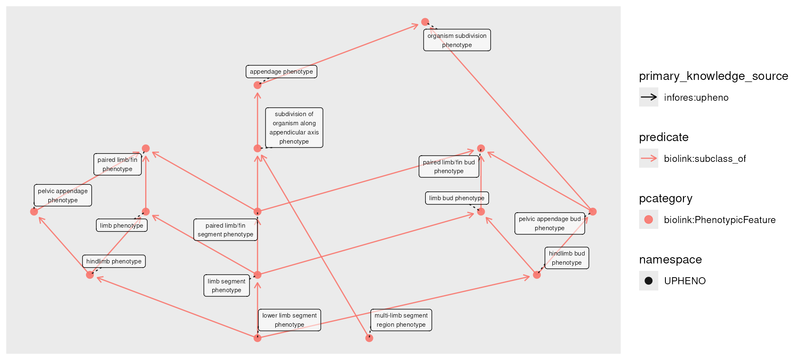
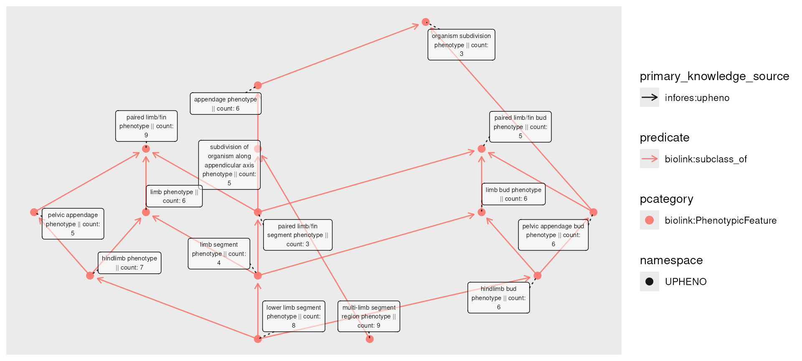
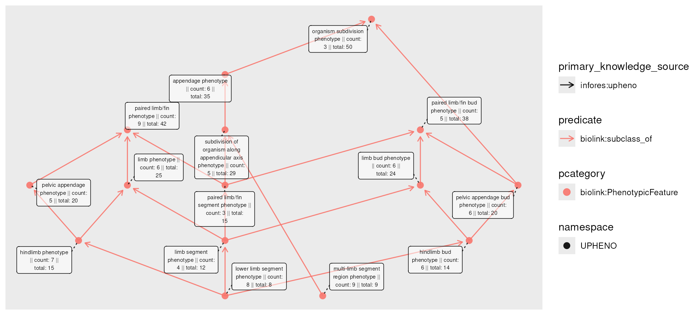
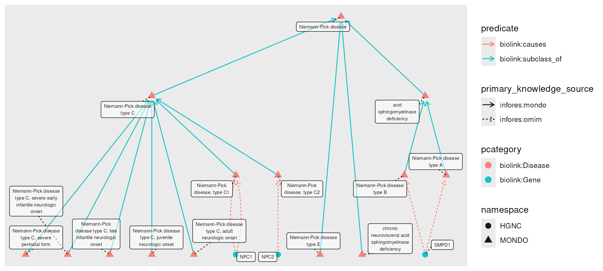
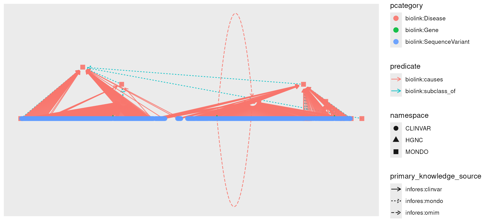
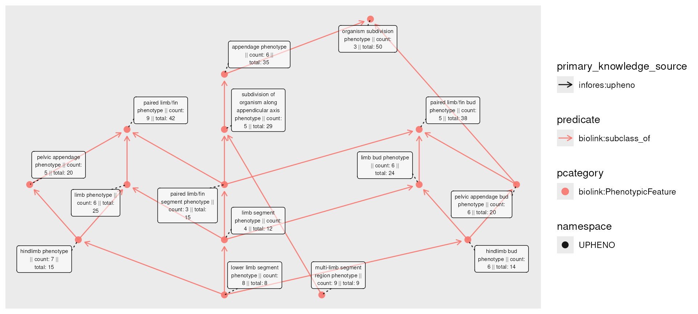
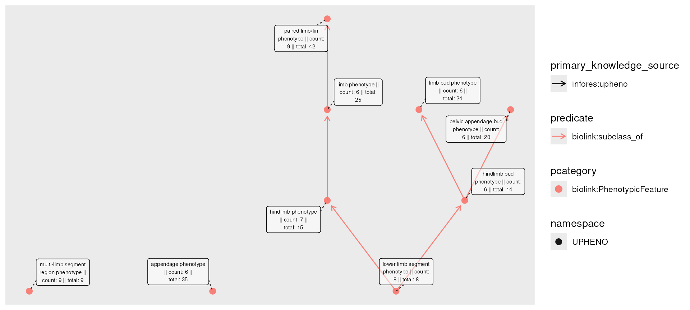
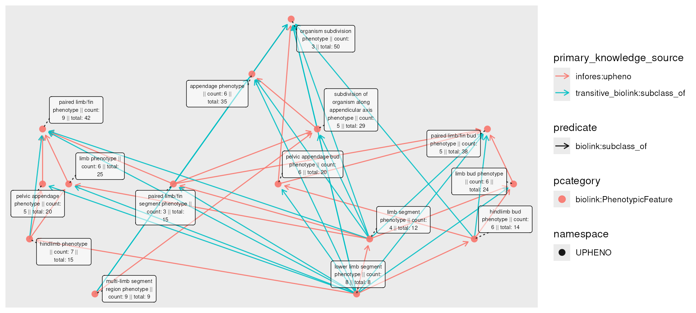
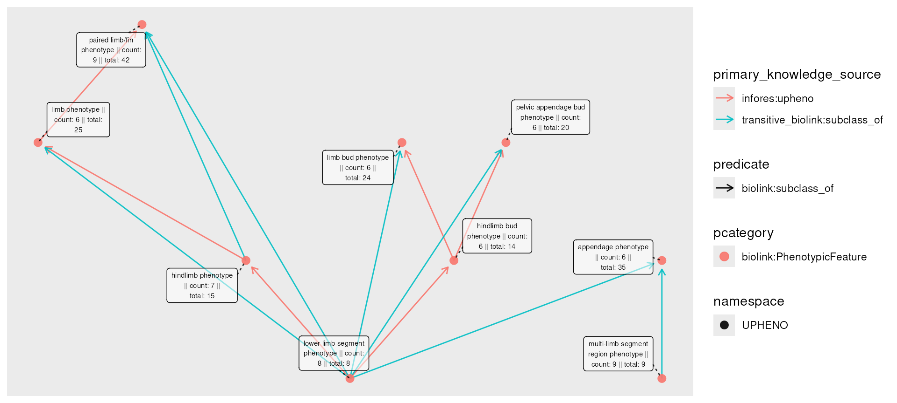
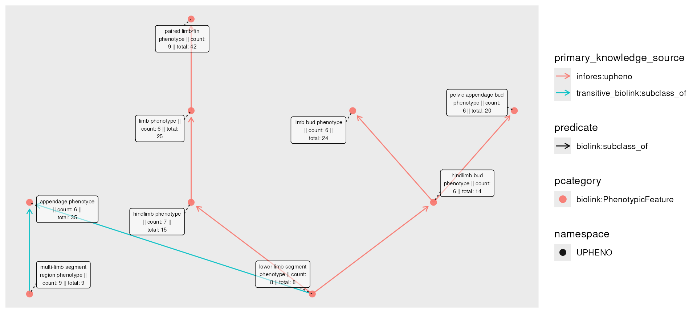

Rollups and Transitivity
Shawn T O’Neil
Vignette updated: Oct-01-2026
Source:vignettes/transitive_rollups.Rmd
transitive_rollups.RmdFirst, let’s load some required libraries, and instantiate a
session-cached monarch_engine() for querying.
Knowledge graphs frequently incorporate ontologies, which include
complex hierarchies of classes and sub-classes. Let’s visualize a couple
of levels of this hierarchy for the phenotype
"leg phenotype" (removing "leg phenotype" as
it will make the next examples clearer).
phenos <- e |>
fetch_nodes(name == "leg phenotype") |>
expand_n(
predicates = "biolink:subclass_of",
categories = "biolink:PhenotypicFeature",
direction = "out",
n = 4
) |>
activate(nodes) |>
filter(name != "leg phenotype")
plot(phenos)
It is not uncommon for data like this to come with additional information; if these were a set of disease diagnoses, we might have patient counts associated with each. Since patients receive diagnoses of varying specificity, there may be counts on any subtype.Hypothesizing these phenotypes as diagnoses, we’ll simulate some count information, plotting it in the node labels:
set.seed(42)
num_nodes <- nrow(nodes(phenos))
phenos_counted <- phenos |>
activate(nodes) |>
mutate(count = rpois(num_nodes, lambda = 5))
plot(phenos_counted,
node_label = paste(name, " || count: ", count)
)
A “rollup” might thus ask, how many patients are associated with each phenotype, if we include all of it’s descendants? For example, “lower limb segment phenotype” (8 patients) is a subclass of “limb segment phenotype” (4 patients), so the total number of “limb segment phenotype” patients includes both (12 patients).
The roll_up() function allows us to compute this
information. It is designed to work with dplyr’s
mutate() on node data: we provide the column specifying
information to aggregate, a function to apply over the values (amongst
all descendants), and whether each node should include its own value in
the aggregation.
phenos_counted_rolled <- phenos_counted |>
activate(nodes) |>
mutate(total = roll_up(count, fun = sum, include_self = TRUE))
plot(phenos_counted_rolled,
node_label = paste0(
name,
" || count: ", count,
" || total: ", total
)
)
The corresponding roll_down()
aggregates in the opposite direction (not shown).
Other aggregations, transferring information
When performing a rollup, each node receives the specified column,
indexed to include only its descendants (and itself, if
include_self is set). This is then passed to the
aggregating function fun.
To see how this can be useful, we’ll start by introducing another
function, transfer(). Much like roll_up(),
this function is designed to be used with mutate() on node
data; its purpose is to transfer information across edges, usually from
nodes of one kind to another. We’ll start by fetching all of the
subtypes of Niemann-Pick disease, and all known causal genes.
npc_genes <- e |>
fetch_nodes(name == "Niemann-Pick disease") |>
descendants() |>
expand(predicates = "biolink:causes")
plot(npc_genes)
Now, we might wish for disease nodes to have an attribute reflecting their causal genes. This information is captured in the graph, but not as a part of the nodes. Thetransfer() function ‘pulls’
information across edges:
npc_genes_causal <- npc_genes |>
activate(nodes) |>
mutate(caused_by = transfer(name, over = "biolink:causes", direction = "out"))
plot(npc_genes_causal,
node_label = paste0(name, " || caused by: ", caused_by)
)
npc_genes_causalGraph with 394 nodes and 711 edges. Expand sections below for details.
Node Data
Showing 100 of 394 nodes:
| id | pcategory | name | symbol | in_taxon_label | description | synonym (list) | category (list) | iri | xref (list) | file_source | narrow_synonym (list) | namespace | provided_by | exact_synonym (list) | subsets (list) | broad_synonym (list) | related_synonym (list) | in_taxon | type | full_name | has_gene (list) | caused_by (list) |
|---|---|---|---|---|---|---|---|---|---|---|---|---|---|---|---|---|---|---|---|---|---|---|
| “MONDO:0001982” | “biolink:Disease” | “Niemann-Pick disease” | NA | NA | “A group of inherited, severe metabolic disorders in which sphingomyelin accumulates in lysosomes in cells. The lysosomes normally transport material through and out of the cell.” | list(c(“Niemann-Pick disease with cholesterol esterification block”, “Niemann-Pick disease, subacute juvenile form”, “lipoid histiocytosis (classical phosphatide)”, “sphingomyelin/cholesterol lipidosis”, “type A Niemann-Pick disease”)) | c(“biolink:Disease”, “biolink:DiseaseOrPhenotypicFeature”, “biolink:OntologyClass”, “biolink:BiologicalEntity”, “biolink:ThingWithTaxon”, “biolink:NamedThing”, “biolink:Entity”) | “http://purl.obolibrary.org/obo/MONDO_0001982” | list(c(“DOID:14504”, “EFO:1001380”, “GARD:0013334”, “ICD10CM:E75.24”, “MEDGEN:10348”, “MESH:D009542”, “NANDO:2200561”, “NCIT:C61269”, “SCTID:58459009”, “UMLS:C0028064”, “icd11.foundation:398872780”)) | “phenio_nodes” | list(“type A Niemann-Pick disease”) | “MONDO” | “phenio_nodes” | list(c(“Niemann-Pick disease with cholesterol esterification block”, “Niemann-Pick disease, subacute juvenile form”, “lipoid histiocytosis (classical phosphatide)”, “sphingomyelin/cholesterol lipidosis”)) | list(c(“doid_rare”, “gard_rare”, “ncit_rare”, “nord_rare”, “otar”, “rare”)) | NA | NA | NA | NA | NA | NA | c(“NC_000011.10:g.6390605del”, “NC_000011.10:g.6390682del”, “NC_000011.10:g.6390705_6390714delinsCGC”, “NC_000011.10:g.6390791del”, “NC_000011.10:g.6390912T>C”, “NC_000011.10:g.6391427T>C”, “NC_000011.10:g.6391540T>C”, “NC_000011.10:g.6391567G>A”, “NC_000011.10:g.6391583dup”, “NC_000011.10:g.6391603_6391604del”, “NC_000011.10:g.6391622C>T”, “NC_000011.10:g.6391629del”, “NC_000011.10:g.6391638del”, “NC_000011.10:g.6391696T>C”, “NC_000011.10:g.6391733G>C”, “NC_000011.10:g.6391745T>C”, “NC_000011.10:g.6391747T>C”, “NC_000011.10:g.6391753C>T”, “NC_000011.10:g.6391795G>A”, “NC_000011.10:g.6391795G>T”, “NC_000011.10:g.6391803G>C”, “NC_000011.10:g.6391804G>A”, “NC_000011.10:g.6391805G>A”, “NC_000011.10:g.6391813A>C”, “NC_000011.10:g.6391822G>C”, “NC_000011.10:g.6391824C>A”, “NC_000011.10:g.6391850_6391872del”, “NC_000011.10:g.6391853T>A”, “NC_000011.10:g.6391945C>A”, “NC_000011.10:g.6391976T>C”, “NC_000011.10:g.6392061del”, “NC_000011.10:g.6392091G>C”, “NC_000011.10:g.6392119G>T”, “NC_000011.10:g.6393230A>G”, “NC_000011.10:g.6393256C>T”, “NC_000011.10:g.6393268C>T”, “NC_000011.10:g.6393272A>G”, “NC_000011.10:g.6393276G>A”, “NC_000011.10:g.6393278A>G”, “NC_000011.10:g.6393301T>G”, “NC_000011.10:g.6393616G>T”, “NC_000011.10:g.6393620C>T”, “NC_000011.10:g.6393621A>G”, “NC_000011.10:g.6393629G>A”, “NC_000011.10:g.6393633A>G”, “NC_000011.10:g.6393680C>T”, “NC_000011.10:g.6393949T>C”, “NC_000011.10:g.6393961A>G”, “NC_000011.10:g.6393981C>T”, “NC_000011.10:g.6393985C>T”, “NC_000011.10:g.6394006C>A”, “NC_000011.10:g.6394013T>G”, “NC_000011.10:g.6394203C>T”, “NC_000011.10:g.6394204G>A”, “NC_000011.10:g.6394204G>T”, “NC_000011.10:g.6394229C>G”, “NC_000011.10:g.6394335C>T”, “NC_000011.10:g.6394384T>C”, “NC_000011.10:g.6394427C>G”, “NC_000011.10:g.6394441A>G”, “NC_000011.10:g.6394446G>A”, “NC_000011.10:g.6394494C>G”, “NC_000011.10:g.6394515C>T”, “NC_000011.10:g.6394516G>A”, “NC_000018.10:g.23533475C>A”, “NC_000018.10:g.23536736A>G”, “NC_000018.10:g.23544402G>T”, “NC_000018.10:g.23573532_23573533del”) |
| “MONDO:0100464” | “biolink:Disease” | “acid sphingomyelinase deficiency” | NA | NA | “An autosomal recessive lysosomal disease caused by biallelic loss of function variants in the SMPD1 gene. Clinical symptoms in affected individuals occur along a continuum. At the severe end of the spectrum are individuals historically diagnosed with Niemann-Pick disease type A (the neurovisceral form), which is characterized by hepatosplenomegaly with rapid neurological deterioration leading to death in the first few years of life. At the milder end of the spectrum are individuals historically diagnosed with Niemann-Pick disease type B, a later-onset, chronic visceral form, characterized by progressive visceral organ symptoms including hepatosplenomegaly and pulmonary insufficiency, and survival into adulthood. In addition, some affected individuals present with an intermediate phenotype, Niemann-Pick disease type A/B.” | NA | c(“biolink:Disease”, “biolink:DiseaseOrPhenotypicFeature”, “biolink:OntologyClass”, “biolink:BiologicalEntity”, “biolink:ThingWithTaxon”, “biolink:NamedThing”, “biolink:Entity”) | “http://purl.obolibrary.org/obo/MONDO_0100464” | list(c(“GARD:0026231”, “MEDGEN:1800807”, “UMLS:C5243927”)) | “phenio_nodes” | NA | “MONDO” | “phenio_nodes” | NA | list(c(“clingen”, “gard_rare”, “otar”, “rare”)) | NA | NA | NA | NA | NA | NA | c(“NC_000011.10:g.6390791del”, “NC_000011.10:g.6391629dup”, “NC_000011.10:g.6391807G>T”, “NC_000011.10:g.6392061del”, “NC_000011.10:g.6393242del”, “NC_000011.10:g.6394335C>T”, “NC_000011.10:g.6394386_6394387del”) |
| “MONDO:0009756” | “biolink:Disease” | “Niemann-Pick disease type A” | NA | NA | “Niemann-Pick disease type A is a very severe subtype of Niemann-Pick disease, an autosomal recessive lysosomal disease, and is characterized clinically by onset in infancy or early childhood with failure to thrive, hepatosplenomegaly, and rapidly progressive neurodegenerative disorders.” | NA | c(“biolink:Disease”, “biolink:DiseaseOrPhenotypicFeature”, “biolink:OntologyClass”, “biolink:BiologicalEntity”, “biolink:ThingWithTaxon”, “biolink:NamedThing”, “biolink:Entity”) | “http://purl.obolibrary.org/obo/MONDO_0009756” | list(c(“DOID:0070111”, “GARD:0007206”, “ICD10CM:E75.240”, “MEDGEN:78650”, “MESH:D052536”, “NANDO:1200061”, “NANDO:2201206”, “NCIT:C126561”, “OMIM:257200”, “Orphanet:77292”, “SCTID:52165006”, “UMLS:C0268242”, “icd11.foundation:530611243”)) | “phenio_nodes” | NA | “MONDO” | “phenio_nodes” | NA | list(c(“doid_rare”, “gard_rare”, “ncit_rare”, “nord_rare”, “ordo_disorder”, “orphanet_rare”, “otar”, “rare”)) | NA | NA | NA | NA | NA | NA | c(“SMPD1”, “NC_000011.10:g.6390605del”, “NC_000011.10:g.6390608_6390609insTTGTGATGCT”, “NC_000011.10:g.6390626C>T”, “NC_000011.10:g.6390637del”, “NC_000011.10:g.6390641del”, “NC_000011.10:g.6390654del”, “NC_000011.10:g.6390659C>T”, “NC_000011.10:g.6390682del”, “NC_000011.10:g.6390693G>A”, “NC_000011.10:g.6390694G>A”, “NC_000011.10:g.6390704dup”, “NC_000011.10:g.6390705_6390714delinsCGC”, “NC_000011.10:g.6390749_6390752del”, “NC_000011.10:g.6390750A>T”, “NC_000011.10:g.6390765G>A”, “NC_000011.10:g.6390773del”, “NC_000011.10:g.6390791del”, “NC_000011.10:g.6390839C>T”, “NC_000011.10:g.6390912T>C”, “NC_000011.10:g.6390918T>C”, “NC_000011.10:g.6391382A>G”, “NC_000011.10:g.6391383G>A”, “NC_000011.10:g.6391419del”, “NC_000011.10:g.6391427T>C”, “NC_000011.10:g.6391481T>C”, “NC_000011.10:g.6391540T>C”, “NC_000011.10:g.6391553T>C”, “NC_000011.10:g.6391567G>A”, “NC_000011.10:g.6391570dup”, “NC_000011.10:g.6391574G>A”, “NC_000011.10:g.6391583dup”, “NC_000011.10:g.6391593G>A”, “NC_000011.10:g.6391598T>A”, “NC_000011.10:g.6391603_6391604del”, “NC_000011.10:g.6391622C>T”, “NC_000011.10:g.6391629dup”, “NC_000011.10:g.6391629del”, “NC_000011.10:g.6391637del”, “NC_000011.10:g.6391638del”, “NC_000011.10:g.6391645_6391652dup”, “NC_000011.10:g.6391646dup”, “NC_000011.10:g.6391646del”, “NC_000011.10:g.6391657G>C”, “NC_000011.10:g.6391662del”, “NC_000011.10:g.6391690del”, “NC_000011.10:g.6391696T>C”, “NC_000011.10:g.6391712del”, “NC_000011.10:g.6391732T>G”, “NC_000011.10:g.6391745T>C”, “NC_000011.10:g.6391747T>C”, “NC_000011.10:g.6391753C>T”, “NC_000011.10:g.6391754G>A”, “NC_000011.10:g.6391795G>A”, “NC_000011.10:g.6391795G>T”, “NC_000011.10:g.6391805del”, “NC_000011.10:g.6391803G>C”, “NC_000011.10:g.6391804G>A”, “NC_000011.10:g.6391805G>A”, “NC_000011.10:g.6391807G>A”, “NC_000011.10:g.6391807G>T”, “NC_000011.10:g.6391813A>C”, “NC_000011.10:g.6391822G>C”, “NC_000011.10:g.6391824C>A”, “NC_000011.10:g.6391831dup”, “NC_000011.10:g.6391850_6391872del”, “NC_000011.10:g.6391853T>A”, “NC_000011.10:g.6391907_6391914dup”, “NC_000011.10:g.6391904A>C”, “NC_000011.10:g.6391912G>A”, “NC_000011.10:g.6391945C>A”, “NC_000011.10:g.6391976T>C”, “NC_000011.10:g.6392005G>A”, “NC_000011.10:g.6392006T>C”, “NC_000011.10:g.6392020G>A”, “NC_000011.10:g.6392020G>C”, “NC_000011.10:g.6392023A>G”, “NC_000011.10:g.6392038C>G”, “NC_000011.10:g.6392061del”, “NC_000011.10:g.6392090G>A”, “NC_000011.10:g.6392091G>C”, “NC_000011.10:g.6392119G>T”, “NC_000011.10:g.6392153T>G”, “NC_000011.10:g.6392157G>A”, “NC_000011.10:g.6393215G>C”, “NC_000011.10:g.6393225dup”, “NC_000011.10:g.6393225del”, “NC_000011.10:g.6393227del”, “NC_000011.10:g.6393230A>G”, “NC_000011.10:g.6393232dup”, “NC_000011.10:g.6393242del”, “NC_000011.10:g.6393241C>T”, “NC_000011.10:g.6393246C>G”, “NC_000011.10:g.6393256C>A”, “NC_000011.10:g.6393256C>T”, “NC_000011.10:g.6393257G>A”, “NC_000011.10:g.6393265T>C”, “NC_000011.10:g.6393268C>T”, “NC_000011.10:g.6393272A>G”, “NC_000011.10:g.6393276G>A”, “NC_000011.10:g.6393278A>G”, “NC_000011.10:g.6393278A>T”, “NC_000011.10:g.6393295A>C”, “NC_000011.10:g.6393301T>G”, “NC_000011.10:g.6393376C>T”, “NC_000011.10:g.6393388G>A”, “NC_000011.10:g.6393615A>G”, “NC_000011.10:g.6393616G>A”, “NC_000011.10:g.6393616G>C”, “NC_000011.10:g.6393616G>T”, “NC_000011.10:g.6393620C>T”, “NC_000011.10:g.6393621A>G”, “NC_000011.10:g.6393629G>A”, “NC_000011.10:g.6393633A>G”, “NC_000011.10:g.6393650T>C”, “NC_000011.10:g.6393680C>T”, “NC_000011.10:g.6393693G>A”, “NC_000011.10:g.6393695T>C”, “NC_000011.10:g.6393695T>G”, “NC_000011.10:g.6393875_6393878del”, “NC_000011.10:g.6393895G>A”, “NC_000011.10:g.6393898A>G”, “NC_000011.10:g.6393918C>T”, “NC_000011.10:g.6393935del”, “NC_000011.10:g.6393937_6393938del”, “NC_000011.10:g.6393948T>C”, “NC_000011.10:g.6393949T>C”, “NC_000011.10:g.6393961A>C”, “NC_000011.10:g.6393961A>G”, “NC_000011.10:g.6393981C>T”, “NC_000011.10:g.6393982G>A”, “NC_000011.10:g.6393984C>A”, “NC_000011.10:g.6393985C>T”, “NC_000011.10:g.6394006C>A”, “NC_000011.10:g.6394013T>G”, “NC_000011.10:g.6394046G>C”, “NC_000011.10:g.6394203C>T”, “NC_000011.10:g.6394204G>A”, “NC_000011.10:g.6394204G>T”, “NC_000011.10:g.6394209T>C”, “NC_000011.10:g.6394219A>T”, “NC_000011.10:g.6394230_6394231del”, “NC_000011.10:g.6394229C>G”, “NC_000011.10:g.6394267A>G”, “NC_000011.10:g.6394273T>G”, “NC_000011.10:g.6394276A>G”, “NC_000011.10:g.6394294_6394295del”, “NC_000011.10:g.6394309C>A”, “NC_000011.10:g.6394317C>T”, “NC_000011.10:g.6394335C>T”, “NC_000011.10:g.6394341del”, “NC_000011.10:g.6394384T>C”, “NC_000011.10:g.6394386_6394387del”, “NC_000011.10:g.6394427C>G”, “NC_000011.10:g.6394441A>G”, “NC_000011.10:g.6394441A>T”, “NC_000011.10:g.6394446G>A”, “NC_000011.10:g.6394482del”, “NC_000011.10:g.6394494C>G”, “NC_000011.10:g.6394496_6394497del”, “NC_000011.10:g.6394512G>A”, “NC_000011.10:g.6394515C>T”, “NC_000011.10:g.6394516G>A”, “NC_000011.10:g.6394516G>C”, “NC_000011.10:g.6394539C>T”) |
| “MONDO:0018982” | “biolink:Disease” | “Niemann-Pick disease type C” | NA | NA | “NPC is a complex lipid storage disease mainly characterized by the accumulation of unesterified cholesterol in the late endosomal/lysosomal compartment.” | list(c(“NPC”, “Niemann Pick Disease Type C”)) | c(“biolink:Disease”, “biolink:DiseaseOrPhenotypicFeature”, “biolink:OntologyClass”, “biolink:BiologicalEntity”, “biolink:ThingWithTaxon”, “biolink:NamedThing”, “biolink:Entity”) | “http://purl.obolibrary.org/obo/MONDO_0018982” | list(c(“GARD:0007207”, “ICD10CM:E75.242”, “MEDGEN:67399”, “MESH:D052556”, “NANDO:1200063”, “NORD:1509”, “Orphanet:646”, “SCTID:66751000”, “UMLS:C0220756”, “icd11.foundation:812702125”)) | “phenio_nodes” | NA | “MONDO” | “phenio_nodes” | list(“Niemann Pick Disease Type C”) | list(c(“gard_rare”, “nord_rare”, “ordo_disorder”, “orphanet_rare”, “otar”, “rare”)) | list(“NPC”) | NA | NA | NA | NA | NA | c(“NC_000014.9:g.74484420G>A”, “NC_000014.9:g.74484426C>A”, “NC_000014.9:g.74484483A>G”, “NC_000014.9:g.74484499dup”, “NC_000014.9:g.74486386G>A”, “NC_000014.9:g.74493217C>A”, “NC_000014.9:g.74493272C>G”, “NC_000018.10:g.23533365_23533368del”, “NC_000018.10:g.23533378A>G”, “NC_000018.10:g.23533391C>T”, “NC_000018.10:g.23533450del”, “NC_000018.10:g.23533470C>G”, “NC_000018.10:g.23533472A>C”, “NC_000018.10:g.23533475C>A”, “NC_000018.10:g.23533475C>T”, “NC_000018.10:g.23533497_23533500del”, “NC_000018.10:g.23533495G>C”, “NC_000018.10:g.23533495G>T”, “NC_000018.10:g.23534445C>T”, “NC_000018.10:g.23534464_23534467dup”, “NC_000018.10:g.23534471T>C”, “NC_000018.10:g.23534480C>T”, “NC_000018.10:g.23534537A>C”, “NC_000018.10:g.23535479T>C”, “NC_000018.10:g.23535495C>T”, “NC_000018.10:g.23535513A>G”, “NC_000018.10:g.23535524A>C”, “NC_000018.10:g.23535537dup”, “NC_000018.10:g.23535624dup”, “NC_000018.10:g.23535687A>G”, “NC_000018.10:g.23536736A>G”, “NC_000018.10:g.23536743G>A”, “NC_000018.10:g.23536758C>T”, “NC_000018.10:g.23536812T>C”, “NC_000018.10:g.23536818C>G”, “NC_000018.10:g.23536818C>T”, “NC_000018.10:g.23538564G>C”, “NC_000018.10:g.23538582T>C”, “NC_000018.10:g.23538608C>G”, “NC_000018.10:g.23538609C>G”, “NC_000018.10:g.23538610_23538611del”, “NC_000018.10:g.23538651G>A”, “NC_000018.10:g.23539363T>C”, “NC_000018.10:g.23539394G>A”, “NC_000018.10:g.23539405G>A”, “NC_000018.10:g.23539417A>C”, “NC_000018.10:g.23539424C>T”, “NC_000018.10:g.23539433C>T”, “NC_000018.10:g.23539447G>A”, “NC_000018.10:g.23539466G>A”, “NC_000018.10:g.23539826G>A”, “NC_000018.10:g.23539830C>T”, “NC_000018.10:g.23539845G>A”, “NC_000018.10:g.23539936G>C”, “NC_000018.10:g.23539985T>A”, “NC_000018.10:g.23540526A>T”, “NC_000018.10:g.23541314G>A”, “NC_000018.10:g.23541355T>G”, “NC_000018.10:g.23541400_23541402del”, “NC_000018.10:g.23543499C>A”, “NC_000018.10:g.23543529A>G”, “NC_000018.10:g.23544345del”, “NC_000018.10:g.23544402G>T”, “NC_000018.10:g.23544403G>C”, “NC_000018.10:g.23544484C>T”, “NC_000018.10:g.23544955C>G”, “NC_000018.10:g.23545006T>A”, “NC_000018.10:g.23545006T>C”, “NC_000018.10:g.23545064G>A”, “NC_000018.10:g.23545088G>A”, “NC_000018.10:g.23548091C>T”, “NC_000018.10:g.23551655del”, “NC_000018.10:g.23551653G>A”, “NC_000018.10:g.23554758C>T”, “NC_000018.10:g.23554759G>A”, “NC_000018.10:g.23554777G>A”, “NC_000018.10:g.23554785T>G”, “NC_000018.10:g.23554810C>A”, “NC_000018.10:g.23556257G>A”, “NC_000018.10:g.23556358C>T”, “NC_000018.10:g.23556359G>A”, “NC_000018.10:g.23556436A>G”, “NC_000018.10:g.23556455G>A”, “NC_000018.10:g.23556527G>A”, “NC_000018.10:g.23556595_23556596dup”, “NC_000018.10:g.23560265del”, “NC_000018.10:g.23560369C>A”, “NC_000018.10:g.23561529T>G”, “NC_000018.10:g.23568862_23568863dup”, “NC_000018.10:g.23568892del”, “NC_000018.10:g.23568949A>G”, “NC_000018.10:g.23572092G>C”, “NC_000018.10:g.23572174A>G”, “NC_000018.10:g.23573532_23573533del”) |
| “MONDO:0009757” | “biolink:Disease” | “Niemann-Pick disease, type C1” | NA | NA | “Type C Niemann-Pick disease associated with a mutation in the gene NPC1, encoding Niemann-Pick C1 protein.” | list(c(“NPC1”, “Niemann-Pick disease type C1”, “Niemann-Pick disease, type C1”, “type C1 Niemann-Pick disease”)) | c(“biolink:Disease”, “biolink:DiseaseOrPhenotypicFeature”, “biolink:OntologyClass”, “biolink:BiologicalEntity”, “biolink:ThingWithTaxon”, “biolink:NamedThing”, “biolink:Entity”) | “http://purl.obolibrary.org/obo/MONDO_0009757” | list(c(“DOID:0070113”, “GARD:0024693”, “MEDGEN:465922”, “NCIT:C126864”, “OMIM:257220”, “SCTID:18927009”, “SCTID:67855008”, “UMLS:C3179455”)) | “phenio_nodes” | NA | “MONDO” | “phenio_nodes” | list(c(“Niemann-Pick disease, type C1”, “type C1 Niemann-Pick disease”)) | list(c(“clingen”, “doid_rare”, “gard_rare”, “ncit_rare”, “rare”)) | NA | list(c(“NPC1”, “Niemann-Pick disease type C1”)) | NA | NA | NA | NA | c(“NPC1”, “NC_000011.10:g.6393376C>T”, “NC_000011.10:g.6394335C>T”, “NC_000018.10:g.23533365_23533368del”, “NC_000018.10:g.23533374_23533375del”, “NC_000018.10:g.23533378A>G”, “NC_000018.10:g.23533391C>T”, “NC_000018.10:g.23533450del”, “NC_000018.10:g.23533470C>G”, “NC_000018.10:g.23533472A>C”, “NC_000018.10:g.23533475C>A”, “NC_000018.10:g.23533475C>T”, “NC_000018.10:g.23533494del”, “NC_000018.10:g.23533497_23533500del”, “NC_000018.10:g.23533495G>C”, “NC_000018.10:g.23533496dup”, “NC_000018.10:g.23533495G>T”, “NC_000018.10:g.23534444dup”, “NC_000018.10:g.23534445C>T”, “NC_000018.10:g.23534447G>A”, “NC_000018.10:g.23534464_23534467dup”, “NC_000018.10:g.23534471T>C”, “NC_000018.10:g.23534475C>A”, “NC_000018.10:g.23534480C>T”, “NC_000018.10:g.23534481G>A”, “NC_000018.10:g.23534534C>T”, “NC_000018.10:g.23534537A>C”, “NC_000018.10:g.23534541C>A”, “NC_000018.10:g.23534544C>T”, “NC_000018.10:g.23535467A>G”, “NC_000018.10:g.23535468C>T”, “NC_000018.10:g.23535479T>A”, “NC_000018.10:g.23535479T>C”, “NC_000018.10:g.23535495C>T”, “NC_000018.10:g.23535513A>G”, “NC_000018.10:g.23535521A>G”, “NC_000018.10:g.23535524A>C”, “NC_000018.10:g.23535533_23535534del”, “NC_000018.10:g.23535537dup”, “NC_000018.10:g.23535566_23535567del”, “NC_000018.10:g.23535621del”, “NC_000018.10:g.23535624dup”, “NC_000018.10:g.23535652dup”, “NC_000018.10:g.23535657C>T”, “NC_000018.10:g.23535665del”, “NC_000018.10:g.23535665A>G”, “NC_000018.10:g.23535681C>T”, “NC_000018.10:g.23535683T>C”, “NC_000018.10:g.23535687A>G”, “NC_000018.10:g.23535691A>T”, “NC_000018.10:g.23535702T>C”, “NC_000018.10:g.23536689G>A”, “NC_000018.10:g.23536736A>G”, “NC_000018.10:g.23536743G>A”, “NC_000018.10:g.23536758C>T”, “NC_000018.10:g.23536764_23536766del”, “NC_000018.10:g.23536811G>A”, “NC_000018.10:g.23536812T>C”, “NC_000018.10:g.23536814G>A”, “NC_000018.10:g.23536818C>G”, “NC_000018.10:g.23536818C>T”, “NC_000018.10:g.23536834_23536835del”, “NC_000018.10:g.23536862T>C”, “NC_000018.10:g.23536874C>A”, “NC_000018.10:g.23538563G>A”, “NC_000018.10:g.23538564G>C”, “NC_000018.10:g.23538572G>A”, “NC_000018.10:g.23538582T>C”, “NC_000018.10:g.23538610dup”, “NC_000018.10:g.23538608C>G”, “NC_000018.10:g.23538609C>A”, “NC_000018.10:g.23538609C>G”, “NC_000018.10:g.23538609C>T”, “NC_000018.10:g.23538609_23538610delinsAT”, “NC_000018.10:g.23538610_23538611del”, “NC_000018.10:g.23538611del”, “NC_000018.10:g.23538629_23538630insA”, “NC_000018.10:g.23538651G>A”, “NC_000018.10:g.23538651G>T”, “NC_000018.10:g.23538655G>T”, “NC_000018.10:g.23539354C>T”, “NC_000018.10:g.23539359dup”, “NC_000018.10:g.23539363T>C”, “NC_000018.10:g.23539373G>A”, “NC_000018.10:g.23539393C>T”, “NC_000018.10:g.23539394G>A”, “NC_000018.10:g.23539405G>A”, “NC_000018.10:g.23539417A>C”, “NC_000018.10:g.23539418C>T”, “NC_000018.10:g.23539419C>T”, “NC_000018.10:g.23539424C>T”, “NC_000018.10:g.23539433C>T”, “NC_000018.10:g.23539436C>T”, “NC_000018.10:g.23539447G>A”, “NC_000018.10:g.23539465C>T”, “NC_000018.10:g.23539466G>A”, “NC_000018.10:g.23539826G>A”, “NC_000018.10:g.23539829G>A”, “NC_000018.10:g.23539830C>T”, “NC_000018.10:g.23539845G>A”, “NC_000018.10:g.23539878C>T”, “NC_000018.10:g.23539893G>A”, “NC_000018.10:g.23539924dup”, “NC_000018.10:g.23539936G>C”, “NC_000018.10:g.23539936G>T”, “NC_000018.10:g.23539946G>A”, “NC_000018.10:g.23539985T>A”, “NC_000018.10:g.23540443C>T”, “NC_000018.10:g.23540447C>T”, “NC_000018.10:g.23540458G>A”, “NC_000018.10:g.23540526A>T”, “NC_000018.10:g.23540528A>G”, “NC_000018.10:g.23540539T>C”, “NC_000018.10:g.23541108T>C”, “NC_000018.10:g.23541313C>T”, “NC_000018.10:g.23541314G>A”, “NC_000018.10:g.23541314G>C”, “NC_000018.10:g.23541355T>G”, “NC_000018.10:g.23541387C>T”, “NC_000018.10:g.23541388G>A”, “NC_000018.10:g.23541400_23541402del”, “NC_000018.10:g.23541435T>C”, “NC_000018.10:g.23543454C>T”, “NC_000018.10:g.23543487G>T”, “NC_000018.10:g.23543499C>A”, “NC_000018.10:g.23543500T>C”, “NC_000018.10:g.23543504dup”, “NC_000018.10:g.23543523del”, “NC_000018.10:g.23543529A>G”, “NC_000018.10:g.23543554G>A”, “NC_000018.10:g.23543566C>T”, “NC_000018.10:g.23544343C>T”, “NC_000018.10:g.23544345del”, “NC_000018.10:g.23544366A>G”, “NC_000018.10:g.23544389del”, “NC_000018.10:g.23544402G>A”, “NC_000018.10:g.23544402G>T”, “NC_000018.10:g.23544403G>C”, “NC_000018.10:g.23544474G>A”, “NC_000018.10:g.23544484C>T”, “NC_000018.10:g.23544519G>C”, “NC_000018.10:g.23544955C>G”, “NC_000018.10:g.23544990del”, “NC_000018.10:g.23544989C>T”, “NC_000018.10:g.23545006T>A”, “NC_000018.10:g.23545006T>C”, “NC_000018.10:g.23545060dup”, “NC_000018.10:g.23545063C>T”, “NC_000018.10:g.23545064G>A”, “NC_000018.10:g.23545071T>G”, “NC_000018.10:g.23545088G>A”, “NC_000018.10:g.23545144dup”, “NC_000018.10:g.23548005C>T”, “NC_000018.10:g.23548091C>T”, “NC_000018.10:g.23551655del”, “NC_000018.10:g.23551653G>A”, “NC_000018.10:g.23552736C>T”, “NC_000018.10:g.23554758C>T”, “NC_000018.10:g.23554759G>A”, “NC_000018.10:g.23554777G>A”, “NC_000018.10:g.23554785T>G”, “NC_000018.10:g.23554810C>A”, “NC_000018.10:g.23554875C>T”, “NC_000018.10:g.23554890G>A”, “NC_000018.10:g.23554899G>A”, “NC_000018.10:g.23554960C>T”, “NC_000018.10:g.23554972G>T”, “NC_000018.10:g.23556257G>A”, “NC_000018.10:g.23556268G>A”, “NC_000018.10:g.23556308G>A”, “NC_000018.10:g.23556350G>A”, “NC_000018.10:g.23556358C>T”, “NC_000018.10:g.23556359G>A”, “NC_000018.10:g.23556404G>A”, “NC_000018.10:g.23556436A>G”, “NC_000018.10:g.23556446T>C”, “NC_000018.10:g.23556455G>A”, “NC_000018.10:g.23556527G>A”, “NC_000018.10:g.23556595_23556596dup”, “NC_000018.10:g.23556614C>T”, “NC_000018.10:g.23556615T>C”, “NC_000018.10:g.23560265del”, “NC_000018.10:g.23560369C>A”, “NC_000018.10:g.23560391G>A”, “NC_000018.10:g.23560420_23560425del”, “NC_000018.10:g.23561384_23561385del”, “NC_000018.10:g.23561461C>T”, “NC_000018.10:g.23561485T>A”, “NC_000018.10:g.23561529T>G”, “NC_000018.10:g.23568853G>A”, “NC_000018.10:g.23568862_23568863dup”, “NC_000018.10:g.23568876G>A”, “NC_000018.10:g.23568892del”, “NC_000018.10:g.23568940G>A”, “NC_000018.10:g.23568949A>G”, “NC_000018.10:g.23568980A>C”, “NC_000018.10:g.23572086T>C”, “NC_000018.10:g.23572092G>C”, “NC_000018.10:g.23572174A>G”, “NC_000018.10:g.23572180C>A”, “NC_000018.10:g.23573459A>T”, “NC_000018.10:g.23586341C>T”) |
| “MONDO:0011871” | “biolink:Disease” | “Niemann-Pick disease type B” | NA | NA | “Niemann-Pick disease type B is a mild subtype of Niemann-Pick disease, an autosomal recessive lysosomal disease, and is characterized clinically by onset in childhood with hepatosplenomegaly, growth retardation, and lung disorders such as infections and dyspnea” | list(c(“Niemann Pick disease type B”, “type B Niemann-Pick disease”)) | c(“biolink:Disease”, “biolink:DiseaseOrPhenotypicFeature”, “biolink:OntologyClass”, “biolink:BiologicalEntity”, “biolink:ThingWithTaxon”, “biolink:NamedThing”, “biolink:Entity”) | “http://purl.obolibrary.org/obo/MONDO_0011871” | list(c(“DOID:0070112”, “GARD:0010729”, “ICD10CM:E75.241”, “MEDGEN:78651”, “MESH:D052537”, “NANDO:1200062”, “NANDO:2201207”, “NCIT:C126866”, “OMIM:607616”, “Orphanet:77293”, “SCTID:39390005”, “UMLS:C0268243”, “icd11.foundation:327269975”)) | “phenio_nodes” | NA | “MONDO” | “phenio_nodes” | list(“type B Niemann-Pick disease”) | list(c(“doid_rare”, “gard_rare”, “ncit_rare”, “nord_rare”, “ordo_disorder”, “orphanet_rare”, “otar”, “rare”)) | NA | list(“Niemann Pick disease type B”) | NA | NA | NA | NA | c(“SMPD1”, “NC_000011.10:g.6390605del”, “NC_000011.10:g.6390608_6390609insTTGTGATGCT”, “NC_000011.10:g.6390626C>T”, “NC_000011.10:g.6390637del”, “NC_000011.10:g.6390641del”, “NC_000011.10:g.6390654del”, “NC_000011.10:g.6390659C>T”, “NC_000011.10:g.6390682del”, “NC_000011.10:g.6390693G>A”, “NC_000011.10:g.6390694G>A”, “NC_000011.10:g.6390704dup”, “NC_000011.10:g.6390705_6390714delinsCGC”, “NC_000011.10:g.6390749_6390752del”, “NC_000011.10:g.6390765G>A”, “NC_000011.10:g.6390773del”, “NC_000011.10:g.6390791del”, “NC_000011.10:g.6390839C>T”, “NC_000011.10:g.6390912T>C”, “NC_000011.10:g.6390918T>C”, “NC_000011.10:g.6391382A>G”, “NC_000011.10:g.6391383G>A”, “NC_000011.10:g.6391419del”, “NC_000011.10:g.6391481T>C”, “NC_000011.10:g.6391540T>C”, “NC_000011.10:g.6391553T>C”, “NC_000011.10:g.6391567G>A”, “NC_000011.10:g.6391574G>A”, “NC_000011.10:g.6391583dup”, “NC_000011.10:g.6391593G>A”, “NC_000011.10:g.6391603_6391604del”, “NC_000011.10:g.6391622C>T”, “NC_000011.10:g.6391629dup”, “NC_000011.10:g.6391629del”, “NC_000011.10:g.6391637del”, “NC_000011.10:g.6391638del”, “NC_000011.10:g.6391645_6391652dup”, “NC_000011.10:g.6391646dup”, “NC_000011.10:g.6391646del”, “NC_000011.10:g.6391657G>C”, “NC_000011.10:g.6391662del”, “NC_000011.10:g.6391690del”, “NC_000011.10:g.6391696T>C”, “NC_000011.10:g.6391712del”, “NC_000011.10:g.6391732T>G”, “NC_000011.10:g.6391733G>C”, “NC_000011.10:g.6391745T>C”, “NC_000011.10:g.6391747T>C”, “NC_000011.10:g.6391753C>T”, “NC_000011.10:g.6391795G>A”, “NC_000011.10:g.6391805del”, “NC_000011.10:g.6391804G>A”, “NC_000011.10:g.6391807G>A”, “NC_000011.10:g.6391807G>T”, “NC_000011.10:g.6391813A>C”, “NC_000011.10:g.6391822G>C”, “NC_000011.10:g.6391824C>A”, “NC_000011.10:g.6391831dup”, “NC_000011.10:g.6391850_6391872del”, “NC_000011.10:g.6391853T>A”, “NC_000011.10:g.6391907_6391914dup”, “NC_000011.10:g.6391904A>C”, “NC_000011.10:g.6391912G>A”, “NC_000011.10:g.6391945C>A”, “NC_000011.10:g.6391976T>C”, “NC_000011.10:g.6392006T>C”, “NC_000011.10:g.6392020G>A”, “NC_000011.10:g.6392020G>C”, “NC_000011.10:g.6392038C>G”, “NC_000011.10:g.6392061del”, “NC_000011.10:g.6392090G>A”, “NC_000011.10:g.6392091G>C”, “NC_000011.10:g.6392119G>T”, “NC_000011.10:g.6392153T>G”, “NC_000011.10:g.6392157G>A”, “NC_000011.10:g.6393215G>C”, “NC_000011.10:g.6393225dup”, “NC_000011.10:g.6393225del”, “NC_000011.10:g.6393227del”, “NC_000011.10:g.6393232dup”, “NC_000011.10:g.6393242del”, “NC_000011.10:g.6393241C>T”, “NC_000011.10:g.6393246C>G”, “NC_000011.10:g.6393256C>A”, “NC_000011.10:g.6393256C>T”, “NC_000011.10:g.6393265T>C”, “NC_000011.10:g.6393268C>T”, “NC_000011.10:g.6393272A>G”, “NC_000011.10:g.6393278A>G”, “NC_000011.10:g.6393278A>T”, “NC_000011.10:g.6393295A>C”, “NC_000011.10:g.6393301T>G”, “NC_000011.10:g.6393376C>T”, “NC_000011.10:g.6393388G>A”, “NC_000011.10:g.6393615A>G”, “NC_000011.10:g.6393616G>A”, “NC_000011.10:g.6393616G>T”, “NC_000011.10:g.6393620C>T”, “NC_000011.10:g.6393621A>G”, “NC_000011.10:g.6393629G>A”, “NC_000011.10:g.6393633A>G”, “NC_000011.10:g.6393650T>C”, “NC_000011.10:g.6393680C>T”, “NC_000011.10:g.6393693G>A”, “NC_000011.10:g.6393695T>C”, “NC_000011.10:g.6393695T>G”, “NC_000011.10:g.6393875_6393878del”, “NC_000011.10:g.6393895G>A”, “NC_000011.10:g.6393898A>G”, “NC_000011.10:g.6393918C>T”, “NC_000011.10:g.6393935del”, “NC_000011.10:g.6393937_6393938del”, “NC_000011.10:g.6393948T>C”, “NC_000011.10:g.6393949T>C”, “NC_000011.10:g.6393961A>C”, “NC_000011.10:g.6393961A>G”, “NC_000011.10:g.6393981C>T”, “NC_000011.10:g.6393982G>A”, “NC_000011.10:g.6393985C>T”, “NC_000011.10:g.6394006C>A”, “NC_000011.10:g.6394013T>G”, “NC_000011.10:g.6394203C>T”, “NC_000011.10:g.6394204G>A”, “NC_000011.10:g.6394204G>T”, “NC_000011.10:g.6394209T>C”, “NC_000011.10:g.6394219A>T”, “NC_000011.10:g.6394230_6394231del”, “NC_000011.10:g.6394229C>G”, “NC_000011.10:g.6394267A>G”, “NC_000011.10:g.6394276A>G”, “NC_000011.10:g.6394294_6394295del”, “NC_000011.10:g.6394309C>A”, “NC_000011.10:g.6394317C>T”, “NC_000011.10:g.6394335C>T”, “NC_000011.10:g.6394341del”, “NC_000011.10:g.6394384T>C”, “NC_000011.10:g.6394386_6394387del”, “NC_000011.10:g.6394441A>G”, “NC_000011.10:g.6394441A>T”, “NC_000011.10:g.6394446G>A”, “NC_000011.10:g.6394482del”, “NC_000011.10:g.6394494C>G”, “NC_000011.10:g.6394496_6394497del”, “NC_000011.10:g.6394512G>A”, “NC_000011.10:g.6394515C>T”, “NC_000011.10:g.6394516G>A”, “NC_000011.10:g.6394516G>C”, “NC_000011.10:g.6394539C>T”) |
| “MONDO:0011873” | “biolink:Disease” | “Niemann-Pick disease, type C2” | NA | NA | “Niemann-Pick disease type C2 is a rare metabolic condition that affects many different parts of the body. Although signs and symptoms can develop at any age (infancy through adulthood), most affected people develop features of the condition during childhood. Neimann-Pick disease type C2 may be characterized by ataxia (difficulty coordinating movements), vertical supranuclear gaze palsy (inability to move the eyes vertically), poor muscle tone, hepatosplenomegaly (enlarged liver and spleen), interstitial lung disease, intellectual decline, seizures, speech problems, and difficulty swallowing. Niemann-Pick disease type C2 is caused by changes (mutations) in the NPC2 gene and is inherited in an autosomal recessive manner. There is, unfortunately, no cure for Niemann-Pick disease type C2. Treatment is based on the signs and symptoms present in each person.” | list(c(“NPC2”, “Niemann-Pick disease type C2”, “Niemann-Pick disease, type C2”, “type C2 Niemann-Pick disease”)) | c(“biolink:Disease”, “biolink:DiseaseOrPhenotypicFeature”, “biolink:OntologyClass”, “biolink:BiologicalEntity”, “biolink:ThingWithTaxon”, “biolink:NamedThing”, “biolink:Entity”) | “http://purl.obolibrary.org/obo/MONDO_0011873” | list(c(“DOID:0070114”, “GARD:0003992”, “MEDGEN:335942”, “MESH:C536119”, “NCIT:C126865”, “OMIM:607625”, “UMLS:C1843366”)) | “phenio_nodes” | NA | “MONDO” | “phenio_nodes” | list(c(“NPC2”, “Niemann-Pick disease, type C2”, “type C2 Niemann-Pick disease”)) | list(c(“clingen”, “doid_rare”, “gard_rare”, “ncit_rare”, “rare”)) | NA | list(“Niemann-Pick disease type C2”) | NA | NA | NA | NA | c(“NPC2”, “NC_000014.9:g.74484420G>A”, “NC_000014.9:g.74484426C>A”, “NC_000014.9:g.74484483A>G”, “NC_000014.9:g.74484499dup”, “NC_000014.9:g.74484567_74484570dup”, “NC_000014.9:g.74486324C>T”, “NC_000014.9:g.74486354G>C”, “NC_000014.9:g.74486378G>T”, “NC_000014.9:g.74486386G>A”, “NC_000014.9:g.74486404C>T”, “NC_000014.9:g.74493217C>A”, “NC_000014.9:g.74493272C>G”) |
| “MONDO:0016306” | “biolink:Disease” | “Niemann-Pick disease type C, severe perinatal form” | NA | NA | NA | NA | c(“biolink:Disease”, “biolink:DiseaseOrPhenotypicFeature”, “biolink:OntologyClass”, “biolink:BiologicalEntity”, “biolink:ThingWithTaxon”, “biolink:NamedThing”, “biolink:Entity”) | “http://purl.obolibrary.org/obo/MONDO_0016306” | list(c(“GARD:0020504”, “MEDGEN:1842349”, “Orphanet:216972”, “UMLS:C5680866”)) | “phenio_nodes” | NA | “MONDO” | “phenio_nodes” | NA | list(c(“gard_rare”, “nord_rare”, “ordo_subtype_of_a_disorder”, “otar”, “rare”)) | NA | NA | NA | NA | NA | NA | character(0) |
| “MONDO:0016307” | “biolink:Disease” | “Niemann-Pick disease type C, severe early infantile neurologic onset” | NA | NA | NA | NA | c(“biolink:Disease”, “biolink:DiseaseOrPhenotypicFeature”, “biolink:OntologyClass”, “biolink:BiologicalEntity”, “biolink:ThingWithTaxon”, “biolink:NamedThing”, “biolink:Entity”) | “http://purl.obolibrary.org/obo/MONDO_0016307” | list(c(“GARD:0020505”, “MEDGEN:1842400”, “Orphanet:216975”, “UMLS:C5680868”, “icd11.foundation:587642791”)) | “phenio_nodes” | NA | “MONDO” | “phenio_nodes” | NA | list(c(“gard_rare”, “nord_rare”, “ordo_subtype_of_a_disorder”, “otar”, “rare”)) | NA | NA | NA | NA | NA | NA | character(0) |
| “MONDO:0016308” | “biolink:Disease” | “Niemann-Pick disease type C, late infantile neurologic onset” | NA | NA | NA | NA | c(“biolink:Disease”, “biolink:DiseaseOrPhenotypicFeature”, “biolink:OntologyClass”, “biolink:BiologicalEntity”, “biolink:ThingWithTaxon”, “biolink:NamedThing”, “biolink:Entity”) | “http://purl.obolibrary.org/obo/MONDO_0016308” | list(c(“GARD:0020506”, “MEDGEN:1843353”, “Orphanet:216978”, “UMLS:C5680867”, “icd11.foundation:2075382821”)) | “phenio_nodes” | NA | “MONDO” | “phenio_nodes” | NA | list(c(“gard_rare”, “nord_rare”, “ordo_subtype_of_a_disorder”, “otar”, “rare”)) | NA | NA | NA | NA | NA | NA | character(0) |
| “MONDO:0016309” | “biolink:Disease” | “Niemann-Pick disease type C, juvenile neurologic onset” | NA | NA | NA | list(“Niemann-Pick disease type C, classic form”) | c(“biolink:Disease”, “biolink:DiseaseOrPhenotypicFeature”, “biolink:OntologyClass”, “biolink:BiologicalEntity”, “biolink:ThingWithTaxon”, “biolink:NamedThing”, “biolink:Entity”) | “http://purl.obolibrary.org/obo/MONDO_0016309” | list(c(“GARD:0020507”, “MEDGEN:1842257”, “Orphanet:216981”, “UMLS:C5679813”, “icd11.foundation:2006062681”)) | “phenio_nodes” | NA | “MONDO” | “phenio_nodes” | list(“Niemann-Pick disease type C, classic form”) | list(c(“gard_rare”, “nord_rare”, “ordo_subtype_of_a_disorder”, “otar”, “rare”)) | NA | NA | NA | NA | NA | NA | character(0) |
| “MONDO:0016310” | “biolink:Disease” | “Niemann-Pick disease type C, adult neurologic onset” | NA | NA | NA | NA | c(“biolink:Disease”, “biolink:DiseaseOrPhenotypicFeature”, “biolink:OntologyClass”, “biolink:BiologicalEntity”, “biolink:ThingWithTaxon”, “biolink:NamedThing”, “biolink:Entity”) | “http://purl.obolibrary.org/obo/MONDO_0016310” | list(c(“GARD:0020508”, “MEDGEN:1826101”, “NANDO:1200065”, “NANDO:2201209”, “Orphanet:216986”, “UMLS:C5680869”, “icd11.foundation:77127214”)) | “phenio_nodes” | NA | “MONDO” | “phenio_nodes” | NA | list(c(“gard_rare”, “nord_rare”, “ordo_subtype_of_a_disorder”, “otar”, “rare”)) | NA | NA | NA | NA | NA | NA | character(0) |
| “MONDO:0020384” | “biolink:Disease” | “Niemann-Pick disease type E” | NA | NA | “Niemann-Pick disease, type E is a poorly defined adult-onset and non-neuronopathic form of Niemann-Pick disease.” | NA | c(“biolink:Disease”, “biolink:DiseaseOrPhenotypicFeature”, “biolink:OntologyClass”, “biolink:BiologicalEntity”, “biolink:ThingWithTaxon”, “biolink:NamedThing”, “biolink:Entity”) | “http://purl.obolibrary.org/obo/MONDO_0020384” | list(c(“GARD:0025159”, “MEDGEN:82781”, “Orphanet:99022”, “SCTID:73399005”, “UMLS:C0268248”)) | “phenio_nodes” | NA | “MONDO” | “phenio_nodes” | NA | list(c(“gard_rare”, “otar”, “rare”)) | NA | NA | NA | NA | NA | NA | character(0) |
| “MONDO:0850058” | “biolink:Disease” | “chronic neurovisceral acid sphingomyelinase deficiency” | NA | NA | NA | NA | c(“biolink:Disease”, “biolink:DiseaseOrPhenotypicFeature”, “biolink:OntologyClass”, “biolink:BiologicalEntity”, “biolink:ThingWithTaxon”, “biolink:NamedThing”, “biolink:Entity”) | “http://purl.obolibrary.org/obo/MONDO_0850058” | list(c(“GARD:0022456”, “ICD10CM:E75.244”, “MEDGEN:1842316”, “Orphanet:618891”, “UMLS:C5539139”)) | “phenio_nodes” | NA | “MONDO” | “phenio_nodes” | NA | list(c(“gard_rare”, “nord_rare”, “ordo_disorder”, “orphanet_rare”, “rare”)) | NA | NA | NA | NA | NA | NA | character(0) |
| “HGNC:11120” | “biolink:Gene” | “SMPD1” | “SMPD1” | “Homo sapiens” | NA | list(c(“ASM”, “acid sphingomyelinase”, “Niemann-Pick type A/B”, “sphingomyelin phosphodiesterase 1, acid lysosomal”)) | c(“biolink:Gene”, “biolink:GeneOrGeneProduct”, “biolink:GeneOrGeneProductOrGeneFamily”, “biolink:GenomicEntity”, “biolink:ChemicalEntityOrGeneOrGeneProduct”, “biolink:PhysicalEssence”, “biolink:OntologyClass”, “biolink:BiologicalEntity”, “biolink:ThingWithTaxon”, “biolink:NamedThing”, “biolink:Entity”, “biolink:PhysicalEssenceOrOccurrent”, “biolink:MacromolecularMachineMixin”) | NA | list(c(“ENSEMBL:ENSG00000166311”, “OMIM:607608”)) | “hgnc_gene_nodes” | NA | “HGNC” | “hgnc_gene_nodes” | NA | NA | NA | NA | “NCBITaxon:9606” | “SO:0001217” | “sphingomyelin phosphodiesterase 1” | NA | character(0) |
| “HGNC:7897” | “biolink:Gene” | “NPC1” | “NPC1” | “Homo sapiens” | NA | list(c(“SLC65A1”, “Niemann-Pick disease, type C1”)) | c(“biolink:Gene”, “biolink:GeneOrGeneProduct”, “biolink:GeneOrGeneProductOrGeneFamily”, “biolink:GenomicEntity”, “biolink:ChemicalEntityOrGeneOrGeneProduct”, “biolink:PhysicalEssence”, “biolink:OntologyClass”, “biolink:BiologicalEntity”, “biolink:ThingWithTaxon”, “biolink:NamedThing”, “biolink:Entity”, “biolink:PhysicalEssenceOrOccurrent”, “biolink:MacromolecularMachineMixin”) | NA | list(c(“ENSEMBL:ENSG00000141458”, “OMIM:607623”)) | “hgnc_gene_nodes” | NA | “HGNC” | “hgnc_gene_nodes” | NA | NA | NA | NA | “NCBITaxon:9606” | “SO:0001217” | “NPC intracellular cholesterol transporter 1” | NA | character(0) |
| “HGNC:14537” | “biolink:Gene” | “NPC2” | “NPC2” | “Homo sapiens” | NA | list(c(“HE1”, “NP-C2”, “EDDM1”, “epididymal protein 1”, “Niemann-Pick disease, type C2”)) | c(“biolink:Gene”, “biolink:GeneOrGeneProduct”, “biolink:GeneOrGeneProductOrGeneFamily”, “biolink:GenomicEntity”, “biolink:ChemicalEntityOrGeneOrGeneProduct”, “biolink:PhysicalEssence”, “biolink:OntologyClass”, “biolink:BiologicalEntity”, “biolink:ThingWithTaxon”, “biolink:NamedThing”, “biolink:Entity”, “biolink:PhysicalEssenceOrOccurrent”, “biolink:MacromolecularMachineMixin”) | NA | list(c(“ENSEMBL:ENSG00000119655”, “OMIM:601015”)) | “hgnc_gene_nodes” | NA | “HGNC” | “hgnc_gene_nodes” | NA | NA | NA | NA | “NCBITaxon:9606” | “SO:0001217” | “NPC intracellular cholesterol transporter 2” | NA | character(0) |
| “CLINVAR:553962” | “biolink:SequenceVariant” | “NC_000011.10:g.6390605del” | NA | “Homo sapiens” | NA | NA | c(“biolink:SequenceVariant”, “biolink:GenomicEntity”, “biolink:PhysicalEssence”, “biolink:OntologyClass”, “biolink:BiologicalEntity”, “biolink:ThingWithTaxon”, “biolink:NamedThing”, “biolink:Entity”, “biolink:PhysicalEssenceOrOccurrent”) | NA | list(“DBSNP:281860663”) | “clinvar_variant_nodes” | NA | “CLINVAR” | “clinvar_variant_nodes” | NA | NA | NA | NA | “NCBITaxon:9606” | “SO:0000159” | NA | list(“HGNC:11120”) | character(0) |
| “CLINVAR:2679041” | “biolink:SequenceVariant” | “NC_000011.10:g.6390608_6390609insTTGTGATGCT” | NA | “Homo sapiens” | NA | NA | c(“biolink:SequenceVariant”, “biolink:GenomicEntity”, “biolink:PhysicalEssence”, “biolink:OntologyClass”, “biolink:BiologicalEntity”, “biolink:ThingWithTaxon”, “biolink:NamedThing”, “biolink:Entity”, “biolink:PhysicalEssenceOrOccurrent”) | NA | list(“DBSNP:2493798336”) | “clinvar_variant_nodes” | NA | “CLINVAR” | “clinvar_variant_nodes” | NA | NA | NA | NA | “NCBITaxon:9606” | “SO:0000667” | NA | list(“HGNC:11120”) | character(0) |
| “CLINVAR:550117” | “biolink:SequenceVariant” | “NC_000011.10:g.6390626C>T” | NA | “Homo sapiens” | NA | NA | c(“biolink:SequenceVariant”, “biolink:GenomicEntity”, “biolink:PhysicalEssence”, “biolink:OntologyClass”, “biolink:BiologicalEntity”, “biolink:ThingWithTaxon”, “biolink:NamedThing”, “biolink:Entity”, “biolink:PhysicalEssenceOrOccurrent”) | NA | list(“DBSNP:1205990349”) | “clinvar_variant_nodes” | NA | “CLINVAR” | “clinvar_variant_nodes” | NA | NA | NA | NA | “NCBITaxon:9606” | “SO:0001483” | NA | list(“HGNC:11120”) | character(0) |
| “CLINVAR:1460100” | “biolink:SequenceVariant” | “NC_000011.10:g.6390637del” | NA | “Homo sapiens” | NA | NA | c(“biolink:SequenceVariant”, “biolink:GenomicEntity”, “biolink:PhysicalEssence”, “biolink:OntologyClass”, “biolink:BiologicalEntity”, “biolink:ThingWithTaxon”, “biolink:NamedThing”, “biolink:Entity”, “biolink:PhysicalEssenceOrOccurrent”) | NA | list(“DBSNP:2134004594”) | “clinvar_variant_nodes” | NA | “CLINVAR” | “clinvar_variant_nodes” | NA | NA | NA | NA | “NCBITaxon:9606” | “SO:0000159” | NA | list(“HGNC:11120”) | character(0) |
| “CLINVAR:1386053” | “biolink:SequenceVariant” | “NC_000011.10:g.6390641del” | NA | “Homo sapiens” | NA | NA | c(“biolink:SequenceVariant”, “biolink:GenomicEntity”, “biolink:PhysicalEssence”, “biolink:OntologyClass”, “biolink:BiologicalEntity”, “biolink:ThingWithTaxon”, “biolink:NamedThing”, “biolink:Entity”, “biolink:PhysicalEssenceOrOccurrent”) | NA | list(“DBSNP:2134004628”) | “clinvar_variant_nodes” | NA | “CLINVAR” | “clinvar_variant_nodes” | NA | NA | NA | NA | “NCBITaxon:9606” | “SO:0000159” | NA | list(“HGNC:11120”) | character(0) |
| “CLINVAR:558404” | “biolink:SequenceVariant” | “NC_000011.10:g.6390654del” | NA | “Homo sapiens” | NA | NA | c(“biolink:SequenceVariant”, “biolink:GenomicEntity”, “biolink:PhysicalEssence”, “biolink:OntologyClass”, “biolink:BiologicalEntity”, “biolink:ThingWithTaxon”, “biolink:NamedThing”, “biolink:Entity”, “biolink:PhysicalEssenceOrOccurrent”) | NA | list(“DBSNP:1554933746”) | “clinvar_variant_nodes” | NA | “CLINVAR” | “clinvar_variant_nodes” | NA | NA | NA | NA | “NCBITaxon:9606” | “SO:0000159” | NA | list(“HGNC:11120”) | character(0) |
| “CLINVAR:554810” | “biolink:SequenceVariant” | “NC_000011.10:g.6390659C>T” | NA | “Homo sapiens” | NA | NA | c(“biolink:SequenceVariant”, “biolink:GenomicEntity”, “biolink:PhysicalEssence”, “biolink:OntologyClass”, “biolink:BiologicalEntity”, “biolink:ThingWithTaxon”, “biolink:NamedThing”, “biolink:Entity”, “biolink:PhysicalEssenceOrOccurrent”) | NA | list(“DBSNP:1554933751”) | “clinvar_variant_nodes” | NA | “CLINVAR” | “clinvar_variant_nodes” | NA | NA | NA | NA | “NCBITaxon:9606” | “SO:0001483” | NA | list(“HGNC:11120”) | character(0) |
| “CLINVAR:551367” | “biolink:SequenceVariant” | “NC_000011.10:g.6390682del” | NA | “Homo sapiens” | NA | NA | c(“biolink:SequenceVariant”, “biolink:GenomicEntity”, “biolink:PhysicalEssence”, “biolink:OntologyClass”, “biolink:BiologicalEntity”, “biolink:ThingWithTaxon”, “biolink:NamedThing”, “biolink:Entity”, “biolink:PhysicalEssenceOrOccurrent”) | NA | list(“DBSNP:750157176”) | “clinvar_variant_nodes” | NA | “CLINVAR” | “clinvar_variant_nodes” | NA | NA | NA | NA | “NCBITaxon:9606” | “SO:0000159” | NA | list(“HGNC:11120”) | character(0) |
| “CLINVAR:553755” | “biolink:SequenceVariant” | “NC_000011.10:g.6390693G>A” | NA | “Homo sapiens” | NA | NA | c(“biolink:SequenceVariant”, “biolink:GenomicEntity”, “biolink:PhysicalEssence”, “biolink:OntologyClass”, “biolink:BiologicalEntity”, “biolink:ThingWithTaxon”, “biolink:NamedThing”, “biolink:Entity”, “biolink:PhysicalEssenceOrOccurrent”) | NA | list(“DBSNP:1554933780”) | “clinvar_variant_nodes” | NA | “CLINVAR” | “clinvar_variant_nodes” | NA | NA | NA | NA | “NCBITaxon:9606” | “SO:0001483” | NA | list(“HGNC:11120”) | character(0) |
| “CLINVAR:188840” | “biolink:SequenceVariant” | “NC_000011.10:g.6390694G>A” | NA | “Homo sapiens” | NA | NA | c(“biolink:SequenceVariant”, “biolink:GenomicEntity”, “biolink:PhysicalEssence”, “biolink:OntologyClass”, “biolink:BiologicalEntity”, “biolink:ThingWithTaxon”, “biolink:NamedThing”, “biolink:Entity”, “biolink:PhysicalEssenceOrOccurrent”) | NA | list(“DBSNP:786204506”) | “clinvar_variant_nodes” | NA | “CLINVAR” | “clinvar_variant_nodes” | NA | NA | NA | NA | “NCBITaxon:9606” | “SO:0001483” | NA | list(“HGNC:11120”) | character(0) |
| “CLINVAR:813473” | “biolink:SequenceVariant” | “NC_000011.10:g.6390704dup” | NA | “Homo sapiens” | NA | NA | c(“biolink:SequenceVariant”, “biolink:GenomicEntity”, “biolink:PhysicalEssence”, “biolink:OntologyClass”, “biolink:BiologicalEntity”, “biolink:ThingWithTaxon”, “biolink:NamedThing”, “biolink:Entity”, “biolink:PhysicalEssenceOrOccurrent”) | NA | list(“DBSNP:1590735238”) | “clinvar_variant_nodes” | NA | “CLINVAR” | “clinvar_variant_nodes” | NA | NA | NA | NA | “NCBITaxon:9606” | “SO:1000035” | NA | list(“HGNC:11120”) | character(0) |
| “CLINVAR:813474” | “biolink:SequenceVariant” | “NC_000011.10:g.6390705_6390714delinsCGC” | NA | “Homo sapiens” | NA | NA | c(“biolink:SequenceVariant”, “biolink:GenomicEntity”, “biolink:PhysicalEssence”, “biolink:OntologyClass”, “biolink:BiologicalEntity”, “biolink:ThingWithTaxon”, “biolink:NamedThing”, “biolink:Entity”, “biolink:PhysicalEssenceOrOccurrent”) | NA | list(“DBSNP:1590735307”) | “clinvar_variant_nodes” | NA | “CLINVAR” | “clinvar_variant_nodes” | NA | NA | NA | NA | “NCBITaxon:9606” | “SO:1000032” | NA | list(“HGNC:11120”) | character(0) |
| “CLINVAR:371029” | “biolink:SequenceVariant” | “NC_000011.10:g.6390749_6390752del” | NA | “Homo sapiens” | NA | NA | c(“biolink:SequenceVariant”, “biolink:GenomicEntity”, “biolink:PhysicalEssence”, “biolink:OntologyClass”, “biolink:BiologicalEntity”, “biolink:ThingWithTaxon”, “biolink:NamedThing”, “biolink:Entity”, “biolink:PhysicalEssenceOrOccurrent”) | NA | list(“DBSNP:1057516949”) | “clinvar_variant_nodes” | NA | “CLINVAR” | “clinvar_variant_nodes” | NA | NA | NA | NA | “NCBITaxon:9606” | “SO:0000159” | NA | list(“HGNC:11120”) | character(0) |
| “CLINVAR:1209797” | “biolink:SequenceVariant” | “NC_000011.10:g.6390750A>T” | NA | “Homo sapiens” | NA | NA | c(“biolink:SequenceVariant”, “biolink:GenomicEntity”, “biolink:PhysicalEssence”, “biolink:OntologyClass”, “biolink:BiologicalEntity”, “biolink:ThingWithTaxon”, “biolink:NamedThing”, “biolink:Entity”, “biolink:PhysicalEssenceOrOccurrent”) | NA | list(“DBSNP:748589919”) | “clinvar_variant_nodes” | NA | “CLINVAR” | “clinvar_variant_nodes” | NA | NA | NA | NA | “NCBITaxon:9606” | “SO:0001483” | NA | list(“HGNC:11120”) | character(0) |
| “CLINVAR:1353540” | “biolink:SequenceVariant” | “NC_000011.10:g.6390765G>A” | NA | “Homo sapiens” | NA | NA | c(“biolink:SequenceVariant”, “biolink:GenomicEntity”, “biolink:PhysicalEssence”, “biolink:OntologyClass”, “biolink:BiologicalEntity”, “biolink:ThingWithTaxon”, “biolink:NamedThing”, “biolink:Entity”, “biolink:PhysicalEssenceOrOccurrent”) | NA | list(“DBSNP:2134006149”) | “clinvar_variant_nodes” | NA | “CLINVAR” | “clinvar_variant_nodes” | NA | NA | NA | NA | “NCBITaxon:9606” | “SO:0001483” | NA | list(“HGNC:11120”) | character(0) |
| “CLINVAR:1073151” | “biolink:SequenceVariant” | “NC_000011.10:g.6390773del” | NA | “Homo sapiens” | NA | NA | c(“biolink:SequenceVariant”, “biolink:GenomicEntity”, “biolink:PhysicalEssence”, “biolink:OntologyClass”, “biolink:BiologicalEntity”, “biolink:ThingWithTaxon”, “biolink:NamedThing”, “biolink:Entity”, “biolink:PhysicalEssenceOrOccurrent”) | NA | list(“DBSNP:2134006179”) | “clinvar_variant_nodes” | NA | “CLINVAR” | “clinvar_variant_nodes” | NA | NA | NA | NA | “NCBITaxon:9606” | “SO:0000159” | NA | list(“HGNC:11120”) | character(0) |
| “CLINVAR:371218” | “biolink:SequenceVariant” | “NC_000011.10:g.6390791del” | NA | “Homo sapiens” | NA | NA | c(“biolink:SequenceVariant”, “biolink:GenomicEntity”, “biolink:PhysicalEssence”, “biolink:OntologyClass”, “biolink:BiologicalEntity”, “biolink:ThingWithTaxon”, “biolink:NamedThing”, “biolink:Entity”, “biolink:PhysicalEssenceOrOccurrent”) | NA | list(“DBSNP:1057517098”) | “clinvar_variant_nodes” | NA | “CLINVAR” | “clinvar_variant_nodes” | NA | NA | NA | NA | “NCBITaxon:9606” | “SO:0000159” | NA | list(“HGNC:11120”) | character(0) |
| “CLINVAR:370753” | “biolink:SequenceVariant” | “NC_000011.10:g.6390839C>T” | NA | “Homo sapiens” | NA | NA | c(“biolink:SequenceVariant”, “biolink:GenomicEntity”, “biolink:PhysicalEssence”, “biolink:OntologyClass”, “biolink:BiologicalEntity”, “biolink:ThingWithTaxon”, “biolink:NamedThing”, “biolink:Entity”, “biolink:PhysicalEssenceOrOccurrent”) | NA | list(“DBSNP:868423827”) | “clinvar_variant_nodes” | NA | “CLINVAR” | “clinvar_variant_nodes” | NA | NA | NA | NA | “NCBITaxon:9606” | “SO:0001483” | NA | list(“HGNC:11120”) | character(0) |
| “CLINVAR:556092” | “biolink:SequenceVariant” | “NC_000011.10:g.6390912T>C” | NA | “Homo sapiens” | NA | NA | c(“biolink:SequenceVariant”, “biolink:GenomicEntity”, “biolink:PhysicalEssence”, “biolink:OntologyClass”, “biolink:BiologicalEntity”, “biolink:ThingWithTaxon”, “biolink:NamedThing”, “biolink:Entity”, “biolink:PhysicalEssenceOrOccurrent”) | NA | list(“DBSNP:751269562”) | “clinvar_variant_nodes” | NA | “CLINVAR” | “clinvar_variant_nodes” | NA | NA | NA | NA | “NCBITaxon:9606” | “SO:0001483” | NA | list(“HGNC:11120”) | character(0) |
| “CLINVAR:551827” | “biolink:SequenceVariant” | “NC_000011.10:g.6390918T>C” | NA | “Homo sapiens” | NA | NA | c(“biolink:SequenceVariant”, “biolink:GenomicEntity”, “biolink:PhysicalEssence”, “biolink:OntologyClass”, “biolink:BiologicalEntity”, “biolink:ThingWithTaxon”, “biolink:NamedThing”, “biolink:Entity”, “biolink:PhysicalEssenceOrOccurrent”) | NA | list(“DBSNP:1225462507”) | “clinvar_variant_nodes” | NA | “CLINVAR” | “clinvar_variant_nodes” | NA | NA | NA | NA | “NCBITaxon:9606” | “SO:0001483” | NA | list(“HGNC:11120”) | character(0) |
| “CLINVAR:2071325” | “biolink:SequenceVariant” | “NC_000011.10:g.6391382A>G” | NA | “Homo sapiens” | NA | NA | c(“biolink:SequenceVariant”, “biolink:GenomicEntity”, “biolink:PhysicalEssence”, “biolink:OntologyClass”, “biolink:BiologicalEntity”, “biolink:ThingWithTaxon”, “biolink:NamedThing”, “biolink:Entity”, “biolink:PhysicalEssenceOrOccurrent”) | NA | list(“DBSNP:779080655”) | “clinvar_variant_nodes” | NA | “CLINVAR” | “clinvar_variant_nodes” | NA | NA | NA | NA | “NCBITaxon:9606” | “SO:0001483” | NA | list(“HGNC:11120”) | character(0) |
| “CLINVAR:1347817” | “biolink:SequenceVariant” | “NC_000011.10:g.6391383G>A” | NA | “Homo sapiens” | NA | NA | c(“biolink:SequenceVariant”, “biolink:GenomicEntity”, “biolink:PhysicalEssence”, “biolink:OntologyClass”, “biolink:BiologicalEntity”, “biolink:ThingWithTaxon”, “biolink:NamedThing”, “biolink:Entity”, “biolink:PhysicalEssenceOrOccurrent”) | NA | list(“DBSNP:1352986086”) | “clinvar_variant_nodes” | NA | “CLINVAR” | “clinvar_variant_nodes” | NA | NA | NA | NA | “NCBITaxon:9606” | “SO:0001483” | NA | list(“HGNC:11120”) | character(0) |
| “CLINVAR:167708” | “biolink:SequenceVariant” | “NC_000011.10:g.6391419del” | NA | “Homo sapiens” | NA | NA | c(“biolink:SequenceVariant”, “biolink:GenomicEntity”, “biolink:PhysicalEssence”, “biolink:OntologyClass”, “biolink:BiologicalEntity”, “biolink:ThingWithTaxon”, “biolink:NamedThing”, “biolink:Entity”, “biolink:PhysicalEssenceOrOccurrent”) | NA | list(“DBSNP:727504165”) | “clinvar_variant_nodes” | NA | “CLINVAR” | “clinvar_variant_nodes” | NA | NA | NA | NA | “NCBITaxon:9606” | “SO:0000159” | NA | list(“HGNC:11120”) | character(0) |
| “CLINVAR:556008” | “biolink:SequenceVariant” | “NC_000011.10:g.6391427T>C” | NA | “Homo sapiens” | NA | NA | c(“biolink:SequenceVariant”, “biolink:GenomicEntity”, “biolink:PhysicalEssence”, “biolink:OntologyClass”, “biolink:BiologicalEntity”, “biolink:ThingWithTaxon”, “biolink:NamedThing”, “biolink:Entity”, “biolink:PhysicalEssenceOrOccurrent”) | NA | list(“DBSNP:1554934109”) | “clinvar_variant_nodes” | NA | “CLINVAR” | “clinvar_variant_nodes” | NA | NA | NA | NA | “NCBITaxon:9606” | “SO:0001483” | NA | list(“HGNC:11120”) | character(0) |
| “CLINVAR:203424” | “biolink:SequenceVariant” | “NC_000011.10:g.6391481T>C” | NA | “Homo sapiens” | NA | NA | c(“biolink:SequenceVariant”, “biolink:GenomicEntity”, “biolink:PhysicalEssence”, “biolink:OntologyClass”, “biolink:BiologicalEntity”, “biolink:ThingWithTaxon”, “biolink:NamedThing”, “biolink:Entity”, “biolink:PhysicalEssenceOrOccurrent”) | NA | list(“DBSNP:797044797”) | “clinvar_variant_nodes” | NA | “CLINVAR” | “clinvar_variant_nodes” | NA | NA | NA | NA | “NCBITaxon:9606” | “SO:0001483” | NA | list(“HGNC:11120”) | character(0) |
| “CLINVAR:167709” | “biolink:SequenceVariant” | “NC_000011.10:g.6391540T>C” | NA | “Homo sapiens” | NA | NA | c(“biolink:SequenceVariant”, “biolink:GenomicEntity”, “biolink:PhysicalEssence”, “biolink:OntologyClass”, “biolink:BiologicalEntity”, “biolink:ThingWithTaxon”, “biolink:NamedThing”, “biolink:Entity”, “biolink:PhysicalEssenceOrOccurrent”) | NA | list(“DBSNP:727504166”) | “clinvar_variant_nodes” | NA | “CLINVAR” | “clinvar_variant_nodes” | NA | NA | NA | NA | “NCBITaxon:9606” | “SO:0001483” | NA | list(“HGNC:11120”) | character(0) |
| “CLINVAR:553935” | “biolink:SequenceVariant” | “NC_000011.10:g.6391553T>C” | NA | “Homo sapiens” | NA | NA | c(“biolink:SequenceVariant”, “biolink:GenomicEntity”, “biolink:PhysicalEssence”, “biolink:OntologyClass”, “biolink:BiologicalEntity”, “biolink:ThingWithTaxon”, “biolink:NamedThing”, “biolink:Entity”, “biolink:PhysicalEssenceOrOccurrent”) | NA | list(“DBSNP:780134410”) | “clinvar_variant_nodes” | NA | “CLINVAR” | “clinvar_variant_nodes” | NA | NA | NA | NA | “NCBITaxon:9606” | “SO:0001483” | NA | list(“HGNC:11120”) | character(0) |
| “CLINVAR:982662” | “biolink:SequenceVariant” | “NC_000011.10:g.6391567G>A” | NA | “Homo sapiens” | NA | NA | c(“biolink:SequenceVariant”, “biolink:GenomicEntity”, “biolink:PhysicalEssence”, “biolink:OntologyClass”, “biolink:BiologicalEntity”, “biolink:ThingWithTaxon”, “biolink:NamedThing”, “biolink:Entity”, “biolink:PhysicalEssenceOrOccurrent”) | NA | list(“DBSNP:1847910654”) | “clinvar_variant_nodes” | NA | “CLINVAR” | “clinvar_variant_nodes” | NA | NA | NA | NA | “NCBITaxon:9606” | “SO:0001483” | NA | list(“HGNC:11120”) | character(0) |
| “CLINVAR:813475” | “biolink:SequenceVariant” | “NC_000011.10:g.6391570dup” | NA | “Homo sapiens” | NA | NA | c(“biolink:SequenceVariant”, “biolink:GenomicEntity”, “biolink:PhysicalEssence”, “biolink:OntologyClass”, “biolink:BiologicalEntity”, “biolink:ThingWithTaxon”, “biolink:NamedThing”, “biolink:Entity”, “biolink:PhysicalEssenceOrOccurrent”) | NA | list(“DBSNP:781535659”) | “clinvar_variant_nodes” | NA | “CLINVAR” | “clinvar_variant_nodes” | NA | NA | NA | NA | “NCBITaxon:9606” | “SO:1000035” | NA | list(“HGNC:11120”) | character(0) |
| “CLINVAR:529233” | “biolink:SequenceVariant” | “NC_000011.10:g.6391574G>A” | NA | “Homo sapiens” | NA | NA | c(“biolink:SequenceVariant”, “biolink:GenomicEntity”, “biolink:PhysicalEssence”, “biolink:OntologyClass”, “biolink:BiologicalEntity”, “biolink:ThingWithTaxon”, “biolink:NamedThing”, “biolink:Entity”, “biolink:PhysicalEssenceOrOccurrent”) | NA | list(“DBSNP:1554934193”) | “clinvar_variant_nodes” | NA | “CLINVAR” | “clinvar_variant_nodes” | NA | NA | NA | NA | “NCBITaxon:9606” | “SO:0001483” | NA | list(“HGNC:11120”) | character(0) |
| “CLINVAR:189153” | “biolink:SequenceVariant” | “NC_000011.10:g.6391583dup” | NA | “Homo sapiens” | NA | NA | c(“biolink:SequenceVariant”, “biolink:GenomicEntity”, “biolink:PhysicalEssence”, “biolink:OntologyClass”, “biolink:BiologicalEntity”, “biolink:ThingWithTaxon”, “biolink:NamedThing”, “biolink:Entity”, “biolink:PhysicalEssenceOrOccurrent”) | NA | list(“DBSNP:786204733”) | “clinvar_variant_nodes” | NA | “CLINVAR” | “clinvar_variant_nodes” | NA | NA | NA | NA | “NCBITaxon:9606” | “SO:1000035” | NA | list(“HGNC:11120”) | character(0) |
| “CLINVAR:552566” | “biolink:SequenceVariant” | “NC_000011.10:g.6391593G>A” | NA | “Homo sapiens” | NA | NA | c(“biolink:SequenceVariant”, “biolink:GenomicEntity”, “biolink:PhysicalEssence”, “biolink:OntologyClass”, “biolink:BiologicalEntity”, “biolink:ThingWithTaxon”, “biolink:NamedThing”, “biolink:Entity”, “biolink:PhysicalEssenceOrOccurrent”) | NA | list(“DBSNP:1554934212”) | “clinvar_variant_nodes” | NA | “CLINVAR” | “clinvar_variant_nodes” | NA | NA | NA | NA | “NCBITaxon:9606” | “SO:0001483” | NA | list(“HGNC:11120”) | character(0) |
| “CLINVAR:552601” | “biolink:SequenceVariant” | “NC_000011.10:g.6391598T>A” | NA | “Homo sapiens” | NA | NA | c(“biolink:SequenceVariant”, “biolink:GenomicEntity”, “biolink:PhysicalEssence”, “biolink:OntologyClass”, “biolink:BiologicalEntity”, “biolink:ThingWithTaxon”, “biolink:NamedThing”, “biolink:Entity”, “biolink:PhysicalEssenceOrOccurrent”) | NA | list(“DBSNP:749780769”) | “clinvar_variant_nodes” | NA | “CLINVAR” | “clinvar_variant_nodes” | NA | NA | NA | NA | “NCBITaxon:9606” | “SO:0001483” | NA | list(“HGNC:11120”) | character(0) |
| “CLINVAR:189096” | “biolink:SequenceVariant” | “NC_000011.10:g.6391603_6391604del” | NA | “Homo sapiens” | NA | NA | c(“biolink:SequenceVariant”, “biolink:GenomicEntity”, “biolink:PhysicalEssence”, “biolink:OntologyClass”, “biolink:BiologicalEntity”, “biolink:ThingWithTaxon”, “biolink:NamedThing”, “biolink:Entity”, “biolink:PhysicalEssenceOrOccurrent”) | NA | list(“DBSNP:786204694”) | “clinvar_variant_nodes” | NA | “CLINVAR” | “clinvar_variant_nodes” | NA | NA | NA | NA | “NCBITaxon:9606” | “SO:0000159” | NA | list(“HGNC:11120”) | character(0) |
| “CLINVAR:371341” | “biolink:SequenceVariant” | “NC_000011.10:g.6391622C>T” | NA | “Homo sapiens” | NA | NA | c(“biolink:SequenceVariant”, “biolink:GenomicEntity”, “biolink:PhysicalEssence”, “biolink:OntologyClass”, “biolink:BiologicalEntity”, “biolink:ThingWithTaxon”, “biolink:NamedThing”, “biolink:Entity”, “biolink:PhysicalEssenceOrOccurrent”) | NA | list(“DBSNP:1057517195”) | “clinvar_variant_nodes” | NA | “CLINVAR” | “clinvar_variant_nodes” | NA | NA | NA | NA | “NCBITaxon:9606” | “SO:0001483” | NA | list(“HGNC:11120”) | character(0) |
| “CLINVAR:632992” | “biolink:SequenceVariant” | “NC_000011.10:g.6391629dup” | NA | “Homo sapiens” | NA | NA | c(“biolink:SequenceVariant”, “biolink:GenomicEntity”, “biolink:PhysicalEssence”, “biolink:OntologyClass”, “biolink:BiologicalEntity”, “biolink:ThingWithTaxon”, “biolink:NamedThing”, “biolink:Entity”, “biolink:PhysicalEssenceOrOccurrent”) | NA | list(“DBSNP:756366019”) | “clinvar_variant_nodes” | NA | “CLINVAR” | “clinvar_variant_nodes” | NA | NA | NA | NA | “NCBITaxon:9606” | “SO:1000035” | NA | list(“HGNC:11120”) | character(0) |
| “CLINVAR:496857” | “biolink:SequenceVariant” | “NC_000011.10:g.6391629del” | NA | “Homo sapiens” | NA | NA | c(“biolink:SequenceVariant”, “biolink:GenomicEntity”, “biolink:PhysicalEssence”, “biolink:OntologyClass”, “biolink:BiologicalEntity”, “biolink:ThingWithTaxon”, “biolink:NamedThing”, “biolink:Entity”, “biolink:PhysicalEssenceOrOccurrent”) | NA | list(“DBSNP:756366019”) | “clinvar_variant_nodes” | NA | “CLINVAR” | “clinvar_variant_nodes” | NA | NA | NA | NA | “NCBITaxon:9606” | “SO:0000159” | NA | list(“HGNC:11120”) | character(0) |
| “CLINVAR:1453617” | “biolink:SequenceVariant” | “NC_000011.10:g.6391637del” | NA | “Homo sapiens” | NA | NA | c(“biolink:SequenceVariant”, “biolink:GenomicEntity”, “biolink:PhysicalEssence”, “biolink:OntologyClass”, “biolink:BiologicalEntity”, “biolink:ThingWithTaxon”, “biolink:NamedThing”, “biolink:Entity”, “biolink:PhysicalEssenceOrOccurrent”) | NA | list(“DBSNP:1590738506”) | “clinvar_variant_nodes” | NA | “CLINVAR” | “clinvar_variant_nodes” | NA | NA | NA | NA | “NCBITaxon:9606” | “SO:0000159” | NA | list(“HGNC:11120”) | character(0) |
| “CLINVAR:167710” | “biolink:SequenceVariant” | “NC_000011.10:g.6391638del” | NA | “Homo sapiens” | NA | NA | c(“biolink:SequenceVariant”, “biolink:GenomicEntity”, “biolink:PhysicalEssence”, “biolink:OntologyClass”, “biolink:BiologicalEntity”, “biolink:ThingWithTaxon”, “biolink:NamedThing”, “biolink:Entity”, “biolink:PhysicalEssenceOrOccurrent”) | NA | list(“DBSNP:727504167”) | “clinvar_variant_nodes” | NA | “CLINVAR” | “clinvar_variant_nodes” | NA | NA | NA | NA | “NCBITaxon:9606” | “SO:0000159” | NA | list(“HGNC:11120”) | character(0) |
| “CLINVAR:1459672” | “biolink:SequenceVariant” | “NC_000011.10:g.6391645_6391652dup” | NA | “Homo sapiens” | NA | NA | c(“biolink:SequenceVariant”, “biolink:GenomicEntity”, “biolink:PhysicalEssence”, “biolink:OntologyClass”, “biolink:BiologicalEntity”, “biolink:ThingWithTaxon”, “biolink:NamedThing”, “biolink:Entity”, “biolink:PhysicalEssenceOrOccurrent”) | NA | list(“DBSNP:2134010245”) | “clinvar_variant_nodes” | NA | “CLINVAR” | “clinvar_variant_nodes” | NA | NA | NA | NA | “NCBITaxon:9606” | “SO:1000035” | NA | list(“HGNC:11120”) | character(0) |
| “CLINVAR:553306” | “biolink:SequenceVariant” | “NC_000011.10:g.6391646dup” | NA | “Homo sapiens” | NA | NA | c(“biolink:SequenceVariant”, “biolink:GenomicEntity”, “biolink:PhysicalEssence”, “biolink:OntologyClass”, “biolink:BiologicalEntity”, “biolink:ThingWithTaxon”, “biolink:NamedThing”, “biolink:Entity”, “biolink:PhysicalEssenceOrOccurrent”) | NA | list(“DBSNP:748165078”) | “clinvar_variant_nodes” | NA | “CLINVAR” | “clinvar_variant_nodes” | NA | NA | NA | NA | “NCBITaxon:9606” | “SO:1000035” | NA | list(“HGNC:11120”) | character(0) |
| “CLINVAR:371211” | “biolink:SequenceVariant” | “NC_000011.10:g.6391646del” | NA | “Homo sapiens” | NA | NA | c(“biolink:SequenceVariant”, “biolink:GenomicEntity”, “biolink:PhysicalEssence”, “biolink:OntologyClass”, “biolink:BiologicalEntity”, “biolink:ThingWithTaxon”, “biolink:NamedThing”, “biolink:Entity”, “biolink:PhysicalEssenceOrOccurrent”) | NA | list(“DBSNP:748165078”) | “clinvar_variant_nodes” | NA | “CLINVAR” | “clinvar_variant_nodes” | NA | NA | NA | NA | “NCBITaxon:9606” | “SO:0000159” | NA | list(“HGNC:11120”) | character(0) |
| “CLINVAR:203425” | “biolink:SequenceVariant” | “NC_000011.10:g.6391657G>C” | NA | “Homo sapiens” | NA | NA | c(“biolink:SequenceVariant”, “biolink:GenomicEntity”, “biolink:PhysicalEssence”, “biolink:OntologyClass”, “biolink:BiologicalEntity”, “biolink:ThingWithTaxon”, “biolink:NamedThing”, “biolink:Entity”, “biolink:PhysicalEssenceOrOccurrent”) | NA | list(“DBSNP:797044798”) | “clinvar_variant_nodes” | NA | “CLINVAR” | “clinvar_variant_nodes” | NA | NA | NA | NA | “NCBITaxon:9606” | “SO:0001483” | NA | list(“HGNC:11120”) | character(0) |
| “CLINVAR:2679035” | “biolink:SequenceVariant” | “NC_000011.10:g.6391662del” | NA | “Homo sapiens” | NA | NA | c(“biolink:SequenceVariant”, “biolink:GenomicEntity”, “biolink:PhysicalEssence”, “biolink:OntologyClass”, “biolink:BiologicalEntity”, “biolink:ThingWithTaxon”, “biolink:NamedThing”, “biolink:Entity”, “biolink:PhysicalEssenceOrOccurrent”) | NA | list(“DBSNP:2493805239”) | “clinvar_variant_nodes” | NA | “CLINVAR” | “clinvar_variant_nodes” | NA | NA | NA | NA | “NCBITaxon:9606” | “SO:0000159” | NA | list(“HGNC:11120”) | character(0) |
| “CLINVAR:992684” | “biolink:SequenceVariant” | “NC_000011.10:g.6391690del” | NA | “Homo sapiens” | NA | NA | c(“biolink:SequenceVariant”, “biolink:GenomicEntity”, “biolink:PhysicalEssence”, “biolink:OntologyClass”, “biolink:BiologicalEntity”, “biolink:ThingWithTaxon”, “biolink:NamedThing”, “biolink:Entity”, “biolink:PhysicalEssenceOrOccurrent”) | NA | list(“DBSNP:1847921591”) | “clinvar_variant_nodes” | NA | “CLINVAR” | “clinvar_variant_nodes” | NA | NA | NA | NA | “NCBITaxon:9606” | “SO:0000159” | NA | list(“HGNC:11120”) | character(0) |
| “CLINVAR:2136982” | “biolink:SequenceVariant” | “NC_000011.10:g.6391696T>C” | NA | “Homo sapiens” | NA | NA | c(“biolink:SequenceVariant”, “biolink:GenomicEntity”, “biolink:PhysicalEssence”, “biolink:OntologyClass”, “biolink:BiologicalEntity”, “biolink:ThingWithTaxon”, “biolink:NamedThing”, “biolink:Entity”, “biolink:PhysicalEssenceOrOccurrent”) | NA | list(“DBSNP:2493805405”) | “clinvar_variant_nodes” | NA | “CLINVAR” | “clinvar_variant_nodes” | NA | NA | NA | NA | “NCBITaxon:9606” | “SO:0001483” | NA | list(“HGNC:11120”) | character(0) |
| “CLINVAR:1878550” | “biolink:SequenceVariant” | “NC_000011.10:g.6391712del” | NA | “Homo sapiens” | NA | NA | c(“biolink:SequenceVariant”, “biolink:GenomicEntity”, “biolink:PhysicalEssence”, “biolink:OntologyClass”, “biolink:BiologicalEntity”, “biolink:ThingWithTaxon”, “biolink:NamedThing”, “biolink:Entity”, “biolink:PhysicalEssenceOrOccurrent”) | NA | list(“DBSNP:2493805504”) | “clinvar_variant_nodes” | NA | “CLINVAR” | “clinvar_variant_nodes” | NA | NA | NA | NA | “NCBITaxon:9606” | “SO:0000159” | NA | list(“HGNC:11120”) | character(0) |
| “CLINVAR:992687” | “biolink:SequenceVariant” | “NC_000011.10:g.6391732T>G” | NA | “Homo sapiens” | NA | NA | c(“biolink:SequenceVariant”, “biolink:GenomicEntity”, “biolink:PhysicalEssence”, “biolink:OntologyClass”, “biolink:BiologicalEntity”, “biolink:ThingWithTaxon”, “biolink:NamedThing”, “biolink:Entity”, “biolink:PhysicalEssenceOrOccurrent”) | NA | list(“DBSNP:1847923379”) | “clinvar_variant_nodes” | NA | “CLINVAR” | “clinvar_variant_nodes” | NA | NA | NA | NA | “NCBITaxon:9606” | “SO:0001483” | NA | list(“HGNC:11120”) | character(0) |
| “CLINVAR:1173968” | “biolink:SequenceVariant” | “NC_000011.10:g.6391733G>C” | NA | “Homo sapiens” | NA | NA | c(“biolink:SequenceVariant”, “biolink:GenomicEntity”, “biolink:PhysicalEssence”, “biolink:OntologyClass”, “biolink:BiologicalEntity”, “biolink:ThingWithTaxon”, “biolink:NamedThing”, “biolink:Entity”, “biolink:PhysicalEssenceOrOccurrent”) | NA | list(“DBSNP:2134010914”) | “clinvar_variant_nodes” | NA | “CLINVAR” | “clinvar_variant_nodes” | NA | NA | NA | NA | “NCBITaxon:9606” | “SO:0001483” | NA | list(“HGNC:11120”) | character(0) |
| “CLINVAR:553073” | “biolink:SequenceVariant” | “NC_000011.10:g.6391745T>C” | NA | “Homo sapiens” | NA | NA | c(“biolink:SequenceVariant”, “biolink:GenomicEntity”, “biolink:PhysicalEssence”, “biolink:OntologyClass”, “biolink:BiologicalEntity”, “biolink:ThingWithTaxon”, “biolink:NamedThing”, “biolink:Entity”, “biolink:PhysicalEssenceOrOccurrent”) | NA | list(“DBSNP:764317969”) | “clinvar_variant_nodes” | NA | “CLINVAR” | “clinvar_variant_nodes” | NA | NA | NA | NA | “NCBITaxon:9606” | “SO:0001483” | NA | list(“HGNC:11120”) | character(0) |
| “CLINVAR:631662” | “biolink:SequenceVariant” | “NC_000011.10:g.6391747T>C” | NA | “Homo sapiens” | NA | NA | c(“biolink:SequenceVariant”, “biolink:GenomicEntity”, “biolink:PhysicalEssence”, “biolink:OntologyClass”, “biolink:BiologicalEntity”, “biolink:ThingWithTaxon”, “biolink:NamedThing”, “biolink:Entity”, “biolink:PhysicalEssenceOrOccurrent”) | NA | list(“DBSNP:1564923612”) | “clinvar_variant_nodes” | NA | “CLINVAR” | “clinvar_variant_nodes” | NA | NA | NA | NA | “NCBITaxon:9606” | “SO:0001483” | NA | list(“HGNC:11120”) | character(0) |
| “CLINVAR:370432” | “biolink:SequenceVariant” | “NC_000011.10:g.6391753C>T” | NA | “Homo sapiens” | NA | NA | c(“biolink:SequenceVariant”, “biolink:GenomicEntity”, “biolink:PhysicalEssence”, “biolink:OntologyClass”, “biolink:BiologicalEntity”, “biolink:ThingWithTaxon”, “biolink:NamedThing”, “biolink:Entity”, “biolink:PhysicalEssenceOrOccurrent”) | NA | list(“DBSNP:989639224”) | “clinvar_variant_nodes” | NA | “CLINVAR” | “clinvar_variant_nodes” | NA | NA | NA | NA | “NCBITaxon:9606” | “SO:0001483” | NA | list(“HGNC:11120”) | character(0) |
| “CLINVAR:288072” | “biolink:SequenceVariant” | “NC_000011.10:g.6391754G>A” | NA | “Homo sapiens” | NA | NA | c(“biolink:SequenceVariant”, “biolink:GenomicEntity”, “biolink:PhysicalEssence”, “biolink:OntologyClass”, “biolink:BiologicalEntity”, “biolink:ThingWithTaxon”, “biolink:NamedThing”, “biolink:Entity”, “biolink:PhysicalEssenceOrOccurrent”) | NA | list(“DBSNP:141387770”) | “clinvar_variant_nodes” | NA | “CLINVAR” | “clinvar_variant_nodes” | NA | NA | NA | NA | “NCBITaxon:9606” | “SO:0001483” | NA | list(“HGNC:11120”) | character(0) |
| “CLINVAR:2987” | “biolink:SequenceVariant” | “NC_000011.10:g.6391795G>A” | NA | “Homo sapiens” | NA | NA | c(“biolink:SequenceVariant”, “biolink:GenomicEntity”, “biolink:PhysicalEssence”, “biolink:OntologyClass”, “biolink:BiologicalEntity”, “biolink:ThingWithTaxon”, “biolink:NamedThing”, “biolink:Entity”, “biolink:PhysicalEssenceOrOccurrent”) | NA | list(“DBSNP:120074122”) | “clinvar_variant_nodes” | NA | “CLINVAR” | “clinvar_variant_nodes” | NA | NA | NA | NA | “NCBITaxon:9606” | “SO:0001483” | NA | list(“HGNC:11120”) | character(0) |
| “CLINVAR:370798” | “biolink:SequenceVariant” | “NC_000011.10:g.6391795G>T” | NA | “Homo sapiens” | NA | NA | c(“biolink:SequenceVariant”, “biolink:GenomicEntity”, “biolink:PhysicalEssence”, “biolink:OntologyClass”, “biolink:BiologicalEntity”, “biolink:ThingWithTaxon”, “biolink:NamedThing”, “biolink:Entity”, “biolink:PhysicalEssenceOrOccurrent”) | NA | list(“DBSNP:120074122”) | “clinvar_variant_nodes” | NA | “CLINVAR” | “clinvar_variant_nodes” | NA | NA | NA | NA | “NCBITaxon:9606” | “SO:0001483” | NA | list(“HGNC:11120”) | character(0) |
| “CLINVAR:2136984” | “biolink:SequenceVariant” | “NC_000011.10:g.6391805del” | NA | “Homo sapiens” | NA | NA | c(“biolink:SequenceVariant”, “biolink:GenomicEntity”, “biolink:PhysicalEssence”, “biolink:OntologyClass”, “biolink:BiologicalEntity”, “biolink:ThingWithTaxon”, “biolink:NamedThing”, “biolink:Entity”, “biolink:PhysicalEssenceOrOccurrent”) | NA | list(“DBSNP:2493806280”) | “clinvar_variant_nodes” | NA | “CLINVAR” | “clinvar_variant_nodes” | NA | NA | NA | NA | “NCBITaxon:9606” | “SO:0000159” | NA | list(“HGNC:11120”) | character(0) |
| “CLINVAR:3768650” | “biolink:SequenceVariant” | “NC_000011.10:g.6391803G>C” | NA | “Homo sapiens” | NA | NA | c(“biolink:SequenceVariant”, “biolink:GenomicEntity”, “biolink:PhysicalEssence”, “biolink:OntologyClass”, “biolink:BiologicalEntity”, “biolink:ThingWithTaxon”, “biolink:NamedThing”, “biolink:Entity”, “biolink:PhysicalEssenceOrOccurrent”) | NA | NA | “clinvar_variant_nodes” | NA | “CLINVAR” | “clinvar_variant_nodes” | NA | NA | NA | NA | “NCBITaxon:9606” | “SO:0001483” | NA | list(“HGNC:11120”) | character(0) |
| “CLINVAR:100731” | “biolink:SequenceVariant” | “NC_000011.10:g.6391804G>A” | NA | “Homo sapiens” | NA | NA | c(“biolink:SequenceVariant”, “biolink:GenomicEntity”, “biolink:PhysicalEssence”, “biolink:OntologyClass”, “biolink:BiologicalEntity”, “biolink:ThingWithTaxon”, “biolink:NamedThing”, “biolink:Entity”, “biolink:PhysicalEssenceOrOccurrent”) | NA | list(“DBSNP:587779408”) | “clinvar_variant_nodes” | NA | “CLINVAR” | “clinvar_variant_nodes” | NA | NA | NA | NA | “NCBITaxon:9606” | “SO:0001483” | NA | list(“HGNC:11120”) | character(0) |
| “CLINVAR:813476” | “biolink:SequenceVariant” | “NC_000011.10:g.6391805G>A” | NA | “Homo sapiens” | NA | NA | c(“biolink:SequenceVariant”, “biolink:GenomicEntity”, “biolink:PhysicalEssence”, “biolink:OntologyClass”, “biolink:BiologicalEntity”, “biolink:ThingWithTaxon”, “biolink:NamedThing”, “biolink:Entity”, “biolink:PhysicalEssenceOrOccurrent”) | NA | list(“DBSNP:1590739350”) | “clinvar_variant_nodes” | NA | “CLINVAR” | “clinvar_variant_nodes” | NA | NA | NA | NA | “NCBITaxon:9606” | “SO:0001483” | NA | list(“HGNC:11120”) | character(0) |
| “CLINVAR:496823” | “biolink:SequenceVariant” | “NC_000011.10:g.6391807G>A” | NA | “Homo sapiens” | NA | NA | c(“biolink:SequenceVariant”, “biolink:GenomicEntity”, “biolink:PhysicalEssence”, “biolink:OntologyClass”, “biolink:BiologicalEntity”, “biolink:ThingWithTaxon”, “biolink:NamedThing”, “biolink:Entity”, “biolink:PhysicalEssenceOrOccurrent”) | NA | list(“DBSNP:200763423”) | “clinvar_variant_nodes” | NA | “CLINVAR” | “clinvar_variant_nodes” | NA | NA | NA | NA | “NCBITaxon:9606” | “SO:0001483” | NA | list(“HGNC:11120”) | character(0) |
| “CLINVAR:1427800” | “biolink:SequenceVariant” | “NC_000011.10:g.6391807G>T” | NA | “Homo sapiens” | NA | NA | c(“biolink:SequenceVariant”, “biolink:GenomicEntity”, “biolink:PhysicalEssence”, “biolink:OntologyClass”, “biolink:BiologicalEntity”, “biolink:ThingWithTaxon”, “biolink:NamedThing”, “biolink:Entity”, “biolink:PhysicalEssenceOrOccurrent”) | NA | list(“DBSNP:200763423”) | “clinvar_variant_nodes” | NA | “CLINVAR” | “clinvar_variant_nodes” | NA | NA | NA | NA | “NCBITaxon:9606” | “SO:0001483” | NA | list(“HGNC:11120”) | character(0) |
| “CLINVAR:371576” | “biolink:SequenceVariant” | “NC_000011.10:g.6391813A>C” | NA | “Homo sapiens” | NA | NA | c(“biolink:SequenceVariant”, “biolink:GenomicEntity”, “biolink:PhysicalEssence”, “biolink:OntologyClass”, “biolink:BiologicalEntity”, “biolink:ThingWithTaxon”, “biolink:NamedThing”, “biolink:Entity”, “biolink:PhysicalEssenceOrOccurrent”) | NA | list(“DBSNP:750779804”) | “clinvar_variant_nodes” | NA | “CLINVAR” | “clinvar_variant_nodes” | NA | NA | NA | NA | “NCBITaxon:9606” | “SO:0001483” | NA | list(“HGNC:11120”) | character(0) |
| “CLINVAR:93320” | “biolink:SequenceVariant” | “NC_000011.10:g.6391822G>C” | NA | “Homo sapiens” | NA | NA | c(“biolink:SequenceVariant”, “biolink:GenomicEntity”, “biolink:PhysicalEssence”, “biolink:OntologyClass”, “biolink:BiologicalEntity”, “biolink:ThingWithTaxon”, “biolink:NamedThing”, “biolink:Entity”, “biolink:PhysicalEssenceOrOccurrent”) | NA | list(“DBSNP:398123479”) | “clinvar_variant_nodes” | NA | “CLINVAR” | “clinvar_variant_nodes” | NA | NA | NA | NA | “NCBITaxon:9606” | “SO:0001483” | NA | list(“HGNC:11120”) | character(0) |
| “CLINVAR:997803” | “biolink:SequenceVariant” | “NC_000011.10:g.6391824C>A” | NA | “Homo sapiens” | NA | NA | c(“biolink:SequenceVariant”, “biolink:GenomicEntity”, “biolink:PhysicalEssence”, “biolink:OntologyClass”, “biolink:BiologicalEntity”, “biolink:ThingWithTaxon”, “biolink:NamedThing”, “biolink:Entity”, “biolink:PhysicalEssenceOrOccurrent”) | NA | list(“DBSNP:752000778”) | “clinvar_variant_nodes” | NA | “CLINVAR” | “clinvar_variant_nodes” | NA | NA | NA | NA | “NCBITaxon:9606” | “SO:0001483” | NA | list(“HGNC:11120”) | character(0) |
| “CLINVAR:813477” | “biolink:SequenceVariant” | “NC_000011.10:g.6391831dup” | NA | “Homo sapiens” | NA | NA | c(“biolink:SequenceVariant”, “biolink:GenomicEntity”, “biolink:PhysicalEssence”, “biolink:OntologyClass”, “biolink:BiologicalEntity”, “biolink:ThingWithTaxon”, “biolink:NamedThing”, “biolink:Entity”, “biolink:PhysicalEssenceOrOccurrent”) | NA | list(“DBSNP:1018556947”) | “clinvar_variant_nodes” | NA | “CLINVAR” | “clinvar_variant_nodes” | NA | NA | NA | NA | “NCBITaxon:9606” | “SO:1000035” | NA | list(“HGNC:11120”) | character(0) |
| “CLINVAR:195086” | “biolink:SequenceVariant” | “NC_000011.10:g.6391850_6391872del” | NA | “Homo sapiens” | NA | NA | c(“biolink:SequenceVariant”, “biolink:GenomicEntity”, “biolink:PhysicalEssence”, “biolink:OntologyClass”, “biolink:BiologicalEntity”, “biolink:ThingWithTaxon”, “biolink:NamedThing”, “biolink:Entity”, “biolink:PhysicalEssenceOrOccurrent”) | NA | list(“DBSNP:794727252”) | “clinvar_variant_nodes” | NA | “CLINVAR” | “clinvar_variant_nodes” | NA | NA | NA | NA | “NCBITaxon:9606” | “SO:0000159” | NA | list(“HGNC:11120”) | character(0) |
| “CLINVAR:2984” | “biolink:SequenceVariant” | “NC_000011.10:g.6391853T>A” | NA | “Homo sapiens” | NA | NA | c(“biolink:SequenceVariant”, “biolink:GenomicEntity”, “biolink:PhysicalEssence”, “biolink:OntologyClass”, “biolink:BiologicalEntity”, “biolink:ThingWithTaxon”, “biolink:NamedThing”, “biolink:Entity”, “biolink:PhysicalEssenceOrOccurrent”) | NA | list(“DBSNP:120074120”) | “clinvar_variant_nodes” | NA | “CLINVAR” | “clinvar_variant_nodes” | NA | NA | NA | NA | “NCBITaxon:9606” | “SO:0001483” | NA | list(“HGNC:11120”) | character(0) |
| “CLINVAR:93321” | “biolink:SequenceVariant” | “NC_000011.10:g.6391907_6391914dup” | NA | “Homo sapiens” | NA | NA | c(“biolink:SequenceVariant”, “biolink:GenomicEntity”, “biolink:PhysicalEssence”, “biolink:OntologyClass”, “biolink:BiologicalEntity”, “biolink:ThingWithTaxon”, “biolink:NamedThing”, “biolink:Entity”, “biolink:PhysicalEssenceOrOccurrent”) | NA | list(“DBSNP:281860677”) | “clinvar_variant_nodes” | NA | “CLINVAR” | “clinvar_variant_nodes” | NA | NA | NA | NA | “NCBITaxon:9606” | “SO:1000035” | NA | list(“HGNC:11120”) | character(0) |
| “CLINVAR:1076908” | “biolink:SequenceVariant” | “NC_000011.10:g.6391904A>C” | NA | “Homo sapiens” | NA | NA | c(“biolink:SequenceVariant”, “biolink:GenomicEntity”, “biolink:PhysicalEssence”, “biolink:OntologyClass”, “biolink:BiologicalEntity”, “biolink:ThingWithTaxon”, “biolink:NamedThing”, “biolink:Entity”, “biolink:PhysicalEssenceOrOccurrent”) | NA | list(“DBSNP:1847935299”) | “clinvar_variant_nodes” | NA | “CLINVAR” | “clinvar_variant_nodes” | NA | NA | NA | NA | “NCBITaxon:9606” | “SO:0001483” | NA | list(“HGNC:11120”) | character(0) |
| “CLINVAR:813478” | “biolink:SequenceVariant” | “NC_000011.10:g.6391912G>A” | NA | “Homo sapiens” | NA | NA | c(“biolink:SequenceVariant”, “biolink:GenomicEntity”, “biolink:PhysicalEssence”, “biolink:OntologyClass”, “biolink:BiologicalEntity”, “biolink:ThingWithTaxon”, “biolink:NamedThing”, “biolink:Entity”, “biolink:PhysicalEssenceOrOccurrent”) | NA | list(“DBSNP:752148586”) | “clinvar_variant_nodes” | NA | “CLINVAR” | “clinvar_variant_nodes” | NA | NA | NA | NA | “NCBITaxon:9606” | “SO:0001483” | NA | list(“HGNC:11120”) | character(0) |
| “CLINVAR:2994” | “biolink:SequenceVariant” | “NC_000011.10:g.6391945C>A” | NA | “Homo sapiens” | NA | NA | c(“biolink:SequenceVariant”, “biolink:GenomicEntity”, “biolink:PhysicalEssence”, “biolink:OntologyClass”, “biolink:BiologicalEntity”, “biolink:ThingWithTaxon”, “biolink:NamedThing”, “biolink:Entity”, “biolink:PhysicalEssenceOrOccurrent”) | NA | list(“DBSNP:120074128”) | “clinvar_variant_nodes” | NA | “CLINVAR” | “clinvar_variant_nodes” | NA | NA | NA | NA | “NCBITaxon:9606” | “SO:0001483” | NA | list(“HGNC:11120”) | character(0) |
| “CLINVAR:2989” | “biolink:SequenceVariant” | “NC_000011.10:g.6391976T>C” | NA | “Homo sapiens” | NA | NA | c(“biolink:SequenceVariant”, “biolink:GenomicEntity”, “biolink:PhysicalEssence”, “biolink:OntologyClass”, “biolink:BiologicalEntity”, “biolink:ThingWithTaxon”, “biolink:NamedThing”, “biolink:Entity”, “biolink:PhysicalEssenceOrOccurrent”) | NA | list(“DBSNP:120074124”) | “clinvar_variant_nodes” | NA | “CLINVAR” | “clinvar_variant_nodes” | NA | NA | NA | NA | “NCBITaxon:9606” | “SO:0001483” | NA | list(“HGNC:11120”) | character(0) |
| “CLINVAR:556090” | “biolink:SequenceVariant” | “NC_000011.10:g.6392005G>A” | NA | “Homo sapiens” | NA | NA | c(“biolink:SequenceVariant”, “biolink:GenomicEntity”, “biolink:PhysicalEssence”, “biolink:OntologyClass”, “biolink:BiologicalEntity”, “biolink:ThingWithTaxon”, “biolink:NamedThing”, “biolink:Entity”, “biolink:PhysicalEssenceOrOccurrent”) | NA | list(“DBSNP:1228068212”) | “clinvar_variant_nodes” | NA | “CLINVAR” | “clinvar_variant_nodes” | NA | NA | NA | NA | “NCBITaxon:9606” | “SO:0001483” | NA | list(“HGNC:11120”) | character(0) |
| “CLINVAR:2164444” | “biolink:SequenceVariant” | “NC_000011.10:g.6392006T>C” | NA | “Homo sapiens” | NA | NA | c(“biolink:SequenceVariant”, “biolink:GenomicEntity”, “biolink:PhysicalEssence”, “biolink:OntologyClass”, “biolink:BiologicalEntity”, “biolink:ThingWithTaxon”, “biolink:NamedThing”, “biolink:Entity”, “biolink:PhysicalEssenceOrOccurrent”) | NA | list(“DBSNP:1847944661”) | “clinvar_variant_nodes” | NA | “CLINVAR” | “clinvar_variant_nodes” | NA | NA | NA | NA | “NCBITaxon:9606” | “SO:0001483” | NA | list(“HGNC:11120”) | character(0) |
| “CLINVAR:992693” | “biolink:SequenceVariant” | “NC_000011.10:g.6392020G>A” | NA | “Homo sapiens” | NA | NA | c(“biolink:SequenceVariant”, “biolink:GenomicEntity”, “biolink:PhysicalEssence”, “biolink:OntologyClass”, “biolink:BiologicalEntity”, “biolink:ThingWithTaxon”, “biolink:NamedThing”, “biolink:Entity”, “biolink:PhysicalEssenceOrOccurrent”) | NA | list(“DBSNP:757934797”) | “clinvar_variant_nodes” | NA | “CLINVAR” | “clinvar_variant_nodes” | NA | NA | NA | NA | “NCBITaxon:9606” | “SO:0001483” | NA | list(“HGNC:11120”) | character(0) |
| “CLINVAR:555444” | “biolink:SequenceVariant” | “NC_000011.10:g.6392020G>C” | NA | “Homo sapiens” | NA | NA | c(“biolink:SequenceVariant”, “biolink:GenomicEntity”, “biolink:PhysicalEssence”, “biolink:OntologyClass”, “biolink:BiologicalEntity”, “biolink:ThingWithTaxon”, “biolink:NamedThing”, “biolink:Entity”, “biolink:PhysicalEssenceOrOccurrent”) | NA | list(“DBSNP:757934797”) | “clinvar_variant_nodes” | NA | “CLINVAR” | “clinvar_variant_nodes” | NA | NA | NA | NA | “NCBITaxon:9606” | “SO:0001483” | NA | list(“HGNC:11120”) | character(0) |
| “CLINVAR:556246” | “biolink:SequenceVariant” | “NC_000011.10:g.6392023A>G” | NA | “Homo sapiens” | NA | NA | c(“biolink:SequenceVariant”, “biolink:GenomicEntity”, “biolink:PhysicalEssence”, “biolink:OntologyClass”, “biolink:BiologicalEntity”, “biolink:ThingWithTaxon”, “biolink:NamedThing”, “biolink:Entity”, “biolink:PhysicalEssenceOrOccurrent”) | NA | list(“DBSNP:779927660”) | “clinvar_variant_nodes” | NA | “CLINVAR” | “clinvar_variant_nodes” | NA | NA | NA | NA | “NCBITaxon:9606” | “SO:0001483” | NA | list(“HGNC:11120”) | character(0) |
| “CLINVAR:633427” | “biolink:SequenceVariant” | “NC_000011.10:g.6392038C>G” | NA | “Homo sapiens” | NA | NA | c(“biolink:SequenceVariant”, “biolink:GenomicEntity”, “biolink:PhysicalEssence”, “biolink:OntologyClass”, “biolink:BiologicalEntity”, “biolink:ThingWithTaxon”, “biolink:NamedThing”, “biolink:Entity”, “biolink:PhysicalEssenceOrOccurrent”) | NA | list(“DBSNP:761308217”) | “clinvar_variant_nodes” | NA | “CLINVAR” | “clinvar_variant_nodes” | NA | NA | NA | NA | “NCBITaxon:9606” | “SO:0001483” | NA | list(“HGNC:11120”) | character(0) |
| “CLINVAR:2990” | “biolink:SequenceVariant” | “NC_000011.10:g.6392061del” | NA | “Homo sapiens” | NA | NA | c(“biolink:SequenceVariant”, “biolink:GenomicEntity”, “biolink:PhysicalEssence”, “biolink:OntologyClass”, “biolink:BiologicalEntity”, “biolink:ThingWithTaxon”, “biolink:NamedThing”, “biolink:Entity”, “biolink:PhysicalEssenceOrOccurrent”) | NA | list(“DBSNP:387906289”) | “clinvar_variant_nodes” | NA | “CLINVAR” | “clinvar_variant_nodes” | NA | NA | NA | NA | “NCBITaxon:9606” | “SO:0000159” | NA | list(“HGNC:11120”) | character(0) |
| “CLINVAR:813479” | “biolink:SequenceVariant” | “NC_000011.10:g.6392090G>A” | NA | “Homo sapiens” | NA | NA | c(“biolink:SequenceVariant”, “biolink:GenomicEntity”, “biolink:PhysicalEssence”, “biolink:OntologyClass”, “biolink:BiologicalEntity”, “biolink:ThingWithTaxon”, “biolink:NamedThing”, “biolink:Entity”, “biolink:PhysicalEssenceOrOccurrent”) | NA | list(“DBSNP:1470998208”) | “clinvar_variant_nodes” | NA | “CLINVAR” | “clinvar_variant_nodes” | NA | NA | NA | NA | “NCBITaxon:9606” | “SO:0001483” | NA | list(“HGNC:11120”) | character(0) |
| “CLINVAR:550557” | “biolink:SequenceVariant” | “NC_000011.10:g.6392091G>C” | NA | “Homo sapiens” | NA | NA | c(“biolink:SequenceVariant”, “biolink:GenomicEntity”, “biolink:PhysicalEssence”, “biolink:OntologyClass”, “biolink:BiologicalEntity”, “biolink:ThingWithTaxon”, “biolink:NamedThing”, “biolink:Entity”, “biolink:PhysicalEssenceOrOccurrent”) | NA | list(“DBSNP:281860668”) | “clinvar_variant_nodes” | NA | “CLINVAR” | “clinvar_variant_nodes” | NA | NA | NA | NA | “NCBITaxon:9606” | “SO:0001483” | NA | list(“HGNC:11120”) | character(0) |
| “CLINVAR:650777” | “biolink:SequenceVariant” | “NC_000011.10:g.6392119G>T” | NA | “Homo sapiens” | NA | NA | c(“biolink:SequenceVariant”, “biolink:GenomicEntity”, “biolink:PhysicalEssence”, “biolink:OntologyClass”, “biolink:BiologicalEntity”, “biolink:ThingWithTaxon”, “biolink:NamedThing”, “biolink:Entity”, “biolink:PhysicalEssenceOrOccurrent”) | NA | list(“DBSNP:201550531”) | “clinvar_variant_nodes” | NA | “CLINVAR” | “clinvar_variant_nodes” | NA | NA | NA | NA | “NCBITaxon:9606” | “SO:0001483” | NA | list(“HGNC:11120”) | character(0) |
| “CLINVAR:1173970” | “biolink:SequenceVariant” | “NC_000011.10:g.6392153T>G” | NA | “Homo sapiens” | NA | NA | c(“biolink:SequenceVariant”, “biolink:GenomicEntity”, “biolink:PhysicalEssence”, “biolink:OntologyClass”, “biolink:BiologicalEntity”, “biolink:ThingWithTaxon”, “biolink:NamedThing”, “biolink:Entity”, “biolink:PhysicalEssenceOrOccurrent”) | NA | list(“DBSNP:2134013368”) | “clinvar_variant_nodes” | NA | “CLINVAR” | “clinvar_variant_nodes” | NA | NA | NA | NA | “NCBITaxon:9606” | “SO:0001483” | NA | list(“HGNC:11120”) | character(0) |
Edge Data
Showing 100 of 711 edges:
| from | to | subject | predicate | object | primary_knowledge_source | knowledge_level | evidence_count | file_source | grouping_key | agent_type | original_predicate | aggregator_knowledge_source (list) | provided_by | id | category (list) | original_subject | original_object | negated | qualifiers (list) |
|---|---|---|---|---|---|---|---|---|---|---|---|---|---|---|---|---|---|---|---|
| 3 | 2 | “MONDO:0009756” | “biolink:subclass_of” | “MONDO:0100464” | “infores:mondo” | “not_provided” | 0 | “phenio_edges” | “MONDO:0009756||biolink:subclass_of|MONDO:0100464” | “not_provided” | “rdfs:subClassOf” | list(c(“infores:monarchinitiative”, “infores:phenio”)) | “phenio_edges” | “urn:uuid:e7263cab-8e59-4c02-8ec2-e2e5b38b46f2” | list(c(“biolink:Association”, “biolink:Entity”)) | NA | NA | NA | NA |
| 5 | 4 | “MONDO:0009757” | “biolink:subclass_of” | “MONDO:0018982” | “infores:mondo” | “not_provided” | 0 | “phenio_edges” | “MONDO:0009757||biolink:subclass_of|MONDO:0018982” | “not_provided” | “rdfs:subClassOf” | list(c(“infores:monarchinitiative”, “infores:phenio”)) | “phenio_edges” | “urn:uuid:01129884-8b43-44eb-b802-d172268ab6a2” | list(c(“biolink:Association”, “biolink:Entity”)) | NA | NA | NA | NA |
| 6 | 2 | “MONDO:0011871” | “biolink:subclass_of” | “MONDO:0100464” | “infores:mondo” | “not_provided” | 0 | “phenio_edges” | “MONDO:0011871||biolink:subclass_of|MONDO:0100464” | “not_provided” | “rdfs:subClassOf” | list(c(“infores:monarchinitiative”, “infores:phenio”)) | “phenio_edges” | “urn:uuid:3bb3d395-7420-4c99-9230-8e3c95a9cb0e” | list(c(“biolink:Association”, “biolink:Entity”)) | NA | NA | NA | NA |
| 7 | 4 | “MONDO:0011873” | “biolink:subclass_of” | “MONDO:0018982” | “infores:mondo” | “not_provided” | 0 | “phenio_edges” | “MONDO:0011873||biolink:subclass_of|MONDO:0018982” | “not_provided” | “rdfs:subClassOf” | list(c(“infores:monarchinitiative”, “infores:phenio”)) | “phenio_edges” | “urn:uuid:7746b6ad-d821-4341-9757-38e7042aade9” | list(c(“biolink:Association”, “biolink:Entity”)) | NA | NA | NA | NA |
| 8 | 4 | “MONDO:0016306” | “biolink:subclass_of” | “MONDO:0018982” | “infores:mondo” | “not_provided” | 0 | “phenio_edges” | “MONDO:0016306||biolink:subclass_of|MONDO:0018982” | “not_provided” | “rdfs:subClassOf” | list(c(“infores:monarchinitiative”, “infores:phenio”)) | “phenio_edges” | “urn:uuid:d6d4de22-7d23-4218-8a0b-0c5d3dbe0e34” | list(c(“biolink:Association”, “biolink:Entity”)) | NA | NA | NA | NA |
| 9 | 4 | “MONDO:0016307” | “biolink:subclass_of” | “MONDO:0018982” | “infores:mondo” | “not_provided” | 0 | “phenio_edges” | “MONDO:0016307||biolink:subclass_of|MONDO:0018982” | “not_provided” | “rdfs:subClassOf” | list(c(“infores:monarchinitiative”, “infores:phenio”)) | “phenio_edges” | “urn:uuid:b78459ec-8cec-40a6-a3ce-41642e489f4d” | list(c(“biolink:Association”, “biolink:Entity”)) | NA | NA | NA | NA |
| 10 | 4 | “MONDO:0016308” | “biolink:subclass_of” | “MONDO:0018982” | “infores:mondo” | “not_provided” | 0 | “phenio_edges” | “MONDO:0016308||biolink:subclass_of|MONDO:0018982” | “not_provided” | “rdfs:subClassOf” | list(c(“infores:monarchinitiative”, “infores:phenio”)) | “phenio_edges” | “urn:uuid:9f4bb618-ba55-4109-8801-ceb31519ef13” | list(c(“biolink:Association”, “biolink:Entity”)) | NA | NA | NA | NA |
| 11 | 4 | “MONDO:0016309” | “biolink:subclass_of” | “MONDO:0018982” | “infores:mondo” | “not_provided” | 0 | “phenio_edges” | “MONDO:0016309||biolink:subclass_of|MONDO:0018982” | “not_provided” | “rdfs:subClassOf” | list(c(“infores:monarchinitiative”, “infores:phenio”)) | “phenio_edges” | “urn:uuid:3ea400c7-fd96-4f9c-931f-b90c3d23350f” | list(c(“biolink:Association”, “biolink:Entity”)) | NA | NA | NA | NA |
| 12 | 4 | “MONDO:0016310” | “biolink:subclass_of” | “MONDO:0018982” | “infores:mondo” | “not_provided” | 0 | “phenio_edges” | “MONDO:0016310||biolink:subclass_of|MONDO:0018982” | “not_provided” | “rdfs:subClassOf” | list(c(“infores:monarchinitiative”, “infores:phenio”)) | “phenio_edges” | “urn:uuid:22cc3b96-4bf7-493c-a389-04e23ab904c7” | list(c(“biolink:Association”, “biolink:Entity”)) | NA | NA | NA | NA |
| 4 | 1 | “MONDO:0018982” | “biolink:subclass_of” | “MONDO:0001982” | “infores:mondo” | “not_provided” | 0 | “phenio_edges” | “MONDO:0018982||biolink:subclass_of|MONDO:0001982” | “not_provided” | “rdfs:subClassOf” | list(c(“infores:monarchinitiative”, “infores:phenio”)) | “phenio_edges” | “urn:uuid:7dd078fd-3f7d-4b49-842b-d52b0368e909” | list(c(“biolink:Association”, “biolink:Entity”)) | NA | NA | NA | NA |
| 13 | 1 | “MONDO:0020384” | “biolink:subclass_of” | “MONDO:0001982” | “infores:mondo” | “not_provided” | 0 | “phenio_edges” | “MONDO:0020384||biolink:subclass_of|MONDO:0001982” | “not_provided” | “rdfs:subClassOf” | list(c(“infores:monarchinitiative”, “infores:phenio”)) | “phenio_edges” | “urn:uuid:8476aa88-541d-4c7a-8dec-1bf810a5beb2” | list(c(“biolink:Association”, “biolink:Entity”)) | NA | NA | NA | NA |
| 2 | 1 | “MONDO:0100464” | “biolink:subclass_of” | “MONDO:0001982” | “infores:mondo” | “not_provided” | 0 | “phenio_edges” | “MONDO:0100464||biolink:subclass_of|MONDO:0001982” | “not_provided” | “rdfs:subClassOf” | list(c(“infores:monarchinitiative”, “infores:phenio”)) | “phenio_edges” | “urn:uuid:c37572c5-9221-4767-bdee-01ac9b2b401d” | list(c(“biolink:Association”, “biolink:Entity”)) | NA | NA | NA | NA |
| 14 | 1 | “MONDO:0850058” | “biolink:subclass_of” | “MONDO:0001982” | “infores:mondo” | “not_provided” | 0 | “phenio_edges” | “MONDO:0850058||biolink:subclass_of|MONDO:0001982” | “not_provided” | “rdfs:subClassOf” | list(c(“infores:monarchinitiative”, “infores:phenio”)) | “phenio_edges” | “urn:uuid:c75ecdc1-b685-42f9-8229-12e2112c53ac” | list(c(“biolink:Association”, “biolink:Entity”)) | NA | NA | NA | NA |
| 15 | 3 | “HGNC:11120” | “biolink:causes” | “MONDO:0009756” | “infores:omim” | “not_provided” | 0 | “omim_gene_to_disease_edges” | “HGNC:11120||biolink:causes|MONDO:0009756” | “not_provided” | NA | list(“infores:monarchinitiative”) | “omim_gene_to_disease_edges” | “uuid:cd233208-d067-4a01-a55c-c2baad742952” | list(c(“biolink:CausalGeneToDiseaseAssociation”, “biolink:GeneToEntityAssociationMixin”, “biolink:Association”, “biolink:Entity”)) | “OMIM:607608” | “OMIM:257200” | NA | NA |
| 15 | 6 | “HGNC:11120” | “biolink:causes” | “MONDO:0011871” | “infores:omim” | “not_provided” | 0 | “omim_gene_to_disease_edges” | “HGNC:11120||biolink:causes|MONDO:0011871” | “not_provided” | NA | list(“infores:monarchinitiative”) | “omim_gene_to_disease_edges” | “uuid:760121b0-b995-4ba7-b82c-1dd4cb9ed1d8” | list(c(“biolink:CausalGeneToDiseaseAssociation”, “biolink:GeneToEntityAssociationMixin”, “biolink:Association”, “biolink:Entity”)) | “OMIM:607608” | “OMIM:607616” | NA | NA |
| 16 | 5 | “HGNC:7897” | “biolink:causes” | “MONDO:0009757” | “infores:omim” | “not_provided” | 0 | “omim_gene_to_disease_edges” | “HGNC:7897||biolink:causes|MONDO:0009757” | “not_provided” | NA | list(“infores:monarchinitiative”) | “omim_gene_to_disease_edges” | “uuid:5d8607a0-1a83-4439-ac51-d11a17113f39” | list(c(“biolink:CausalGeneToDiseaseAssociation”, “biolink:GeneToEntityAssociationMixin”, “biolink:Association”, “biolink:Entity”)) | “OMIM:607623” | “OMIM:257220” | NA | NA |
| 16 | 5 | “HGNC:7897” | “biolink:causes” | “MONDO:0009757” | “infores:omim” | “not_provided” | 0 | “omim_gene_to_disease_edges” | “HGNC:7897||biolink:causes|MONDO:0009757” | “not_provided” | NA | list(“infores:monarchinitiative”) | “omim_gene_to_disease_edges” | “uuid:5fe3ffc4-7086-4f64-9e47-ef374c366067” | list(c(“biolink:CausalGeneToDiseaseAssociation”, “biolink:GeneToEntityAssociationMixin”, “biolink:Association”, “biolink:Entity”)) | “OMIM:607623” | “OMIM:257220” | NA | NA |
| 17 | 7 | “HGNC:14537” | “biolink:causes” | “MONDO:0011873” | “infores:omim” | “not_provided” | 0 | “omim_gene_to_disease_edges” | “HGNC:14537||biolink:causes|MONDO:0011873” | “not_provided” | NA | list(“infores:monarchinitiative”) | “omim_gene_to_disease_edges” | “uuid:44969ae6-a3d4-40f8-b2f2-dc76dcb0c7d1” | list(c(“biolink:CausalGeneToDiseaseAssociation”, “biolink:GeneToEntityAssociationMixin”, “biolink:Association”, “biolink:Entity”)) | “OMIM:601015” | “OMIM:607625” | NA | NA |
| 18 | 3 | “CLINVAR:553962” | “biolink:causes” | “MONDO:0009756” | “infores:clinvar” | “knowledge_assertion” | 0 | “clinvar_variant_edges” | “CLINVAR:553962|False|biolink:causes|MONDO:0009756” | “manual_agent” | “Pathogenic” | list(“infores:monarchinitiative”) | “clinvar_variant_edges” | “e4f55b92-6564-4668-88d4-c57e1b94cac8” | list(c(“biolink:VariantToDiseaseAssociation”, “biolink:VariantToEntityAssociationMixin”, “biolink:EntityToDiseaseAssociationMixin”, “biolink:Association”, “biolink:Entity”, “biolink:EntityToFeatureOrDiseaseQualifiersMixin”, “biolink:FrequencyQualifierMixin”)) | NA | NA | “False” | list(“criteria_provided,_multiple_submitters,_no_conflicts”) |
| 18 | 6 | “CLINVAR:553962” | “biolink:causes” | “MONDO:0011871” | “infores:clinvar” | “knowledge_assertion” | 0 | “clinvar_variant_edges” | “CLINVAR:553962|False|biolink:causes|MONDO:0011871” | “manual_agent” | “Pathogenic” | list(“infores:monarchinitiative”) | “clinvar_variant_edges” | “81ffe170-6967-4e7c-91a5-da10545f28ec” | list(c(“biolink:VariantToDiseaseAssociation”, “biolink:VariantToEntityAssociationMixin”, “biolink:EntityToDiseaseAssociationMixin”, “biolink:Association”, “biolink:Entity”, “biolink:EntityToFeatureOrDiseaseQualifiersMixin”, “biolink:FrequencyQualifierMixin”)) | NA | NA | “False” | list(“criteria_provided,_multiple_submitters,_no_conflicts”) |
| 18 | 1 | “CLINVAR:553962” | “biolink:causes” | “MONDO:0001982” | “infores:clinvar” | “knowledge_assertion” | 0 | “clinvar_variant_edges” | “CLINVAR:553962|False|biolink:causes|MONDO:0001982” | “manual_agent” | “Pathogenic” | list(“infores:monarchinitiative”) | “clinvar_variant_edges” | “a8cb50b4-9b94-4e4f-9698-c4a4b3325c97” | list(c(“biolink:VariantToDiseaseAssociation”, “biolink:VariantToEntityAssociationMixin”, “biolink:EntityToDiseaseAssociationMixin”, “biolink:Association”, “biolink:Entity”, “biolink:EntityToFeatureOrDiseaseQualifiersMixin”, “biolink:FrequencyQualifierMixin”)) | NA | NA | “False” | list(“criteria_provided,_multiple_submitters,_no_conflicts”) |
| 19 | 3 | “CLINVAR:2679041” | “biolink:causes” | “MONDO:0009756” | “infores:clinvar” | “knowledge_assertion” | 0 | “clinvar_variant_edges” | “CLINVAR:2679041|False|biolink:causes|MONDO:0009756” | “manual_agent” | “Likely pathogenic” | list(“infores:monarchinitiative”) | “clinvar_variant_edges” | “4ee051f2-b319-45a5-bfa8-83ac94beda12” | list(c(“biolink:VariantToDiseaseAssociation”, “biolink:VariantToEntityAssociationMixin”, “biolink:EntityToDiseaseAssociationMixin”, “biolink:Association”, “biolink:Entity”, “biolink:EntityToFeatureOrDiseaseQualifiersMixin”, “biolink:FrequencyQualifierMixin”)) | NA | NA | “False” | list(“criteria_provided,_multiple_submitters,_no_conflicts”) |
| 19 | 6 | “CLINVAR:2679041” | “biolink:causes” | “MONDO:0011871” | “infores:clinvar” | “knowledge_assertion” | 0 | “clinvar_variant_edges” | “CLINVAR:2679041|False|biolink:causes|MONDO:0011871” | “manual_agent” | “Likely pathogenic” | list(“infores:monarchinitiative”) | “clinvar_variant_edges” | “185c5db2-3276-47b6-a3be-b89684f2bbec” | list(c(“biolink:VariantToDiseaseAssociation”, “biolink:VariantToEntityAssociationMixin”, “biolink:EntityToDiseaseAssociationMixin”, “biolink:Association”, “biolink:Entity”, “biolink:EntityToFeatureOrDiseaseQualifiersMixin”, “biolink:FrequencyQualifierMixin”)) | NA | NA | “False” | list(“criteria_provided,_multiple_submitters,_no_conflicts”) |
| 20 | 3 | “CLINVAR:550117” | “biolink:causes” | “MONDO:0009756” | “infores:clinvar” | “knowledge_assertion” | 0 | “clinvar_variant_edges” | “CLINVAR:550117|False|biolink:causes|MONDO:0009756” | “manual_agent” | “Likely pathogenic:Pathogenic” | list(“infores:monarchinitiative”) | “clinvar_variant_edges” | “63e714aa-0b30-48eb-a43f-896d1cde6c4c” | list(c(“biolink:VariantToDiseaseAssociation”, “biolink:VariantToEntityAssociationMixin”, “biolink:EntityToDiseaseAssociationMixin”, “biolink:Association”, “biolink:Entity”, “biolink:EntityToFeatureOrDiseaseQualifiersMixin”, “biolink:FrequencyQualifierMixin”)) | NA | NA | “False” | list(“criteria_provided,_multiple_submitters,_no_conflicts”) |
| 20 | 6 | “CLINVAR:550117” | “biolink:causes” | “MONDO:0011871” | “infores:clinvar” | “knowledge_assertion” | 0 | “clinvar_variant_edges” | “CLINVAR:550117|False|biolink:causes|MONDO:0011871” | “manual_agent” | “Pathogenic” | list(“infores:monarchinitiative”) | “clinvar_variant_edges” | “4e599389-0ea2-408a-8479-4461e2cce29d” | list(c(“biolink:VariantToDiseaseAssociation”, “biolink:VariantToEntityAssociationMixin”, “biolink:EntityToDiseaseAssociationMixin”, “biolink:Association”, “biolink:Entity”, “biolink:EntityToFeatureOrDiseaseQualifiersMixin”, “biolink:FrequencyQualifierMixin”)) | NA | NA | “False” | list(“criteria_provided,_multiple_submitters,_no_conflicts”) |
| 21 | 3 | “CLINVAR:1460100” | “biolink:causes” | “MONDO:0009756” | “infores:clinvar” | “knowledge_assertion” | 0 | “clinvar_variant_edges” | “CLINVAR:1460100|False|biolink:causes|MONDO:0009756” | “manual_agent” | “Likely pathogenic:Pathogenic” | list(“infores:monarchinitiative”) | “clinvar_variant_edges” | “fecbcfce-3f19-4d65-be52-83c23a39a0f2” | list(c(“biolink:VariantToDiseaseAssociation”, “biolink:VariantToEntityAssociationMixin”, “biolink:EntityToDiseaseAssociationMixin”, “biolink:Association”, “biolink:Entity”, “biolink:EntityToFeatureOrDiseaseQualifiersMixin”, “biolink:FrequencyQualifierMixin”)) | NA | NA | “False” | list(“criteria_provided,_multiple_submitters,_no_conflicts”) |
| 21 | 6 | “CLINVAR:1460100” | “biolink:causes” | “MONDO:0011871” | “infores:clinvar” | “knowledge_assertion” | 0 | “clinvar_variant_edges” | “CLINVAR:1460100|False|biolink:causes|MONDO:0011871” | “manual_agent” | “Pathogenic” | list(“infores:monarchinitiative”) | “clinvar_variant_edges” | “5cbedf12-db65-414d-a255-f2dfe003e138” | list(c(“biolink:VariantToDiseaseAssociation”, “biolink:VariantToEntityAssociationMixin”, “biolink:EntityToDiseaseAssociationMixin”, “biolink:Association”, “biolink:Entity”, “biolink:EntityToFeatureOrDiseaseQualifiersMixin”, “biolink:FrequencyQualifierMixin”)) | NA | NA | “False” | list(“criteria_provided,_multiple_submitters,_no_conflicts”) |
| 22 | 3 | “CLINVAR:1386053” | “biolink:causes” | “MONDO:0009756” | “infores:clinvar” | “knowledge_assertion” | 0 | “clinvar_variant_edges” | “CLINVAR:1386053|False|biolink:causes|MONDO:0009756” | “manual_agent” | “Likely pathogenic:Pathogenic” | list(“infores:monarchinitiative”) | “clinvar_variant_edges” | “4fd947f0-7af4-4b67-93ab-6c5a422673d6” | list(c(“biolink:VariantToDiseaseAssociation”, “biolink:VariantToEntityAssociationMixin”, “biolink:EntityToDiseaseAssociationMixin”, “biolink:Association”, “biolink:Entity”, “biolink:EntityToFeatureOrDiseaseQualifiersMixin”, “biolink:FrequencyQualifierMixin”)) | NA | NA | “False” | list(“criteria_provided,_multiple_submitters,_no_conflicts”) |
| 22 | 6 | “CLINVAR:1386053” | “biolink:causes” | “MONDO:0011871” | “infores:clinvar” | “knowledge_assertion” | 0 | “clinvar_variant_edges” | “CLINVAR:1386053|False|biolink:causes|MONDO:0011871” | “manual_agent” | “Pathogenic” | list(“infores:monarchinitiative”) | “clinvar_variant_edges” | “524ca2f5-40a2-447e-a98c-45c7630d2fe0” | list(c(“biolink:VariantToDiseaseAssociation”, “biolink:VariantToEntityAssociationMixin”, “biolink:EntityToDiseaseAssociationMixin”, “biolink:Association”, “biolink:Entity”, “biolink:EntityToFeatureOrDiseaseQualifiersMixin”, “biolink:FrequencyQualifierMixin”)) | NA | NA | “False” | list(“criteria_provided,_multiple_submitters,_no_conflicts”) |
| 23 | 3 | “CLINVAR:558404” | “biolink:causes” | “MONDO:0009756” | “infores:clinvar” | “knowledge_assertion” | 0 | “clinvar_variant_edges” | “CLINVAR:558404|False|biolink:causes|MONDO:0009756” | “manual_agent” | “Likely pathogenic:Pathogenic” | list(“infores:monarchinitiative”) | “clinvar_variant_edges” | “5c17742d-55ed-46d4-a5a4-e85c4670715e” | list(c(“biolink:VariantToDiseaseAssociation”, “biolink:VariantToEntityAssociationMixin”, “biolink:EntityToDiseaseAssociationMixin”, “biolink:Association”, “biolink:Entity”, “biolink:EntityToFeatureOrDiseaseQualifiersMixin”, “biolink:FrequencyQualifierMixin”)) | NA | NA | “False” | list(“criteria_provided,_multiple_submitters,_no_conflicts”) |
| 23 | 6 | “CLINVAR:558404” | “biolink:causes” | “MONDO:0011871” | “infores:clinvar” | “knowledge_assertion” | 0 | “clinvar_variant_edges” | “CLINVAR:558404|False|biolink:causes|MONDO:0011871” | “manual_agent” | “Likely pathogenic:Pathogenic” | list(“infores:monarchinitiative”) | “clinvar_variant_edges” | “5bec25d1-68a0-407e-a78d-5902e0c6d79a” | list(c(“biolink:VariantToDiseaseAssociation”, “biolink:VariantToEntityAssociationMixin”, “biolink:EntityToDiseaseAssociationMixin”, “biolink:Association”, “biolink:Entity”, “biolink:EntityToFeatureOrDiseaseQualifiersMixin”, “biolink:FrequencyQualifierMixin”)) | NA | NA | “False” | list(“criteria_provided,_multiple_submitters,_no_conflicts”) |
| 24 | 3 | “CLINVAR:554810” | “biolink:causes” | “MONDO:0009756” | “infores:clinvar” | “knowledge_assertion” | 0 | “clinvar_variant_edges” | “CLINVAR:554810|False|biolink:causes|MONDO:0009756” | “manual_agent” | “Likely pathogenic:Pathogenic” | list(“infores:monarchinitiative”) | “clinvar_variant_edges” | “d3507356-ebae-4737-af64-45ea5e4f60b8” | list(c(“biolink:VariantToDiseaseAssociation”, “biolink:VariantToEntityAssociationMixin”, “biolink:EntityToDiseaseAssociationMixin”, “biolink:Association”, “biolink:Entity”, “biolink:EntityToFeatureOrDiseaseQualifiersMixin”, “biolink:FrequencyQualifierMixin”)) | NA | NA | “False” | list(“criteria_provided,_multiple_submitters,_no_conflicts”) |
| 24 | 6 | “CLINVAR:554810” | “biolink:causes” | “MONDO:0011871” | “infores:clinvar” | “knowledge_assertion” | 0 | “clinvar_variant_edges” | “CLINVAR:554810|False|biolink:causes|MONDO:0011871” | “manual_agent” | “Pathogenic” | list(“infores:monarchinitiative”) | “clinvar_variant_edges” | “36a926f4-4866-4406-9d32-2a16816bb5d0” | list(c(“biolink:VariantToDiseaseAssociation”, “biolink:VariantToEntityAssociationMixin”, “biolink:EntityToDiseaseAssociationMixin”, “biolink:Association”, “biolink:Entity”, “biolink:EntityToFeatureOrDiseaseQualifiersMixin”, “biolink:FrequencyQualifierMixin”)) | NA | NA | “False” | list(“criteria_provided,_multiple_submitters,_no_conflicts”) |
| 25 | 3 | “CLINVAR:551367” | “biolink:causes” | “MONDO:0009756” | “infores:clinvar” | “knowledge_assertion” | 0 | “clinvar_variant_edges” | “CLINVAR:551367|False|biolink:causes|MONDO:0009756” | “manual_agent” | “Pathogenic” | list(“infores:monarchinitiative”) | “clinvar_variant_edges” | “3809845c-4c2e-4a5e-a546-d668c4a0d17c” | list(c(“biolink:VariantToDiseaseAssociation”, “biolink:VariantToEntityAssociationMixin”, “biolink:EntityToDiseaseAssociationMixin”, “biolink:Association”, “biolink:Entity”, “biolink:EntityToFeatureOrDiseaseQualifiersMixin”, “biolink:FrequencyQualifierMixin”)) | NA | NA | “False” | list(“criteria_provided,_multiple_submitters,_no_conflicts”) |
| 25 | 6 | “CLINVAR:551367” | “biolink:causes” | “MONDO:0011871” | “infores:clinvar” | “knowledge_assertion” | 0 | “clinvar_variant_edges” | “CLINVAR:551367|False|biolink:causes|MONDO:0011871” | “manual_agent” | “Pathogenic” | list(“infores:monarchinitiative”) | “clinvar_variant_edges” | “400b6c0b-4805-4588-a3d9-68fa849996a5” | list(c(“biolink:VariantToDiseaseAssociation”, “biolink:VariantToEntityAssociationMixin”, “biolink:EntityToDiseaseAssociationMixin”, “biolink:Association”, “biolink:Entity”, “biolink:EntityToFeatureOrDiseaseQualifiersMixin”, “biolink:FrequencyQualifierMixin”)) | NA | NA | “False” | list(“criteria_provided,_multiple_submitters,_no_conflicts”) |
| 25 | 1 | “CLINVAR:551367” | “biolink:causes” | “MONDO:0001982” | “infores:clinvar” | “knowledge_assertion” | 0 | “clinvar_variant_edges” | “CLINVAR:551367|False|biolink:causes|MONDO:0001982” | “manual_agent” | “Pathogenic” | list(“infores:monarchinitiative”) | “clinvar_variant_edges” | “17400625-0fc8-4573-b333-c9e8e7a20215” | list(c(“biolink:VariantToDiseaseAssociation”, “biolink:VariantToEntityAssociationMixin”, “biolink:EntityToDiseaseAssociationMixin”, “biolink:Association”, “biolink:Entity”, “biolink:EntityToFeatureOrDiseaseQualifiersMixin”, “biolink:FrequencyQualifierMixin”)) | NA | NA | “False” | list(“criteria_provided,_multiple_submitters,_no_conflicts”) |
| 26 | 3 | “CLINVAR:553755” | “biolink:causes” | “MONDO:0009756” | “infores:clinvar” | “knowledge_assertion” | 0 | “clinvar_variant_edges” | “CLINVAR:553755|False|biolink:causes|MONDO:0009756” | “manual_agent” | “Likely pathogenic:Pathogenic” | list(“infores:monarchinitiative”) | “clinvar_variant_edges” | “66738cde-69a5-4027-8610-486638eec21d” | list(c(“biolink:VariantToDiseaseAssociation”, “biolink:VariantToEntityAssociationMixin”, “biolink:EntityToDiseaseAssociationMixin”, “biolink:Association”, “biolink:Entity”, “biolink:EntityToFeatureOrDiseaseQualifiersMixin”, “biolink:FrequencyQualifierMixin”)) | NA | NA | “False” | list(“criteria_provided,_multiple_submitters,_no_conflicts”) |
| 26 | 6 | “CLINVAR:553755” | “biolink:causes” | “MONDO:0011871” | “infores:clinvar” | “knowledge_assertion” | 0 | “clinvar_variant_edges” | “CLINVAR:553755|False|biolink:causes|MONDO:0011871” | “manual_agent” | “Pathogenic” | list(“infores:monarchinitiative”) | “clinvar_variant_edges” | “d9c678b1-7a16-48f0-bebe-5de1d025376b” | list(c(“biolink:VariantToDiseaseAssociation”, “biolink:VariantToEntityAssociationMixin”, “biolink:EntityToDiseaseAssociationMixin”, “biolink:Association”, “biolink:Entity”, “biolink:EntityToFeatureOrDiseaseQualifiersMixin”, “biolink:FrequencyQualifierMixin”)) | NA | NA | “False” | list(“criteria_provided,_multiple_submitters,_no_conflicts”) |
| 27 | 3 | “CLINVAR:188840” | “biolink:causes” | “MONDO:0009756” | “infores:clinvar” | “knowledge_assertion” | 0 | “clinvar_variant_edges” | “CLINVAR:188840|False|biolink:causes|MONDO:0009756” | “manual_agent” | “Likely pathogenic:Pathogenic” | list(“infores:monarchinitiative”) | “clinvar_variant_edges” | “95ac72b4-ad74-4cd5-ab55-1063df43a0ba” | list(c(“biolink:VariantToDiseaseAssociation”, “biolink:VariantToEntityAssociationMixin”, “biolink:EntityToDiseaseAssociationMixin”, “biolink:Association”, “biolink:Entity”, “biolink:EntityToFeatureOrDiseaseQualifiersMixin”, “biolink:FrequencyQualifierMixin”)) | NA | NA | “False” | list(“criteria_provided,_multiple_submitters,_no_conflicts”) |
| 27 | 6 | “CLINVAR:188840” | “biolink:causes” | “MONDO:0011871” | “infores:clinvar” | “knowledge_assertion” | 0 | “clinvar_variant_edges” | “CLINVAR:188840|False|biolink:causes|MONDO:0011871” | “manual_agent” | “Pathogenic” | list(“infores:monarchinitiative”) | “clinvar_variant_edges” | “802b363e-46eb-4dc6-8671-a9698f7448db” | list(c(“biolink:VariantToDiseaseAssociation”, “biolink:VariantToEntityAssociationMixin”, “biolink:EntityToDiseaseAssociationMixin”, “biolink:Association”, “biolink:Entity”, “biolink:EntityToFeatureOrDiseaseQualifiersMixin”, “biolink:FrequencyQualifierMixin”)) | NA | NA | “False” | list(“criteria_provided,_multiple_submitters,_no_conflicts”) |
| 28 | 3 | “CLINVAR:813473” | “biolink:causes” | “MONDO:0009756” | “infores:clinvar” | “knowledge_assertion” | 0 | “clinvar_variant_edges” | “CLINVAR:813473|False|biolink:causes|MONDO:0009756” | “manual_agent” | “Pathogenic” | list(“infores:monarchinitiative”) | “clinvar_variant_edges” | “3a35776d-cb19-491d-9550-4c2cb7d8e7de” | list(c(“biolink:VariantToDiseaseAssociation”, “biolink:VariantToEntityAssociationMixin”, “biolink:EntityToDiseaseAssociationMixin”, “biolink:Association”, “biolink:Entity”, “biolink:EntityToFeatureOrDiseaseQualifiersMixin”, “biolink:FrequencyQualifierMixin”)) | NA | NA | “False” | list(“criteria_provided,_multiple_submitters,_no_conflicts”) |
| 28 | 6 | “CLINVAR:813473” | “biolink:causes” | “MONDO:0011871” | “infores:clinvar” | “knowledge_assertion” | 0 | “clinvar_variant_edges” | “CLINVAR:813473|False|biolink:causes|MONDO:0011871” | “manual_agent” | “Pathogenic” | list(“infores:monarchinitiative”) | “clinvar_variant_edges” | “dc500200-b46b-42e5-a6bd-0ccf12f191b1” | list(c(“biolink:VariantToDiseaseAssociation”, “biolink:VariantToEntityAssociationMixin”, “biolink:EntityToDiseaseAssociationMixin”, “biolink:Association”, “biolink:Entity”, “biolink:EntityToFeatureOrDiseaseQualifiersMixin”, “biolink:FrequencyQualifierMixin”)) | NA | NA | “False” | list(“criteria_provided,_multiple_submitters,_no_conflicts”) |
| 29 | 3 | “CLINVAR:813474” | “biolink:causes” | “MONDO:0009756” | “infores:clinvar” | “knowledge_assertion” | 0 | “clinvar_variant_edges” | “CLINVAR:813474|False|biolink:causes|MONDO:0009756” | “manual_agent” | “Likely pathogenic” | list(“infores:monarchinitiative”) | “clinvar_variant_edges” | “72a4ed7d-2bd5-48a9-bb14-8afddc3a55ac” | list(c(“biolink:VariantToDiseaseAssociation”, “biolink:VariantToEntityAssociationMixin”, “biolink:EntityToDiseaseAssociationMixin”, “biolink:Association”, “biolink:Entity”, “biolink:EntityToFeatureOrDiseaseQualifiersMixin”, “biolink:FrequencyQualifierMixin”)) | NA | NA | “False” | list(“criteria_provided,_multiple_submitters,_no_conflicts”) |
| 29 | 1 | “CLINVAR:813474” | “biolink:causes” | “MONDO:0001982” | “infores:clinvar” | “knowledge_assertion” | 0 | “clinvar_variant_edges” | “CLINVAR:813474|False|biolink:causes|MONDO:0001982” | “manual_agent” | “Likely pathogenic” | list(“infores:monarchinitiative”) | “clinvar_variant_edges” | “fb050c99-a828-43ea-ba1b-155f20313747” | list(c(“biolink:VariantToDiseaseAssociation”, “biolink:VariantToEntityAssociationMixin”, “biolink:EntityToDiseaseAssociationMixin”, “biolink:Association”, “biolink:Entity”, “biolink:EntityToFeatureOrDiseaseQualifiersMixin”, “biolink:FrequencyQualifierMixin”)) | NA | NA | “False” | list(“criteria_provided,_multiple_submitters,_no_conflicts”) |
| 29 | 6 | “CLINVAR:813474” | “biolink:causes” | “MONDO:0011871” | “infores:clinvar” | “knowledge_assertion” | 0 | “clinvar_variant_edges” | “CLINVAR:813474|False|biolink:causes|MONDO:0011871” | “manual_agent” | “Likely pathogenic” | list(“infores:monarchinitiative”) | “clinvar_variant_edges” | “20b6d882-80e7-4a2a-a600-89b1f4d858e9” | list(c(“biolink:VariantToDiseaseAssociation”, “biolink:VariantToEntityAssociationMixin”, “biolink:EntityToDiseaseAssociationMixin”, “biolink:Association”, “biolink:Entity”, “biolink:EntityToFeatureOrDiseaseQualifiersMixin”, “biolink:FrequencyQualifierMixin”)) | NA | NA | “False” | list(“criteria_provided,_multiple_submitters,_no_conflicts”) |
| 30 | 3 | “CLINVAR:371029” | “biolink:causes” | “MONDO:0009756” | “infores:clinvar” | “knowledge_assertion” | 0 | “clinvar_variant_edges” | “CLINVAR:371029|False|biolink:causes|MONDO:0009756” | “manual_agent” | “Likely pathogenic:Pathogenic” | list(“infores:monarchinitiative”) | “clinvar_variant_edges” | “2484a7fc-686c-4132-8eae-148083f4f4b8” | list(c(“biolink:VariantToDiseaseAssociation”, “biolink:VariantToEntityAssociationMixin”, “biolink:EntityToDiseaseAssociationMixin”, “biolink:Association”, “biolink:Entity”, “biolink:EntityToFeatureOrDiseaseQualifiersMixin”, “biolink:FrequencyQualifierMixin”)) | NA | NA | “False” | list(“criteria_provided,_multiple_submitters,_no_conflicts”) |
| 30 | 6 | “CLINVAR:371029” | “biolink:causes” | “MONDO:0011871” | “infores:clinvar” | “knowledge_assertion” | 0 | “clinvar_variant_edges” | “CLINVAR:371029|False|biolink:causes|MONDO:0011871” | “manual_agent” | “Pathogenic” | list(“infores:monarchinitiative”) | “clinvar_variant_edges” | “978b9083-eb90-4fcb-98eb-c453ffaa10c6” | list(c(“biolink:VariantToDiseaseAssociation”, “biolink:VariantToEntityAssociationMixin”, “biolink:EntityToDiseaseAssociationMixin”, “biolink:Association”, “biolink:Entity”, “biolink:EntityToFeatureOrDiseaseQualifiersMixin”, “biolink:FrequencyQualifierMixin”)) | NA | NA | “False” | list(“criteria_provided,_multiple_submitters,_no_conflicts”) |
| 31 | 3 | “CLINVAR:1209797” | “biolink:causes” | “MONDO:0009756” | “infores:clinvar” | “knowledge_assertion” | 0 | “clinvar_variant_edges” | “CLINVAR:1209797|False|biolink:causes|MONDO:0009756” | “manual_agent” | “Likely pathogenic” | list(“infores:monarchinitiative”) | “clinvar_variant_edges” | “f18f221b-2dee-48a6-8b92-ffc9c2cd7a51” | list(c(“biolink:VariantToDiseaseAssociation”, “biolink:VariantToEntityAssociationMixin”, “biolink:EntityToDiseaseAssociationMixin”, “biolink:Association”, “biolink:Entity”, “biolink:EntityToFeatureOrDiseaseQualifiersMixin”, “biolink:FrequencyQualifierMixin”)) | NA | NA | “False” | list(“criteria_provided,_conflicting_classifications”) |
| 32 | 3 | “CLINVAR:1353540” | “biolink:causes” | “MONDO:0009756” | “infores:clinvar” | “knowledge_assertion” | 0 | “clinvar_variant_edges” | “CLINVAR:1353540|False|biolink:causes|MONDO:0009756” | “manual_agent” | “Likely pathogenic:Pathogenic” | list(“infores:monarchinitiative”) | “clinvar_variant_edges” | “671a473d-ea76-4478-b8bb-ec54888b2783” | list(c(“biolink:VariantToDiseaseAssociation”, “biolink:VariantToEntityAssociationMixin”, “biolink:EntityToDiseaseAssociationMixin”, “biolink:Association”, “biolink:Entity”, “biolink:EntityToFeatureOrDiseaseQualifiersMixin”, “biolink:FrequencyQualifierMixin”)) | NA | NA | “False” | list(“criteria_provided,_multiple_submitters,_no_conflicts”) |
| 32 | 6 | “CLINVAR:1353540” | “biolink:causes” | “MONDO:0011871” | “infores:clinvar” | “knowledge_assertion” | 0 | “clinvar_variant_edges” | “CLINVAR:1353540|False|biolink:causes|MONDO:0011871” | “manual_agent” | “Likely pathogenic:Pathogenic” | list(“infores:monarchinitiative”) | “clinvar_variant_edges” | “fcd04a38-feb7-4803-85b1-0b4d4b7fa027” | list(c(“biolink:VariantToDiseaseAssociation”, “biolink:VariantToEntityAssociationMixin”, “biolink:EntityToDiseaseAssociationMixin”, “biolink:Association”, “biolink:Entity”, “biolink:EntityToFeatureOrDiseaseQualifiersMixin”, “biolink:FrequencyQualifierMixin”)) | NA | NA | “False” | list(“criteria_provided,_multiple_submitters,_no_conflicts”) |
| 33 | 3 | “CLINVAR:1073151” | “biolink:causes” | “MONDO:0009756” | “infores:clinvar” | “knowledge_assertion” | 0 | “clinvar_variant_edges” | “CLINVAR:1073151|False|biolink:causes|MONDO:0009756” | “manual_agent” | “Likely pathogenic:Pathogenic” | list(“infores:monarchinitiative”) | “clinvar_variant_edges” | “718ffc17-f9c6-49f3-9b3d-2e29b9626e7a” | list(c(“biolink:VariantToDiseaseAssociation”, “biolink:VariantToEntityAssociationMixin”, “biolink:EntityToDiseaseAssociationMixin”, “biolink:Association”, “biolink:Entity”, “biolink:EntityToFeatureOrDiseaseQualifiersMixin”, “biolink:FrequencyQualifierMixin”)) | NA | NA | “False” | list(“criteria_provided,_multiple_submitters,_no_conflicts”) |
| 33 | 6 | “CLINVAR:1073151” | “biolink:causes” | “MONDO:0011871” | “infores:clinvar” | “knowledge_assertion” | 0 | “clinvar_variant_edges” | “CLINVAR:1073151|False|biolink:causes|MONDO:0011871” | “manual_agent” | “Pathogenic” | list(“infores:monarchinitiative”) | “clinvar_variant_edges” | “22709de3-3aed-43bc-ac5f-7e79d2d956f3” | list(c(“biolink:VariantToDiseaseAssociation”, “biolink:VariantToEntityAssociationMixin”, “biolink:EntityToDiseaseAssociationMixin”, “biolink:Association”, “biolink:Entity”, “biolink:EntityToFeatureOrDiseaseQualifiersMixin”, “biolink:FrequencyQualifierMixin”)) | NA | NA | “False” | list(“criteria_provided,_multiple_submitters,_no_conflicts”) |
| 34 | 3 | “CLINVAR:371218” | “biolink:causes” | “MONDO:0009756” | “infores:clinvar” | “knowledge_assertion” | 0 | “clinvar_variant_edges” | “CLINVAR:371218|False|biolink:causes|MONDO:0009756” | “manual_agent” | “Likely pathogenic:Pathogenic” | list(“infores:monarchinitiative”) | “clinvar_variant_edges” | “2d70f0c1-0f95-4019-9478-8d97131a5ddd” | list(c(“biolink:VariantToDiseaseAssociation”, “biolink:VariantToEntityAssociationMixin”, “biolink:EntityToDiseaseAssociationMixin”, “biolink:Association”, “biolink:Entity”, “biolink:EntityToFeatureOrDiseaseQualifiersMixin”, “biolink:FrequencyQualifierMixin”)) | NA | NA | “False” | list(“criteria_provided,_multiple_submitters,_no_conflicts”) |
| 34 | 6 | “CLINVAR:371218” | “biolink:causes” | “MONDO:0011871” | “infores:clinvar” | “knowledge_assertion” | 0 | “clinvar_variant_edges” | “CLINVAR:371218|False|biolink:causes|MONDO:0011871” | “manual_agent” | “Pathogenic” | list(“infores:monarchinitiative”) | “clinvar_variant_edges” | “5ad733ce-c984-480b-b4bb-b4c03261ad77” | list(c(“biolink:VariantToDiseaseAssociation”, “biolink:VariantToEntityAssociationMixin”, “biolink:EntityToDiseaseAssociationMixin”, “biolink:Association”, “biolink:Entity”, “biolink:EntityToFeatureOrDiseaseQualifiersMixin”, “biolink:FrequencyQualifierMixin”)) | NA | NA | “False” | list(“criteria_provided,_multiple_submitters,_no_conflicts”) |
| 34 | 1 | “CLINVAR:371218” | “biolink:causes” | “MONDO:0001982” | “infores:clinvar” | “knowledge_assertion” | 0 | “clinvar_variant_edges” | “CLINVAR:371218|False|biolink:causes|MONDO:0001982” | “manual_agent” | “Pathogenic” | list(“infores:monarchinitiative”) | “clinvar_variant_edges” | “22d24c7c-0b20-437d-9abc-e3e43fe24ac5” | list(c(“biolink:VariantToDiseaseAssociation”, “biolink:VariantToEntityAssociationMixin”, “biolink:EntityToDiseaseAssociationMixin”, “biolink:Association”, “biolink:Entity”, “biolink:EntityToFeatureOrDiseaseQualifiersMixin”, “biolink:FrequencyQualifierMixin”)) | NA | NA | “False” | list(“criteria_provided,_multiple_submitters,_no_conflicts”) |
| 34 | 2 | “CLINVAR:371218” | “biolink:causes” | “MONDO:0100464” | “infores:clinvar” | “knowledge_assertion” | 0 | “clinvar_variant_edges” | “CLINVAR:371218|False|biolink:causes|MONDO:0100464” | “manual_agent” | “Pathogenic” | list(“infores:monarchinitiative”) | “clinvar_variant_edges” | “083d468b-4c3f-4521-9c44-082b9cba81cf” | list(c(“biolink:VariantToDiseaseAssociation”, “biolink:VariantToEntityAssociationMixin”, “biolink:EntityToDiseaseAssociationMixin”, “biolink:Association”, “biolink:Entity”, “biolink:EntityToFeatureOrDiseaseQualifiersMixin”, “biolink:FrequencyQualifierMixin”)) | NA | NA | “False” | list(“criteria_provided,_multiple_submitters,_no_conflicts”) |
| 35 | 3 | “CLINVAR:370753” | “biolink:causes” | “MONDO:0009756” | “infores:clinvar” | “knowledge_assertion” | 0 | “clinvar_variant_edges” | “CLINVAR:370753|False|biolink:causes|MONDO:0009756” | “manual_agent” | “Likely pathogenic:Pathogenic” | list(“infores:monarchinitiative”) | “clinvar_variant_edges” | “861f33e1-ebf5-458f-9e94-8107013f7061” | list(c(“biolink:VariantToDiseaseAssociation”, “biolink:VariantToEntityAssociationMixin”, “biolink:EntityToDiseaseAssociationMixin”, “biolink:Association”, “biolink:Entity”, “biolink:EntityToFeatureOrDiseaseQualifiersMixin”, “biolink:FrequencyQualifierMixin”)) | NA | NA | “False” | list(“criteria_provided,_multiple_submitters,_no_conflicts”) |
| 35 | 6 | “CLINVAR:370753” | “biolink:causes” | “MONDO:0011871” | “infores:clinvar” | “knowledge_assertion” | 0 | “clinvar_variant_edges” | “CLINVAR:370753|False|biolink:causes|MONDO:0011871” | “manual_agent” | “Likely pathogenic” | list(“infores:monarchinitiative”) | “clinvar_variant_edges” | “4afed7f9-a40e-4289-8ba6-669772901e90” | list(c(“biolink:VariantToDiseaseAssociation”, “biolink:VariantToEntityAssociationMixin”, “biolink:EntityToDiseaseAssociationMixin”, “biolink:Association”, “biolink:Entity”, “biolink:EntityToFeatureOrDiseaseQualifiersMixin”, “biolink:FrequencyQualifierMixin”)) | NA | NA | “False” | list(“criteria_provided,_multiple_submitters,_no_conflicts”) |
| 36 | 3 | “CLINVAR:556092” | “biolink:causes” | “MONDO:0009756” | “infores:clinvar” | “knowledge_assertion” | 0 | “clinvar_variant_edges” | “CLINVAR:556092|False|biolink:causes|MONDO:0009756” | “manual_agent” | “Likely pathogenic:Pathogenic” | list(“infores:monarchinitiative”) | “clinvar_variant_edges” | “67ca4b57-aeb2-46c9-bcf7-9c4de08ce743” | list(c(“biolink:VariantToDiseaseAssociation”, “biolink:VariantToEntityAssociationMixin”, “biolink:EntityToDiseaseAssociationMixin”, “biolink:Association”, “biolink:Entity”, “biolink:EntityToFeatureOrDiseaseQualifiersMixin”, “biolink:FrequencyQualifierMixin”)) | NA | NA | “False” | list(“criteria_provided,_multiple_submitters,_no_conflicts”) |
| 36 | 6 | “CLINVAR:556092” | “biolink:causes” | “MONDO:0011871” | “infores:clinvar” | “knowledge_assertion” | 0 | “clinvar_variant_edges” | “CLINVAR:556092|False|biolink:causes|MONDO:0011871” | “manual_agent” | “Likely pathogenic:Pathogenic” | list(“infores:monarchinitiative”) | “clinvar_variant_edges” | “cf825973-14d7-4b56-876f-4977b43a90b6” | list(c(“biolink:VariantToDiseaseAssociation”, “biolink:VariantToEntityAssociationMixin”, “biolink:EntityToDiseaseAssociationMixin”, “biolink:Association”, “biolink:Entity”, “biolink:EntityToFeatureOrDiseaseQualifiersMixin”, “biolink:FrequencyQualifierMixin”)) | NA | NA | “False” | list(“criteria_provided,_multiple_submitters,_no_conflicts”) |
| 36 | 1 | “CLINVAR:556092” | “biolink:causes” | “MONDO:0001982” | “infores:clinvar” | “knowledge_assertion” | 0 | “clinvar_variant_edges” | “CLINVAR:556092|False|biolink:causes|MONDO:0001982” | “manual_agent” | “Pathogenic” | list(“infores:monarchinitiative”) | “clinvar_variant_edges” | “738753af-c864-40c0-9d26-9a7bdd6b39d9” | list(c(“biolink:VariantToDiseaseAssociation”, “biolink:VariantToEntityAssociationMixin”, “biolink:EntityToDiseaseAssociationMixin”, “biolink:Association”, “biolink:Entity”, “biolink:EntityToFeatureOrDiseaseQualifiersMixin”, “biolink:FrequencyQualifierMixin”)) | NA | NA | “False” | list(“criteria_provided,_multiple_submitters,_no_conflicts”) |
| 37 | 3 | “CLINVAR:551827” | “biolink:causes” | “MONDO:0009756” | “infores:clinvar” | “knowledge_assertion” | 0 | “clinvar_variant_edges” | “CLINVAR:551827|False|biolink:causes|MONDO:0009756” | “manual_agent” | “Likely pathogenic” | list(“infores:monarchinitiative”) | “clinvar_variant_edges” | “f0d3029e-9777-4027-885f-a6a95ad99283” | list(c(“biolink:VariantToDiseaseAssociation”, “biolink:VariantToEntityAssociationMixin”, “biolink:EntityToDiseaseAssociationMixin”, “biolink:Association”, “biolink:Entity”, “biolink:EntityToFeatureOrDiseaseQualifiersMixin”, “biolink:FrequencyQualifierMixin”)) | NA | NA | “False” | list(“criteria_provided,_multiple_submitters,_no_conflicts”) |
| 37 | 6 | “CLINVAR:551827” | “biolink:causes” | “MONDO:0011871” | “infores:clinvar” | “knowledge_assertion” | 0 | “clinvar_variant_edges” | “CLINVAR:551827|False|biolink:causes|MONDO:0011871” | “manual_agent” | “Likely pathogenic” | list(“infores:monarchinitiative”) | “clinvar_variant_edges” | “6c1fe818-e6cb-4cab-81fd-cacd8a99a20f” | list(c(“biolink:VariantToDiseaseAssociation”, “biolink:VariantToEntityAssociationMixin”, “biolink:EntityToDiseaseAssociationMixin”, “biolink:Association”, “biolink:Entity”, “biolink:EntityToFeatureOrDiseaseQualifiersMixin”, “biolink:FrequencyQualifierMixin”)) | NA | NA | “False” | list(“criteria_provided,_multiple_submitters,_no_conflicts”) |
| 38 | 3 | “CLINVAR:2071325” | “biolink:causes” | “MONDO:0009756” | “infores:clinvar” | “knowledge_assertion” | 0 | “clinvar_variant_edges” | “CLINVAR:2071325|False|biolink:causes|MONDO:0009756” | “manual_agent” | “Likely pathogenic” | list(“infores:monarchinitiative”) | “clinvar_variant_edges” | “acfe22d7-f5ca-49a4-a4c9-a34f0e512fe3” | list(c(“biolink:VariantToDiseaseAssociation”, “biolink:VariantToEntityAssociationMixin”, “biolink:EntityToDiseaseAssociationMixin”, “biolink:Association”, “biolink:Entity”, “biolink:EntityToFeatureOrDiseaseQualifiersMixin”, “biolink:FrequencyQualifierMixin”)) | NA | NA | “False” | list(“criteria_provided,_multiple_submitters,_no_conflicts”) |
| 38 | 6 | “CLINVAR:2071325” | “biolink:causes” | “MONDO:0011871” | “infores:clinvar” | “knowledge_assertion” | 0 | “clinvar_variant_edges” | “CLINVAR:2071325|False|biolink:causes|MONDO:0011871” | “manual_agent” | “Likely pathogenic” | list(“infores:monarchinitiative”) | “clinvar_variant_edges” | “c4bdd12c-13c4-4200-bf05-6c8733aa2708” | list(c(“biolink:VariantToDiseaseAssociation”, “biolink:VariantToEntityAssociationMixin”, “biolink:EntityToDiseaseAssociationMixin”, “biolink:Association”, “biolink:Entity”, “biolink:EntityToFeatureOrDiseaseQualifiersMixin”, “biolink:FrequencyQualifierMixin”)) | NA | NA | “False” | list(“criteria_provided,_multiple_submitters,_no_conflicts”) |
| 39 | 3 | “CLINVAR:1347817” | “biolink:causes” | “MONDO:0009756” | “infores:clinvar” | “knowledge_assertion” | 0 | “clinvar_variant_edges” | “CLINVAR:1347817|False|biolink:causes|MONDO:0009756” | “manual_agent” | “Likely pathogenic” | list(“infores:monarchinitiative”) | “clinvar_variant_edges” | “765f4cba-e622-47e4-a1f6-87a078c2eedc” | list(c(“biolink:VariantToDiseaseAssociation”, “biolink:VariantToEntityAssociationMixin”, “biolink:EntityToDiseaseAssociationMixin”, “biolink:Association”, “biolink:Entity”, “biolink:EntityToFeatureOrDiseaseQualifiersMixin”, “biolink:FrequencyQualifierMixin”)) | NA | NA | “False” | list(“criteria_provided,_multiple_submitters,_no_conflicts”) |
| 39 | 6 | “CLINVAR:1347817” | “biolink:causes” | “MONDO:0011871” | “infores:clinvar” | “knowledge_assertion” | 0 | “clinvar_variant_edges” | “CLINVAR:1347817|False|biolink:causes|MONDO:0011871” | “manual_agent” | “Likely pathogenic” | list(“infores:monarchinitiative”) | “clinvar_variant_edges” | “f340d986-56a5-4097-b071-d5d2b83535e0” | list(c(“biolink:VariantToDiseaseAssociation”, “biolink:VariantToEntityAssociationMixin”, “biolink:EntityToDiseaseAssociationMixin”, “biolink:Association”, “biolink:Entity”, “biolink:EntityToFeatureOrDiseaseQualifiersMixin”, “biolink:FrequencyQualifierMixin”)) | NA | NA | “False” | list(“criteria_provided,_multiple_submitters,_no_conflicts”) |
| 40 | 3 | “CLINVAR:167708” | “biolink:causes” | “MONDO:0009756” | “infores:clinvar” | “knowledge_assertion” | 0 | “clinvar_variant_edges” | “CLINVAR:167708|False|biolink:causes|MONDO:0009756” | “manual_agent” | “Likely pathogenic:Pathogenic” | list(“infores:monarchinitiative”) | “clinvar_variant_edges” | “50d778a3-c76a-4ed3-bd6f-7f26d9da029e” | list(c(“biolink:VariantToDiseaseAssociation”, “biolink:VariantToEntityAssociationMixin”, “biolink:EntityToDiseaseAssociationMixin”, “biolink:Association”, “biolink:Entity”, “biolink:EntityToFeatureOrDiseaseQualifiersMixin”, “biolink:FrequencyQualifierMixin”)) | NA | NA | “False” | list(“criteria_provided,_multiple_submitters,_no_conflicts”) |
| 40 | 6 | “CLINVAR:167708” | “biolink:causes” | “MONDO:0011871” | “infores:clinvar” | “knowledge_assertion” | 0 | “clinvar_variant_edges” | “CLINVAR:167708|False|biolink:causes|MONDO:0011871” | “manual_agent” | “Pathogenic” | list(“infores:monarchinitiative”) | “clinvar_variant_edges” | “f1d93193-342c-4567-868d-a05a283ba100” | list(c(“biolink:VariantToDiseaseAssociation”, “biolink:VariantToEntityAssociationMixin”, “biolink:EntityToDiseaseAssociationMixin”, “biolink:Association”, “biolink:Entity”, “biolink:EntityToFeatureOrDiseaseQualifiersMixin”, “biolink:FrequencyQualifierMixin”)) | NA | NA | “False” | list(“criteria_provided,_multiple_submitters,_no_conflicts”) |
| 41 | 1 | “CLINVAR:556008” | “biolink:causes” | “MONDO:0001982” | “infores:clinvar” | “knowledge_assertion” | 0 | “clinvar_variant_edges” | “CLINVAR:556008|False|biolink:causes|MONDO:0001982” | “manual_agent” | “Likely pathogenic” | list(“infores:monarchinitiative”) | “clinvar_variant_edges” | “fa7ee782-9f25-4eaa-befc-2fab21915f68” | list(c(“biolink:VariantToDiseaseAssociation”, “biolink:VariantToEntityAssociationMixin”, “biolink:EntityToDiseaseAssociationMixin”, “biolink:Association”, “biolink:Entity”, “biolink:EntityToFeatureOrDiseaseQualifiersMixin”, “biolink:FrequencyQualifierMixin”)) | NA | NA | “False” | list(“criteria_provided,_multiple_submitters,_no_conflicts”) |
| 41 | 3 | “CLINVAR:556008” | “biolink:causes” | “MONDO:0009756” | “infores:clinvar” | “knowledge_assertion” | 0 | “clinvar_variant_edges” | “CLINVAR:556008|False|biolink:causes|MONDO:0009756” | “manual_agent” | “Likely pathogenic” | list(“infores:monarchinitiative”) | “clinvar_variant_edges” | “1beb899b-d730-4ec6-9f99-7ac7a02d0774” | list(c(“biolink:VariantToDiseaseAssociation”, “biolink:VariantToEntityAssociationMixin”, “biolink:EntityToDiseaseAssociationMixin”, “biolink:Association”, “biolink:Entity”, “biolink:EntityToFeatureOrDiseaseQualifiersMixin”, “biolink:FrequencyQualifierMixin”)) | NA | NA | “False” | list(“criteria_provided,_multiple_submitters,_no_conflicts”) |
| 42 | 6 | “CLINVAR:203424” | “biolink:causes” | “MONDO:0011871” | “infores:clinvar” | “knowledge_assertion” | 0 | “clinvar_variant_edges” | “CLINVAR:203424|False|biolink:causes|MONDO:0011871” | “manual_agent” | “Likely pathogenic:Pathogenic” | list(“infores:monarchinitiative”) | “clinvar_variant_edges” | “21de62d6-d024-4204-a988-ae12dea98c2e” | list(c(“biolink:VariantToDiseaseAssociation”, “biolink:VariantToEntityAssociationMixin”, “biolink:EntityToDiseaseAssociationMixin”, “biolink:Association”, “biolink:Entity”, “biolink:EntityToFeatureOrDiseaseQualifiersMixin”, “biolink:FrequencyQualifierMixin”)) | NA | NA | “False” | list(“criteria_provided,_multiple_submitters,_no_conflicts”) |
| 42 | 3 | “CLINVAR:203424” | “biolink:causes” | “MONDO:0009756” | “infores:clinvar” | “knowledge_assertion” | 0 | “clinvar_variant_edges” | “CLINVAR:203424|False|biolink:causes|MONDO:0009756” | “manual_agent” | “Pathogenic” | list(“infores:monarchinitiative”) | “clinvar_variant_edges” | “d4449fa3-72ab-49c8-8230-954dcd223896” | list(c(“biolink:VariantToDiseaseAssociation”, “biolink:VariantToEntityAssociationMixin”, “biolink:EntityToDiseaseAssociationMixin”, “biolink:Association”, “biolink:Entity”, “biolink:EntityToFeatureOrDiseaseQualifiersMixin”, “biolink:FrequencyQualifierMixin”)) | NA | NA | “False” | list(“criteria_provided,_multiple_submitters,_no_conflicts”) |
| 43 | 1 | “CLINVAR:167709” | “biolink:causes” | “MONDO:0001982” | “infores:clinvar” | “knowledge_assertion” | 0 | “clinvar_variant_edges” | “CLINVAR:167709|False|biolink:causes|MONDO:0001982” | “manual_agent” | “Pathogenic” | list(“infores:monarchinitiative”) | “clinvar_variant_edges” | “e7ef600a-97d0-4e69-a0d8-8a9712f7da28” | list(c(“biolink:VariantToDiseaseAssociation”, “biolink:VariantToEntityAssociationMixin”, “biolink:EntityToDiseaseAssociationMixin”, “biolink:Association”, “biolink:Entity”, “biolink:EntityToFeatureOrDiseaseQualifiersMixin”, “biolink:FrequencyQualifierMixin”)) | NA | NA | “False” | list(“criteria_provided,_multiple_submitters,_no_conflicts”) |
| 43 | 3 | “CLINVAR:167709” | “biolink:causes” | “MONDO:0009756” | “infores:clinvar” | “knowledge_assertion” | 0 | “clinvar_variant_edges” | “CLINVAR:167709|False|biolink:causes|MONDO:0009756” | “manual_agent” | “Likely pathogenic:Pathogenic” | list(“infores:monarchinitiative”) | “clinvar_variant_edges” | “5ed38ce2-9c5e-42fd-a610-bb2989a2d627” | list(c(“biolink:VariantToDiseaseAssociation”, “biolink:VariantToEntityAssociationMixin”, “biolink:EntityToDiseaseAssociationMixin”, “biolink:Association”, “biolink:Entity”, “biolink:EntityToFeatureOrDiseaseQualifiersMixin”, “biolink:FrequencyQualifierMixin”)) | NA | NA | “False” | list(“criteria_provided,_multiple_submitters,_no_conflicts”) |
| 43 | 6 | “CLINVAR:167709” | “biolink:causes” | “MONDO:0011871” | “infores:clinvar” | “knowledge_assertion” | 0 | “clinvar_variant_edges” | “CLINVAR:167709|False|biolink:causes|MONDO:0011871” | “manual_agent” | “Likely pathogenic:Pathogenic” | list(“infores:monarchinitiative”) | “clinvar_variant_edges” | “fc293585-7c1b-4254-8712-693c0480d05a” | list(c(“biolink:VariantToDiseaseAssociation”, “biolink:VariantToEntityAssociationMixin”, “biolink:EntityToDiseaseAssociationMixin”, “biolink:Association”, “biolink:Entity”, “biolink:EntityToFeatureOrDiseaseQualifiersMixin”, “biolink:FrequencyQualifierMixin”)) | NA | NA | “False” | list(“criteria_provided,_multiple_submitters,_no_conflicts”) |
| 44 | 3 | “CLINVAR:553935” | “biolink:causes” | “MONDO:0009756” | “infores:clinvar” | “knowledge_assertion” | 0 | “clinvar_variant_edges” | “CLINVAR:553935|False|biolink:causes|MONDO:0009756” | “manual_agent” | “Likely pathogenic:Pathogenic” | list(“infores:monarchinitiative”) | “clinvar_variant_edges” | “8239cfbb-4a13-4f09-a049-35dd19d26c0e” | list(c(“biolink:VariantToDiseaseAssociation”, “biolink:VariantToEntityAssociationMixin”, “biolink:EntityToDiseaseAssociationMixin”, “biolink:Association”, “biolink:Entity”, “biolink:EntityToFeatureOrDiseaseQualifiersMixin”, “biolink:FrequencyQualifierMixin”)) | NA | NA | “False” | list(“criteria_provided,_multiple_submitters,_no_conflicts”) |
| 44 | 6 | “CLINVAR:553935” | “biolink:causes” | “MONDO:0011871” | “infores:clinvar” | “knowledge_assertion” | 0 | “clinvar_variant_edges” | “CLINVAR:553935|False|biolink:causes|MONDO:0011871” | “manual_agent” | “Pathogenic” | list(“infores:monarchinitiative”) | “clinvar_variant_edges” | “74a8c40a-0ee6-4a4f-b8c1-4bbc52e121ba” | list(c(“biolink:VariantToDiseaseAssociation”, “biolink:VariantToEntityAssociationMixin”, “biolink:EntityToDiseaseAssociationMixin”, “biolink:Association”, “biolink:Entity”, “biolink:EntityToFeatureOrDiseaseQualifiersMixin”, “biolink:FrequencyQualifierMixin”)) | NA | NA | “False” | list(“criteria_provided,_multiple_submitters,_no_conflicts”) |
| 45 | 1 | “CLINVAR:982662” | “biolink:causes” | “MONDO:0001982” | “infores:clinvar” | “knowledge_assertion” | 0 | “clinvar_variant_edges” | “CLINVAR:982662|False|biolink:causes|MONDO:0001982” | “manual_agent” | “Pathogenic” | list(“infores:monarchinitiative”) | “clinvar_variant_edges” | “12a08e2a-77cb-4837-8fa4-86dd40ecbb0e” | list(c(“biolink:VariantToDiseaseAssociation”, “biolink:VariantToEntityAssociationMixin”, “biolink:EntityToDiseaseAssociationMixin”, “biolink:Association”, “biolink:Entity”, “biolink:EntityToFeatureOrDiseaseQualifiersMixin”, “biolink:FrequencyQualifierMixin”)) | NA | NA | “False” | list(“criteria_provided,_multiple_submitters,_no_conflicts”) |
| 45 | 3 | “CLINVAR:982662” | “biolink:causes” | “MONDO:0009756” | “infores:clinvar” | “knowledge_assertion” | 0 | “clinvar_variant_edges” | “CLINVAR:982662|False|biolink:causes|MONDO:0009756” | “manual_agent” | “Likely pathogenic:Pathogenic” | list(“infores:monarchinitiative”) | “clinvar_variant_edges” | “5d315902-f142-4037-acff-a779e31dfbbe” | list(c(“biolink:VariantToDiseaseAssociation”, “biolink:VariantToEntityAssociationMixin”, “biolink:EntityToDiseaseAssociationMixin”, “biolink:Association”, “biolink:Entity”, “biolink:EntityToFeatureOrDiseaseQualifiersMixin”, “biolink:FrequencyQualifierMixin”)) | NA | NA | “False” | list(“criteria_provided,_multiple_submitters,_no_conflicts”) |
| 45 | 6 | “CLINVAR:982662” | “biolink:causes” | “MONDO:0011871” | “infores:clinvar” | “knowledge_assertion” | 0 | “clinvar_variant_edges” | “CLINVAR:982662|False|biolink:causes|MONDO:0011871” | “manual_agent” | “Pathogenic” | list(“infores:monarchinitiative”) | “clinvar_variant_edges” | “4b57104d-5b48-4871-bb54-818c8524b7c2” | list(c(“biolink:VariantToDiseaseAssociation”, “biolink:VariantToEntityAssociationMixin”, “biolink:EntityToDiseaseAssociationMixin”, “biolink:Association”, “biolink:Entity”, “biolink:EntityToFeatureOrDiseaseQualifiersMixin”, “biolink:FrequencyQualifierMixin”)) | NA | NA | “False” | list(“criteria_provided,_multiple_submitters,_no_conflicts”) |
| 46 | 3 | “CLINVAR:813475” | “biolink:causes” | “MONDO:0009756” | “infores:clinvar” | “knowledge_assertion” | 0 | “clinvar_variant_edges” | “CLINVAR:813475|False|biolink:causes|MONDO:0009756” | “manual_agent” | “Likely pathogenic:Pathogenic” | list(“infores:monarchinitiative”) | “clinvar_variant_edges” | “99cca079-8a1d-4be1-8249-e70599ab0963” | list(c(“biolink:VariantToDiseaseAssociation”, “biolink:VariantToEntityAssociationMixin”, “biolink:EntityToDiseaseAssociationMixin”, “biolink:Association”, “biolink:Entity”, “biolink:EntityToFeatureOrDiseaseQualifiersMixin”, “biolink:FrequencyQualifierMixin”)) | NA | NA | “False” | list(“criteria_provided,_multiple_submitters,_no_conflicts”) |
| 47 | 3 | “CLINVAR:529233” | “biolink:causes” | “MONDO:0009756” | “infores:clinvar” | “knowledge_assertion” | 0 | “clinvar_variant_edges” | “CLINVAR:529233|False|biolink:causes|MONDO:0009756” | “manual_agent” | “Pathogenic” | list(“infores:monarchinitiative”) | “clinvar_variant_edges” | “f8765a2f-a3ae-4a4f-9f0a-cc004e599771” | list(c(“biolink:VariantToDiseaseAssociation”, “biolink:VariantToEntityAssociationMixin”, “biolink:EntityToDiseaseAssociationMixin”, “biolink:Association”, “biolink:Entity”, “biolink:EntityToFeatureOrDiseaseQualifiersMixin”, “biolink:FrequencyQualifierMixin”)) | NA | NA | “False” | list(“criteria_provided,_multiple_submitters,_no_conflicts”) |
| 47 | 6 | “CLINVAR:529233” | “biolink:causes” | “MONDO:0011871” | “infores:clinvar” | “knowledge_assertion” | 0 | “clinvar_variant_edges” | “CLINVAR:529233|False|biolink:causes|MONDO:0011871” | “manual_agent” | “Pathogenic” | list(“infores:monarchinitiative”) | “clinvar_variant_edges” | “5713c1a6-cc76-4892-83c3-3147569320cb” | list(c(“biolink:VariantToDiseaseAssociation”, “biolink:VariantToEntityAssociationMixin”, “biolink:EntityToDiseaseAssociationMixin”, “biolink:Association”, “biolink:Entity”, “biolink:EntityToFeatureOrDiseaseQualifiersMixin”, “biolink:FrequencyQualifierMixin”)) | NA | NA | “False” | list(“criteria_provided,_multiple_submitters,_no_conflicts”) |
| 48 | 3 | “CLINVAR:189153” | “biolink:causes” | “MONDO:0009756” | “infores:clinvar” | “knowledge_assertion” | 0 | “clinvar_variant_edges” | “CLINVAR:189153|False|biolink:causes|MONDO:0009756” | “manual_agent” | “Likely pathogenic:Pathogenic” | list(“infores:monarchinitiative”) | “clinvar_variant_edges” | “c235eef5-a2ec-4084-ab0e-d17ee287e74d” | list(c(“biolink:VariantToDiseaseAssociation”, “biolink:VariantToEntityAssociationMixin”, “biolink:EntityToDiseaseAssociationMixin”, “biolink:Association”, “biolink:Entity”, “biolink:EntityToFeatureOrDiseaseQualifiersMixin”, “biolink:FrequencyQualifierMixin”)) | NA | NA | “False” | list(“criteria_provided,_multiple_submitters,_no_conflicts”) |
| 48 | 6 | “CLINVAR:189153” | “biolink:causes” | “MONDO:0011871” | “infores:clinvar” | “knowledge_assertion” | 0 | “clinvar_variant_edges” | “CLINVAR:189153|False|biolink:causes|MONDO:0011871” | “manual_agent” | “Pathogenic” | list(“infores:monarchinitiative”) | “clinvar_variant_edges” | “47eb6db2-107b-409b-b516-cd49b2f83afc” | list(c(“biolink:VariantToDiseaseAssociation”, “biolink:VariantToEntityAssociationMixin”, “biolink:EntityToDiseaseAssociationMixin”, “biolink:Association”, “biolink:Entity”, “biolink:EntityToFeatureOrDiseaseQualifiersMixin”, “biolink:FrequencyQualifierMixin”)) | NA | NA | “False” | list(“criteria_provided,_multiple_submitters,_no_conflicts”) |
| 48 | 1 | “CLINVAR:189153” | “biolink:causes” | “MONDO:0001982” | “infores:clinvar” | “knowledge_assertion” | 0 | “clinvar_variant_edges” | “CLINVAR:189153|False|biolink:causes|MONDO:0001982” | “manual_agent” | “Likely pathogenic” | list(“infores:monarchinitiative”) | “clinvar_variant_edges” | “337ab3bb-379a-4615-af36-911066350b21” | list(c(“biolink:VariantToDiseaseAssociation”, “biolink:VariantToEntityAssociationMixin”, “biolink:EntityToDiseaseAssociationMixin”, “biolink:Association”, “biolink:Entity”, “biolink:EntityToFeatureOrDiseaseQualifiersMixin”, “biolink:FrequencyQualifierMixin”)) | NA | NA | “False” | list(“criteria_provided,_multiple_submitters,_no_conflicts”) |
| 49 | 3 | “CLINVAR:552566” | “biolink:causes” | “MONDO:0009756” | “infores:clinvar” | “knowledge_assertion” | 0 | “clinvar_variant_edges” | “CLINVAR:552566|False|biolink:causes|MONDO:0009756” | “manual_agent” | “Likely pathogenic:Pathogenic” | list(“infores:monarchinitiative”) | “clinvar_variant_edges” | “8a964dc4-eb48-451f-a982-74506dc21e21” | list(c(“biolink:VariantToDiseaseAssociation”, “biolink:VariantToEntityAssociationMixin”, “biolink:EntityToDiseaseAssociationMixin”, “biolink:Association”, “biolink:Entity”, “biolink:EntityToFeatureOrDiseaseQualifiersMixin”, “biolink:FrequencyQualifierMixin”)) | NA | NA | “False” | list(“criteria_provided,_multiple_submitters,_no_conflicts”) |
| 49 | 6 | “CLINVAR:552566” | “biolink:causes” | “MONDO:0011871” | “infores:clinvar” | “knowledge_assertion” | 0 | “clinvar_variant_edges” | “CLINVAR:552566|False|biolink:causes|MONDO:0011871” | “manual_agent” | “Likely pathogenic:Pathogenic” | list(“infores:monarchinitiative”) | “clinvar_variant_edges” | “346281c7-f105-4472-80f0-b9c54880119a” | list(c(“biolink:VariantToDiseaseAssociation”, “biolink:VariantToEntityAssociationMixin”, “biolink:EntityToDiseaseAssociationMixin”, “biolink:Association”, “biolink:Entity”, “biolink:EntityToFeatureOrDiseaseQualifiersMixin”, “biolink:FrequencyQualifierMixin”)) | NA | NA | “False” | list(“criteria_provided,_multiple_submitters,_no_conflicts”) |
| 50 | 3 | “CLINVAR:552601” | “biolink:causes” | “MONDO:0009756” | “infores:clinvar” | “knowledge_assertion” | 0 | “clinvar_variant_edges” | “CLINVAR:552601|False|biolink:causes|MONDO:0009756” | “manual_agent” | “Likely pathogenic” | list(“infores:monarchinitiative”) | “clinvar_variant_edges” | “9fab05b9-0b97-4fc6-9002-4692c549b61e” | list(c(“biolink:VariantToDiseaseAssociation”, “biolink:VariantToEntityAssociationMixin”, “biolink:EntityToDiseaseAssociationMixin”, “biolink:Association”, “biolink:Entity”, “biolink:EntityToFeatureOrDiseaseQualifiersMixin”, “biolink:FrequencyQualifierMixin”)) | NA | NA | “False” | list(“criteria_provided,_conflicting_classifications”) |
| 51 | 3 | “CLINVAR:189096” | “biolink:causes” | “MONDO:0009756” | “infores:clinvar” | “knowledge_assertion” | 0 | “clinvar_variant_edges” | “CLINVAR:189096|False|biolink:causes|MONDO:0009756” | “manual_agent” | “Likely pathogenic:Pathogenic” | list(“infores:monarchinitiative”) | “clinvar_variant_edges” | “f90e9e3c-e654-4bab-86c6-dff5ae0570ee” | list(c(“biolink:VariantToDiseaseAssociation”, “biolink:VariantToEntityAssociationMixin”, “biolink:EntityToDiseaseAssociationMixin”, “biolink:Association”, “biolink:Entity”, “biolink:EntityToFeatureOrDiseaseQualifiersMixin”, “biolink:FrequencyQualifierMixin”)) | NA | NA | “False” | list(“criteria_provided,_multiple_submitters,_no_conflicts”) |
| 51 | 6 | “CLINVAR:189096” | “biolink:causes” | “MONDO:0011871” | “infores:clinvar” | “knowledge_assertion” | 0 | “clinvar_variant_edges” | “CLINVAR:189096|False|biolink:causes|MONDO:0011871” | “manual_agent” | “Pathogenic” | list(“infores:monarchinitiative”) | “clinvar_variant_edges” | “701a9fa0-0fa3-4c23-9fba-1703c3113934” | list(c(“biolink:VariantToDiseaseAssociation”, “biolink:VariantToEntityAssociationMixin”, “biolink:EntityToDiseaseAssociationMixin”, “biolink:Association”, “biolink:Entity”, “biolink:EntityToFeatureOrDiseaseQualifiersMixin”, “biolink:FrequencyQualifierMixin”)) | NA | NA | “False” | list(“criteria_provided,_multiple_submitters,_no_conflicts”) |
| 51 | 1 | “CLINVAR:189096” | “biolink:causes” | “MONDO:0001982” | “infores:clinvar” | “knowledge_assertion” | 0 | “clinvar_variant_edges” | “CLINVAR:189096|False|biolink:causes|MONDO:0001982” | “manual_agent” | “Pathogenic” | list(“infores:monarchinitiative”) | “clinvar_variant_edges” | “e52a2777-b113-4341-801c-4c9949d0aa15” | list(c(“biolink:VariantToDiseaseAssociation”, “biolink:VariantToEntityAssociationMixin”, “biolink:EntityToDiseaseAssociationMixin”, “biolink:Association”, “biolink:Entity”, “biolink:EntityToFeatureOrDiseaseQualifiersMixin”, “biolink:FrequencyQualifierMixin”)) | NA | NA | “False” | list(“criteria_provided,_multiple_submitters,_no_conflicts”) |
| 52 | 1 | “CLINVAR:371341” | “biolink:causes” | “MONDO:0001982” | “infores:clinvar” | “knowledge_assertion” | 0 | “clinvar_variant_edges” | “CLINVAR:371341|False|biolink:causes|MONDO:0001982” | “manual_agent” | “Pathogenic” | list(“infores:monarchinitiative”) | “clinvar_variant_edges” | “0713d4f7-1137-44ed-b4e0-de8015db2905” | list(c(“biolink:VariantToDiseaseAssociation”, “biolink:VariantToEntityAssociationMixin”, “biolink:EntityToDiseaseAssociationMixin”, “biolink:Association”, “biolink:Entity”, “biolink:EntityToFeatureOrDiseaseQualifiersMixin”, “biolink:FrequencyQualifierMixin”)) | NA | NA | “False” | list(“criteria_provided,_multiple_submitters,_no_conflicts”) |
| 52 | 6 | “CLINVAR:371341” | “biolink:causes” | “MONDO:0011871” | “infores:clinvar” | “knowledge_assertion” | 0 | “clinvar_variant_edges” | “CLINVAR:371341|False|biolink:causes|MONDO:0011871” | “manual_agent” | “Likely pathogenic:Pathogenic” | list(“infores:monarchinitiative”) | “clinvar_variant_edges” | “7f667aca-2dab-4ad8-bd50-88862ee05aba” | list(c(“biolink:VariantToDiseaseAssociation”, “biolink:VariantToEntityAssociationMixin”, “biolink:EntityToDiseaseAssociationMixin”, “biolink:Association”, “biolink:Entity”, “biolink:EntityToFeatureOrDiseaseQualifiersMixin”, “biolink:FrequencyQualifierMixin”)) | NA | NA | “False” | list(“criteria_provided,_multiple_submitters,_no_conflicts”) |
| 52 | 3 | “CLINVAR:371341” | “biolink:causes” | “MONDO:0009756” | “infores:clinvar” | “knowledge_assertion” | 0 | “clinvar_variant_edges” | “CLINVAR:371341|False|biolink:causes|MONDO:0009756” | “manual_agent” | “Pathogenic” | list(“infores:monarchinitiative”) | “clinvar_variant_edges” | “637b96a7-4eaf-4705-acf8-48bad8792cc7” | list(c(“biolink:VariantToDiseaseAssociation”, “biolink:VariantToEntityAssociationMixin”, “biolink:EntityToDiseaseAssociationMixin”, “biolink:Association”, “biolink:Entity”, “biolink:EntityToFeatureOrDiseaseQualifiersMixin”, “biolink:FrequencyQualifierMixin”)) | NA | NA | “False” | list(“criteria_provided,_multiple_submitters,_no_conflicts”) |
| 53 | 2 | “CLINVAR:632992” | “biolink:causes” | “MONDO:0100464” | “infores:clinvar” | “knowledge_assertion” | 0 | “clinvar_variant_edges” | “CLINVAR:632992|False|biolink:causes|MONDO:0100464” | “manual_agent” | “Likely pathogenic” | list(“infores:monarchinitiative”) | “clinvar_variant_edges” | “c12ee190-1947-4a37-a403-7fed6a9f156f” | list(c(“biolink:VariantToDiseaseAssociation”, “biolink:VariantToEntityAssociationMixin”, “biolink:EntityToDiseaseAssociationMixin”, “biolink:Association”, “biolink:Entity”, “biolink:EntityToFeatureOrDiseaseQualifiersMixin”, “biolink:FrequencyQualifierMixin”)) | NA | NA | “False” | list(“criteria_provided,_multiple_submitters,_no_conflicts”) |
| 53 | 3 | “CLINVAR:632992” | “biolink:causes” | “MONDO:0009756” | “infores:clinvar” | “knowledge_assertion” | 0 | “clinvar_variant_edges” | “CLINVAR:632992|False|biolink:causes|MONDO:0009756” | “manual_agent” | “Pathogenic” | list(“infores:monarchinitiative”) | “clinvar_variant_edges” | “d2de112c-ff8b-40b1-a1d0-49c53580551f” | list(c(“biolink:VariantToDiseaseAssociation”, “biolink:VariantToEntityAssociationMixin”, “biolink:EntityToDiseaseAssociationMixin”, “biolink:Association”, “biolink:Entity”, “biolink:EntityToFeatureOrDiseaseQualifiersMixin”, “biolink:FrequencyQualifierMixin”)) | NA | NA | “False” | list(“criteria_provided,_multiple_submitters,_no_conflicts”) |
| 53 | 6 | “CLINVAR:632992” | “biolink:causes” | “MONDO:0011871” | “infores:clinvar” | “knowledge_assertion” | 0 | “clinvar_variant_edges” | “CLINVAR:632992|False|biolink:causes|MONDO:0011871” | “manual_agent” | “Pathogenic” | list(“infores:monarchinitiative”) | “clinvar_variant_edges” | “4c1310f5-330b-46a3-b367-c4969aeee38d” | list(c(“biolink:VariantToDiseaseAssociation”, “biolink:VariantToEntityAssociationMixin”, “biolink:EntityToDiseaseAssociationMixin”, “biolink:Association”, “biolink:Entity”, “biolink:EntityToFeatureOrDiseaseQualifiersMixin”, “biolink:FrequencyQualifierMixin”)) | NA | NA | “False” | list(“criteria_provided,_multiple_submitters,_no_conflicts”) |
| 54 | 3 | “CLINVAR:496857” | “biolink:causes” | “MONDO:0009756” | “infores:clinvar” | “knowledge_assertion” | 0 | “clinvar_variant_edges” | “CLINVAR:496857|False|biolink:causes|MONDO:0009756” | “manual_agent” | “Pathogenic” | list(“infores:monarchinitiative”) | “clinvar_variant_edges” | “f980e55c-c37c-4ed6-b85d-972d62a41853” | list(c(“biolink:VariantToDiseaseAssociation”, “biolink:VariantToEntityAssociationMixin”, “biolink:EntityToDiseaseAssociationMixin”, “biolink:Association”, “biolink:Entity”, “biolink:EntityToFeatureOrDiseaseQualifiersMixin”, “biolink:FrequencyQualifierMixin”)) | NA | NA | “False” | list(“criteria_provided,_multiple_submitters,_no_conflicts”) |
Here, transfer is moving information ‘over’ (or across)
"biolink:causes" edges in an outward direction, along the
direction of the edge. The transferred information is being drawn from
source nodes’ name, resulting in a new
caused_by column in the node table.
## # A tibble: 394 × 2
## name caused_by
## <chr> <list>
## 1 Niemann-Pick disease <chr [68]>
## 2 acid sphingomyelinase deficiency <chr [7]>
## 3 Niemann-Pick disease type A <chr [165]>
## 4 Niemann-Pick disease type C <chr [94]>
## 5 Niemann-Pick disease, type C1 <chr [202]>
## 6 Niemann-Pick disease type B <chr [148]>
## 7 Niemann-Pick disease, type C2 <chr [13]>
## 8 Niemann-Pick disease type C, severe perinatal form <chr [0]>
## 9 Niemann-Pick disease type C, severe early infantile neurologic onset <chr [0]>
## 10 Niemann-Pick disease type C, late infantile neurologic onset <chr [0]>
## # ℹ 384 more rowsIn cases where a transfer would result in multiple values being collected at the destination node, the result will be a list column.
To finish this example, we use roll_up() to collect, for
each diseases, the set of genes that cause it or any of its
subtypes.
npc_genes_causal_rolled <- npc_genes_causal |>
activate(nodes) |>
mutate(any_caused_by = roll_up(caused_by,
fun = unique,
include_self = TRUE,
predicates = "biolink:subclass_of"
))
plot(npc_genes_causal_rolled,
node_label = paste0(name, " || any caused by: ", any_caused_by)
)
npc_genes_causal_rolledGraph with 394 nodes and 711 edges. Expand sections below for details.
Node Data
Showing 100 of 394 nodes:
| id | pcategory | name | symbol | in_taxon_label | description | synonym (list) | category (list) | iri | xref (list) | file_source | narrow_synonym (list) | namespace | provided_by | exact_synonym (list) | subsets (list) | broad_synonym (list) | related_synonym (list) | in_taxon | type | full_name | has_gene (list) | caused_by (list) | any_caused_by (list) |
|---|---|---|---|---|---|---|---|---|---|---|---|---|---|---|---|---|---|---|---|---|---|---|---|
| “MONDO:0001982” | “biolink:Disease” | “Niemann-Pick disease” | NA | NA | “A group of inherited, severe metabolic disorders in which sphingomyelin accumulates in lysosomes in cells. The lysosomes normally transport material through and out of the cell.” | list(c(“Niemann-Pick disease with cholesterol esterification block”, “Niemann-Pick disease, subacute juvenile form”, “lipoid histiocytosis (classical phosphatide)”, “sphingomyelin/cholesterol lipidosis”, “type A Niemann-Pick disease”)) | c(“biolink:Disease”, “biolink:DiseaseOrPhenotypicFeature”, “biolink:OntologyClass”, “biolink:BiologicalEntity”, “biolink:ThingWithTaxon”, “biolink:NamedThing”, “biolink:Entity”) | “http://purl.obolibrary.org/obo/MONDO_0001982” | list(c(“DOID:14504”, “EFO:1001380”, “GARD:0013334”, “ICD10CM:E75.24”, “MEDGEN:10348”, “MESH:D009542”, “NANDO:2200561”, “NCIT:C61269”, “SCTID:58459009”, “UMLS:C0028064”, “icd11.foundation:398872780”)) | “phenio_nodes” | list(“type A Niemann-Pick disease”) | “MONDO” | “phenio_nodes” | list(c(“Niemann-Pick disease with cholesterol esterification block”, “Niemann-Pick disease, subacute juvenile form”, “lipoid histiocytosis (classical phosphatide)”, “sphingomyelin/cholesterol lipidosis”)) | list(c(“doid_rare”, “gard_rare”, “ncit_rare”, “nord_rare”, “otar”, “rare”)) | NA | NA | NA | NA | NA | NA | c(“NC_000011.10:g.6390605del”, “NC_000011.10:g.6390682del”, “NC_000011.10:g.6390705_6390714delinsCGC”, “NC_000011.10:g.6390791del”, “NC_000011.10:g.6390912T>C”, “NC_000011.10:g.6391427T>C”, “NC_000011.10:g.6391540T>C”, “NC_000011.10:g.6391567G>A”, “NC_000011.10:g.6391583dup”, “NC_000011.10:g.6391603_6391604del”, “NC_000011.10:g.6391622C>T”, “NC_000011.10:g.6391629del”, “NC_000011.10:g.6391638del”, “NC_000011.10:g.6391696T>C”, “NC_000011.10:g.6391733G>C”, “NC_000011.10:g.6391745T>C”, “NC_000011.10:g.6391747T>C”, “NC_000011.10:g.6391753C>T”, “NC_000011.10:g.6391795G>A”, “NC_000011.10:g.6391795G>T”, “NC_000011.10:g.6391803G>C”, “NC_000011.10:g.6391804G>A”, “NC_000011.10:g.6391805G>A”, “NC_000011.10:g.6391813A>C”, “NC_000011.10:g.6391822G>C”, “NC_000011.10:g.6391824C>A”, “NC_000011.10:g.6391850_6391872del”, “NC_000011.10:g.6391853T>A”, “NC_000011.10:g.6391945C>A”, “NC_000011.10:g.6391976T>C”, “NC_000011.10:g.6392061del”, “NC_000011.10:g.6392091G>C”, “NC_000011.10:g.6392119G>T”, “NC_000011.10:g.6393230A>G”, “NC_000011.10:g.6393256C>T”, “NC_000011.10:g.6393268C>T”, “NC_000011.10:g.6393272A>G”, “NC_000011.10:g.6393276G>A”, “NC_000011.10:g.6393278A>G”, “NC_000011.10:g.6393301T>G”, “NC_000011.10:g.6393616G>T”, “NC_000011.10:g.6393620C>T”, “NC_000011.10:g.6393621A>G”, “NC_000011.10:g.6393629G>A”, “NC_000011.10:g.6393633A>G”, “NC_000011.10:g.6393680C>T”, “NC_000011.10:g.6393949T>C”, “NC_000011.10:g.6393961A>G”, “NC_000011.10:g.6393981C>T”, “NC_000011.10:g.6393985C>T”, “NC_000011.10:g.6394006C>A”, “NC_000011.10:g.6394013T>G”, “NC_000011.10:g.6394203C>T”, “NC_000011.10:g.6394204G>A”, “NC_000011.10:g.6394204G>T”, “NC_000011.10:g.6394229C>G”, “NC_000011.10:g.6394335C>T”, “NC_000011.10:g.6394384T>C”, “NC_000011.10:g.6394427C>G”, “NC_000011.10:g.6394441A>G”, “NC_000011.10:g.6394446G>A”, “NC_000011.10:g.6394494C>G”, “NC_000011.10:g.6394515C>T”, “NC_000011.10:g.6394516G>A”, “NC_000018.10:g.23533475C>A”, “NC_000018.10:g.23536736A>G”, “NC_000018.10:g.23544402G>T”, “NC_000018.10:g.23573532_23573533del”) | list(c(“NC_000011.10:g.6390605del”, “NC_000011.10:g.6390682del”, “NC_000011.10:g.6390705_6390714delinsCGC”, “NC_000011.10:g.6390791del”, “NC_000011.10:g.6390912T>C”, “NC_000011.10:g.6391427T>C”, “NC_000011.10:g.6391540T>C”, “NC_000011.10:g.6391567G>A”, “NC_000011.10:g.6391583dup”, “NC_000011.10:g.6391603_6391604del”, “NC_000011.10:g.6391622C>T”, “NC_000011.10:g.6391629del”, “NC_000011.10:g.6391638del”, “NC_000011.10:g.6391696T>C”, “NC_000011.10:g.6391733G>C”, “NC_000011.10:g.6391745T>C”, “NC_000011.10:g.6391747T>C”, “NC_000011.10:g.6391753C>T”, “NC_000011.10:g.6391795G>A”, “NC_000011.10:g.6391795G>T”, “NC_000011.10:g.6391803G>C”, “NC_000011.10:g.6391804G>A”, “NC_000011.10:g.6391805G>A”, “NC_000011.10:g.6391813A>C”, “NC_000011.10:g.6391822G>C”, “NC_000011.10:g.6391824C>A”, “NC_000011.10:g.6391850_6391872del”, “NC_000011.10:g.6391853T>A”, “NC_000011.10:g.6391945C>A”, “NC_000011.10:g.6391976T>C”, “NC_000011.10:g.6392061del”, “NC_000011.10:g.6392091G>C”, “NC_000011.10:g.6392119G>T”, “NC_000011.10:g.6393230A>G”, “NC_000011.10:g.6393256C>T”, “NC_000011.10:g.6393268C>T”, “NC_000011.10:g.6393272A>G”, “NC_000011.10:g.6393276G>A”, “NC_000011.10:g.6393278A>G”, “NC_000011.10:g.6393301T>G”, “NC_000011.10:g.6393616G>T”, “NC_000011.10:g.6393620C>T”, “NC_000011.10:g.6393621A>G”, “NC_000011.10:g.6393629G>A”, “NC_000011.10:g.6393633A>G”, “NC_000011.10:g.6393680C>T”, “NC_000011.10:g.6393949T>C”, “NC_000011.10:g.6393961A>G”, “NC_000011.10:g.6393981C>T”, “NC_000011.10:g.6393985C>T”, “NC_000011.10:g.6394006C>A”, “NC_000011.10:g.6394013T>G”, “NC_000011.10:g.6394203C>T”, “NC_000011.10:g.6394204G>A”, “NC_000011.10:g.6394204G>T”, “NC_000011.10:g.6394229C>G”, “NC_000011.10:g.6394335C>T”, “NC_000011.10:g.6394384T>C”, “NC_000011.10:g.6394427C>G”, “NC_000011.10:g.6394441A>G”, “NC_000011.10:g.6394446G>A”, “NC_000011.10:g.6394494C>G”, “NC_000011.10:g.6394515C>T”, “NC_000011.10:g.6394516G>A”, “NC_000018.10:g.23533475C>A”, “NC_000018.10:g.23536736A>G”, “NC_000018.10:g.23544402G>T”, “NC_000018.10:g.23573532_23573533del”), c(“NC_000011.10:g.6390791del”, “NC_000011.10:g.6391629dup”, “NC_000011.10:g.6391807G>T”, “NC_000011.10:g.6392061del”, “NC_000011.10:g.6393242del”, “NC_000011.10:g.6394335C>T”, “NC_000011.10:g.6394386_6394387del”), c(“NC_000014.9:g.74484420G>A”, “NC_000014.9:g.74484426C>A”, “NC_000014.9:g.74484483A>G”, “NC_000014.9:g.74484499dup”, “NC_000014.9:g.74486386G>A”, “NC_000014.9:g.74493217C>A”, “NC_000014.9:g.74493272C>G”, “NC_000018.10:g.23533365_23533368del”, “NC_000018.10:g.23533378A>G”, “NC_000018.10:g.23533391C>T”, “NC_000018.10:g.23533450del”, “NC_000018.10:g.23533470C>G”, “NC_000018.10:g.23533472A>C”, “NC_000018.10:g.23533475C>A”, “NC_000018.10:g.23533475C>T”, “NC_000018.10:g.23533497_23533500del”, “NC_000018.10:g.23533495G>C”, “NC_000018.10:g.23533495G>T”, “NC_000018.10:g.23534445C>T”, “NC_000018.10:g.23534464_23534467dup”, “NC_000018.10:g.23534471T>C”, “NC_000018.10:g.23534480C>T”, “NC_000018.10:g.23534537A>C”, “NC_000018.10:g.23535479T>C”, “NC_000018.10:g.23535495C>T”, “NC_000018.10:g.23535513A>G”, “NC_000018.10:g.23535524A>C”, “NC_000018.10:g.23535537dup”, “NC_000018.10:g.23535624dup”, “NC_000018.10:g.23535687A>G”, “NC_000018.10:g.23536736A>G”, “NC_000018.10:g.23536743G>A”, “NC_000018.10:g.23536758C>T”, “NC_000018.10:g.23536812T>C”, “NC_000018.10:g.23536818C>G”, “NC_000018.10:g.23536818C>T”, “NC_000018.10:g.23538564G>C”, “NC_000018.10:g.23538582T>C”, “NC_000018.10:g.23538608C>G”, “NC_000018.10:g.23538609C>G”, “NC_000018.10:g.23538610_23538611del”, “NC_000018.10:g.23538651G>A”, “NC_000018.10:g.23539363T>C”, “NC_000018.10:g.23539394G>A”, “NC_000018.10:g.23539405G>A”, “NC_000018.10:g.23539417A>C”, “NC_000018.10:g.23539424C>T”, “NC_000018.10:g.23539433C>T”, “NC_000018.10:g.23539447G>A”, “NC_000018.10:g.23539466G>A”, “NC_000018.10:g.23539826G>A”, “NC_000018.10:g.23539830C>T”, “NC_000018.10:g.23539845G>A”, “NC_000018.10:g.23539936G>C”, “NC_000018.10:g.23539985T>A”, “NC_000018.10:g.23540526A>T”, “NC_000018.10:g.23541314G>A”, “NC_000018.10:g.23541355T>G”, “NC_000018.10:g.23541400_23541402del”, “NC_000018.10:g.23543499C>A”, “NC_000018.10:g.23543529A>G”, “NC_000018.10:g.23544345del”, “NC_000018.10:g.23544402G>T”, “NC_000018.10:g.23544403G>C”, “NC_000018.10:g.23544484C>T”, “NC_000018.10:g.23544955C>G”, “NC_000018.10:g.23545006T>A”, “NC_000018.10:g.23545006T>C”, “NC_000018.10:g.23545064G>A”, “NC_000018.10:g.23545088G>A”, “NC_000018.10:g.23548091C>T”, “NC_000018.10:g.23551655del”, “NC_000018.10:g.23551653G>A”, “NC_000018.10:g.23554758C>T”, “NC_000018.10:g.23554759G>A”, “NC_000018.10:g.23554777G>A”, “NC_000018.10:g.23554785T>G”, “NC_000018.10:g.23554810C>A”, “NC_000018.10:g.23556257G>A”, “NC_000018.10:g.23556358C>T”, “NC_000018.10:g.23556359G>A”, “NC_000018.10:g.23556436A>G”, “NC_000018.10:g.23556455G>A”, “NC_000018.10:g.23556527G>A”, “NC_000018.10:g.23556595_23556596dup”, “NC_000018.10:g.23560265del”, “NC_000018.10:g.23560369C>A”, “NC_000018.10:g.23561529T>G”, “NC_000018.10:g.23568862_23568863dup”, “NC_000018.10:g.23568892del”, “NC_000018.10:g.23568949A>G”, “NC_000018.10:g.23572092G>C”, “NC_000018.10:g.23572174A>G”, “NC_000018.10:g.23573532_23573533del”), character(0), c(“SMPD1”, “NC_000011.10:g.6390605del”, “NC_000011.10:g.6390608_6390609insTTGTGATGCT”, “NC_000011.10:g.6390626C>T”, “NC_000011.10:g.6390637del”, “NC_000011.10:g.6390641del”, “NC_000011.10:g.6390654del”, “NC_000011.10:g.6390659C>T”, “NC_000011.10:g.6390682del”, “NC_000011.10:g.6390693G>A”, “NC_000011.10:g.6390694G>A”, “NC_000011.10:g.6390704dup”, “NC_000011.10:g.6390705_6390714delinsCGC”, “NC_000011.10:g.6390749_6390752del”, “NC_000011.10:g.6390750A>T”, “NC_000011.10:g.6390765G>A”, “NC_000011.10:g.6390773del”, “NC_000011.10:g.6390791del”, “NC_000011.10:g.6390839C>T”, “NC_000011.10:g.6390912T>C”, “NC_000011.10:g.6390918T>C”, “NC_000011.10:g.6391382A>G”, “NC_000011.10:g.6391383G>A”, “NC_000011.10:g.6391419del”, “NC_000011.10:g.6391427T>C”, “NC_000011.10:g.6391481T>C”, “NC_000011.10:g.6391540T>C”, “NC_000011.10:g.6391553T>C”, “NC_000011.10:g.6391567G>A”, “NC_000011.10:g.6391570dup”, “NC_000011.10:g.6391574G>A”, “NC_000011.10:g.6391583dup”, “NC_000011.10:g.6391593G>A”, “NC_000011.10:g.6391598T>A”, “NC_000011.10:g.6391603_6391604del”, “NC_000011.10:g.6391622C>T”, “NC_000011.10:g.6391629dup”, “NC_000011.10:g.6391629del”, “NC_000011.10:g.6391637del”, “NC_000011.10:g.6391638del”, “NC_000011.10:g.6391645_6391652dup”, “NC_000011.10:g.6391646dup”, “NC_000011.10:g.6391646del”, “NC_000011.10:g.6391657G>C”, “NC_000011.10:g.6391662del”, “NC_000011.10:g.6391690del”, “NC_000011.10:g.6391696T>C”, “NC_000011.10:g.6391712del”, “NC_000011.10:g.6391732T>G”, “NC_000011.10:g.6391745T>C”, “NC_000011.10:g.6391747T>C”, “NC_000011.10:g.6391753C>T”, “NC_000011.10:g.6391754G>A”, “NC_000011.10:g.6391795G>A”, “NC_000011.10:g.6391795G>T”, “NC_000011.10:g.6391805del”, “NC_000011.10:g.6391803G>C”, “NC_000011.10:g.6391804G>A”, “NC_000011.10:g.6391805G>A”, “NC_000011.10:g.6391807G>A”, “NC_000011.10:g.6391807G>T”, “NC_000011.10:g.6391813A>C”, “NC_000011.10:g.6391822G>C”, “NC_000011.10:g.6391824C>A”, “NC_000011.10:g.6391831dup”, “NC_000011.10:g.6391850_6391872del”, “NC_000011.10:g.6391853T>A”, “NC_000011.10:g.6391907_6391914dup”, “NC_000011.10:g.6391904A>C”, “NC_000011.10:g.6391912G>A”, “NC_000011.10:g.6391945C>A”, “NC_000011.10:g.6391976T>C”, “NC_000011.10:g.6392005G>A”, “NC_000011.10:g.6392006T>C”, “NC_000011.10:g.6392020G>A”, “NC_000011.10:g.6392020G>C”, “NC_000011.10:g.6392023A>G”, “NC_000011.10:g.6392038C>G”, “NC_000011.10:g.6392061del”, “NC_000011.10:g.6392090G>A”, “NC_000011.10:g.6392091G>C”, “NC_000011.10:g.6392119G>T”, “NC_000011.10:g.6392153T>G”, “NC_000011.10:g.6392157G>A”, “NC_000011.10:g.6393215G>C”, “NC_000011.10:g.6393225dup”, “NC_000011.10:g.6393225del”, “NC_000011.10:g.6393227del”, “NC_000011.10:g.6393230A>G”, “NC_000011.10:g.6393232dup”, “NC_000011.10:g.6393242del”, “NC_000011.10:g.6393241C>T”, “NC_000011.10:g.6393246C>G”, “NC_000011.10:g.6393256C>A”, “NC_000011.10:g.6393256C>T”, “NC_000011.10:g.6393257G>A”, “NC_000011.10:g.6393265T>C”, “NC_000011.10:g.6393268C>T”, “NC_000011.10:g.6393272A>G”, “NC_000011.10:g.6393276G>A”, “NC_000011.10:g.6393278A>G”, “NC_000011.10:g.6393278A>T”, “NC_000011.10:g.6393295A>C”, “NC_000011.10:g.6393301T>G”, “NC_000011.10:g.6393376C>T”, “NC_000011.10:g.6393388G>A”, “NC_000011.10:g.6393615A>G”, “NC_000011.10:g.6393616G>A”, “NC_000011.10:g.6393616G>C”, “NC_000011.10:g.6393616G>T”, “NC_000011.10:g.6393620C>T”, “NC_000011.10:g.6393621A>G”, “NC_000011.10:g.6393629G>A”, “NC_000011.10:g.6393633A>G”, “NC_000011.10:g.6393650T>C”, “NC_000011.10:g.6393680C>T”, “NC_000011.10:g.6393693G>A”, “NC_000011.10:g.6393695T>C”, “NC_000011.10:g.6393695T>G”, “NC_000011.10:g.6393875_6393878del”, “NC_000011.10:g.6393895G>A”, “NC_000011.10:g.6393898A>G”, “NC_000011.10:g.6393918C>T”, “NC_000011.10:g.6393935del”, “NC_000011.10:g.6393937_6393938del”, “NC_000011.10:g.6393948T>C”, “NC_000011.10:g.6393949T>C”, “NC_000011.10:g.6393961A>C”, “NC_000011.10:g.6393961A>G”, “NC_000011.10:g.6393981C>T”, “NC_000011.10:g.6393982G>A”, “NC_000011.10:g.6393984C>A”, “NC_000011.10:g.6393985C>T”, “NC_000011.10:g.6394006C>A”, “NC_000011.10:g.6394013T>G”, “NC_000011.10:g.6394046G>C”, “NC_000011.10:g.6394203C>T”, “NC_000011.10:g.6394204G>A”, “NC_000011.10:g.6394204G>T”, “NC_000011.10:g.6394209T>C”, “NC_000011.10:g.6394219A>T”, “NC_000011.10:g.6394230_6394231del”, “NC_000011.10:g.6394229C>G”, “NC_000011.10:g.6394267A>G”, “NC_000011.10:g.6394273T>G”, “NC_000011.10:g.6394276A>G”, “NC_000011.10:g.6394294_6394295del”, “NC_000011.10:g.6394309C>A”, “NC_000011.10:g.6394317C>T”, “NC_000011.10:g.6394335C>T”, “NC_000011.10:g.6394341del”, “NC_000011.10:g.6394384T>C”, “NC_000011.10:g.6394386_6394387del”, “NC_000011.10:g.6394427C>G”, “NC_000011.10:g.6394441A>G”, “NC_000011.10:g.6394441A>T”, “NC_000011.10:g.6394446G>A”, “NC_000011.10:g.6394482del”, “NC_000011.10:g.6394494C>G”, “NC_000011.10:g.6394496_6394497del”, “NC_000011.10:g.6394512G>A”, “NC_000011.10:g.6394515C>T”, “NC_000011.10:g.6394516G>A”, “NC_000011.10:g.6394516G>C”, “NC_000011.10:g.6394539C>T”), c(“SMPD1”, “NC_000011.10:g.6390605del”, “NC_000011.10:g.6390608_6390609insTTGTGATGCT”, “NC_000011.10:g.6390626C>T”, “NC_000011.10:g.6390637del”, “NC_000011.10:g.6390641del”, “NC_000011.10:g.6390654del”, “NC_000011.10:g.6390659C>T”, “NC_000011.10:g.6390682del”, “NC_000011.10:g.6390693G>A”, “NC_000011.10:g.6390694G>A”, “NC_000011.10:g.6390704dup”, “NC_000011.10:g.6390705_6390714delinsCGC”, “NC_000011.10:g.6390749_6390752del”, “NC_000011.10:g.6390765G>A”, “NC_000011.10:g.6390773del”, “NC_000011.10:g.6390791del”, “NC_000011.10:g.6390839C>T”, “NC_000011.10:g.6390912T>C”, “NC_000011.10:g.6390918T>C”, “NC_000011.10:g.6391382A>G”, “NC_000011.10:g.6391383G>A”, “NC_000011.10:g.6391419del”, “NC_000011.10:g.6391481T>C”, “NC_000011.10:g.6391540T>C”, “NC_000011.10:g.6391553T>C”, “NC_000011.10:g.6391567G>A”, “NC_000011.10:g.6391574G>A”, “NC_000011.10:g.6391583dup”, “NC_000011.10:g.6391593G>A”, “NC_000011.10:g.6391603_6391604del”, “NC_000011.10:g.6391622C>T”, “NC_000011.10:g.6391629dup”, “NC_000011.10:g.6391629del”, “NC_000011.10:g.6391637del”, “NC_000011.10:g.6391638del”, “NC_000011.10:g.6391645_6391652dup”, “NC_000011.10:g.6391646dup”, “NC_000011.10:g.6391646del”, “NC_000011.10:g.6391657G>C”, “NC_000011.10:g.6391662del”, “NC_000011.10:g.6391690del”, “NC_000011.10:g.6391696T>C”, “NC_000011.10:g.6391712del”, “NC_000011.10:g.6391732T>G”, “NC_000011.10:g.6391733G>C”, “NC_000011.10:g.6391745T>C”, “NC_000011.10:g.6391747T>C”, “NC_000011.10:g.6391753C>T”, “NC_000011.10:g.6391795G>A”, “NC_000011.10:g.6391805del”, “NC_000011.10:g.6391804G>A”, “NC_000011.10:g.6391807G>A”, “NC_000011.10:g.6391807G>T”, “NC_000011.10:g.6391813A>C”, “NC_000011.10:g.6391822G>C”, “NC_000011.10:g.6391824C>A”, “NC_000011.10:g.6391831dup”, “NC_000011.10:g.6391850_6391872del”, “NC_000011.10:g.6391853T>A”, “NC_000011.10:g.6391907_6391914dup”, “NC_000011.10:g.6391904A>C”, “NC_000011.10:g.6391912G>A”, “NC_000011.10:g.6391945C>A”, “NC_000011.10:g.6391976T>C”, “NC_000011.10:g.6392006T>C”, “NC_000011.10:g.6392020G>A”, “NC_000011.10:g.6392020G>C”, “NC_000011.10:g.6392038C>G”, “NC_000011.10:g.6392061del”, “NC_000011.10:g.6392090G>A”, “NC_000011.10:g.6392091G>C”, “NC_000011.10:g.6392119G>T”, “NC_000011.10:g.6392153T>G”, “NC_000011.10:g.6392157G>A”, “NC_000011.10:g.6393215G>C”, “NC_000011.10:g.6393225dup”, “NC_000011.10:g.6393225del”, “NC_000011.10:g.6393227del”, “NC_000011.10:g.6393232dup”, “NC_000011.10:g.6393242del”, “NC_000011.10:g.6393241C>T”, “NC_000011.10:g.6393246C>G”, “NC_000011.10:g.6393256C>A”, “NC_000011.10:g.6393256C>T”, “NC_000011.10:g.6393265T>C”, “NC_000011.10:g.6393268C>T”, “NC_000011.10:g.6393272A>G”, “NC_000011.10:g.6393278A>G”, “NC_000011.10:g.6393278A>T”, “NC_000011.10:g.6393295A>C”, “NC_000011.10:g.6393301T>G”, “NC_000011.10:g.6393376C>T”, “NC_000011.10:g.6393388G>A”, “NC_000011.10:g.6393615A>G”, “NC_000011.10:g.6393616G>A”, “NC_000011.10:g.6393616G>T”, “NC_000011.10:g.6393620C>T”, “NC_000011.10:g.6393621A>G”, “NC_000011.10:g.6393629G>A”, “NC_000011.10:g.6393633A>G”, “NC_000011.10:g.6393650T>C”, “NC_000011.10:g.6393680C>T”, “NC_000011.10:g.6393693G>A”, “NC_000011.10:g.6393695T>C”, “NC_000011.10:g.6393695T>G”, “NC_000011.10:g.6393875_6393878del”, “NC_000011.10:g.6393895G>A”, “NC_000011.10:g.6393898A>G”, “NC_000011.10:g.6393918C>T”, “NC_000011.10:g.6393935del”, “NC_000011.10:g.6393937_6393938del”, “NC_000011.10:g.6393948T>C”, “NC_000011.10:g.6393949T>C”, “NC_000011.10:g.6393961A>C”, “NC_000011.10:g.6393961A>G”, “NC_000011.10:g.6393981C>T”, “NC_000011.10:g.6393982G>A”, “NC_000011.10:g.6393985C>T”, “NC_000011.10:g.6394006C>A”, “NC_000011.10:g.6394013T>G”, “NC_000011.10:g.6394203C>T”, “NC_000011.10:g.6394204G>A”, “NC_000011.10:g.6394204G>T”, “NC_000011.10:g.6394209T>C”, “NC_000011.10:g.6394219A>T”, “NC_000011.10:g.6394230_6394231del”, “NC_000011.10:g.6394229C>G”, “NC_000011.10:g.6394267A>G”, “NC_000011.10:g.6394276A>G”, “NC_000011.10:g.6394294_6394295del”, “NC_000011.10:g.6394309C>A”, “NC_000011.10:g.6394317C>T”, “NC_000011.10:g.6394335C>T”, “NC_000011.10:g.6394341del”, “NC_000011.10:g.6394384T>C”, “NC_000011.10:g.6394386_6394387del”, “NC_000011.10:g.6394441A>G”, “NC_000011.10:g.6394441A>T”, “NC_000011.10:g.6394446G>A”, “NC_000011.10:g.6394482del”, “NC_000011.10:g.6394494C>G”, “NC_000011.10:g.6394496_6394497del”, “NC_000011.10:g.6394512G>A”, “NC_000011.10:g.6394515C>T”, “NC_000011.10:g.6394516G>A”, “NC_000011.10:g.6394516G>C”, “NC_000011.10:g.6394539C>T”), c(“NPC1”, “NC_000011.10:g.6393376C>T”, “NC_000011.10:g.6394335C>T”, “NC_000018.10:g.23533365_23533368del”, “NC_000018.10:g.23533374_23533375del”, “NC_000018.10:g.23533378A>G”, “NC_000018.10:g.23533391C>T”, “NC_000018.10:g.23533450del”, “NC_000018.10:g.23533470C>G”, “NC_000018.10:g.23533472A>C”, “NC_000018.10:g.23533475C>A”, “NC_000018.10:g.23533475C>T”, “NC_000018.10:g.23533494del”, “NC_000018.10:g.23533497_23533500del”, “NC_000018.10:g.23533495G>C”, “NC_000018.10:g.23533496dup”, “NC_000018.10:g.23533495G>T”, “NC_000018.10:g.23534444dup”, “NC_000018.10:g.23534445C>T”, “NC_000018.10:g.23534447G>A”, “NC_000018.10:g.23534464_23534467dup”, “NC_000018.10:g.23534471T>C”, “NC_000018.10:g.23534475C>A”, “NC_000018.10:g.23534480C>T”, “NC_000018.10:g.23534481G>A”, “NC_000018.10:g.23534534C>T”, “NC_000018.10:g.23534537A>C”, “NC_000018.10:g.23534541C>A”, “NC_000018.10:g.23534544C>T”, “NC_000018.10:g.23535467A>G”, “NC_000018.10:g.23535468C>T”, “NC_000018.10:g.23535479T>A”, “NC_000018.10:g.23535479T>C”, “NC_000018.10:g.23535495C>T”, “NC_000018.10:g.23535513A>G”, “NC_000018.10:g.23535521A>G”, “NC_000018.10:g.23535524A>C”, “NC_000018.10:g.23535533_23535534del”, “NC_000018.10:g.23535537dup”, “NC_000018.10:g.23535566_23535567del”, “NC_000018.10:g.23535621del”, “NC_000018.10:g.23535624dup”, “NC_000018.10:g.23535652dup”, “NC_000018.10:g.23535657C>T”, “NC_000018.10:g.23535665del”, “NC_000018.10:g.23535665A>G”, “NC_000018.10:g.23535681C>T”, “NC_000018.10:g.23535683T>C”, “NC_000018.10:g.23535687A>G”, “NC_000018.10:g.23535691A>T”, “NC_000018.10:g.23535702T>C”, “NC_000018.10:g.23536689G>A”, “NC_000018.10:g.23536736A>G”, “NC_000018.10:g.23536743G>A”, “NC_000018.10:g.23536758C>T”, “NC_000018.10:g.23536764_23536766del”, “NC_000018.10:g.23536811G>A”, “NC_000018.10:g.23536812T>C”, “NC_000018.10:g.23536814G>A”, “NC_000018.10:g.23536818C>G”, “NC_000018.10:g.23536818C>T”, “NC_000018.10:g.23536834_23536835del”, “NC_000018.10:g.23536862T>C”, “NC_000018.10:g.23536874C>A”, “NC_000018.10:g.23538563G>A”, “NC_000018.10:g.23538564G>C”, “NC_000018.10:g.23538572G>A”, “NC_000018.10:g.23538582T>C”, “NC_000018.10:g.23538610dup”, “NC_000018.10:g.23538608C>G”, “NC_000018.10:g.23538609C>A”, “NC_000018.10:g.23538609C>G”, “NC_000018.10:g.23538609C>T”, “NC_000018.10:g.23538609_23538610delinsAT”, “NC_000018.10:g.23538610_23538611del”, “NC_000018.10:g.23538611del”, “NC_000018.10:g.23538629_23538630insA”, “NC_000018.10:g.23538651G>A”, “NC_000018.10:g.23538651G>T”, “NC_000018.10:g.23538655G>T”, “NC_000018.10:g.23539354C>T”, “NC_000018.10:g.23539359dup”, “NC_000018.10:g.23539363T>C”, “NC_000018.10:g.23539373G>A”, “NC_000018.10:g.23539393C>T”, “NC_000018.10:g.23539394G>A”, “NC_000018.10:g.23539405G>A”, “NC_000018.10:g.23539417A>C”, “NC_000018.10:g.23539418C>T”, “NC_000018.10:g.23539419C>T”, “NC_000018.10:g.23539424C>T”, “NC_000018.10:g.23539433C>T”, “NC_000018.10:g.23539436C>T”, “NC_000018.10:g.23539447G>A”, “NC_000018.10:g.23539465C>T”, “NC_000018.10:g.23539466G>A”, “NC_000018.10:g.23539826G>A”, “NC_000018.10:g.23539829G>A”, “NC_000018.10:g.23539830C>T”, “NC_000018.10:g.23539845G>A”, “NC_000018.10:g.23539878C>T”, “NC_000018.10:g.23539893G>A”, “NC_000018.10:g.23539924dup”, “NC_000018.10:g.23539936G>C”, “NC_000018.10:g.23539936G>T”, “NC_000018.10:g.23539946G>A”, “NC_000018.10:g.23539985T>A”, “NC_000018.10:g.23540443C>T”, “NC_000018.10:g.23540447C>T”, “NC_000018.10:g.23540458G>A”, “NC_000018.10:g.23540526A>T”, “NC_000018.10:g.23540528A>G”, “NC_000018.10:g.23540539T>C”, “NC_000018.10:g.23541108T>C”, “NC_000018.10:g.23541313C>T”, “NC_000018.10:g.23541314G>A”, “NC_000018.10:g.23541314G>C”, “NC_000018.10:g.23541355T>G”, “NC_000018.10:g.23541387C>T”, “NC_000018.10:g.23541388G>A”, “NC_000018.10:g.23541400_23541402del”, “NC_000018.10:g.23541435T>C”, “NC_000018.10:g.23543454C>T”, “NC_000018.10:g.23543487G>T”, “NC_000018.10:g.23543499C>A”, “NC_000018.10:g.23543500T>C”, “NC_000018.10:g.23543504dup”, “NC_000018.10:g.23543523del”, “NC_000018.10:g.23543529A>G”, “NC_000018.10:g.23543554G>A”, “NC_000018.10:g.23543566C>T”, “NC_000018.10:g.23544343C>T”, “NC_000018.10:g.23544345del”, “NC_000018.10:g.23544366A>G”, “NC_000018.10:g.23544389del”, “NC_000018.10:g.23544402G>A”, “NC_000018.10:g.23544402G>T”, “NC_000018.10:g.23544403G>C”, “NC_000018.10:g.23544474G>A”, “NC_000018.10:g.23544484C>T”, “NC_000018.10:g.23544519G>C”, “NC_000018.10:g.23544955C>G”, “NC_000018.10:g.23544990del”, “NC_000018.10:g.23544989C>T”, “NC_000018.10:g.23545006T>A”, “NC_000018.10:g.23545006T>C”, “NC_000018.10:g.23545060dup”, “NC_000018.10:g.23545063C>T”, “NC_000018.10:g.23545064G>A”, “NC_000018.10:g.23545071T>G”, “NC_000018.10:g.23545088G>A”, “NC_000018.10:g.23545144dup”, “NC_000018.10:g.23548005C>T”, “NC_000018.10:g.23548091C>T”, “NC_000018.10:g.23551655del”, “NC_000018.10:g.23551653G>A”, “NC_000018.10:g.23552736C>T”, “NC_000018.10:g.23554758C>T”, “NC_000018.10:g.23554759G>A”, “NC_000018.10:g.23554777G>A”, “NC_000018.10:g.23554785T>G”, “NC_000018.10:g.23554810C>A”, “NC_000018.10:g.23554875C>T”, “NC_000018.10:g.23554890G>A”, “NC_000018.10:g.23554899G>A”, “NC_000018.10:g.23554960C>T”, “NC_000018.10:g.23554972G>T”, “NC_000018.10:g.23556257G>A”, “NC_000018.10:g.23556268G>A”, “NC_000018.10:g.23556308G>A”, “NC_000018.10:g.23556350G>A”, “NC_000018.10:g.23556358C>T”, “NC_000018.10:g.23556359G>A”, “NC_000018.10:g.23556404G>A”, “NC_000018.10:g.23556436A>G”, “NC_000018.10:g.23556446T>C”, “NC_000018.10:g.23556455G>A”, “NC_000018.10:g.23556527G>A”, “NC_000018.10:g.23556595_23556596dup”, “NC_000018.10:g.23556614C>T”, “NC_000018.10:g.23556615T>C”, “NC_000018.10:g.23560265del”, “NC_000018.10:g.23560369C>A”, “NC_000018.10:g.23560391G>A”, “NC_000018.10:g.23560420_23560425del”, “NC_000018.10:g.23561384_23561385del”, “NC_000018.10:g.23561461C>T”, “NC_000018.10:g.23561485T>A”, “NC_000018.10:g.23561529T>G”, “NC_000018.10:g.23568853G>A”, “NC_000018.10:g.23568862_23568863dup”, “NC_000018.10:g.23568876G>A”, “NC_000018.10:g.23568892del”, “NC_000018.10:g.23568940G>A”, “NC_000018.10:g.23568949A>G”, “NC_000018.10:g.23568980A>C”, “NC_000018.10:g.23572086T>C”, “NC_000018.10:g.23572092G>C”, “NC_000018.10:g.23572174A>G”, “NC_000018.10:g.23572180C>A”, “NC_000018.10:g.23573459A>T”, “NC_000018.10:g.23586341C>T”), c(“NPC2”, “NC_000014.9:g.74484420G>A”, “NC_000014.9:g.74484426C>A”, “NC_000014.9:g.74484483A>G”, “NC_000014.9:g.74484499dup”, “NC_000014.9:g.74484567_74484570dup”, “NC_000014.9:g.74486324C>T”, “NC_000014.9:g.74486354G>C”, “NC_000014.9:g.74486378G>T”, “NC_000014.9:g.74486386G>A”, “NC_000014.9:g.74486404C>T”, “NC_000014.9:g.74493217C>A”, “NC_000014.9:g.74493272C>G”)) |
| “MONDO:0100464” | “biolink:Disease” | “acid sphingomyelinase deficiency” | NA | NA | “An autosomal recessive lysosomal disease caused by biallelic loss of function variants in the SMPD1 gene. Clinical symptoms in affected individuals occur along a continuum. At the severe end of the spectrum are individuals historically diagnosed with Niemann-Pick disease type A (the neurovisceral form), which is characterized by hepatosplenomegaly with rapid neurological deterioration leading to death in the first few years of life. At the milder end of the spectrum are individuals historically diagnosed with Niemann-Pick disease type B, a later-onset, chronic visceral form, characterized by progressive visceral organ symptoms including hepatosplenomegaly and pulmonary insufficiency, and survival into adulthood. In addition, some affected individuals present with an intermediate phenotype, Niemann-Pick disease type A/B.” | NA | c(“biolink:Disease”, “biolink:DiseaseOrPhenotypicFeature”, “biolink:OntologyClass”, “biolink:BiologicalEntity”, “biolink:ThingWithTaxon”, “biolink:NamedThing”, “biolink:Entity”) | “http://purl.obolibrary.org/obo/MONDO_0100464” | list(c(“GARD:0026231”, “MEDGEN:1800807”, “UMLS:C5243927”)) | “phenio_nodes” | NA | “MONDO” | “phenio_nodes” | NA | list(c(“clingen”, “gard_rare”, “otar”, “rare”)) | NA | NA | NA | NA | NA | NA | c(“NC_000011.10:g.6390791del”, “NC_000011.10:g.6391629dup”, “NC_000011.10:g.6391807G>T”, “NC_000011.10:g.6392061del”, “NC_000011.10:g.6393242del”, “NC_000011.10:g.6394335C>T”, “NC_000011.10:g.6394386_6394387del”) | list(c(“NC_000011.10:g.6390791del”, “NC_000011.10:g.6391629dup”, “NC_000011.10:g.6391807G>T”, “NC_000011.10:g.6392061del”, “NC_000011.10:g.6393242del”, “NC_000011.10:g.6394335C>T”, “NC_000011.10:g.6394386_6394387del”), c(“SMPD1”, “NC_000011.10:g.6390605del”, “NC_000011.10:g.6390608_6390609insTTGTGATGCT”, “NC_000011.10:g.6390626C>T”, “NC_000011.10:g.6390637del”, “NC_000011.10:g.6390641del”, “NC_000011.10:g.6390654del”, “NC_000011.10:g.6390659C>T”, “NC_000011.10:g.6390682del”, “NC_000011.10:g.6390693G>A”, “NC_000011.10:g.6390694G>A”, “NC_000011.10:g.6390704dup”, “NC_000011.10:g.6390705_6390714delinsCGC”, “NC_000011.10:g.6390749_6390752del”, “NC_000011.10:g.6390750A>T”, “NC_000011.10:g.6390765G>A”, “NC_000011.10:g.6390773del”, “NC_000011.10:g.6390791del”, “NC_000011.10:g.6390839C>T”, “NC_000011.10:g.6390912T>C”, “NC_000011.10:g.6390918T>C”, “NC_000011.10:g.6391382A>G”, “NC_000011.10:g.6391383G>A”, “NC_000011.10:g.6391419del”, “NC_000011.10:g.6391427T>C”, “NC_000011.10:g.6391481T>C”, “NC_000011.10:g.6391540T>C”, “NC_000011.10:g.6391553T>C”, “NC_000011.10:g.6391567G>A”, “NC_000011.10:g.6391570dup”, “NC_000011.10:g.6391574G>A”, “NC_000011.10:g.6391583dup”, “NC_000011.10:g.6391593G>A”, “NC_000011.10:g.6391598T>A”, “NC_000011.10:g.6391603_6391604del”, “NC_000011.10:g.6391622C>T”, “NC_000011.10:g.6391629dup”, “NC_000011.10:g.6391629del”, “NC_000011.10:g.6391637del”, “NC_000011.10:g.6391638del”, “NC_000011.10:g.6391645_6391652dup”, “NC_000011.10:g.6391646dup”, “NC_000011.10:g.6391646del”, “NC_000011.10:g.6391657G>C”, “NC_000011.10:g.6391662del”, “NC_000011.10:g.6391690del”, “NC_000011.10:g.6391696T>C”, “NC_000011.10:g.6391712del”, “NC_000011.10:g.6391732T>G”, “NC_000011.10:g.6391745T>C”, “NC_000011.10:g.6391747T>C”, “NC_000011.10:g.6391753C>T”, “NC_000011.10:g.6391754G>A”, “NC_000011.10:g.6391795G>A”, “NC_000011.10:g.6391795G>T”, “NC_000011.10:g.6391805del”, “NC_000011.10:g.6391803G>C”, “NC_000011.10:g.6391804G>A”, “NC_000011.10:g.6391805G>A”, “NC_000011.10:g.6391807G>A”, “NC_000011.10:g.6391807G>T”, “NC_000011.10:g.6391813A>C”, “NC_000011.10:g.6391822G>C”, “NC_000011.10:g.6391824C>A”, “NC_000011.10:g.6391831dup”, “NC_000011.10:g.6391850_6391872del”, “NC_000011.10:g.6391853T>A”, “NC_000011.10:g.6391907_6391914dup”, “NC_000011.10:g.6391904A>C”, “NC_000011.10:g.6391912G>A”, “NC_000011.10:g.6391945C>A”, “NC_000011.10:g.6391976T>C”, “NC_000011.10:g.6392005G>A”, “NC_000011.10:g.6392006T>C”, “NC_000011.10:g.6392020G>A”, “NC_000011.10:g.6392020G>C”, “NC_000011.10:g.6392023A>G”, “NC_000011.10:g.6392038C>G”, “NC_000011.10:g.6392061del”, “NC_000011.10:g.6392090G>A”, “NC_000011.10:g.6392091G>C”, “NC_000011.10:g.6392119G>T”, “NC_000011.10:g.6392153T>G”, “NC_000011.10:g.6392157G>A”, “NC_000011.10:g.6393215G>C”, “NC_000011.10:g.6393225dup”, “NC_000011.10:g.6393225del”, “NC_000011.10:g.6393227del”, “NC_000011.10:g.6393230A>G”, “NC_000011.10:g.6393232dup”, “NC_000011.10:g.6393242del”, “NC_000011.10:g.6393241C>T”, “NC_000011.10:g.6393246C>G”, “NC_000011.10:g.6393256C>A”, “NC_000011.10:g.6393256C>T”, “NC_000011.10:g.6393257G>A”, “NC_000011.10:g.6393265T>C”, “NC_000011.10:g.6393268C>T”, “NC_000011.10:g.6393272A>G”, “NC_000011.10:g.6393276G>A”, “NC_000011.10:g.6393278A>G”, “NC_000011.10:g.6393278A>T”, “NC_000011.10:g.6393295A>C”, “NC_000011.10:g.6393301T>G”, “NC_000011.10:g.6393376C>T”, “NC_000011.10:g.6393388G>A”, “NC_000011.10:g.6393615A>G”, “NC_000011.10:g.6393616G>A”, “NC_000011.10:g.6393616G>C”, “NC_000011.10:g.6393616G>T”, “NC_000011.10:g.6393620C>T”, “NC_000011.10:g.6393621A>G”, “NC_000011.10:g.6393629G>A”, “NC_000011.10:g.6393633A>G”, “NC_000011.10:g.6393650T>C”, “NC_000011.10:g.6393680C>T”, “NC_000011.10:g.6393693G>A”, “NC_000011.10:g.6393695T>C”, “NC_000011.10:g.6393695T>G”, “NC_000011.10:g.6393875_6393878del”, “NC_000011.10:g.6393895G>A”, “NC_000011.10:g.6393898A>G”, “NC_000011.10:g.6393918C>T”, “NC_000011.10:g.6393935del”, “NC_000011.10:g.6393937_6393938del”, “NC_000011.10:g.6393948T>C”, “NC_000011.10:g.6393949T>C”, “NC_000011.10:g.6393961A>C”, “NC_000011.10:g.6393961A>G”, “NC_000011.10:g.6393981C>T”, “NC_000011.10:g.6393982G>A”, “NC_000011.10:g.6393984C>A”, “NC_000011.10:g.6393985C>T”, “NC_000011.10:g.6394006C>A”, “NC_000011.10:g.6394013T>G”, “NC_000011.10:g.6394046G>C”, “NC_000011.10:g.6394203C>T”, “NC_000011.10:g.6394204G>A”, “NC_000011.10:g.6394204G>T”, “NC_000011.10:g.6394209T>C”, “NC_000011.10:g.6394219A>T”, “NC_000011.10:g.6394230_6394231del”, “NC_000011.10:g.6394229C>G”, “NC_000011.10:g.6394267A>G”, “NC_000011.10:g.6394273T>G”, “NC_000011.10:g.6394276A>G”, “NC_000011.10:g.6394294_6394295del”, “NC_000011.10:g.6394309C>A”, “NC_000011.10:g.6394317C>T”, “NC_000011.10:g.6394335C>T”, “NC_000011.10:g.6394341del”, “NC_000011.10:g.6394384T>C”, “NC_000011.10:g.6394386_6394387del”, “NC_000011.10:g.6394427C>G”, “NC_000011.10:g.6394441A>G”, “NC_000011.10:g.6394441A>T”, “NC_000011.10:g.6394446G>A”, “NC_000011.10:g.6394482del”, “NC_000011.10:g.6394494C>G”, “NC_000011.10:g.6394496_6394497del”, “NC_000011.10:g.6394512G>A”, “NC_000011.10:g.6394515C>T”, “NC_000011.10:g.6394516G>A”, “NC_000011.10:g.6394516G>C”, “NC_000011.10:g.6394539C>T”), c(“SMPD1”, “NC_000011.10:g.6390605del”, “NC_000011.10:g.6390608_6390609insTTGTGATGCT”, “NC_000011.10:g.6390626C>T”, “NC_000011.10:g.6390637del”, “NC_000011.10:g.6390641del”, “NC_000011.10:g.6390654del”, “NC_000011.10:g.6390659C>T”, “NC_000011.10:g.6390682del”, “NC_000011.10:g.6390693G>A”, “NC_000011.10:g.6390694G>A”, “NC_000011.10:g.6390704dup”, “NC_000011.10:g.6390705_6390714delinsCGC”, “NC_000011.10:g.6390749_6390752del”, “NC_000011.10:g.6390765G>A”, “NC_000011.10:g.6390773del”, “NC_000011.10:g.6390791del”, “NC_000011.10:g.6390839C>T”, “NC_000011.10:g.6390912T>C”, “NC_000011.10:g.6390918T>C”, “NC_000011.10:g.6391382A>G”, “NC_000011.10:g.6391383G>A”, “NC_000011.10:g.6391419del”, “NC_000011.10:g.6391481T>C”, “NC_000011.10:g.6391540T>C”, “NC_000011.10:g.6391553T>C”, “NC_000011.10:g.6391567G>A”, “NC_000011.10:g.6391574G>A”, “NC_000011.10:g.6391583dup”, “NC_000011.10:g.6391593G>A”, “NC_000011.10:g.6391603_6391604del”, “NC_000011.10:g.6391622C>T”, “NC_000011.10:g.6391629dup”, “NC_000011.10:g.6391629del”, “NC_000011.10:g.6391637del”, “NC_000011.10:g.6391638del”, “NC_000011.10:g.6391645_6391652dup”, “NC_000011.10:g.6391646dup”, “NC_000011.10:g.6391646del”, “NC_000011.10:g.6391657G>C”, “NC_000011.10:g.6391662del”, “NC_000011.10:g.6391690del”, “NC_000011.10:g.6391696T>C”, “NC_000011.10:g.6391712del”, “NC_000011.10:g.6391732T>G”, “NC_000011.10:g.6391733G>C”, “NC_000011.10:g.6391745T>C”, “NC_000011.10:g.6391747T>C”, “NC_000011.10:g.6391753C>T”, “NC_000011.10:g.6391795G>A”, “NC_000011.10:g.6391805del”, “NC_000011.10:g.6391804G>A”, “NC_000011.10:g.6391807G>A”, “NC_000011.10:g.6391807G>T”, “NC_000011.10:g.6391813A>C”, “NC_000011.10:g.6391822G>C”, “NC_000011.10:g.6391824C>A”, “NC_000011.10:g.6391831dup”, “NC_000011.10:g.6391850_6391872del”, “NC_000011.10:g.6391853T>A”, “NC_000011.10:g.6391907_6391914dup”, “NC_000011.10:g.6391904A>C”, “NC_000011.10:g.6391912G>A”, “NC_000011.10:g.6391945C>A”, “NC_000011.10:g.6391976T>C”, “NC_000011.10:g.6392006T>C”, “NC_000011.10:g.6392020G>A”, “NC_000011.10:g.6392020G>C”, “NC_000011.10:g.6392038C>G”, “NC_000011.10:g.6392061del”, “NC_000011.10:g.6392090G>A”, “NC_000011.10:g.6392091G>C”, “NC_000011.10:g.6392119G>T”, “NC_000011.10:g.6392153T>G”, “NC_000011.10:g.6392157G>A”, “NC_000011.10:g.6393215G>C”, “NC_000011.10:g.6393225dup”, “NC_000011.10:g.6393225del”, “NC_000011.10:g.6393227del”, “NC_000011.10:g.6393232dup”, “NC_000011.10:g.6393242del”, “NC_000011.10:g.6393241C>T”, “NC_000011.10:g.6393246C>G”, “NC_000011.10:g.6393256C>A”, “NC_000011.10:g.6393256C>T”, “NC_000011.10:g.6393265T>C”, “NC_000011.10:g.6393268C>T”, “NC_000011.10:g.6393272A>G”, “NC_000011.10:g.6393278A>G”, “NC_000011.10:g.6393278A>T”, “NC_000011.10:g.6393295A>C”, “NC_000011.10:g.6393301T>G”, “NC_000011.10:g.6393376C>T”, “NC_000011.10:g.6393388G>A”, “NC_000011.10:g.6393615A>G”, “NC_000011.10:g.6393616G>A”, “NC_000011.10:g.6393616G>T”, “NC_000011.10:g.6393620C>T”, “NC_000011.10:g.6393621A>G”, “NC_000011.10:g.6393629G>A”, “NC_000011.10:g.6393633A>G”, “NC_000011.10:g.6393650T>C”, “NC_000011.10:g.6393680C>T”, “NC_000011.10:g.6393693G>A”, “NC_000011.10:g.6393695T>C”, “NC_000011.10:g.6393695T>G”, “NC_000011.10:g.6393875_6393878del”, “NC_000011.10:g.6393895G>A”, “NC_000011.10:g.6393898A>G”, “NC_000011.10:g.6393918C>T”, “NC_000011.10:g.6393935del”, “NC_000011.10:g.6393937_6393938del”, “NC_000011.10:g.6393948T>C”, “NC_000011.10:g.6393949T>C”, “NC_000011.10:g.6393961A>C”, “NC_000011.10:g.6393961A>G”, “NC_000011.10:g.6393981C>T”, “NC_000011.10:g.6393982G>A”, “NC_000011.10:g.6393985C>T”, “NC_000011.10:g.6394006C>A”, “NC_000011.10:g.6394013T>G”, “NC_000011.10:g.6394203C>T”, “NC_000011.10:g.6394204G>A”, “NC_000011.10:g.6394204G>T”, “NC_000011.10:g.6394209T>C”, “NC_000011.10:g.6394219A>T”, “NC_000011.10:g.6394230_6394231del”, “NC_000011.10:g.6394229C>G”, “NC_000011.10:g.6394267A>G”, “NC_000011.10:g.6394276A>G”, “NC_000011.10:g.6394294_6394295del”, “NC_000011.10:g.6394309C>A”, “NC_000011.10:g.6394317C>T”, “NC_000011.10:g.6394335C>T”, “NC_000011.10:g.6394341del”, “NC_000011.10:g.6394384T>C”, “NC_000011.10:g.6394386_6394387del”, “NC_000011.10:g.6394441A>G”, “NC_000011.10:g.6394441A>T”, “NC_000011.10:g.6394446G>A”, “NC_000011.10:g.6394482del”, “NC_000011.10:g.6394494C>G”, “NC_000011.10:g.6394496_6394497del”, “NC_000011.10:g.6394512G>A”, “NC_000011.10:g.6394515C>T”, “NC_000011.10:g.6394516G>A”, “NC_000011.10:g.6394516G>C”, “NC_000011.10:g.6394539C>T”)) |
| “MONDO:0009756” | “biolink:Disease” | “Niemann-Pick disease type A” | NA | NA | “Niemann-Pick disease type A is a very severe subtype of Niemann-Pick disease, an autosomal recessive lysosomal disease, and is characterized clinically by onset in infancy or early childhood with failure to thrive, hepatosplenomegaly, and rapidly progressive neurodegenerative disorders.” | NA | c(“biolink:Disease”, “biolink:DiseaseOrPhenotypicFeature”, “biolink:OntologyClass”, “biolink:BiologicalEntity”, “biolink:ThingWithTaxon”, “biolink:NamedThing”, “biolink:Entity”) | “http://purl.obolibrary.org/obo/MONDO_0009756” | list(c(“DOID:0070111”, “GARD:0007206”, “ICD10CM:E75.240”, “MEDGEN:78650”, “MESH:D052536”, “NANDO:1200061”, “NANDO:2201206”, “NCIT:C126561”, “OMIM:257200”, “Orphanet:77292”, “SCTID:52165006”, “UMLS:C0268242”, “icd11.foundation:530611243”)) | “phenio_nodes” | NA | “MONDO” | “phenio_nodes” | NA | list(c(“doid_rare”, “gard_rare”, “ncit_rare”, “nord_rare”, “ordo_disorder”, “orphanet_rare”, “otar”, “rare”)) | NA | NA | NA | NA | NA | NA | c(“SMPD1”, “NC_000011.10:g.6390605del”, “NC_000011.10:g.6390608_6390609insTTGTGATGCT”, “NC_000011.10:g.6390626C>T”, “NC_000011.10:g.6390637del”, “NC_000011.10:g.6390641del”, “NC_000011.10:g.6390654del”, “NC_000011.10:g.6390659C>T”, “NC_000011.10:g.6390682del”, “NC_000011.10:g.6390693G>A”, “NC_000011.10:g.6390694G>A”, “NC_000011.10:g.6390704dup”, “NC_000011.10:g.6390705_6390714delinsCGC”, “NC_000011.10:g.6390749_6390752del”, “NC_000011.10:g.6390750A>T”, “NC_000011.10:g.6390765G>A”, “NC_000011.10:g.6390773del”, “NC_000011.10:g.6390791del”, “NC_000011.10:g.6390839C>T”, “NC_000011.10:g.6390912T>C”, “NC_000011.10:g.6390918T>C”, “NC_000011.10:g.6391382A>G”, “NC_000011.10:g.6391383G>A”, “NC_000011.10:g.6391419del”, “NC_000011.10:g.6391427T>C”, “NC_000011.10:g.6391481T>C”, “NC_000011.10:g.6391540T>C”, “NC_000011.10:g.6391553T>C”, “NC_000011.10:g.6391567G>A”, “NC_000011.10:g.6391570dup”, “NC_000011.10:g.6391574G>A”, “NC_000011.10:g.6391583dup”, “NC_000011.10:g.6391593G>A”, “NC_000011.10:g.6391598T>A”, “NC_000011.10:g.6391603_6391604del”, “NC_000011.10:g.6391622C>T”, “NC_000011.10:g.6391629dup”, “NC_000011.10:g.6391629del”, “NC_000011.10:g.6391637del”, “NC_000011.10:g.6391638del”, “NC_000011.10:g.6391645_6391652dup”, “NC_000011.10:g.6391646dup”, “NC_000011.10:g.6391646del”, “NC_000011.10:g.6391657G>C”, “NC_000011.10:g.6391662del”, “NC_000011.10:g.6391690del”, “NC_000011.10:g.6391696T>C”, “NC_000011.10:g.6391712del”, “NC_000011.10:g.6391732T>G”, “NC_000011.10:g.6391745T>C”, “NC_000011.10:g.6391747T>C”, “NC_000011.10:g.6391753C>T”, “NC_000011.10:g.6391754G>A”, “NC_000011.10:g.6391795G>A”, “NC_000011.10:g.6391795G>T”, “NC_000011.10:g.6391805del”, “NC_000011.10:g.6391803G>C”, “NC_000011.10:g.6391804G>A”, “NC_000011.10:g.6391805G>A”, “NC_000011.10:g.6391807G>A”, “NC_000011.10:g.6391807G>T”, “NC_000011.10:g.6391813A>C”, “NC_000011.10:g.6391822G>C”, “NC_000011.10:g.6391824C>A”, “NC_000011.10:g.6391831dup”, “NC_000011.10:g.6391850_6391872del”, “NC_000011.10:g.6391853T>A”, “NC_000011.10:g.6391907_6391914dup”, “NC_000011.10:g.6391904A>C”, “NC_000011.10:g.6391912G>A”, “NC_000011.10:g.6391945C>A”, “NC_000011.10:g.6391976T>C”, “NC_000011.10:g.6392005G>A”, “NC_000011.10:g.6392006T>C”, “NC_000011.10:g.6392020G>A”, “NC_000011.10:g.6392020G>C”, “NC_000011.10:g.6392023A>G”, “NC_000011.10:g.6392038C>G”, “NC_000011.10:g.6392061del”, “NC_000011.10:g.6392090G>A”, “NC_000011.10:g.6392091G>C”, “NC_000011.10:g.6392119G>T”, “NC_000011.10:g.6392153T>G”, “NC_000011.10:g.6392157G>A”, “NC_000011.10:g.6393215G>C”, “NC_000011.10:g.6393225dup”, “NC_000011.10:g.6393225del”, “NC_000011.10:g.6393227del”, “NC_000011.10:g.6393230A>G”, “NC_000011.10:g.6393232dup”, “NC_000011.10:g.6393242del”, “NC_000011.10:g.6393241C>T”, “NC_000011.10:g.6393246C>G”, “NC_000011.10:g.6393256C>A”, “NC_000011.10:g.6393256C>T”, “NC_000011.10:g.6393257G>A”, “NC_000011.10:g.6393265T>C”, “NC_000011.10:g.6393268C>T”, “NC_000011.10:g.6393272A>G”, “NC_000011.10:g.6393276G>A”, “NC_000011.10:g.6393278A>G”, “NC_000011.10:g.6393278A>T”, “NC_000011.10:g.6393295A>C”, “NC_000011.10:g.6393301T>G”, “NC_000011.10:g.6393376C>T”, “NC_000011.10:g.6393388G>A”, “NC_000011.10:g.6393615A>G”, “NC_000011.10:g.6393616G>A”, “NC_000011.10:g.6393616G>C”, “NC_000011.10:g.6393616G>T”, “NC_000011.10:g.6393620C>T”, “NC_000011.10:g.6393621A>G”, “NC_000011.10:g.6393629G>A”, “NC_000011.10:g.6393633A>G”, “NC_000011.10:g.6393650T>C”, “NC_000011.10:g.6393680C>T”, “NC_000011.10:g.6393693G>A”, “NC_000011.10:g.6393695T>C”, “NC_000011.10:g.6393695T>G”, “NC_000011.10:g.6393875_6393878del”, “NC_000011.10:g.6393895G>A”, “NC_000011.10:g.6393898A>G”, “NC_000011.10:g.6393918C>T”, “NC_000011.10:g.6393935del”, “NC_000011.10:g.6393937_6393938del”, “NC_000011.10:g.6393948T>C”, “NC_000011.10:g.6393949T>C”, “NC_000011.10:g.6393961A>C”, “NC_000011.10:g.6393961A>G”, “NC_000011.10:g.6393981C>T”, “NC_000011.10:g.6393982G>A”, “NC_000011.10:g.6393984C>A”, “NC_000011.10:g.6393985C>T”, “NC_000011.10:g.6394006C>A”, “NC_000011.10:g.6394013T>G”, “NC_000011.10:g.6394046G>C”, “NC_000011.10:g.6394203C>T”, “NC_000011.10:g.6394204G>A”, “NC_000011.10:g.6394204G>T”, “NC_000011.10:g.6394209T>C”, “NC_000011.10:g.6394219A>T”, “NC_000011.10:g.6394230_6394231del”, “NC_000011.10:g.6394229C>G”, “NC_000011.10:g.6394267A>G”, “NC_000011.10:g.6394273T>G”, “NC_000011.10:g.6394276A>G”, “NC_000011.10:g.6394294_6394295del”, “NC_000011.10:g.6394309C>A”, “NC_000011.10:g.6394317C>T”, “NC_000011.10:g.6394335C>T”, “NC_000011.10:g.6394341del”, “NC_000011.10:g.6394384T>C”, “NC_000011.10:g.6394386_6394387del”, “NC_000011.10:g.6394427C>G”, “NC_000011.10:g.6394441A>G”, “NC_000011.10:g.6394441A>T”, “NC_000011.10:g.6394446G>A”, “NC_000011.10:g.6394482del”, “NC_000011.10:g.6394494C>G”, “NC_000011.10:g.6394496_6394497del”, “NC_000011.10:g.6394512G>A”, “NC_000011.10:g.6394515C>T”, “NC_000011.10:g.6394516G>A”, “NC_000011.10:g.6394516G>C”, “NC_000011.10:g.6394539C>T”) | list(c(“SMPD1”, “NC_000011.10:g.6390605del”, “NC_000011.10:g.6390608_6390609insTTGTGATGCT”, “NC_000011.10:g.6390626C>T”, “NC_000011.10:g.6390637del”, “NC_000011.10:g.6390641del”, “NC_000011.10:g.6390654del”, “NC_000011.10:g.6390659C>T”, “NC_000011.10:g.6390682del”, “NC_000011.10:g.6390693G>A”, “NC_000011.10:g.6390694G>A”, “NC_000011.10:g.6390704dup”, “NC_000011.10:g.6390705_6390714delinsCGC”, “NC_000011.10:g.6390749_6390752del”, “NC_000011.10:g.6390750A>T”, “NC_000011.10:g.6390765G>A”, “NC_000011.10:g.6390773del”, “NC_000011.10:g.6390791del”, “NC_000011.10:g.6390839C>T”, “NC_000011.10:g.6390912T>C”, “NC_000011.10:g.6390918T>C”, “NC_000011.10:g.6391382A>G”, “NC_000011.10:g.6391383G>A”, “NC_000011.10:g.6391419del”, “NC_000011.10:g.6391427T>C”, “NC_000011.10:g.6391481T>C”, “NC_000011.10:g.6391540T>C”, “NC_000011.10:g.6391553T>C”, “NC_000011.10:g.6391567G>A”, “NC_000011.10:g.6391570dup”, “NC_000011.10:g.6391574G>A”, “NC_000011.10:g.6391583dup”, “NC_000011.10:g.6391593G>A”, “NC_000011.10:g.6391598T>A”, “NC_000011.10:g.6391603_6391604del”, “NC_000011.10:g.6391622C>T”, “NC_000011.10:g.6391629dup”, “NC_000011.10:g.6391629del”, “NC_000011.10:g.6391637del”, “NC_000011.10:g.6391638del”, “NC_000011.10:g.6391645_6391652dup”, “NC_000011.10:g.6391646dup”, “NC_000011.10:g.6391646del”, “NC_000011.10:g.6391657G>C”, “NC_000011.10:g.6391662del”, “NC_000011.10:g.6391690del”, “NC_000011.10:g.6391696T>C”, “NC_000011.10:g.6391712del”, “NC_000011.10:g.6391732T>G”, “NC_000011.10:g.6391745T>C”, “NC_000011.10:g.6391747T>C”, “NC_000011.10:g.6391753C>T”, “NC_000011.10:g.6391754G>A”, “NC_000011.10:g.6391795G>A”, “NC_000011.10:g.6391795G>T”, “NC_000011.10:g.6391805del”, “NC_000011.10:g.6391803G>C”, “NC_000011.10:g.6391804G>A”, “NC_000011.10:g.6391805G>A”, “NC_000011.10:g.6391807G>A”, “NC_000011.10:g.6391807G>T”, “NC_000011.10:g.6391813A>C”, “NC_000011.10:g.6391822G>C”, “NC_000011.10:g.6391824C>A”, “NC_000011.10:g.6391831dup”, “NC_000011.10:g.6391850_6391872del”, “NC_000011.10:g.6391853T>A”, “NC_000011.10:g.6391907_6391914dup”, “NC_000011.10:g.6391904A>C”, “NC_000011.10:g.6391912G>A”, “NC_000011.10:g.6391945C>A”, “NC_000011.10:g.6391976T>C”, “NC_000011.10:g.6392005G>A”, “NC_000011.10:g.6392006T>C”, “NC_000011.10:g.6392020G>A”, “NC_000011.10:g.6392020G>C”, “NC_000011.10:g.6392023A>G”, “NC_000011.10:g.6392038C>G”, “NC_000011.10:g.6392061del”, “NC_000011.10:g.6392090G>A”, “NC_000011.10:g.6392091G>C”, “NC_000011.10:g.6392119G>T”, “NC_000011.10:g.6392153T>G”, “NC_000011.10:g.6392157G>A”, “NC_000011.10:g.6393215G>C”, “NC_000011.10:g.6393225dup”, “NC_000011.10:g.6393225del”, “NC_000011.10:g.6393227del”, “NC_000011.10:g.6393230A>G”, “NC_000011.10:g.6393232dup”, “NC_000011.10:g.6393242del”, “NC_000011.10:g.6393241C>T”, “NC_000011.10:g.6393246C>G”, “NC_000011.10:g.6393256C>A”, “NC_000011.10:g.6393256C>T”, “NC_000011.10:g.6393257G>A”, “NC_000011.10:g.6393265T>C”, “NC_000011.10:g.6393268C>T”, “NC_000011.10:g.6393272A>G”, “NC_000011.10:g.6393276G>A”, “NC_000011.10:g.6393278A>G”, “NC_000011.10:g.6393278A>T”, “NC_000011.10:g.6393295A>C”, “NC_000011.10:g.6393301T>G”, “NC_000011.10:g.6393376C>T”, “NC_000011.10:g.6393388G>A”, “NC_000011.10:g.6393615A>G”, “NC_000011.10:g.6393616G>A”, “NC_000011.10:g.6393616G>C”, “NC_000011.10:g.6393616G>T”, “NC_000011.10:g.6393620C>T”, “NC_000011.10:g.6393621A>G”, “NC_000011.10:g.6393629G>A”, “NC_000011.10:g.6393633A>G”, “NC_000011.10:g.6393650T>C”, “NC_000011.10:g.6393680C>T”, “NC_000011.10:g.6393693G>A”, “NC_000011.10:g.6393695T>C”, “NC_000011.10:g.6393695T>G”, “NC_000011.10:g.6393875_6393878del”, “NC_000011.10:g.6393895G>A”, “NC_000011.10:g.6393898A>G”, “NC_000011.10:g.6393918C>T”, “NC_000011.10:g.6393935del”, “NC_000011.10:g.6393937_6393938del”, “NC_000011.10:g.6393948T>C”, “NC_000011.10:g.6393949T>C”, “NC_000011.10:g.6393961A>C”, “NC_000011.10:g.6393961A>G”, “NC_000011.10:g.6393981C>T”, “NC_000011.10:g.6393982G>A”, “NC_000011.10:g.6393984C>A”, “NC_000011.10:g.6393985C>T”, “NC_000011.10:g.6394006C>A”, “NC_000011.10:g.6394013T>G”, “NC_000011.10:g.6394046G>C”, “NC_000011.10:g.6394203C>T”, “NC_000011.10:g.6394204G>A”, “NC_000011.10:g.6394204G>T”, “NC_000011.10:g.6394209T>C”, “NC_000011.10:g.6394219A>T”, “NC_000011.10:g.6394230_6394231del”, “NC_000011.10:g.6394229C>G”, “NC_000011.10:g.6394267A>G”, “NC_000011.10:g.6394273T>G”, “NC_000011.10:g.6394276A>G”, “NC_000011.10:g.6394294_6394295del”, “NC_000011.10:g.6394309C>A”, “NC_000011.10:g.6394317C>T”, “NC_000011.10:g.6394335C>T”, “NC_000011.10:g.6394341del”, “NC_000011.10:g.6394384T>C”, “NC_000011.10:g.6394386_6394387del”, “NC_000011.10:g.6394427C>G”, “NC_000011.10:g.6394441A>G”, “NC_000011.10:g.6394441A>T”, “NC_000011.10:g.6394446G>A”, “NC_000011.10:g.6394482del”, “NC_000011.10:g.6394494C>G”, “NC_000011.10:g.6394496_6394497del”, “NC_000011.10:g.6394512G>A”, “NC_000011.10:g.6394515C>T”, “NC_000011.10:g.6394516G>A”, “NC_000011.10:g.6394516G>C”, “NC_000011.10:g.6394539C>T”)) |
| “MONDO:0018982” | “biolink:Disease” | “Niemann-Pick disease type C” | NA | NA | “NPC is a complex lipid storage disease mainly characterized by the accumulation of unesterified cholesterol in the late endosomal/lysosomal compartment.” | list(c(“NPC”, “Niemann Pick Disease Type C”)) | c(“biolink:Disease”, “biolink:DiseaseOrPhenotypicFeature”, “biolink:OntologyClass”, “biolink:BiologicalEntity”, “biolink:ThingWithTaxon”, “biolink:NamedThing”, “biolink:Entity”) | “http://purl.obolibrary.org/obo/MONDO_0018982” | list(c(“GARD:0007207”, “ICD10CM:E75.242”, “MEDGEN:67399”, “MESH:D052556”, “NANDO:1200063”, “NORD:1509”, “Orphanet:646”, “SCTID:66751000”, “UMLS:C0220756”, “icd11.foundation:812702125”)) | “phenio_nodes” | NA | “MONDO” | “phenio_nodes” | list(“Niemann Pick Disease Type C”) | list(c(“gard_rare”, “nord_rare”, “ordo_disorder”, “orphanet_rare”, “otar”, “rare”)) | list(“NPC”) | NA | NA | NA | NA | NA | c(“NC_000014.9:g.74484420G>A”, “NC_000014.9:g.74484426C>A”, “NC_000014.9:g.74484483A>G”, “NC_000014.9:g.74484499dup”, “NC_000014.9:g.74486386G>A”, “NC_000014.9:g.74493217C>A”, “NC_000014.9:g.74493272C>G”, “NC_000018.10:g.23533365_23533368del”, “NC_000018.10:g.23533378A>G”, “NC_000018.10:g.23533391C>T”, “NC_000018.10:g.23533450del”, “NC_000018.10:g.23533470C>G”, “NC_000018.10:g.23533472A>C”, “NC_000018.10:g.23533475C>A”, “NC_000018.10:g.23533475C>T”, “NC_000018.10:g.23533497_23533500del”, “NC_000018.10:g.23533495G>C”, “NC_000018.10:g.23533495G>T”, “NC_000018.10:g.23534445C>T”, “NC_000018.10:g.23534464_23534467dup”, “NC_000018.10:g.23534471T>C”, “NC_000018.10:g.23534480C>T”, “NC_000018.10:g.23534537A>C”, “NC_000018.10:g.23535479T>C”, “NC_000018.10:g.23535495C>T”, “NC_000018.10:g.23535513A>G”, “NC_000018.10:g.23535524A>C”, “NC_000018.10:g.23535537dup”, “NC_000018.10:g.23535624dup”, “NC_000018.10:g.23535687A>G”, “NC_000018.10:g.23536736A>G”, “NC_000018.10:g.23536743G>A”, “NC_000018.10:g.23536758C>T”, “NC_000018.10:g.23536812T>C”, “NC_000018.10:g.23536818C>G”, “NC_000018.10:g.23536818C>T”, “NC_000018.10:g.23538564G>C”, “NC_000018.10:g.23538582T>C”, “NC_000018.10:g.23538608C>G”, “NC_000018.10:g.23538609C>G”, “NC_000018.10:g.23538610_23538611del”, “NC_000018.10:g.23538651G>A”, “NC_000018.10:g.23539363T>C”, “NC_000018.10:g.23539394G>A”, “NC_000018.10:g.23539405G>A”, “NC_000018.10:g.23539417A>C”, “NC_000018.10:g.23539424C>T”, “NC_000018.10:g.23539433C>T”, “NC_000018.10:g.23539447G>A”, “NC_000018.10:g.23539466G>A”, “NC_000018.10:g.23539826G>A”, “NC_000018.10:g.23539830C>T”, “NC_000018.10:g.23539845G>A”, “NC_000018.10:g.23539936G>C”, “NC_000018.10:g.23539985T>A”, “NC_000018.10:g.23540526A>T”, “NC_000018.10:g.23541314G>A”, “NC_000018.10:g.23541355T>G”, “NC_000018.10:g.23541400_23541402del”, “NC_000018.10:g.23543499C>A”, “NC_000018.10:g.23543529A>G”, “NC_000018.10:g.23544345del”, “NC_000018.10:g.23544402G>T”, “NC_000018.10:g.23544403G>C”, “NC_000018.10:g.23544484C>T”, “NC_000018.10:g.23544955C>G”, “NC_000018.10:g.23545006T>A”, “NC_000018.10:g.23545006T>C”, “NC_000018.10:g.23545064G>A”, “NC_000018.10:g.23545088G>A”, “NC_000018.10:g.23548091C>T”, “NC_000018.10:g.23551655del”, “NC_000018.10:g.23551653G>A”, “NC_000018.10:g.23554758C>T”, “NC_000018.10:g.23554759G>A”, “NC_000018.10:g.23554777G>A”, “NC_000018.10:g.23554785T>G”, “NC_000018.10:g.23554810C>A”, “NC_000018.10:g.23556257G>A”, “NC_000018.10:g.23556358C>T”, “NC_000018.10:g.23556359G>A”, “NC_000018.10:g.23556436A>G”, “NC_000018.10:g.23556455G>A”, “NC_000018.10:g.23556527G>A”, “NC_000018.10:g.23556595_23556596dup”, “NC_000018.10:g.23560265del”, “NC_000018.10:g.23560369C>A”, “NC_000018.10:g.23561529T>G”, “NC_000018.10:g.23568862_23568863dup”, “NC_000018.10:g.23568892del”, “NC_000018.10:g.23568949A>G”, “NC_000018.10:g.23572092G>C”, “NC_000018.10:g.23572174A>G”, “NC_000018.10:g.23573532_23573533del”) | list(c(“NC_000014.9:g.74484420G>A”, “NC_000014.9:g.74484426C>A”, “NC_000014.9:g.74484483A>G”, “NC_000014.9:g.74484499dup”, “NC_000014.9:g.74486386G>A”, “NC_000014.9:g.74493217C>A”, “NC_000014.9:g.74493272C>G”, “NC_000018.10:g.23533365_23533368del”, “NC_000018.10:g.23533378A>G”, “NC_000018.10:g.23533391C>T”, “NC_000018.10:g.23533450del”, “NC_000018.10:g.23533470C>G”, “NC_000018.10:g.23533472A>C”, “NC_000018.10:g.23533475C>A”, “NC_000018.10:g.23533475C>T”, “NC_000018.10:g.23533497_23533500del”, “NC_000018.10:g.23533495G>C”, “NC_000018.10:g.23533495G>T”, “NC_000018.10:g.23534445C>T”, “NC_000018.10:g.23534464_23534467dup”, “NC_000018.10:g.23534471T>C”, “NC_000018.10:g.23534480C>T”, “NC_000018.10:g.23534537A>C”, “NC_000018.10:g.23535479T>C”, “NC_000018.10:g.23535495C>T”, “NC_000018.10:g.23535513A>G”, “NC_000018.10:g.23535524A>C”, “NC_000018.10:g.23535537dup”, “NC_000018.10:g.23535624dup”, “NC_000018.10:g.23535687A>G”, “NC_000018.10:g.23536736A>G”, “NC_000018.10:g.23536743G>A”, “NC_000018.10:g.23536758C>T”, “NC_000018.10:g.23536812T>C”, “NC_000018.10:g.23536818C>G”, “NC_000018.10:g.23536818C>T”, “NC_000018.10:g.23538564G>C”, “NC_000018.10:g.23538582T>C”, “NC_000018.10:g.23538608C>G”, “NC_000018.10:g.23538609C>G”, “NC_000018.10:g.23538610_23538611del”, “NC_000018.10:g.23538651G>A”, “NC_000018.10:g.23539363T>C”, “NC_000018.10:g.23539394G>A”, “NC_000018.10:g.23539405G>A”, “NC_000018.10:g.23539417A>C”, “NC_000018.10:g.23539424C>T”, “NC_000018.10:g.23539433C>T”, “NC_000018.10:g.23539447G>A”, “NC_000018.10:g.23539466G>A”, “NC_000018.10:g.23539826G>A”, “NC_000018.10:g.23539830C>T”, “NC_000018.10:g.23539845G>A”, “NC_000018.10:g.23539936G>C”, “NC_000018.10:g.23539985T>A”, “NC_000018.10:g.23540526A>T”, “NC_000018.10:g.23541314G>A”, “NC_000018.10:g.23541355T>G”, “NC_000018.10:g.23541400_23541402del”, “NC_000018.10:g.23543499C>A”, “NC_000018.10:g.23543529A>G”, “NC_000018.10:g.23544345del”, “NC_000018.10:g.23544402G>T”, “NC_000018.10:g.23544403G>C”, “NC_000018.10:g.23544484C>T”, “NC_000018.10:g.23544955C>G”, “NC_000018.10:g.23545006T>A”, “NC_000018.10:g.23545006T>C”, “NC_000018.10:g.23545064G>A”, “NC_000018.10:g.23545088G>A”, “NC_000018.10:g.23548091C>T”, “NC_000018.10:g.23551655del”, “NC_000018.10:g.23551653G>A”, “NC_000018.10:g.23554758C>T”, “NC_000018.10:g.23554759G>A”, “NC_000018.10:g.23554777G>A”, “NC_000018.10:g.23554785T>G”, “NC_000018.10:g.23554810C>A”, “NC_000018.10:g.23556257G>A”, “NC_000018.10:g.23556358C>T”, “NC_000018.10:g.23556359G>A”, “NC_000018.10:g.23556436A>G”, “NC_000018.10:g.23556455G>A”, “NC_000018.10:g.23556527G>A”, “NC_000018.10:g.23556595_23556596dup”, “NC_000018.10:g.23560265del”, “NC_000018.10:g.23560369C>A”, “NC_000018.10:g.23561529T>G”, “NC_000018.10:g.23568862_23568863dup”, “NC_000018.10:g.23568892del”, “NC_000018.10:g.23568949A>G”, “NC_000018.10:g.23572092G>C”, “NC_000018.10:g.23572174A>G”, “NC_000018.10:g.23573532_23573533del”), c(“NPC1”, “NC_000011.10:g.6393376C>T”, “NC_000011.10:g.6394335C>T”, “NC_000018.10:g.23533365_23533368del”, “NC_000018.10:g.23533374_23533375del”, “NC_000018.10:g.23533378A>G”, “NC_000018.10:g.23533391C>T”, “NC_000018.10:g.23533450del”, “NC_000018.10:g.23533470C>G”, “NC_000018.10:g.23533472A>C”, “NC_000018.10:g.23533475C>A”, “NC_000018.10:g.23533475C>T”, “NC_000018.10:g.23533494del”, “NC_000018.10:g.23533497_23533500del”, “NC_000018.10:g.23533495G>C”, “NC_000018.10:g.23533496dup”, “NC_000018.10:g.23533495G>T”, “NC_000018.10:g.23534444dup”, “NC_000018.10:g.23534445C>T”, “NC_000018.10:g.23534447G>A”, “NC_000018.10:g.23534464_23534467dup”, “NC_000018.10:g.23534471T>C”, “NC_000018.10:g.23534475C>A”, “NC_000018.10:g.23534480C>T”, “NC_000018.10:g.23534481G>A”, “NC_000018.10:g.23534534C>T”, “NC_000018.10:g.23534537A>C”, “NC_000018.10:g.23534541C>A”, “NC_000018.10:g.23534544C>T”, “NC_000018.10:g.23535467A>G”, “NC_000018.10:g.23535468C>T”, “NC_000018.10:g.23535479T>A”, “NC_000018.10:g.23535479T>C”, “NC_000018.10:g.23535495C>T”, “NC_000018.10:g.23535513A>G”, “NC_000018.10:g.23535521A>G”, “NC_000018.10:g.23535524A>C”, “NC_000018.10:g.23535533_23535534del”, “NC_000018.10:g.23535537dup”, “NC_000018.10:g.23535566_23535567del”, “NC_000018.10:g.23535621del”, “NC_000018.10:g.23535624dup”, “NC_000018.10:g.23535652dup”, “NC_000018.10:g.23535657C>T”, “NC_000018.10:g.23535665del”, “NC_000018.10:g.23535665A>G”, “NC_000018.10:g.23535681C>T”, “NC_000018.10:g.23535683T>C”, “NC_000018.10:g.23535687A>G”, “NC_000018.10:g.23535691A>T”, “NC_000018.10:g.23535702T>C”, “NC_000018.10:g.23536689G>A”, “NC_000018.10:g.23536736A>G”, “NC_000018.10:g.23536743G>A”, “NC_000018.10:g.23536758C>T”, “NC_000018.10:g.23536764_23536766del”, “NC_000018.10:g.23536811G>A”, “NC_000018.10:g.23536812T>C”, “NC_000018.10:g.23536814G>A”, “NC_000018.10:g.23536818C>G”, “NC_000018.10:g.23536818C>T”, “NC_000018.10:g.23536834_23536835del”, “NC_000018.10:g.23536862T>C”, “NC_000018.10:g.23536874C>A”, “NC_000018.10:g.23538563G>A”, “NC_000018.10:g.23538564G>C”, “NC_000018.10:g.23538572G>A”, “NC_000018.10:g.23538582T>C”, “NC_000018.10:g.23538610dup”, “NC_000018.10:g.23538608C>G”, “NC_000018.10:g.23538609C>A”, “NC_000018.10:g.23538609C>G”, “NC_000018.10:g.23538609C>T”, “NC_000018.10:g.23538609_23538610delinsAT”, “NC_000018.10:g.23538610_23538611del”, “NC_000018.10:g.23538611del”, “NC_000018.10:g.23538629_23538630insA”, “NC_000018.10:g.23538651G>A”, “NC_000018.10:g.23538651G>T”, “NC_000018.10:g.23538655G>T”, “NC_000018.10:g.23539354C>T”, “NC_000018.10:g.23539359dup”, “NC_000018.10:g.23539363T>C”, “NC_000018.10:g.23539373G>A”, “NC_000018.10:g.23539393C>T”, “NC_000018.10:g.23539394G>A”, “NC_000018.10:g.23539405G>A”, “NC_000018.10:g.23539417A>C”, “NC_000018.10:g.23539418C>T”, “NC_000018.10:g.23539419C>T”, “NC_000018.10:g.23539424C>T”, “NC_000018.10:g.23539433C>T”, “NC_000018.10:g.23539436C>T”, “NC_000018.10:g.23539447G>A”, “NC_000018.10:g.23539465C>T”, “NC_000018.10:g.23539466G>A”, “NC_000018.10:g.23539826G>A”, “NC_000018.10:g.23539829G>A”, “NC_000018.10:g.23539830C>T”, “NC_000018.10:g.23539845G>A”, “NC_000018.10:g.23539878C>T”, “NC_000018.10:g.23539893G>A”, “NC_000018.10:g.23539924dup”, “NC_000018.10:g.23539936G>C”, “NC_000018.10:g.23539936G>T”, “NC_000018.10:g.23539946G>A”, “NC_000018.10:g.23539985T>A”, “NC_000018.10:g.23540443C>T”, “NC_000018.10:g.23540447C>T”, “NC_000018.10:g.23540458G>A”, “NC_000018.10:g.23540526A>T”, “NC_000018.10:g.23540528A>G”, “NC_000018.10:g.23540539T>C”, “NC_000018.10:g.23541108T>C”, “NC_000018.10:g.23541313C>T”, “NC_000018.10:g.23541314G>A”, “NC_000018.10:g.23541314G>C”, “NC_000018.10:g.23541355T>G”, “NC_000018.10:g.23541387C>T”, “NC_000018.10:g.23541388G>A”, “NC_000018.10:g.23541400_23541402del”, “NC_000018.10:g.23541435T>C”, “NC_000018.10:g.23543454C>T”, “NC_000018.10:g.23543487G>T”, “NC_000018.10:g.23543499C>A”, “NC_000018.10:g.23543500T>C”, “NC_000018.10:g.23543504dup”, “NC_000018.10:g.23543523del”, “NC_000018.10:g.23543529A>G”, “NC_000018.10:g.23543554G>A”, “NC_000018.10:g.23543566C>T”, “NC_000018.10:g.23544343C>T”, “NC_000018.10:g.23544345del”, “NC_000018.10:g.23544366A>G”, “NC_000018.10:g.23544389del”, “NC_000018.10:g.23544402G>A”, “NC_000018.10:g.23544402G>T”, “NC_000018.10:g.23544403G>C”, “NC_000018.10:g.23544474G>A”, “NC_000018.10:g.23544484C>T”, “NC_000018.10:g.23544519G>C”, “NC_000018.10:g.23544955C>G”, “NC_000018.10:g.23544990del”, “NC_000018.10:g.23544989C>T”, “NC_000018.10:g.23545006T>A”, “NC_000018.10:g.23545006T>C”, “NC_000018.10:g.23545060dup”, “NC_000018.10:g.23545063C>T”, “NC_000018.10:g.23545064G>A”, “NC_000018.10:g.23545071T>G”, “NC_000018.10:g.23545088G>A”, “NC_000018.10:g.23545144dup”, “NC_000018.10:g.23548005C>T”, “NC_000018.10:g.23548091C>T”, “NC_000018.10:g.23551655del”, “NC_000018.10:g.23551653G>A”, “NC_000018.10:g.23552736C>T”, “NC_000018.10:g.23554758C>T”, “NC_000018.10:g.23554759G>A”, “NC_000018.10:g.23554777G>A”, “NC_000018.10:g.23554785T>G”, “NC_000018.10:g.23554810C>A”, “NC_000018.10:g.23554875C>T”, “NC_000018.10:g.23554890G>A”, “NC_000018.10:g.23554899G>A”, “NC_000018.10:g.23554960C>T”, “NC_000018.10:g.23554972G>T”, “NC_000018.10:g.23556257G>A”, “NC_000018.10:g.23556268G>A”, “NC_000018.10:g.23556308G>A”, “NC_000018.10:g.23556350G>A”, “NC_000018.10:g.23556358C>T”, “NC_000018.10:g.23556359G>A”, “NC_000018.10:g.23556404G>A”, “NC_000018.10:g.23556436A>G”, “NC_000018.10:g.23556446T>C”, “NC_000018.10:g.23556455G>A”, “NC_000018.10:g.23556527G>A”, “NC_000018.10:g.23556595_23556596dup”, “NC_000018.10:g.23556614C>T”, “NC_000018.10:g.23556615T>C”, “NC_000018.10:g.23560265del”, “NC_000018.10:g.23560369C>A”, “NC_000018.10:g.23560391G>A”, “NC_000018.10:g.23560420_23560425del”, “NC_000018.10:g.23561384_23561385del”, “NC_000018.10:g.23561461C>T”, “NC_000018.10:g.23561485T>A”, “NC_000018.10:g.23561529T>G”, “NC_000018.10:g.23568853G>A”, “NC_000018.10:g.23568862_23568863dup”, “NC_000018.10:g.23568876G>A”, “NC_000018.10:g.23568892del”, “NC_000018.10:g.23568940G>A”, “NC_000018.10:g.23568949A>G”, “NC_000018.10:g.23568980A>C”, “NC_000018.10:g.23572086T>C”, “NC_000018.10:g.23572092G>C”, “NC_000018.10:g.23572174A>G”, “NC_000018.10:g.23572180C>A”, “NC_000018.10:g.23573459A>T”, “NC_000018.10:g.23586341C>T”), c(“NPC2”, “NC_000014.9:g.74484420G>A”, “NC_000014.9:g.74484426C>A”, “NC_000014.9:g.74484483A>G”, “NC_000014.9:g.74484499dup”, “NC_000014.9:g.74484567_74484570dup”, “NC_000014.9:g.74486324C>T”, “NC_000014.9:g.74486354G>C”, “NC_000014.9:g.74486378G>T”, “NC_000014.9:g.74486386G>A”, “NC_000014.9:g.74486404C>T”, “NC_000014.9:g.74493217C>A”, “NC_000014.9:g.74493272C>G”), character(0)) |
| “MONDO:0009757” | “biolink:Disease” | “Niemann-Pick disease, type C1” | NA | NA | “Type C Niemann-Pick disease associated with a mutation in the gene NPC1, encoding Niemann-Pick C1 protein.” | list(c(“NPC1”, “Niemann-Pick disease type C1”, “Niemann-Pick disease, type C1”, “type C1 Niemann-Pick disease”)) | c(“biolink:Disease”, “biolink:DiseaseOrPhenotypicFeature”, “biolink:OntologyClass”, “biolink:BiologicalEntity”, “biolink:ThingWithTaxon”, “biolink:NamedThing”, “biolink:Entity”) | “http://purl.obolibrary.org/obo/MONDO_0009757” | list(c(“DOID:0070113”, “GARD:0024693”, “MEDGEN:465922”, “NCIT:C126864”, “OMIM:257220”, “SCTID:18927009”, “SCTID:67855008”, “UMLS:C3179455”)) | “phenio_nodes” | NA | “MONDO” | “phenio_nodes” | list(c(“Niemann-Pick disease, type C1”, “type C1 Niemann-Pick disease”)) | list(c(“clingen”, “doid_rare”, “gard_rare”, “ncit_rare”, “rare”)) | NA | list(c(“NPC1”, “Niemann-Pick disease type C1”)) | NA | NA | NA | NA | c(“NPC1”, “NC_000011.10:g.6393376C>T”, “NC_000011.10:g.6394335C>T”, “NC_000018.10:g.23533365_23533368del”, “NC_000018.10:g.23533374_23533375del”, “NC_000018.10:g.23533378A>G”, “NC_000018.10:g.23533391C>T”, “NC_000018.10:g.23533450del”, “NC_000018.10:g.23533470C>G”, “NC_000018.10:g.23533472A>C”, “NC_000018.10:g.23533475C>A”, “NC_000018.10:g.23533475C>T”, “NC_000018.10:g.23533494del”, “NC_000018.10:g.23533497_23533500del”, “NC_000018.10:g.23533495G>C”, “NC_000018.10:g.23533496dup”, “NC_000018.10:g.23533495G>T”, “NC_000018.10:g.23534444dup”, “NC_000018.10:g.23534445C>T”, “NC_000018.10:g.23534447G>A”, “NC_000018.10:g.23534464_23534467dup”, “NC_000018.10:g.23534471T>C”, “NC_000018.10:g.23534475C>A”, “NC_000018.10:g.23534480C>T”, “NC_000018.10:g.23534481G>A”, “NC_000018.10:g.23534534C>T”, “NC_000018.10:g.23534537A>C”, “NC_000018.10:g.23534541C>A”, “NC_000018.10:g.23534544C>T”, “NC_000018.10:g.23535467A>G”, “NC_000018.10:g.23535468C>T”, “NC_000018.10:g.23535479T>A”, “NC_000018.10:g.23535479T>C”, “NC_000018.10:g.23535495C>T”, “NC_000018.10:g.23535513A>G”, “NC_000018.10:g.23535521A>G”, “NC_000018.10:g.23535524A>C”, “NC_000018.10:g.23535533_23535534del”, “NC_000018.10:g.23535537dup”, “NC_000018.10:g.23535566_23535567del”, “NC_000018.10:g.23535621del”, “NC_000018.10:g.23535624dup”, “NC_000018.10:g.23535652dup”, “NC_000018.10:g.23535657C>T”, “NC_000018.10:g.23535665del”, “NC_000018.10:g.23535665A>G”, “NC_000018.10:g.23535681C>T”, “NC_000018.10:g.23535683T>C”, “NC_000018.10:g.23535687A>G”, “NC_000018.10:g.23535691A>T”, “NC_000018.10:g.23535702T>C”, “NC_000018.10:g.23536689G>A”, “NC_000018.10:g.23536736A>G”, “NC_000018.10:g.23536743G>A”, “NC_000018.10:g.23536758C>T”, “NC_000018.10:g.23536764_23536766del”, “NC_000018.10:g.23536811G>A”, “NC_000018.10:g.23536812T>C”, “NC_000018.10:g.23536814G>A”, “NC_000018.10:g.23536818C>G”, “NC_000018.10:g.23536818C>T”, “NC_000018.10:g.23536834_23536835del”, “NC_000018.10:g.23536862T>C”, “NC_000018.10:g.23536874C>A”, “NC_000018.10:g.23538563G>A”, “NC_000018.10:g.23538564G>C”, “NC_000018.10:g.23538572G>A”, “NC_000018.10:g.23538582T>C”, “NC_000018.10:g.23538610dup”, “NC_000018.10:g.23538608C>G”, “NC_000018.10:g.23538609C>A”, “NC_000018.10:g.23538609C>G”, “NC_000018.10:g.23538609C>T”, “NC_000018.10:g.23538609_23538610delinsAT”, “NC_000018.10:g.23538610_23538611del”, “NC_000018.10:g.23538611del”, “NC_000018.10:g.23538629_23538630insA”, “NC_000018.10:g.23538651G>A”, “NC_000018.10:g.23538651G>T”, “NC_000018.10:g.23538655G>T”, “NC_000018.10:g.23539354C>T”, “NC_000018.10:g.23539359dup”, “NC_000018.10:g.23539363T>C”, “NC_000018.10:g.23539373G>A”, “NC_000018.10:g.23539393C>T”, “NC_000018.10:g.23539394G>A”, “NC_000018.10:g.23539405G>A”, “NC_000018.10:g.23539417A>C”, “NC_000018.10:g.23539418C>T”, “NC_000018.10:g.23539419C>T”, “NC_000018.10:g.23539424C>T”, “NC_000018.10:g.23539433C>T”, “NC_000018.10:g.23539436C>T”, “NC_000018.10:g.23539447G>A”, “NC_000018.10:g.23539465C>T”, “NC_000018.10:g.23539466G>A”, “NC_000018.10:g.23539826G>A”, “NC_000018.10:g.23539829G>A”, “NC_000018.10:g.23539830C>T”, “NC_000018.10:g.23539845G>A”, “NC_000018.10:g.23539878C>T”, “NC_000018.10:g.23539893G>A”, “NC_000018.10:g.23539924dup”, “NC_000018.10:g.23539936G>C”, “NC_000018.10:g.23539936G>T”, “NC_000018.10:g.23539946G>A”, “NC_000018.10:g.23539985T>A”, “NC_000018.10:g.23540443C>T”, “NC_000018.10:g.23540447C>T”, “NC_000018.10:g.23540458G>A”, “NC_000018.10:g.23540526A>T”, “NC_000018.10:g.23540528A>G”, “NC_000018.10:g.23540539T>C”, “NC_000018.10:g.23541108T>C”, “NC_000018.10:g.23541313C>T”, “NC_000018.10:g.23541314G>A”, “NC_000018.10:g.23541314G>C”, “NC_000018.10:g.23541355T>G”, “NC_000018.10:g.23541387C>T”, “NC_000018.10:g.23541388G>A”, “NC_000018.10:g.23541400_23541402del”, “NC_000018.10:g.23541435T>C”, “NC_000018.10:g.23543454C>T”, “NC_000018.10:g.23543487G>T”, “NC_000018.10:g.23543499C>A”, “NC_000018.10:g.23543500T>C”, “NC_000018.10:g.23543504dup”, “NC_000018.10:g.23543523del”, “NC_000018.10:g.23543529A>G”, “NC_000018.10:g.23543554G>A”, “NC_000018.10:g.23543566C>T”, “NC_000018.10:g.23544343C>T”, “NC_000018.10:g.23544345del”, “NC_000018.10:g.23544366A>G”, “NC_000018.10:g.23544389del”, “NC_000018.10:g.23544402G>A”, “NC_000018.10:g.23544402G>T”, “NC_000018.10:g.23544403G>C”, “NC_000018.10:g.23544474G>A”, “NC_000018.10:g.23544484C>T”, “NC_000018.10:g.23544519G>C”, “NC_000018.10:g.23544955C>G”, “NC_000018.10:g.23544990del”, “NC_000018.10:g.23544989C>T”, “NC_000018.10:g.23545006T>A”, “NC_000018.10:g.23545006T>C”, “NC_000018.10:g.23545060dup”, “NC_000018.10:g.23545063C>T”, “NC_000018.10:g.23545064G>A”, “NC_000018.10:g.23545071T>G”, “NC_000018.10:g.23545088G>A”, “NC_000018.10:g.23545144dup”, “NC_000018.10:g.23548005C>T”, “NC_000018.10:g.23548091C>T”, “NC_000018.10:g.23551655del”, “NC_000018.10:g.23551653G>A”, “NC_000018.10:g.23552736C>T”, “NC_000018.10:g.23554758C>T”, “NC_000018.10:g.23554759G>A”, “NC_000018.10:g.23554777G>A”, “NC_000018.10:g.23554785T>G”, “NC_000018.10:g.23554810C>A”, “NC_000018.10:g.23554875C>T”, “NC_000018.10:g.23554890G>A”, “NC_000018.10:g.23554899G>A”, “NC_000018.10:g.23554960C>T”, “NC_000018.10:g.23554972G>T”, “NC_000018.10:g.23556257G>A”, “NC_000018.10:g.23556268G>A”, “NC_000018.10:g.23556308G>A”, “NC_000018.10:g.23556350G>A”, “NC_000018.10:g.23556358C>T”, “NC_000018.10:g.23556359G>A”, “NC_000018.10:g.23556404G>A”, “NC_000018.10:g.23556436A>G”, “NC_000018.10:g.23556446T>C”, “NC_000018.10:g.23556455G>A”, “NC_000018.10:g.23556527G>A”, “NC_000018.10:g.23556595_23556596dup”, “NC_000018.10:g.23556614C>T”, “NC_000018.10:g.23556615T>C”, “NC_000018.10:g.23560265del”, “NC_000018.10:g.23560369C>A”, “NC_000018.10:g.23560391G>A”, “NC_000018.10:g.23560420_23560425del”, “NC_000018.10:g.23561384_23561385del”, “NC_000018.10:g.23561461C>T”, “NC_000018.10:g.23561485T>A”, “NC_000018.10:g.23561529T>G”, “NC_000018.10:g.23568853G>A”, “NC_000018.10:g.23568862_23568863dup”, “NC_000018.10:g.23568876G>A”, “NC_000018.10:g.23568892del”, “NC_000018.10:g.23568940G>A”, “NC_000018.10:g.23568949A>G”, “NC_000018.10:g.23568980A>C”, “NC_000018.10:g.23572086T>C”, “NC_000018.10:g.23572092G>C”, “NC_000018.10:g.23572174A>G”, “NC_000018.10:g.23572180C>A”, “NC_000018.10:g.23573459A>T”, “NC_000018.10:g.23586341C>T”) | list(c(“NPC1”, “NC_000011.10:g.6393376C>T”, “NC_000011.10:g.6394335C>T”, “NC_000018.10:g.23533365_23533368del”, “NC_000018.10:g.23533374_23533375del”, “NC_000018.10:g.23533378A>G”, “NC_000018.10:g.23533391C>T”, “NC_000018.10:g.23533450del”, “NC_000018.10:g.23533470C>G”, “NC_000018.10:g.23533472A>C”, “NC_000018.10:g.23533475C>A”, “NC_000018.10:g.23533475C>T”, “NC_000018.10:g.23533494del”, “NC_000018.10:g.23533497_23533500del”, “NC_000018.10:g.23533495G>C”, “NC_000018.10:g.23533496dup”, “NC_000018.10:g.23533495G>T”, “NC_000018.10:g.23534444dup”, “NC_000018.10:g.23534445C>T”, “NC_000018.10:g.23534447G>A”, “NC_000018.10:g.23534464_23534467dup”, “NC_000018.10:g.23534471T>C”, “NC_000018.10:g.23534475C>A”, “NC_000018.10:g.23534480C>T”, “NC_000018.10:g.23534481G>A”, “NC_000018.10:g.23534534C>T”, “NC_000018.10:g.23534537A>C”, “NC_000018.10:g.23534541C>A”, “NC_000018.10:g.23534544C>T”, “NC_000018.10:g.23535467A>G”, “NC_000018.10:g.23535468C>T”, “NC_000018.10:g.23535479T>A”, “NC_000018.10:g.23535479T>C”, “NC_000018.10:g.23535495C>T”, “NC_000018.10:g.23535513A>G”, “NC_000018.10:g.23535521A>G”, “NC_000018.10:g.23535524A>C”, “NC_000018.10:g.23535533_23535534del”, “NC_000018.10:g.23535537dup”, “NC_000018.10:g.23535566_23535567del”, “NC_000018.10:g.23535621del”, “NC_000018.10:g.23535624dup”, “NC_000018.10:g.23535652dup”, “NC_000018.10:g.23535657C>T”, “NC_000018.10:g.23535665del”, “NC_000018.10:g.23535665A>G”, “NC_000018.10:g.23535681C>T”, “NC_000018.10:g.23535683T>C”, “NC_000018.10:g.23535687A>G”, “NC_000018.10:g.23535691A>T”, “NC_000018.10:g.23535702T>C”, “NC_000018.10:g.23536689G>A”, “NC_000018.10:g.23536736A>G”, “NC_000018.10:g.23536743G>A”, “NC_000018.10:g.23536758C>T”, “NC_000018.10:g.23536764_23536766del”, “NC_000018.10:g.23536811G>A”, “NC_000018.10:g.23536812T>C”, “NC_000018.10:g.23536814G>A”, “NC_000018.10:g.23536818C>G”, “NC_000018.10:g.23536818C>T”, “NC_000018.10:g.23536834_23536835del”, “NC_000018.10:g.23536862T>C”, “NC_000018.10:g.23536874C>A”, “NC_000018.10:g.23538563G>A”, “NC_000018.10:g.23538564G>C”, “NC_000018.10:g.23538572G>A”, “NC_000018.10:g.23538582T>C”, “NC_000018.10:g.23538610dup”, “NC_000018.10:g.23538608C>G”, “NC_000018.10:g.23538609C>A”, “NC_000018.10:g.23538609C>G”, “NC_000018.10:g.23538609C>T”, “NC_000018.10:g.23538609_23538610delinsAT”, “NC_000018.10:g.23538610_23538611del”, “NC_000018.10:g.23538611del”, “NC_000018.10:g.23538629_23538630insA”, “NC_000018.10:g.23538651G>A”, “NC_000018.10:g.23538651G>T”, “NC_000018.10:g.23538655G>T”, “NC_000018.10:g.23539354C>T”, “NC_000018.10:g.23539359dup”, “NC_000018.10:g.23539363T>C”, “NC_000018.10:g.23539373G>A”, “NC_000018.10:g.23539393C>T”, “NC_000018.10:g.23539394G>A”, “NC_000018.10:g.23539405G>A”, “NC_000018.10:g.23539417A>C”, “NC_000018.10:g.23539418C>T”, “NC_000018.10:g.23539419C>T”, “NC_000018.10:g.23539424C>T”, “NC_000018.10:g.23539433C>T”, “NC_000018.10:g.23539436C>T”, “NC_000018.10:g.23539447G>A”, “NC_000018.10:g.23539465C>T”, “NC_000018.10:g.23539466G>A”, “NC_000018.10:g.23539826G>A”, “NC_000018.10:g.23539829G>A”, “NC_000018.10:g.23539830C>T”, “NC_000018.10:g.23539845G>A”, “NC_000018.10:g.23539878C>T”, “NC_000018.10:g.23539893G>A”, “NC_000018.10:g.23539924dup”, “NC_000018.10:g.23539936G>C”, “NC_000018.10:g.23539936G>T”, “NC_000018.10:g.23539946G>A”, “NC_000018.10:g.23539985T>A”, “NC_000018.10:g.23540443C>T”, “NC_000018.10:g.23540447C>T”, “NC_000018.10:g.23540458G>A”, “NC_000018.10:g.23540526A>T”, “NC_000018.10:g.23540528A>G”, “NC_000018.10:g.23540539T>C”, “NC_000018.10:g.23541108T>C”, “NC_000018.10:g.23541313C>T”, “NC_000018.10:g.23541314G>A”, “NC_000018.10:g.23541314G>C”, “NC_000018.10:g.23541355T>G”, “NC_000018.10:g.23541387C>T”, “NC_000018.10:g.23541388G>A”, “NC_000018.10:g.23541400_23541402del”, “NC_000018.10:g.23541435T>C”, “NC_000018.10:g.23543454C>T”, “NC_000018.10:g.23543487G>T”, “NC_000018.10:g.23543499C>A”, “NC_000018.10:g.23543500T>C”, “NC_000018.10:g.23543504dup”, “NC_000018.10:g.23543523del”, “NC_000018.10:g.23543529A>G”, “NC_000018.10:g.23543554G>A”, “NC_000018.10:g.23543566C>T”, “NC_000018.10:g.23544343C>T”, “NC_000018.10:g.23544345del”, “NC_000018.10:g.23544366A>G”, “NC_000018.10:g.23544389del”, “NC_000018.10:g.23544402G>A”, “NC_000018.10:g.23544402G>T”, “NC_000018.10:g.23544403G>C”, “NC_000018.10:g.23544474G>A”, “NC_000018.10:g.23544484C>T”, “NC_000018.10:g.23544519G>C”, “NC_000018.10:g.23544955C>G”, “NC_000018.10:g.23544990del”, “NC_000018.10:g.23544989C>T”, “NC_000018.10:g.23545006T>A”, “NC_000018.10:g.23545006T>C”, “NC_000018.10:g.23545060dup”, “NC_000018.10:g.23545063C>T”, “NC_000018.10:g.23545064G>A”, “NC_000018.10:g.23545071T>G”, “NC_000018.10:g.23545088G>A”, “NC_000018.10:g.23545144dup”, “NC_000018.10:g.23548005C>T”, “NC_000018.10:g.23548091C>T”, “NC_000018.10:g.23551655del”, “NC_000018.10:g.23551653G>A”, “NC_000018.10:g.23552736C>T”, “NC_000018.10:g.23554758C>T”, “NC_000018.10:g.23554759G>A”, “NC_000018.10:g.23554777G>A”, “NC_000018.10:g.23554785T>G”, “NC_000018.10:g.23554810C>A”, “NC_000018.10:g.23554875C>T”, “NC_000018.10:g.23554890G>A”, “NC_000018.10:g.23554899G>A”, “NC_000018.10:g.23554960C>T”, “NC_000018.10:g.23554972G>T”, “NC_000018.10:g.23556257G>A”, “NC_000018.10:g.23556268G>A”, “NC_000018.10:g.23556308G>A”, “NC_000018.10:g.23556350G>A”, “NC_000018.10:g.23556358C>T”, “NC_000018.10:g.23556359G>A”, “NC_000018.10:g.23556404G>A”, “NC_000018.10:g.23556436A>G”, “NC_000018.10:g.23556446T>C”, “NC_000018.10:g.23556455G>A”, “NC_000018.10:g.23556527G>A”, “NC_000018.10:g.23556595_23556596dup”, “NC_000018.10:g.23556614C>T”, “NC_000018.10:g.23556615T>C”, “NC_000018.10:g.23560265del”, “NC_000018.10:g.23560369C>A”, “NC_000018.10:g.23560391G>A”, “NC_000018.10:g.23560420_23560425del”, “NC_000018.10:g.23561384_23561385del”, “NC_000018.10:g.23561461C>T”, “NC_000018.10:g.23561485T>A”, “NC_000018.10:g.23561529T>G”, “NC_000018.10:g.23568853G>A”, “NC_000018.10:g.23568862_23568863dup”, “NC_000018.10:g.23568876G>A”, “NC_000018.10:g.23568892del”, “NC_000018.10:g.23568940G>A”, “NC_000018.10:g.23568949A>G”, “NC_000018.10:g.23568980A>C”, “NC_000018.10:g.23572086T>C”, “NC_000018.10:g.23572092G>C”, “NC_000018.10:g.23572174A>G”, “NC_000018.10:g.23572180C>A”, “NC_000018.10:g.23573459A>T”, “NC_000018.10:g.23586341C>T”)) |
| “MONDO:0011871” | “biolink:Disease” | “Niemann-Pick disease type B” | NA | NA | “Niemann-Pick disease type B is a mild subtype of Niemann-Pick disease, an autosomal recessive lysosomal disease, and is characterized clinically by onset in childhood with hepatosplenomegaly, growth retardation, and lung disorders such as infections and dyspnea” | list(c(“Niemann Pick disease type B”, “type B Niemann-Pick disease”)) | c(“biolink:Disease”, “biolink:DiseaseOrPhenotypicFeature”, “biolink:OntologyClass”, “biolink:BiologicalEntity”, “biolink:ThingWithTaxon”, “biolink:NamedThing”, “biolink:Entity”) | “http://purl.obolibrary.org/obo/MONDO_0011871” | list(c(“DOID:0070112”, “GARD:0010729”, “ICD10CM:E75.241”, “MEDGEN:78651”, “MESH:D052537”, “NANDO:1200062”, “NANDO:2201207”, “NCIT:C126866”, “OMIM:607616”, “Orphanet:77293”, “SCTID:39390005”, “UMLS:C0268243”, “icd11.foundation:327269975”)) | “phenio_nodes” | NA | “MONDO” | “phenio_nodes” | list(“type B Niemann-Pick disease”) | list(c(“doid_rare”, “gard_rare”, “ncit_rare”, “nord_rare”, “ordo_disorder”, “orphanet_rare”, “otar”, “rare”)) | NA | list(“Niemann Pick disease type B”) | NA | NA | NA | NA | c(“SMPD1”, “NC_000011.10:g.6390605del”, “NC_000011.10:g.6390608_6390609insTTGTGATGCT”, “NC_000011.10:g.6390626C>T”, “NC_000011.10:g.6390637del”, “NC_000011.10:g.6390641del”, “NC_000011.10:g.6390654del”, “NC_000011.10:g.6390659C>T”, “NC_000011.10:g.6390682del”, “NC_000011.10:g.6390693G>A”, “NC_000011.10:g.6390694G>A”, “NC_000011.10:g.6390704dup”, “NC_000011.10:g.6390705_6390714delinsCGC”, “NC_000011.10:g.6390749_6390752del”, “NC_000011.10:g.6390765G>A”, “NC_000011.10:g.6390773del”, “NC_000011.10:g.6390791del”, “NC_000011.10:g.6390839C>T”, “NC_000011.10:g.6390912T>C”, “NC_000011.10:g.6390918T>C”, “NC_000011.10:g.6391382A>G”, “NC_000011.10:g.6391383G>A”, “NC_000011.10:g.6391419del”, “NC_000011.10:g.6391481T>C”, “NC_000011.10:g.6391540T>C”, “NC_000011.10:g.6391553T>C”, “NC_000011.10:g.6391567G>A”, “NC_000011.10:g.6391574G>A”, “NC_000011.10:g.6391583dup”, “NC_000011.10:g.6391593G>A”, “NC_000011.10:g.6391603_6391604del”, “NC_000011.10:g.6391622C>T”, “NC_000011.10:g.6391629dup”, “NC_000011.10:g.6391629del”, “NC_000011.10:g.6391637del”, “NC_000011.10:g.6391638del”, “NC_000011.10:g.6391645_6391652dup”, “NC_000011.10:g.6391646dup”, “NC_000011.10:g.6391646del”, “NC_000011.10:g.6391657G>C”, “NC_000011.10:g.6391662del”, “NC_000011.10:g.6391690del”, “NC_000011.10:g.6391696T>C”, “NC_000011.10:g.6391712del”, “NC_000011.10:g.6391732T>G”, “NC_000011.10:g.6391733G>C”, “NC_000011.10:g.6391745T>C”, “NC_000011.10:g.6391747T>C”, “NC_000011.10:g.6391753C>T”, “NC_000011.10:g.6391795G>A”, “NC_000011.10:g.6391805del”, “NC_000011.10:g.6391804G>A”, “NC_000011.10:g.6391807G>A”, “NC_000011.10:g.6391807G>T”, “NC_000011.10:g.6391813A>C”, “NC_000011.10:g.6391822G>C”, “NC_000011.10:g.6391824C>A”, “NC_000011.10:g.6391831dup”, “NC_000011.10:g.6391850_6391872del”, “NC_000011.10:g.6391853T>A”, “NC_000011.10:g.6391907_6391914dup”, “NC_000011.10:g.6391904A>C”, “NC_000011.10:g.6391912G>A”, “NC_000011.10:g.6391945C>A”, “NC_000011.10:g.6391976T>C”, “NC_000011.10:g.6392006T>C”, “NC_000011.10:g.6392020G>A”, “NC_000011.10:g.6392020G>C”, “NC_000011.10:g.6392038C>G”, “NC_000011.10:g.6392061del”, “NC_000011.10:g.6392090G>A”, “NC_000011.10:g.6392091G>C”, “NC_000011.10:g.6392119G>T”, “NC_000011.10:g.6392153T>G”, “NC_000011.10:g.6392157G>A”, “NC_000011.10:g.6393215G>C”, “NC_000011.10:g.6393225dup”, “NC_000011.10:g.6393225del”, “NC_000011.10:g.6393227del”, “NC_000011.10:g.6393232dup”, “NC_000011.10:g.6393242del”, “NC_000011.10:g.6393241C>T”, “NC_000011.10:g.6393246C>G”, “NC_000011.10:g.6393256C>A”, “NC_000011.10:g.6393256C>T”, “NC_000011.10:g.6393265T>C”, “NC_000011.10:g.6393268C>T”, “NC_000011.10:g.6393272A>G”, “NC_000011.10:g.6393278A>G”, “NC_000011.10:g.6393278A>T”, “NC_000011.10:g.6393295A>C”, “NC_000011.10:g.6393301T>G”, “NC_000011.10:g.6393376C>T”, “NC_000011.10:g.6393388G>A”, “NC_000011.10:g.6393615A>G”, “NC_000011.10:g.6393616G>A”, “NC_000011.10:g.6393616G>T”, “NC_000011.10:g.6393620C>T”, “NC_000011.10:g.6393621A>G”, “NC_000011.10:g.6393629G>A”, “NC_000011.10:g.6393633A>G”, “NC_000011.10:g.6393650T>C”, “NC_000011.10:g.6393680C>T”, “NC_000011.10:g.6393693G>A”, “NC_000011.10:g.6393695T>C”, “NC_000011.10:g.6393695T>G”, “NC_000011.10:g.6393875_6393878del”, “NC_000011.10:g.6393895G>A”, “NC_000011.10:g.6393898A>G”, “NC_000011.10:g.6393918C>T”, “NC_000011.10:g.6393935del”, “NC_000011.10:g.6393937_6393938del”, “NC_000011.10:g.6393948T>C”, “NC_000011.10:g.6393949T>C”, “NC_000011.10:g.6393961A>C”, “NC_000011.10:g.6393961A>G”, “NC_000011.10:g.6393981C>T”, “NC_000011.10:g.6393982G>A”, “NC_000011.10:g.6393985C>T”, “NC_000011.10:g.6394006C>A”, “NC_000011.10:g.6394013T>G”, “NC_000011.10:g.6394203C>T”, “NC_000011.10:g.6394204G>A”, “NC_000011.10:g.6394204G>T”, “NC_000011.10:g.6394209T>C”, “NC_000011.10:g.6394219A>T”, “NC_000011.10:g.6394230_6394231del”, “NC_000011.10:g.6394229C>G”, “NC_000011.10:g.6394267A>G”, “NC_000011.10:g.6394276A>G”, “NC_000011.10:g.6394294_6394295del”, “NC_000011.10:g.6394309C>A”, “NC_000011.10:g.6394317C>T”, “NC_000011.10:g.6394335C>T”, “NC_000011.10:g.6394341del”, “NC_000011.10:g.6394384T>C”, “NC_000011.10:g.6394386_6394387del”, “NC_000011.10:g.6394441A>G”, “NC_000011.10:g.6394441A>T”, “NC_000011.10:g.6394446G>A”, “NC_000011.10:g.6394482del”, “NC_000011.10:g.6394494C>G”, “NC_000011.10:g.6394496_6394497del”, “NC_000011.10:g.6394512G>A”, “NC_000011.10:g.6394515C>T”, “NC_000011.10:g.6394516G>A”, “NC_000011.10:g.6394516G>C”, “NC_000011.10:g.6394539C>T”) | list(c(“SMPD1”, “NC_000011.10:g.6390605del”, “NC_000011.10:g.6390608_6390609insTTGTGATGCT”, “NC_000011.10:g.6390626C>T”, “NC_000011.10:g.6390637del”, “NC_000011.10:g.6390641del”, “NC_000011.10:g.6390654del”, “NC_000011.10:g.6390659C>T”, “NC_000011.10:g.6390682del”, “NC_000011.10:g.6390693G>A”, “NC_000011.10:g.6390694G>A”, “NC_000011.10:g.6390704dup”, “NC_000011.10:g.6390705_6390714delinsCGC”, “NC_000011.10:g.6390749_6390752del”, “NC_000011.10:g.6390765G>A”, “NC_000011.10:g.6390773del”, “NC_000011.10:g.6390791del”, “NC_000011.10:g.6390839C>T”, “NC_000011.10:g.6390912T>C”, “NC_000011.10:g.6390918T>C”, “NC_000011.10:g.6391382A>G”, “NC_000011.10:g.6391383G>A”, “NC_000011.10:g.6391419del”, “NC_000011.10:g.6391481T>C”, “NC_000011.10:g.6391540T>C”, “NC_000011.10:g.6391553T>C”, “NC_000011.10:g.6391567G>A”, “NC_000011.10:g.6391574G>A”, “NC_000011.10:g.6391583dup”, “NC_000011.10:g.6391593G>A”, “NC_000011.10:g.6391603_6391604del”, “NC_000011.10:g.6391622C>T”, “NC_000011.10:g.6391629dup”, “NC_000011.10:g.6391629del”, “NC_000011.10:g.6391637del”, “NC_000011.10:g.6391638del”, “NC_000011.10:g.6391645_6391652dup”, “NC_000011.10:g.6391646dup”, “NC_000011.10:g.6391646del”, “NC_000011.10:g.6391657G>C”, “NC_000011.10:g.6391662del”, “NC_000011.10:g.6391690del”, “NC_000011.10:g.6391696T>C”, “NC_000011.10:g.6391712del”, “NC_000011.10:g.6391732T>G”, “NC_000011.10:g.6391733G>C”, “NC_000011.10:g.6391745T>C”, “NC_000011.10:g.6391747T>C”, “NC_000011.10:g.6391753C>T”, “NC_000011.10:g.6391795G>A”, “NC_000011.10:g.6391805del”, “NC_000011.10:g.6391804G>A”, “NC_000011.10:g.6391807G>A”, “NC_000011.10:g.6391807G>T”, “NC_000011.10:g.6391813A>C”, “NC_000011.10:g.6391822G>C”, “NC_000011.10:g.6391824C>A”, “NC_000011.10:g.6391831dup”, “NC_000011.10:g.6391850_6391872del”, “NC_000011.10:g.6391853T>A”, “NC_000011.10:g.6391907_6391914dup”, “NC_000011.10:g.6391904A>C”, “NC_000011.10:g.6391912G>A”, “NC_000011.10:g.6391945C>A”, “NC_000011.10:g.6391976T>C”, “NC_000011.10:g.6392006T>C”, “NC_000011.10:g.6392020G>A”, “NC_000011.10:g.6392020G>C”, “NC_000011.10:g.6392038C>G”, “NC_000011.10:g.6392061del”, “NC_000011.10:g.6392090G>A”, “NC_000011.10:g.6392091G>C”, “NC_000011.10:g.6392119G>T”, “NC_000011.10:g.6392153T>G”, “NC_000011.10:g.6392157G>A”, “NC_000011.10:g.6393215G>C”, “NC_000011.10:g.6393225dup”, “NC_000011.10:g.6393225del”, “NC_000011.10:g.6393227del”, “NC_000011.10:g.6393232dup”, “NC_000011.10:g.6393242del”, “NC_000011.10:g.6393241C>T”, “NC_000011.10:g.6393246C>G”, “NC_000011.10:g.6393256C>A”, “NC_000011.10:g.6393256C>T”, “NC_000011.10:g.6393265T>C”, “NC_000011.10:g.6393268C>T”, “NC_000011.10:g.6393272A>G”, “NC_000011.10:g.6393278A>G”, “NC_000011.10:g.6393278A>T”, “NC_000011.10:g.6393295A>C”, “NC_000011.10:g.6393301T>G”, “NC_000011.10:g.6393376C>T”, “NC_000011.10:g.6393388G>A”, “NC_000011.10:g.6393615A>G”, “NC_000011.10:g.6393616G>A”, “NC_000011.10:g.6393616G>T”, “NC_000011.10:g.6393620C>T”, “NC_000011.10:g.6393621A>G”, “NC_000011.10:g.6393629G>A”, “NC_000011.10:g.6393633A>G”, “NC_000011.10:g.6393650T>C”, “NC_000011.10:g.6393680C>T”, “NC_000011.10:g.6393693G>A”, “NC_000011.10:g.6393695T>C”, “NC_000011.10:g.6393695T>G”, “NC_000011.10:g.6393875_6393878del”, “NC_000011.10:g.6393895G>A”, “NC_000011.10:g.6393898A>G”, “NC_000011.10:g.6393918C>T”, “NC_000011.10:g.6393935del”, “NC_000011.10:g.6393937_6393938del”, “NC_000011.10:g.6393948T>C”, “NC_000011.10:g.6393949T>C”, “NC_000011.10:g.6393961A>C”, “NC_000011.10:g.6393961A>G”, “NC_000011.10:g.6393981C>T”, “NC_000011.10:g.6393982G>A”, “NC_000011.10:g.6393985C>T”, “NC_000011.10:g.6394006C>A”, “NC_000011.10:g.6394013T>G”, “NC_000011.10:g.6394203C>T”, “NC_000011.10:g.6394204G>A”, “NC_000011.10:g.6394204G>T”, “NC_000011.10:g.6394209T>C”, “NC_000011.10:g.6394219A>T”, “NC_000011.10:g.6394230_6394231del”, “NC_000011.10:g.6394229C>G”, “NC_000011.10:g.6394267A>G”, “NC_000011.10:g.6394276A>G”, “NC_000011.10:g.6394294_6394295del”, “NC_000011.10:g.6394309C>A”, “NC_000011.10:g.6394317C>T”, “NC_000011.10:g.6394335C>T”, “NC_000011.10:g.6394341del”, “NC_000011.10:g.6394384T>C”, “NC_000011.10:g.6394386_6394387del”, “NC_000011.10:g.6394441A>G”, “NC_000011.10:g.6394441A>T”, “NC_000011.10:g.6394446G>A”, “NC_000011.10:g.6394482del”, “NC_000011.10:g.6394494C>G”, “NC_000011.10:g.6394496_6394497del”, “NC_000011.10:g.6394512G>A”, “NC_000011.10:g.6394515C>T”, “NC_000011.10:g.6394516G>A”, “NC_000011.10:g.6394516G>C”, “NC_000011.10:g.6394539C>T”)) |
| “MONDO:0011873” | “biolink:Disease” | “Niemann-Pick disease, type C2” | NA | NA | “Niemann-Pick disease type C2 is a rare metabolic condition that affects many different parts of the body. Although signs and symptoms can develop at any age (infancy through adulthood), most affected people develop features of the condition during childhood. Neimann-Pick disease type C2 may be characterized by ataxia (difficulty coordinating movements), vertical supranuclear gaze palsy (inability to move the eyes vertically), poor muscle tone, hepatosplenomegaly (enlarged liver and spleen), interstitial lung disease, intellectual decline, seizures, speech problems, and difficulty swallowing. Niemann-Pick disease type C2 is caused by changes (mutations) in the NPC2 gene and is inherited in an autosomal recessive manner. There is, unfortunately, no cure for Niemann-Pick disease type C2. Treatment is based on the signs and symptoms present in each person.” | list(c(“NPC2”, “Niemann-Pick disease type C2”, “Niemann-Pick disease, type C2”, “type C2 Niemann-Pick disease”)) | c(“biolink:Disease”, “biolink:DiseaseOrPhenotypicFeature”, “biolink:OntologyClass”, “biolink:BiologicalEntity”, “biolink:ThingWithTaxon”, “biolink:NamedThing”, “biolink:Entity”) | “http://purl.obolibrary.org/obo/MONDO_0011873” | list(c(“DOID:0070114”, “GARD:0003992”, “MEDGEN:335942”, “MESH:C536119”, “NCIT:C126865”, “OMIM:607625”, “UMLS:C1843366”)) | “phenio_nodes” | NA | “MONDO” | “phenio_nodes” | list(c(“NPC2”, “Niemann-Pick disease, type C2”, “type C2 Niemann-Pick disease”)) | list(c(“clingen”, “doid_rare”, “gard_rare”, “ncit_rare”, “rare”)) | NA | list(“Niemann-Pick disease type C2”) | NA | NA | NA | NA | c(“NPC2”, “NC_000014.9:g.74484420G>A”, “NC_000014.9:g.74484426C>A”, “NC_000014.9:g.74484483A>G”, “NC_000014.9:g.74484499dup”, “NC_000014.9:g.74484567_74484570dup”, “NC_000014.9:g.74486324C>T”, “NC_000014.9:g.74486354G>C”, “NC_000014.9:g.74486378G>T”, “NC_000014.9:g.74486386G>A”, “NC_000014.9:g.74486404C>T”, “NC_000014.9:g.74493217C>A”, “NC_000014.9:g.74493272C>G”) | list(c(“NPC2”, “NC_000014.9:g.74484420G>A”, “NC_000014.9:g.74484426C>A”, “NC_000014.9:g.74484483A>G”, “NC_000014.9:g.74484499dup”, “NC_000014.9:g.74484567_74484570dup”, “NC_000014.9:g.74486324C>T”, “NC_000014.9:g.74486354G>C”, “NC_000014.9:g.74486378G>T”, “NC_000014.9:g.74486386G>A”, “NC_000014.9:g.74486404C>T”, “NC_000014.9:g.74493217C>A”, “NC_000014.9:g.74493272C>G”)) |
| “MONDO:0016306” | “biolink:Disease” | “Niemann-Pick disease type C, severe perinatal form” | NA | NA | NA | NA | c(“biolink:Disease”, “biolink:DiseaseOrPhenotypicFeature”, “biolink:OntologyClass”, “biolink:BiologicalEntity”, “biolink:ThingWithTaxon”, “biolink:NamedThing”, “biolink:Entity”) | “http://purl.obolibrary.org/obo/MONDO_0016306” | list(c(“GARD:0020504”, “MEDGEN:1842349”, “Orphanet:216972”, “UMLS:C5680866”)) | “phenio_nodes” | NA | “MONDO” | “phenio_nodes” | NA | list(c(“gard_rare”, “nord_rare”, “ordo_subtype_of_a_disorder”, “otar”, “rare”)) | NA | NA | NA | NA | NA | NA | character(0) | list(character(0)) |
| “MONDO:0016307” | “biolink:Disease” | “Niemann-Pick disease type C, severe early infantile neurologic onset” | NA | NA | NA | NA | c(“biolink:Disease”, “biolink:DiseaseOrPhenotypicFeature”, “biolink:OntologyClass”, “biolink:BiologicalEntity”, “biolink:ThingWithTaxon”, “biolink:NamedThing”, “biolink:Entity”) | “http://purl.obolibrary.org/obo/MONDO_0016307” | list(c(“GARD:0020505”, “MEDGEN:1842400”, “Orphanet:216975”, “UMLS:C5680868”, “icd11.foundation:587642791”)) | “phenio_nodes” | NA | “MONDO” | “phenio_nodes” | NA | list(c(“gard_rare”, “nord_rare”, “ordo_subtype_of_a_disorder”, “otar”, “rare”)) | NA | NA | NA | NA | NA | NA | character(0) | list(character(0)) |
| “MONDO:0016308” | “biolink:Disease” | “Niemann-Pick disease type C, late infantile neurologic onset” | NA | NA | NA | NA | c(“biolink:Disease”, “biolink:DiseaseOrPhenotypicFeature”, “biolink:OntologyClass”, “biolink:BiologicalEntity”, “biolink:ThingWithTaxon”, “biolink:NamedThing”, “biolink:Entity”) | “http://purl.obolibrary.org/obo/MONDO_0016308” | list(c(“GARD:0020506”, “MEDGEN:1843353”, “Orphanet:216978”, “UMLS:C5680867”, “icd11.foundation:2075382821”)) | “phenio_nodes” | NA | “MONDO” | “phenio_nodes” | NA | list(c(“gard_rare”, “nord_rare”, “ordo_subtype_of_a_disorder”, “otar”, “rare”)) | NA | NA | NA | NA | NA | NA | character(0) | list(character(0)) |
| “MONDO:0016309” | “biolink:Disease” | “Niemann-Pick disease type C, juvenile neurologic onset” | NA | NA | NA | list(“Niemann-Pick disease type C, classic form”) | c(“biolink:Disease”, “biolink:DiseaseOrPhenotypicFeature”, “biolink:OntologyClass”, “biolink:BiologicalEntity”, “biolink:ThingWithTaxon”, “biolink:NamedThing”, “biolink:Entity”) | “http://purl.obolibrary.org/obo/MONDO_0016309” | list(c(“GARD:0020507”, “MEDGEN:1842257”, “Orphanet:216981”, “UMLS:C5679813”, “icd11.foundation:2006062681”)) | “phenio_nodes” | NA | “MONDO” | “phenio_nodes” | list(“Niemann-Pick disease type C, classic form”) | list(c(“gard_rare”, “nord_rare”, “ordo_subtype_of_a_disorder”, “otar”, “rare”)) | NA | NA | NA | NA | NA | NA | character(0) | list(character(0)) |
| “MONDO:0016310” | “biolink:Disease” | “Niemann-Pick disease type C, adult neurologic onset” | NA | NA | NA | NA | c(“biolink:Disease”, “biolink:DiseaseOrPhenotypicFeature”, “biolink:OntologyClass”, “biolink:BiologicalEntity”, “biolink:ThingWithTaxon”, “biolink:NamedThing”, “biolink:Entity”) | “http://purl.obolibrary.org/obo/MONDO_0016310” | list(c(“GARD:0020508”, “MEDGEN:1826101”, “NANDO:1200065”, “NANDO:2201209”, “Orphanet:216986”, “UMLS:C5680869”, “icd11.foundation:77127214”)) | “phenio_nodes” | NA | “MONDO” | “phenio_nodes” | NA | list(c(“gard_rare”, “nord_rare”, “ordo_subtype_of_a_disorder”, “otar”, “rare”)) | NA | NA | NA | NA | NA | NA | character(0) | list(character(0)) |
| “MONDO:0020384” | “biolink:Disease” | “Niemann-Pick disease type E” | NA | NA | “Niemann-Pick disease, type E is a poorly defined adult-onset and non-neuronopathic form of Niemann-Pick disease.” | NA | c(“biolink:Disease”, “biolink:DiseaseOrPhenotypicFeature”, “biolink:OntologyClass”, “biolink:BiologicalEntity”, “biolink:ThingWithTaxon”, “biolink:NamedThing”, “biolink:Entity”) | “http://purl.obolibrary.org/obo/MONDO_0020384” | list(c(“GARD:0025159”, “MEDGEN:82781”, “Orphanet:99022”, “SCTID:73399005”, “UMLS:C0268248”)) | “phenio_nodes” | NA | “MONDO” | “phenio_nodes” | NA | list(c(“gard_rare”, “otar”, “rare”)) | NA | NA | NA | NA | NA | NA | character(0) | list(character(0)) |
| “MONDO:0850058” | “biolink:Disease” | “chronic neurovisceral acid sphingomyelinase deficiency” | NA | NA | NA | NA | c(“biolink:Disease”, “biolink:DiseaseOrPhenotypicFeature”, “biolink:OntologyClass”, “biolink:BiologicalEntity”, “biolink:ThingWithTaxon”, “biolink:NamedThing”, “biolink:Entity”) | “http://purl.obolibrary.org/obo/MONDO_0850058” | list(c(“GARD:0022456”, “ICD10CM:E75.244”, “MEDGEN:1842316”, “Orphanet:618891”, “UMLS:C5539139”)) | “phenio_nodes” | NA | “MONDO” | “phenio_nodes” | NA | list(c(“gard_rare”, “nord_rare”, “ordo_disorder”, “orphanet_rare”, “rare”)) | NA | NA | NA | NA | NA | NA | character(0) | list(character(0)) |
| “HGNC:11120” | “biolink:Gene” | “SMPD1” | “SMPD1” | “Homo sapiens” | NA | list(c(“ASM”, “acid sphingomyelinase”, “Niemann-Pick type A/B”, “sphingomyelin phosphodiesterase 1, acid lysosomal”)) | c(“biolink:Gene”, “biolink:GeneOrGeneProduct”, “biolink:GeneOrGeneProductOrGeneFamily”, “biolink:GenomicEntity”, “biolink:ChemicalEntityOrGeneOrGeneProduct”, “biolink:PhysicalEssence”, “biolink:OntologyClass”, “biolink:BiologicalEntity”, “biolink:ThingWithTaxon”, “biolink:NamedThing”, “biolink:Entity”, “biolink:PhysicalEssenceOrOccurrent”, “biolink:MacromolecularMachineMixin”) | NA | list(c(“ENSEMBL:ENSG00000166311”, “OMIM:607608”)) | “hgnc_gene_nodes” | NA | “HGNC” | “hgnc_gene_nodes” | NA | NA | NA | NA | “NCBITaxon:9606” | “SO:0001217” | “sphingomyelin phosphodiesterase 1” | NA | character(0) | list(character(0)) |
| “HGNC:7897” | “biolink:Gene” | “NPC1” | “NPC1” | “Homo sapiens” | NA | list(c(“SLC65A1”, “Niemann-Pick disease, type C1”)) | c(“biolink:Gene”, “biolink:GeneOrGeneProduct”, “biolink:GeneOrGeneProductOrGeneFamily”, “biolink:GenomicEntity”, “biolink:ChemicalEntityOrGeneOrGeneProduct”, “biolink:PhysicalEssence”, “biolink:OntologyClass”, “biolink:BiologicalEntity”, “biolink:ThingWithTaxon”, “biolink:NamedThing”, “biolink:Entity”, “biolink:PhysicalEssenceOrOccurrent”, “biolink:MacromolecularMachineMixin”) | NA | list(c(“ENSEMBL:ENSG00000141458”, “OMIM:607623”)) | “hgnc_gene_nodes” | NA | “HGNC” | “hgnc_gene_nodes” | NA | NA | NA | NA | “NCBITaxon:9606” | “SO:0001217” | “NPC intracellular cholesterol transporter 1” | NA | character(0) | list(character(0)) |
| “HGNC:14537” | “biolink:Gene” | “NPC2” | “NPC2” | “Homo sapiens” | NA | list(c(“HE1”, “NP-C2”, “EDDM1”, “epididymal protein 1”, “Niemann-Pick disease, type C2”)) | c(“biolink:Gene”, “biolink:GeneOrGeneProduct”, “biolink:GeneOrGeneProductOrGeneFamily”, “biolink:GenomicEntity”, “biolink:ChemicalEntityOrGeneOrGeneProduct”, “biolink:PhysicalEssence”, “biolink:OntologyClass”, “biolink:BiologicalEntity”, “biolink:ThingWithTaxon”, “biolink:NamedThing”, “biolink:Entity”, “biolink:PhysicalEssenceOrOccurrent”, “biolink:MacromolecularMachineMixin”) | NA | list(c(“ENSEMBL:ENSG00000119655”, “OMIM:601015”)) | “hgnc_gene_nodes” | NA | “HGNC” | “hgnc_gene_nodes” | NA | NA | NA | NA | “NCBITaxon:9606” | “SO:0001217” | “NPC intracellular cholesterol transporter 2” | NA | character(0) | list(character(0)) |
| “CLINVAR:553962” | “biolink:SequenceVariant” | “NC_000011.10:g.6390605del” | NA | “Homo sapiens” | NA | NA | c(“biolink:SequenceVariant”, “biolink:GenomicEntity”, “biolink:PhysicalEssence”, “biolink:OntologyClass”, “biolink:BiologicalEntity”, “biolink:ThingWithTaxon”, “biolink:NamedThing”, “biolink:Entity”, “biolink:PhysicalEssenceOrOccurrent”) | NA | list(“DBSNP:281860663”) | “clinvar_variant_nodes” | NA | “CLINVAR” | “clinvar_variant_nodes” | NA | NA | NA | NA | “NCBITaxon:9606” | “SO:0000159” | NA | list(“HGNC:11120”) | character(0) | list(character(0)) |
| “CLINVAR:2679041” | “biolink:SequenceVariant” | “NC_000011.10:g.6390608_6390609insTTGTGATGCT” | NA | “Homo sapiens” | NA | NA | c(“biolink:SequenceVariant”, “biolink:GenomicEntity”, “biolink:PhysicalEssence”, “biolink:OntologyClass”, “biolink:BiologicalEntity”, “biolink:ThingWithTaxon”, “biolink:NamedThing”, “biolink:Entity”, “biolink:PhysicalEssenceOrOccurrent”) | NA | list(“DBSNP:2493798336”) | “clinvar_variant_nodes” | NA | “CLINVAR” | “clinvar_variant_nodes” | NA | NA | NA | NA | “NCBITaxon:9606” | “SO:0000667” | NA | list(“HGNC:11120”) | character(0) | list(character(0)) |
| “CLINVAR:550117” | “biolink:SequenceVariant” | “NC_000011.10:g.6390626C>T” | NA | “Homo sapiens” | NA | NA | c(“biolink:SequenceVariant”, “biolink:GenomicEntity”, “biolink:PhysicalEssence”, “biolink:OntologyClass”, “biolink:BiologicalEntity”, “biolink:ThingWithTaxon”, “biolink:NamedThing”, “biolink:Entity”, “biolink:PhysicalEssenceOrOccurrent”) | NA | list(“DBSNP:1205990349”) | “clinvar_variant_nodes” | NA | “CLINVAR” | “clinvar_variant_nodes” | NA | NA | NA | NA | “NCBITaxon:9606” | “SO:0001483” | NA | list(“HGNC:11120”) | character(0) | list(character(0)) |
| “CLINVAR:1460100” | “biolink:SequenceVariant” | “NC_000011.10:g.6390637del” | NA | “Homo sapiens” | NA | NA | c(“biolink:SequenceVariant”, “biolink:GenomicEntity”, “biolink:PhysicalEssence”, “biolink:OntologyClass”, “biolink:BiologicalEntity”, “biolink:ThingWithTaxon”, “biolink:NamedThing”, “biolink:Entity”, “biolink:PhysicalEssenceOrOccurrent”) | NA | list(“DBSNP:2134004594”) | “clinvar_variant_nodes” | NA | “CLINVAR” | “clinvar_variant_nodes” | NA | NA | NA | NA | “NCBITaxon:9606” | “SO:0000159” | NA | list(“HGNC:11120”) | character(0) | list(character(0)) |
| “CLINVAR:1386053” | “biolink:SequenceVariant” | “NC_000011.10:g.6390641del” | NA | “Homo sapiens” | NA | NA | c(“biolink:SequenceVariant”, “biolink:GenomicEntity”, “biolink:PhysicalEssence”, “biolink:OntologyClass”, “biolink:BiologicalEntity”, “biolink:ThingWithTaxon”, “biolink:NamedThing”, “biolink:Entity”, “biolink:PhysicalEssenceOrOccurrent”) | NA | list(“DBSNP:2134004628”) | “clinvar_variant_nodes” | NA | “CLINVAR” | “clinvar_variant_nodes” | NA | NA | NA | NA | “NCBITaxon:9606” | “SO:0000159” | NA | list(“HGNC:11120”) | character(0) | list(character(0)) |
| “CLINVAR:558404” | “biolink:SequenceVariant” | “NC_000011.10:g.6390654del” | NA | “Homo sapiens” | NA | NA | c(“biolink:SequenceVariant”, “biolink:GenomicEntity”, “biolink:PhysicalEssence”, “biolink:OntologyClass”, “biolink:BiologicalEntity”, “biolink:ThingWithTaxon”, “biolink:NamedThing”, “biolink:Entity”, “biolink:PhysicalEssenceOrOccurrent”) | NA | list(“DBSNP:1554933746”) | “clinvar_variant_nodes” | NA | “CLINVAR” | “clinvar_variant_nodes” | NA | NA | NA | NA | “NCBITaxon:9606” | “SO:0000159” | NA | list(“HGNC:11120”) | character(0) | list(character(0)) |
| “CLINVAR:554810” | “biolink:SequenceVariant” | “NC_000011.10:g.6390659C>T” | NA | “Homo sapiens” | NA | NA | c(“biolink:SequenceVariant”, “biolink:GenomicEntity”, “biolink:PhysicalEssence”, “biolink:OntologyClass”, “biolink:BiologicalEntity”, “biolink:ThingWithTaxon”, “biolink:NamedThing”, “biolink:Entity”, “biolink:PhysicalEssenceOrOccurrent”) | NA | list(“DBSNP:1554933751”) | “clinvar_variant_nodes” | NA | “CLINVAR” | “clinvar_variant_nodes” | NA | NA | NA | NA | “NCBITaxon:9606” | “SO:0001483” | NA | list(“HGNC:11120”) | character(0) | list(character(0)) |
| “CLINVAR:551367” | “biolink:SequenceVariant” | “NC_000011.10:g.6390682del” | NA | “Homo sapiens” | NA | NA | c(“biolink:SequenceVariant”, “biolink:GenomicEntity”, “biolink:PhysicalEssence”, “biolink:OntologyClass”, “biolink:BiologicalEntity”, “biolink:ThingWithTaxon”, “biolink:NamedThing”, “biolink:Entity”, “biolink:PhysicalEssenceOrOccurrent”) | NA | list(“DBSNP:750157176”) | “clinvar_variant_nodes” | NA | “CLINVAR” | “clinvar_variant_nodes” | NA | NA | NA | NA | “NCBITaxon:9606” | “SO:0000159” | NA | list(“HGNC:11120”) | character(0) | list(character(0)) |
| “CLINVAR:553755” | “biolink:SequenceVariant” | “NC_000011.10:g.6390693G>A” | NA | “Homo sapiens” | NA | NA | c(“biolink:SequenceVariant”, “biolink:GenomicEntity”, “biolink:PhysicalEssence”, “biolink:OntologyClass”, “biolink:BiologicalEntity”, “biolink:ThingWithTaxon”, “biolink:NamedThing”, “biolink:Entity”, “biolink:PhysicalEssenceOrOccurrent”) | NA | list(“DBSNP:1554933780”) | “clinvar_variant_nodes” | NA | “CLINVAR” | “clinvar_variant_nodes” | NA | NA | NA | NA | “NCBITaxon:9606” | “SO:0001483” | NA | list(“HGNC:11120”) | character(0) | list(character(0)) |
| “CLINVAR:188840” | “biolink:SequenceVariant” | “NC_000011.10:g.6390694G>A” | NA | “Homo sapiens” | NA | NA | c(“biolink:SequenceVariant”, “biolink:GenomicEntity”, “biolink:PhysicalEssence”, “biolink:OntologyClass”, “biolink:BiologicalEntity”, “biolink:ThingWithTaxon”, “biolink:NamedThing”, “biolink:Entity”, “biolink:PhysicalEssenceOrOccurrent”) | NA | list(“DBSNP:786204506”) | “clinvar_variant_nodes” | NA | “CLINVAR” | “clinvar_variant_nodes” | NA | NA | NA | NA | “NCBITaxon:9606” | “SO:0001483” | NA | list(“HGNC:11120”) | character(0) | list(character(0)) |
| “CLINVAR:813473” | “biolink:SequenceVariant” | “NC_000011.10:g.6390704dup” | NA | “Homo sapiens” | NA | NA | c(“biolink:SequenceVariant”, “biolink:GenomicEntity”, “biolink:PhysicalEssence”, “biolink:OntologyClass”, “biolink:BiologicalEntity”, “biolink:ThingWithTaxon”, “biolink:NamedThing”, “biolink:Entity”, “biolink:PhysicalEssenceOrOccurrent”) | NA | list(“DBSNP:1590735238”) | “clinvar_variant_nodes” | NA | “CLINVAR” | “clinvar_variant_nodes” | NA | NA | NA | NA | “NCBITaxon:9606” | “SO:1000035” | NA | list(“HGNC:11120”) | character(0) | list(character(0)) |
| “CLINVAR:813474” | “biolink:SequenceVariant” | “NC_000011.10:g.6390705_6390714delinsCGC” | NA | “Homo sapiens” | NA | NA | c(“biolink:SequenceVariant”, “biolink:GenomicEntity”, “biolink:PhysicalEssence”, “biolink:OntologyClass”, “biolink:BiologicalEntity”, “biolink:ThingWithTaxon”, “biolink:NamedThing”, “biolink:Entity”, “biolink:PhysicalEssenceOrOccurrent”) | NA | list(“DBSNP:1590735307”) | “clinvar_variant_nodes” | NA | “CLINVAR” | “clinvar_variant_nodes” | NA | NA | NA | NA | “NCBITaxon:9606” | “SO:1000032” | NA | list(“HGNC:11120”) | character(0) | list(character(0)) |
| “CLINVAR:371029” | “biolink:SequenceVariant” | “NC_000011.10:g.6390749_6390752del” | NA | “Homo sapiens” | NA | NA | c(“biolink:SequenceVariant”, “biolink:GenomicEntity”, “biolink:PhysicalEssence”, “biolink:OntologyClass”, “biolink:BiologicalEntity”, “biolink:ThingWithTaxon”, “biolink:NamedThing”, “biolink:Entity”, “biolink:PhysicalEssenceOrOccurrent”) | NA | list(“DBSNP:1057516949”) | “clinvar_variant_nodes” | NA | “CLINVAR” | “clinvar_variant_nodes” | NA | NA | NA | NA | “NCBITaxon:9606” | “SO:0000159” | NA | list(“HGNC:11120”) | character(0) | list(character(0)) |
| “CLINVAR:1209797” | “biolink:SequenceVariant” | “NC_000011.10:g.6390750A>T” | NA | “Homo sapiens” | NA | NA | c(“biolink:SequenceVariant”, “biolink:GenomicEntity”, “biolink:PhysicalEssence”, “biolink:OntologyClass”, “biolink:BiologicalEntity”, “biolink:ThingWithTaxon”, “biolink:NamedThing”, “biolink:Entity”, “biolink:PhysicalEssenceOrOccurrent”) | NA | list(“DBSNP:748589919”) | “clinvar_variant_nodes” | NA | “CLINVAR” | “clinvar_variant_nodes” | NA | NA | NA | NA | “NCBITaxon:9606” | “SO:0001483” | NA | list(“HGNC:11120”) | character(0) | list(character(0)) |
| “CLINVAR:1353540” | “biolink:SequenceVariant” | “NC_000011.10:g.6390765G>A” | NA | “Homo sapiens” | NA | NA | c(“biolink:SequenceVariant”, “biolink:GenomicEntity”, “biolink:PhysicalEssence”, “biolink:OntologyClass”, “biolink:BiologicalEntity”, “biolink:ThingWithTaxon”, “biolink:NamedThing”, “biolink:Entity”, “biolink:PhysicalEssenceOrOccurrent”) | NA | list(“DBSNP:2134006149”) | “clinvar_variant_nodes” | NA | “CLINVAR” | “clinvar_variant_nodes” | NA | NA | NA | NA | “NCBITaxon:9606” | “SO:0001483” | NA | list(“HGNC:11120”) | character(0) | list(character(0)) |
| “CLINVAR:1073151” | “biolink:SequenceVariant” | “NC_000011.10:g.6390773del” | NA | “Homo sapiens” | NA | NA | c(“biolink:SequenceVariant”, “biolink:GenomicEntity”, “biolink:PhysicalEssence”, “biolink:OntologyClass”, “biolink:BiologicalEntity”, “biolink:ThingWithTaxon”, “biolink:NamedThing”, “biolink:Entity”, “biolink:PhysicalEssenceOrOccurrent”) | NA | list(“DBSNP:2134006179”) | “clinvar_variant_nodes” | NA | “CLINVAR” | “clinvar_variant_nodes” | NA | NA | NA | NA | “NCBITaxon:9606” | “SO:0000159” | NA | list(“HGNC:11120”) | character(0) | list(character(0)) |
| “CLINVAR:371218” | “biolink:SequenceVariant” | “NC_000011.10:g.6390791del” | NA | “Homo sapiens” | NA | NA | c(“biolink:SequenceVariant”, “biolink:GenomicEntity”, “biolink:PhysicalEssence”, “biolink:OntologyClass”, “biolink:BiologicalEntity”, “biolink:ThingWithTaxon”, “biolink:NamedThing”, “biolink:Entity”, “biolink:PhysicalEssenceOrOccurrent”) | NA | list(“DBSNP:1057517098”) | “clinvar_variant_nodes” | NA | “CLINVAR” | “clinvar_variant_nodes” | NA | NA | NA | NA | “NCBITaxon:9606” | “SO:0000159” | NA | list(“HGNC:11120”) | character(0) | list(character(0)) |
| “CLINVAR:370753” | “biolink:SequenceVariant” | “NC_000011.10:g.6390839C>T” | NA | “Homo sapiens” | NA | NA | c(“biolink:SequenceVariant”, “biolink:GenomicEntity”, “biolink:PhysicalEssence”, “biolink:OntologyClass”, “biolink:BiologicalEntity”, “biolink:ThingWithTaxon”, “biolink:NamedThing”, “biolink:Entity”, “biolink:PhysicalEssenceOrOccurrent”) | NA | list(“DBSNP:868423827”) | “clinvar_variant_nodes” | NA | “CLINVAR” | “clinvar_variant_nodes” | NA | NA | NA | NA | “NCBITaxon:9606” | “SO:0001483” | NA | list(“HGNC:11120”) | character(0) | list(character(0)) |
| “CLINVAR:556092” | “biolink:SequenceVariant” | “NC_000011.10:g.6390912T>C” | NA | “Homo sapiens” | NA | NA | c(“biolink:SequenceVariant”, “biolink:GenomicEntity”, “biolink:PhysicalEssence”, “biolink:OntologyClass”, “biolink:BiologicalEntity”, “biolink:ThingWithTaxon”, “biolink:NamedThing”, “biolink:Entity”, “biolink:PhysicalEssenceOrOccurrent”) | NA | list(“DBSNP:751269562”) | “clinvar_variant_nodes” | NA | “CLINVAR” | “clinvar_variant_nodes” | NA | NA | NA | NA | “NCBITaxon:9606” | “SO:0001483” | NA | list(“HGNC:11120”) | character(0) | list(character(0)) |
| “CLINVAR:551827” | “biolink:SequenceVariant” | “NC_000011.10:g.6390918T>C” | NA | “Homo sapiens” | NA | NA | c(“biolink:SequenceVariant”, “biolink:GenomicEntity”, “biolink:PhysicalEssence”, “biolink:OntologyClass”, “biolink:BiologicalEntity”, “biolink:ThingWithTaxon”, “biolink:NamedThing”, “biolink:Entity”, “biolink:PhysicalEssenceOrOccurrent”) | NA | list(“DBSNP:1225462507”) | “clinvar_variant_nodes” | NA | “CLINVAR” | “clinvar_variant_nodes” | NA | NA | NA | NA | “NCBITaxon:9606” | “SO:0001483” | NA | list(“HGNC:11120”) | character(0) | list(character(0)) |
| “CLINVAR:2071325” | “biolink:SequenceVariant” | “NC_000011.10:g.6391382A>G” | NA | “Homo sapiens” | NA | NA | c(“biolink:SequenceVariant”, “biolink:GenomicEntity”, “biolink:PhysicalEssence”, “biolink:OntologyClass”, “biolink:BiologicalEntity”, “biolink:ThingWithTaxon”, “biolink:NamedThing”, “biolink:Entity”, “biolink:PhysicalEssenceOrOccurrent”) | NA | list(“DBSNP:779080655”) | “clinvar_variant_nodes” | NA | “CLINVAR” | “clinvar_variant_nodes” | NA | NA | NA | NA | “NCBITaxon:9606” | “SO:0001483” | NA | list(“HGNC:11120”) | character(0) | list(character(0)) |
| “CLINVAR:1347817” | “biolink:SequenceVariant” | “NC_000011.10:g.6391383G>A” | NA | “Homo sapiens” | NA | NA | c(“biolink:SequenceVariant”, “biolink:GenomicEntity”, “biolink:PhysicalEssence”, “biolink:OntologyClass”, “biolink:BiologicalEntity”, “biolink:ThingWithTaxon”, “biolink:NamedThing”, “biolink:Entity”, “biolink:PhysicalEssenceOrOccurrent”) | NA | list(“DBSNP:1352986086”) | “clinvar_variant_nodes” | NA | “CLINVAR” | “clinvar_variant_nodes” | NA | NA | NA | NA | “NCBITaxon:9606” | “SO:0001483” | NA | list(“HGNC:11120”) | character(0) | list(character(0)) |
| “CLINVAR:167708” | “biolink:SequenceVariant” | “NC_000011.10:g.6391419del” | NA | “Homo sapiens” | NA | NA | c(“biolink:SequenceVariant”, “biolink:GenomicEntity”, “biolink:PhysicalEssence”, “biolink:OntologyClass”, “biolink:BiologicalEntity”, “biolink:ThingWithTaxon”, “biolink:NamedThing”, “biolink:Entity”, “biolink:PhysicalEssenceOrOccurrent”) | NA | list(“DBSNP:727504165”) | “clinvar_variant_nodes” | NA | “CLINVAR” | “clinvar_variant_nodes” | NA | NA | NA | NA | “NCBITaxon:9606” | “SO:0000159” | NA | list(“HGNC:11120”) | character(0) | list(character(0)) |
| “CLINVAR:556008” | “biolink:SequenceVariant” | “NC_000011.10:g.6391427T>C” | NA | “Homo sapiens” | NA | NA | c(“biolink:SequenceVariant”, “biolink:GenomicEntity”, “biolink:PhysicalEssence”, “biolink:OntologyClass”, “biolink:BiologicalEntity”, “biolink:ThingWithTaxon”, “biolink:NamedThing”, “biolink:Entity”, “biolink:PhysicalEssenceOrOccurrent”) | NA | list(“DBSNP:1554934109”) | “clinvar_variant_nodes” | NA | “CLINVAR” | “clinvar_variant_nodes” | NA | NA | NA | NA | “NCBITaxon:9606” | “SO:0001483” | NA | list(“HGNC:11120”) | character(0) | list(character(0)) |
| “CLINVAR:203424” | “biolink:SequenceVariant” | “NC_000011.10:g.6391481T>C” | NA | “Homo sapiens” | NA | NA | c(“biolink:SequenceVariant”, “biolink:GenomicEntity”, “biolink:PhysicalEssence”, “biolink:OntologyClass”, “biolink:BiologicalEntity”, “biolink:ThingWithTaxon”, “biolink:NamedThing”, “biolink:Entity”, “biolink:PhysicalEssenceOrOccurrent”) | NA | list(“DBSNP:797044797”) | “clinvar_variant_nodes” | NA | “CLINVAR” | “clinvar_variant_nodes” | NA | NA | NA | NA | “NCBITaxon:9606” | “SO:0001483” | NA | list(“HGNC:11120”) | character(0) | list(character(0)) |
| “CLINVAR:167709” | “biolink:SequenceVariant” | “NC_000011.10:g.6391540T>C” | NA | “Homo sapiens” | NA | NA | c(“biolink:SequenceVariant”, “biolink:GenomicEntity”, “biolink:PhysicalEssence”, “biolink:OntologyClass”, “biolink:BiologicalEntity”, “biolink:ThingWithTaxon”, “biolink:NamedThing”, “biolink:Entity”, “biolink:PhysicalEssenceOrOccurrent”) | NA | list(“DBSNP:727504166”) | “clinvar_variant_nodes” | NA | “CLINVAR” | “clinvar_variant_nodes” | NA | NA | NA | NA | “NCBITaxon:9606” | “SO:0001483” | NA | list(“HGNC:11120”) | character(0) | list(character(0)) |
| “CLINVAR:553935” | “biolink:SequenceVariant” | “NC_000011.10:g.6391553T>C” | NA | “Homo sapiens” | NA | NA | c(“biolink:SequenceVariant”, “biolink:GenomicEntity”, “biolink:PhysicalEssence”, “biolink:OntologyClass”, “biolink:BiologicalEntity”, “biolink:ThingWithTaxon”, “biolink:NamedThing”, “biolink:Entity”, “biolink:PhysicalEssenceOrOccurrent”) | NA | list(“DBSNP:780134410”) | “clinvar_variant_nodes” | NA | “CLINVAR” | “clinvar_variant_nodes” | NA | NA | NA | NA | “NCBITaxon:9606” | “SO:0001483” | NA | list(“HGNC:11120”) | character(0) | list(character(0)) |
| “CLINVAR:982662” | “biolink:SequenceVariant” | “NC_000011.10:g.6391567G>A” | NA | “Homo sapiens” | NA | NA | c(“biolink:SequenceVariant”, “biolink:GenomicEntity”, “biolink:PhysicalEssence”, “biolink:OntologyClass”, “biolink:BiologicalEntity”, “biolink:ThingWithTaxon”, “biolink:NamedThing”, “biolink:Entity”, “biolink:PhysicalEssenceOrOccurrent”) | NA | list(“DBSNP:1847910654”) | “clinvar_variant_nodes” | NA | “CLINVAR” | “clinvar_variant_nodes” | NA | NA | NA | NA | “NCBITaxon:9606” | “SO:0001483” | NA | list(“HGNC:11120”) | character(0) | list(character(0)) |
| “CLINVAR:813475” | “biolink:SequenceVariant” | “NC_000011.10:g.6391570dup” | NA | “Homo sapiens” | NA | NA | c(“biolink:SequenceVariant”, “biolink:GenomicEntity”, “biolink:PhysicalEssence”, “biolink:OntologyClass”, “biolink:BiologicalEntity”, “biolink:ThingWithTaxon”, “biolink:NamedThing”, “biolink:Entity”, “biolink:PhysicalEssenceOrOccurrent”) | NA | list(“DBSNP:781535659”) | “clinvar_variant_nodes” | NA | “CLINVAR” | “clinvar_variant_nodes” | NA | NA | NA | NA | “NCBITaxon:9606” | “SO:1000035” | NA | list(“HGNC:11120”) | character(0) | list(character(0)) |
| “CLINVAR:529233” | “biolink:SequenceVariant” | “NC_000011.10:g.6391574G>A” | NA | “Homo sapiens” | NA | NA | c(“biolink:SequenceVariant”, “biolink:GenomicEntity”, “biolink:PhysicalEssence”, “biolink:OntologyClass”, “biolink:BiologicalEntity”, “biolink:ThingWithTaxon”, “biolink:NamedThing”, “biolink:Entity”, “biolink:PhysicalEssenceOrOccurrent”) | NA | list(“DBSNP:1554934193”) | “clinvar_variant_nodes” | NA | “CLINVAR” | “clinvar_variant_nodes” | NA | NA | NA | NA | “NCBITaxon:9606” | “SO:0001483” | NA | list(“HGNC:11120”) | character(0) | list(character(0)) |
| “CLINVAR:189153” | “biolink:SequenceVariant” | “NC_000011.10:g.6391583dup” | NA | “Homo sapiens” | NA | NA | c(“biolink:SequenceVariant”, “biolink:GenomicEntity”, “biolink:PhysicalEssence”, “biolink:OntologyClass”, “biolink:BiologicalEntity”, “biolink:ThingWithTaxon”, “biolink:NamedThing”, “biolink:Entity”, “biolink:PhysicalEssenceOrOccurrent”) | NA | list(“DBSNP:786204733”) | “clinvar_variant_nodes” | NA | “CLINVAR” | “clinvar_variant_nodes” | NA | NA | NA | NA | “NCBITaxon:9606” | “SO:1000035” | NA | list(“HGNC:11120”) | character(0) | list(character(0)) |
| “CLINVAR:552566” | “biolink:SequenceVariant” | “NC_000011.10:g.6391593G>A” | NA | “Homo sapiens” | NA | NA | c(“biolink:SequenceVariant”, “biolink:GenomicEntity”, “biolink:PhysicalEssence”, “biolink:OntologyClass”, “biolink:BiologicalEntity”, “biolink:ThingWithTaxon”, “biolink:NamedThing”, “biolink:Entity”, “biolink:PhysicalEssenceOrOccurrent”) | NA | list(“DBSNP:1554934212”) | “clinvar_variant_nodes” | NA | “CLINVAR” | “clinvar_variant_nodes” | NA | NA | NA | NA | “NCBITaxon:9606” | “SO:0001483” | NA | list(“HGNC:11120”) | character(0) | list(character(0)) |
| “CLINVAR:552601” | “biolink:SequenceVariant” | “NC_000011.10:g.6391598T>A” | NA | “Homo sapiens” | NA | NA | c(“biolink:SequenceVariant”, “biolink:GenomicEntity”, “biolink:PhysicalEssence”, “biolink:OntologyClass”, “biolink:BiologicalEntity”, “biolink:ThingWithTaxon”, “biolink:NamedThing”, “biolink:Entity”, “biolink:PhysicalEssenceOrOccurrent”) | NA | list(“DBSNP:749780769”) | “clinvar_variant_nodes” | NA | “CLINVAR” | “clinvar_variant_nodes” | NA | NA | NA | NA | “NCBITaxon:9606” | “SO:0001483” | NA | list(“HGNC:11120”) | character(0) | list(character(0)) |
| “CLINVAR:189096” | “biolink:SequenceVariant” | “NC_000011.10:g.6391603_6391604del” | NA | “Homo sapiens” | NA | NA | c(“biolink:SequenceVariant”, “biolink:GenomicEntity”, “biolink:PhysicalEssence”, “biolink:OntologyClass”, “biolink:BiologicalEntity”, “biolink:ThingWithTaxon”, “biolink:NamedThing”, “biolink:Entity”, “biolink:PhysicalEssenceOrOccurrent”) | NA | list(“DBSNP:786204694”) | “clinvar_variant_nodes” | NA | “CLINVAR” | “clinvar_variant_nodes” | NA | NA | NA | NA | “NCBITaxon:9606” | “SO:0000159” | NA | list(“HGNC:11120”) | character(0) | list(character(0)) |
| “CLINVAR:371341” | “biolink:SequenceVariant” | “NC_000011.10:g.6391622C>T” | NA | “Homo sapiens” | NA | NA | c(“biolink:SequenceVariant”, “biolink:GenomicEntity”, “biolink:PhysicalEssence”, “biolink:OntologyClass”, “biolink:BiologicalEntity”, “biolink:ThingWithTaxon”, “biolink:NamedThing”, “biolink:Entity”, “biolink:PhysicalEssenceOrOccurrent”) | NA | list(“DBSNP:1057517195”) | “clinvar_variant_nodes” | NA | “CLINVAR” | “clinvar_variant_nodes” | NA | NA | NA | NA | “NCBITaxon:9606” | “SO:0001483” | NA | list(“HGNC:11120”) | character(0) | list(character(0)) |
| “CLINVAR:632992” | “biolink:SequenceVariant” | “NC_000011.10:g.6391629dup” | NA | “Homo sapiens” | NA | NA | c(“biolink:SequenceVariant”, “biolink:GenomicEntity”, “biolink:PhysicalEssence”, “biolink:OntologyClass”, “biolink:BiologicalEntity”, “biolink:ThingWithTaxon”, “biolink:NamedThing”, “biolink:Entity”, “biolink:PhysicalEssenceOrOccurrent”) | NA | list(“DBSNP:756366019”) | “clinvar_variant_nodes” | NA | “CLINVAR” | “clinvar_variant_nodes” | NA | NA | NA | NA | “NCBITaxon:9606” | “SO:1000035” | NA | list(“HGNC:11120”) | character(0) | list(character(0)) |
| “CLINVAR:496857” | “biolink:SequenceVariant” | “NC_000011.10:g.6391629del” | NA | “Homo sapiens” | NA | NA | c(“biolink:SequenceVariant”, “biolink:GenomicEntity”, “biolink:PhysicalEssence”, “biolink:OntologyClass”, “biolink:BiologicalEntity”, “biolink:ThingWithTaxon”, “biolink:NamedThing”, “biolink:Entity”, “biolink:PhysicalEssenceOrOccurrent”) | NA | list(“DBSNP:756366019”) | “clinvar_variant_nodes” | NA | “CLINVAR” | “clinvar_variant_nodes” | NA | NA | NA | NA | “NCBITaxon:9606” | “SO:0000159” | NA | list(“HGNC:11120”) | character(0) | list(character(0)) |
| “CLINVAR:1453617” | “biolink:SequenceVariant” | “NC_000011.10:g.6391637del” | NA | “Homo sapiens” | NA | NA | c(“biolink:SequenceVariant”, “biolink:GenomicEntity”, “biolink:PhysicalEssence”, “biolink:OntologyClass”, “biolink:BiologicalEntity”, “biolink:ThingWithTaxon”, “biolink:NamedThing”, “biolink:Entity”, “biolink:PhysicalEssenceOrOccurrent”) | NA | list(“DBSNP:1590738506”) | “clinvar_variant_nodes” | NA | “CLINVAR” | “clinvar_variant_nodes” | NA | NA | NA | NA | “NCBITaxon:9606” | “SO:0000159” | NA | list(“HGNC:11120”) | character(0) | list(character(0)) |
| “CLINVAR:167710” | “biolink:SequenceVariant” | “NC_000011.10:g.6391638del” | NA | “Homo sapiens” | NA | NA | c(“biolink:SequenceVariant”, “biolink:GenomicEntity”, “biolink:PhysicalEssence”, “biolink:OntologyClass”, “biolink:BiologicalEntity”, “biolink:ThingWithTaxon”, “biolink:NamedThing”, “biolink:Entity”, “biolink:PhysicalEssenceOrOccurrent”) | NA | list(“DBSNP:727504167”) | “clinvar_variant_nodes” | NA | “CLINVAR” | “clinvar_variant_nodes” | NA | NA | NA | NA | “NCBITaxon:9606” | “SO:0000159” | NA | list(“HGNC:11120”) | character(0) | list(character(0)) |
| “CLINVAR:1459672” | “biolink:SequenceVariant” | “NC_000011.10:g.6391645_6391652dup” | NA | “Homo sapiens” | NA | NA | c(“biolink:SequenceVariant”, “biolink:GenomicEntity”, “biolink:PhysicalEssence”, “biolink:OntologyClass”, “biolink:BiologicalEntity”, “biolink:ThingWithTaxon”, “biolink:NamedThing”, “biolink:Entity”, “biolink:PhysicalEssenceOrOccurrent”) | NA | list(“DBSNP:2134010245”) | “clinvar_variant_nodes” | NA | “CLINVAR” | “clinvar_variant_nodes” | NA | NA | NA | NA | “NCBITaxon:9606” | “SO:1000035” | NA | list(“HGNC:11120”) | character(0) | list(character(0)) |
| “CLINVAR:553306” | “biolink:SequenceVariant” | “NC_000011.10:g.6391646dup” | NA | “Homo sapiens” | NA | NA | c(“biolink:SequenceVariant”, “biolink:GenomicEntity”, “biolink:PhysicalEssence”, “biolink:OntologyClass”, “biolink:BiologicalEntity”, “biolink:ThingWithTaxon”, “biolink:NamedThing”, “biolink:Entity”, “biolink:PhysicalEssenceOrOccurrent”) | NA | list(“DBSNP:748165078”) | “clinvar_variant_nodes” | NA | “CLINVAR” | “clinvar_variant_nodes” | NA | NA | NA | NA | “NCBITaxon:9606” | “SO:1000035” | NA | list(“HGNC:11120”) | character(0) | list(character(0)) |
| “CLINVAR:371211” | “biolink:SequenceVariant” | “NC_000011.10:g.6391646del” | NA | “Homo sapiens” | NA | NA | c(“biolink:SequenceVariant”, “biolink:GenomicEntity”, “biolink:PhysicalEssence”, “biolink:OntologyClass”, “biolink:BiologicalEntity”, “biolink:ThingWithTaxon”, “biolink:NamedThing”, “biolink:Entity”, “biolink:PhysicalEssenceOrOccurrent”) | NA | list(“DBSNP:748165078”) | “clinvar_variant_nodes” | NA | “CLINVAR” | “clinvar_variant_nodes” | NA | NA | NA | NA | “NCBITaxon:9606” | “SO:0000159” | NA | list(“HGNC:11120”) | character(0) | list(character(0)) |
| “CLINVAR:203425” | “biolink:SequenceVariant” | “NC_000011.10:g.6391657G>C” | NA | “Homo sapiens” | NA | NA | c(“biolink:SequenceVariant”, “biolink:GenomicEntity”, “biolink:PhysicalEssence”, “biolink:OntologyClass”, “biolink:BiologicalEntity”, “biolink:ThingWithTaxon”, “biolink:NamedThing”, “biolink:Entity”, “biolink:PhysicalEssenceOrOccurrent”) | NA | list(“DBSNP:797044798”) | “clinvar_variant_nodes” | NA | “CLINVAR” | “clinvar_variant_nodes” | NA | NA | NA | NA | “NCBITaxon:9606” | “SO:0001483” | NA | list(“HGNC:11120”) | character(0) | list(character(0)) |
| “CLINVAR:2679035” | “biolink:SequenceVariant” | “NC_000011.10:g.6391662del” | NA | “Homo sapiens” | NA | NA | c(“biolink:SequenceVariant”, “biolink:GenomicEntity”, “biolink:PhysicalEssence”, “biolink:OntologyClass”, “biolink:BiologicalEntity”, “biolink:ThingWithTaxon”, “biolink:NamedThing”, “biolink:Entity”, “biolink:PhysicalEssenceOrOccurrent”) | NA | list(“DBSNP:2493805239”) | “clinvar_variant_nodes” | NA | “CLINVAR” | “clinvar_variant_nodes” | NA | NA | NA | NA | “NCBITaxon:9606” | “SO:0000159” | NA | list(“HGNC:11120”) | character(0) | list(character(0)) |
| “CLINVAR:992684” | “biolink:SequenceVariant” | “NC_000011.10:g.6391690del” | NA | “Homo sapiens” | NA | NA | c(“biolink:SequenceVariant”, “biolink:GenomicEntity”, “biolink:PhysicalEssence”, “biolink:OntologyClass”, “biolink:BiologicalEntity”, “biolink:ThingWithTaxon”, “biolink:NamedThing”, “biolink:Entity”, “biolink:PhysicalEssenceOrOccurrent”) | NA | list(“DBSNP:1847921591”) | “clinvar_variant_nodes” | NA | “CLINVAR” | “clinvar_variant_nodes” | NA | NA | NA | NA | “NCBITaxon:9606” | “SO:0000159” | NA | list(“HGNC:11120”) | character(0) | list(character(0)) |
| “CLINVAR:2136982” | “biolink:SequenceVariant” | “NC_000011.10:g.6391696T>C” | NA | “Homo sapiens” | NA | NA | c(“biolink:SequenceVariant”, “biolink:GenomicEntity”, “biolink:PhysicalEssence”, “biolink:OntologyClass”, “biolink:BiologicalEntity”, “biolink:ThingWithTaxon”, “biolink:NamedThing”, “biolink:Entity”, “biolink:PhysicalEssenceOrOccurrent”) | NA | list(“DBSNP:2493805405”) | “clinvar_variant_nodes” | NA | “CLINVAR” | “clinvar_variant_nodes” | NA | NA | NA | NA | “NCBITaxon:9606” | “SO:0001483” | NA | list(“HGNC:11120”) | character(0) | list(character(0)) |
| “CLINVAR:1878550” | “biolink:SequenceVariant” | “NC_000011.10:g.6391712del” | NA | “Homo sapiens” | NA | NA | c(“biolink:SequenceVariant”, “biolink:GenomicEntity”, “biolink:PhysicalEssence”, “biolink:OntologyClass”, “biolink:BiologicalEntity”, “biolink:ThingWithTaxon”, “biolink:NamedThing”, “biolink:Entity”, “biolink:PhysicalEssenceOrOccurrent”) | NA | list(“DBSNP:2493805504”) | “clinvar_variant_nodes” | NA | “CLINVAR” | “clinvar_variant_nodes” | NA | NA | NA | NA | “NCBITaxon:9606” | “SO:0000159” | NA | list(“HGNC:11120”) | character(0) | list(character(0)) |
| “CLINVAR:992687” | “biolink:SequenceVariant” | “NC_000011.10:g.6391732T>G” | NA | “Homo sapiens” | NA | NA | c(“biolink:SequenceVariant”, “biolink:GenomicEntity”, “biolink:PhysicalEssence”, “biolink:OntologyClass”, “biolink:BiologicalEntity”, “biolink:ThingWithTaxon”, “biolink:NamedThing”, “biolink:Entity”, “biolink:PhysicalEssenceOrOccurrent”) | NA | list(“DBSNP:1847923379”) | “clinvar_variant_nodes” | NA | “CLINVAR” | “clinvar_variant_nodes” | NA | NA | NA | NA | “NCBITaxon:9606” | “SO:0001483” | NA | list(“HGNC:11120”) | character(0) | list(character(0)) |
| “CLINVAR:1173968” | “biolink:SequenceVariant” | “NC_000011.10:g.6391733G>C” | NA | “Homo sapiens” | NA | NA | c(“biolink:SequenceVariant”, “biolink:GenomicEntity”, “biolink:PhysicalEssence”, “biolink:OntologyClass”, “biolink:BiologicalEntity”, “biolink:ThingWithTaxon”, “biolink:NamedThing”, “biolink:Entity”, “biolink:PhysicalEssenceOrOccurrent”) | NA | list(“DBSNP:2134010914”) | “clinvar_variant_nodes” | NA | “CLINVAR” | “clinvar_variant_nodes” | NA | NA | NA | NA | “NCBITaxon:9606” | “SO:0001483” | NA | list(“HGNC:11120”) | character(0) | list(character(0)) |
| “CLINVAR:553073” | “biolink:SequenceVariant” | “NC_000011.10:g.6391745T>C” | NA | “Homo sapiens” | NA | NA | c(“biolink:SequenceVariant”, “biolink:GenomicEntity”, “biolink:PhysicalEssence”, “biolink:OntologyClass”, “biolink:BiologicalEntity”, “biolink:ThingWithTaxon”, “biolink:NamedThing”, “biolink:Entity”, “biolink:PhysicalEssenceOrOccurrent”) | NA | list(“DBSNP:764317969”) | “clinvar_variant_nodes” | NA | “CLINVAR” | “clinvar_variant_nodes” | NA | NA | NA | NA | “NCBITaxon:9606” | “SO:0001483” | NA | list(“HGNC:11120”) | character(0) | list(character(0)) |
| “CLINVAR:631662” | “biolink:SequenceVariant” | “NC_000011.10:g.6391747T>C” | NA | “Homo sapiens” | NA | NA | c(“biolink:SequenceVariant”, “biolink:GenomicEntity”, “biolink:PhysicalEssence”, “biolink:OntologyClass”, “biolink:BiologicalEntity”, “biolink:ThingWithTaxon”, “biolink:NamedThing”, “biolink:Entity”, “biolink:PhysicalEssenceOrOccurrent”) | NA | list(“DBSNP:1564923612”) | “clinvar_variant_nodes” | NA | “CLINVAR” | “clinvar_variant_nodes” | NA | NA | NA | NA | “NCBITaxon:9606” | “SO:0001483” | NA | list(“HGNC:11120”) | character(0) | list(character(0)) |
| “CLINVAR:370432” | “biolink:SequenceVariant” | “NC_000011.10:g.6391753C>T” | NA | “Homo sapiens” | NA | NA | c(“biolink:SequenceVariant”, “biolink:GenomicEntity”, “biolink:PhysicalEssence”, “biolink:OntologyClass”, “biolink:BiologicalEntity”, “biolink:ThingWithTaxon”, “biolink:NamedThing”, “biolink:Entity”, “biolink:PhysicalEssenceOrOccurrent”) | NA | list(“DBSNP:989639224”) | “clinvar_variant_nodes” | NA | “CLINVAR” | “clinvar_variant_nodes” | NA | NA | NA | NA | “NCBITaxon:9606” | “SO:0001483” | NA | list(“HGNC:11120”) | character(0) | list(character(0)) |
| “CLINVAR:288072” | “biolink:SequenceVariant” | “NC_000011.10:g.6391754G>A” | NA | “Homo sapiens” | NA | NA | c(“biolink:SequenceVariant”, “biolink:GenomicEntity”, “biolink:PhysicalEssence”, “biolink:OntologyClass”, “biolink:BiologicalEntity”, “biolink:ThingWithTaxon”, “biolink:NamedThing”, “biolink:Entity”, “biolink:PhysicalEssenceOrOccurrent”) | NA | list(“DBSNP:141387770”) | “clinvar_variant_nodes” | NA | “CLINVAR” | “clinvar_variant_nodes” | NA | NA | NA | NA | “NCBITaxon:9606” | “SO:0001483” | NA | list(“HGNC:11120”) | character(0) | list(character(0)) |
| “CLINVAR:2987” | “biolink:SequenceVariant” | “NC_000011.10:g.6391795G>A” | NA | “Homo sapiens” | NA | NA | c(“biolink:SequenceVariant”, “biolink:GenomicEntity”, “biolink:PhysicalEssence”, “biolink:OntologyClass”, “biolink:BiologicalEntity”, “biolink:ThingWithTaxon”, “biolink:NamedThing”, “biolink:Entity”, “biolink:PhysicalEssenceOrOccurrent”) | NA | list(“DBSNP:120074122”) | “clinvar_variant_nodes” | NA | “CLINVAR” | “clinvar_variant_nodes” | NA | NA | NA | NA | “NCBITaxon:9606” | “SO:0001483” | NA | list(“HGNC:11120”) | character(0) | list(character(0)) |
| “CLINVAR:370798” | “biolink:SequenceVariant” | “NC_000011.10:g.6391795G>T” | NA | “Homo sapiens” | NA | NA | c(“biolink:SequenceVariant”, “biolink:GenomicEntity”, “biolink:PhysicalEssence”, “biolink:OntologyClass”, “biolink:BiologicalEntity”, “biolink:ThingWithTaxon”, “biolink:NamedThing”, “biolink:Entity”, “biolink:PhysicalEssenceOrOccurrent”) | NA | list(“DBSNP:120074122”) | “clinvar_variant_nodes” | NA | “CLINVAR” | “clinvar_variant_nodes” | NA | NA | NA | NA | “NCBITaxon:9606” | “SO:0001483” | NA | list(“HGNC:11120”) | character(0) | list(character(0)) |
| “CLINVAR:2136984” | “biolink:SequenceVariant” | “NC_000011.10:g.6391805del” | NA | “Homo sapiens” | NA | NA | c(“biolink:SequenceVariant”, “biolink:GenomicEntity”, “biolink:PhysicalEssence”, “biolink:OntologyClass”, “biolink:BiologicalEntity”, “biolink:ThingWithTaxon”, “biolink:NamedThing”, “biolink:Entity”, “biolink:PhysicalEssenceOrOccurrent”) | NA | list(“DBSNP:2493806280”) | “clinvar_variant_nodes” | NA | “CLINVAR” | “clinvar_variant_nodes” | NA | NA | NA | NA | “NCBITaxon:9606” | “SO:0000159” | NA | list(“HGNC:11120”) | character(0) | list(character(0)) |
| “CLINVAR:3768650” | “biolink:SequenceVariant” | “NC_000011.10:g.6391803G>C” | NA | “Homo sapiens” | NA | NA | c(“biolink:SequenceVariant”, “biolink:GenomicEntity”, “biolink:PhysicalEssence”, “biolink:OntologyClass”, “biolink:BiologicalEntity”, “biolink:ThingWithTaxon”, “biolink:NamedThing”, “biolink:Entity”, “biolink:PhysicalEssenceOrOccurrent”) | NA | NA | “clinvar_variant_nodes” | NA | “CLINVAR” | “clinvar_variant_nodes” | NA | NA | NA | NA | “NCBITaxon:9606” | “SO:0001483” | NA | list(“HGNC:11120”) | character(0) | list(character(0)) |
| “CLINVAR:100731” | “biolink:SequenceVariant” | “NC_000011.10:g.6391804G>A” | NA | “Homo sapiens” | NA | NA | c(“biolink:SequenceVariant”, “biolink:GenomicEntity”, “biolink:PhysicalEssence”, “biolink:OntologyClass”, “biolink:BiologicalEntity”, “biolink:ThingWithTaxon”, “biolink:NamedThing”, “biolink:Entity”, “biolink:PhysicalEssenceOrOccurrent”) | NA | list(“DBSNP:587779408”) | “clinvar_variant_nodes” | NA | “CLINVAR” | “clinvar_variant_nodes” | NA | NA | NA | NA | “NCBITaxon:9606” | “SO:0001483” | NA | list(“HGNC:11120”) | character(0) | list(character(0)) |
| “CLINVAR:813476” | “biolink:SequenceVariant” | “NC_000011.10:g.6391805G>A” | NA | “Homo sapiens” | NA | NA | c(“biolink:SequenceVariant”, “biolink:GenomicEntity”, “biolink:PhysicalEssence”, “biolink:OntologyClass”, “biolink:BiologicalEntity”, “biolink:ThingWithTaxon”, “biolink:NamedThing”, “biolink:Entity”, “biolink:PhysicalEssenceOrOccurrent”) | NA | list(“DBSNP:1590739350”) | “clinvar_variant_nodes” | NA | “CLINVAR” | “clinvar_variant_nodes” | NA | NA | NA | NA | “NCBITaxon:9606” | “SO:0001483” | NA | list(“HGNC:11120”) | character(0) | list(character(0)) |
| “CLINVAR:496823” | “biolink:SequenceVariant” | “NC_000011.10:g.6391807G>A” | NA | “Homo sapiens” | NA | NA | c(“biolink:SequenceVariant”, “biolink:GenomicEntity”, “biolink:PhysicalEssence”, “biolink:OntologyClass”, “biolink:BiologicalEntity”, “biolink:ThingWithTaxon”, “biolink:NamedThing”, “biolink:Entity”, “biolink:PhysicalEssenceOrOccurrent”) | NA | list(“DBSNP:200763423”) | “clinvar_variant_nodes” | NA | “CLINVAR” | “clinvar_variant_nodes” | NA | NA | NA | NA | “NCBITaxon:9606” | “SO:0001483” | NA | list(“HGNC:11120”) | character(0) | list(character(0)) |
| “CLINVAR:1427800” | “biolink:SequenceVariant” | “NC_000011.10:g.6391807G>T” | NA | “Homo sapiens” | NA | NA | c(“biolink:SequenceVariant”, “biolink:GenomicEntity”, “biolink:PhysicalEssence”, “biolink:OntologyClass”, “biolink:BiologicalEntity”, “biolink:ThingWithTaxon”, “biolink:NamedThing”, “biolink:Entity”, “biolink:PhysicalEssenceOrOccurrent”) | NA | list(“DBSNP:200763423”) | “clinvar_variant_nodes” | NA | “CLINVAR” | “clinvar_variant_nodes” | NA | NA | NA | NA | “NCBITaxon:9606” | “SO:0001483” | NA | list(“HGNC:11120”) | character(0) | list(character(0)) |
| “CLINVAR:371576” | “biolink:SequenceVariant” | “NC_000011.10:g.6391813A>C” | NA | “Homo sapiens” | NA | NA | c(“biolink:SequenceVariant”, “biolink:GenomicEntity”, “biolink:PhysicalEssence”, “biolink:OntologyClass”, “biolink:BiologicalEntity”, “biolink:ThingWithTaxon”, “biolink:NamedThing”, “biolink:Entity”, “biolink:PhysicalEssenceOrOccurrent”) | NA | list(“DBSNP:750779804”) | “clinvar_variant_nodes” | NA | “CLINVAR” | “clinvar_variant_nodes” | NA | NA | NA | NA | “NCBITaxon:9606” | “SO:0001483” | NA | list(“HGNC:11120”) | character(0) | list(character(0)) |
| “CLINVAR:93320” | “biolink:SequenceVariant” | “NC_000011.10:g.6391822G>C” | NA | “Homo sapiens” | NA | NA | c(“biolink:SequenceVariant”, “biolink:GenomicEntity”, “biolink:PhysicalEssence”, “biolink:OntologyClass”, “biolink:BiologicalEntity”, “biolink:ThingWithTaxon”, “biolink:NamedThing”, “biolink:Entity”, “biolink:PhysicalEssenceOrOccurrent”) | NA | list(“DBSNP:398123479”) | “clinvar_variant_nodes” | NA | “CLINVAR” | “clinvar_variant_nodes” | NA | NA | NA | NA | “NCBITaxon:9606” | “SO:0001483” | NA | list(“HGNC:11120”) | character(0) | list(character(0)) |
| “CLINVAR:997803” | “biolink:SequenceVariant” | “NC_000011.10:g.6391824C>A” | NA | “Homo sapiens” | NA | NA | c(“biolink:SequenceVariant”, “biolink:GenomicEntity”, “biolink:PhysicalEssence”, “biolink:OntologyClass”, “biolink:BiologicalEntity”, “biolink:ThingWithTaxon”, “biolink:NamedThing”, “biolink:Entity”, “biolink:PhysicalEssenceOrOccurrent”) | NA | list(“DBSNP:752000778”) | “clinvar_variant_nodes” | NA | “CLINVAR” | “clinvar_variant_nodes” | NA | NA | NA | NA | “NCBITaxon:9606” | “SO:0001483” | NA | list(“HGNC:11120”) | character(0) | list(character(0)) |
| “CLINVAR:813477” | “biolink:SequenceVariant” | “NC_000011.10:g.6391831dup” | NA | “Homo sapiens” | NA | NA | c(“biolink:SequenceVariant”, “biolink:GenomicEntity”, “biolink:PhysicalEssence”, “biolink:OntologyClass”, “biolink:BiologicalEntity”, “biolink:ThingWithTaxon”, “biolink:NamedThing”, “biolink:Entity”, “biolink:PhysicalEssenceOrOccurrent”) | NA | list(“DBSNP:1018556947”) | “clinvar_variant_nodes” | NA | “CLINVAR” | “clinvar_variant_nodes” | NA | NA | NA | NA | “NCBITaxon:9606” | “SO:1000035” | NA | list(“HGNC:11120”) | character(0) | list(character(0)) |
| “CLINVAR:195086” | “biolink:SequenceVariant” | “NC_000011.10:g.6391850_6391872del” | NA | “Homo sapiens” | NA | NA | c(“biolink:SequenceVariant”, “biolink:GenomicEntity”, “biolink:PhysicalEssence”, “biolink:OntologyClass”, “biolink:BiologicalEntity”, “biolink:ThingWithTaxon”, “biolink:NamedThing”, “biolink:Entity”, “biolink:PhysicalEssenceOrOccurrent”) | NA | list(“DBSNP:794727252”) | “clinvar_variant_nodes” | NA | “CLINVAR” | “clinvar_variant_nodes” | NA | NA | NA | NA | “NCBITaxon:9606” | “SO:0000159” | NA | list(“HGNC:11120”) | character(0) | list(character(0)) |
| “CLINVAR:2984” | “biolink:SequenceVariant” | “NC_000011.10:g.6391853T>A” | NA | “Homo sapiens” | NA | NA | c(“biolink:SequenceVariant”, “biolink:GenomicEntity”, “biolink:PhysicalEssence”, “biolink:OntologyClass”, “biolink:BiologicalEntity”, “biolink:ThingWithTaxon”, “biolink:NamedThing”, “biolink:Entity”, “biolink:PhysicalEssenceOrOccurrent”) | NA | list(“DBSNP:120074120”) | “clinvar_variant_nodes” | NA | “CLINVAR” | “clinvar_variant_nodes” | NA | NA | NA | NA | “NCBITaxon:9606” | “SO:0001483” | NA | list(“HGNC:11120”) | character(0) | list(character(0)) |
| “CLINVAR:93321” | “biolink:SequenceVariant” | “NC_000011.10:g.6391907_6391914dup” | NA | “Homo sapiens” | NA | NA | c(“biolink:SequenceVariant”, “biolink:GenomicEntity”, “biolink:PhysicalEssence”, “biolink:OntologyClass”, “biolink:BiologicalEntity”, “biolink:ThingWithTaxon”, “biolink:NamedThing”, “biolink:Entity”, “biolink:PhysicalEssenceOrOccurrent”) | NA | list(“DBSNP:281860677”) | “clinvar_variant_nodes” | NA | “CLINVAR” | “clinvar_variant_nodes” | NA | NA | NA | NA | “NCBITaxon:9606” | “SO:1000035” | NA | list(“HGNC:11120”) | character(0) | list(character(0)) |
| “CLINVAR:1076908” | “biolink:SequenceVariant” | “NC_000011.10:g.6391904A>C” | NA | “Homo sapiens” | NA | NA | c(“biolink:SequenceVariant”, “biolink:GenomicEntity”, “biolink:PhysicalEssence”, “biolink:OntologyClass”, “biolink:BiologicalEntity”, “biolink:ThingWithTaxon”, “biolink:NamedThing”, “biolink:Entity”, “biolink:PhysicalEssenceOrOccurrent”) | NA | list(“DBSNP:1847935299”) | “clinvar_variant_nodes” | NA | “CLINVAR” | “clinvar_variant_nodes” | NA | NA | NA | NA | “NCBITaxon:9606” | “SO:0001483” | NA | list(“HGNC:11120”) | character(0) | list(character(0)) |
| “CLINVAR:813478” | “biolink:SequenceVariant” | “NC_000011.10:g.6391912G>A” | NA | “Homo sapiens” | NA | NA | c(“biolink:SequenceVariant”, “biolink:GenomicEntity”, “biolink:PhysicalEssence”, “biolink:OntologyClass”, “biolink:BiologicalEntity”, “biolink:ThingWithTaxon”, “biolink:NamedThing”, “biolink:Entity”, “biolink:PhysicalEssenceOrOccurrent”) | NA | list(“DBSNP:752148586”) | “clinvar_variant_nodes” | NA | “CLINVAR” | “clinvar_variant_nodes” | NA | NA | NA | NA | “NCBITaxon:9606” | “SO:0001483” | NA | list(“HGNC:11120”) | character(0) | list(character(0)) |
| “CLINVAR:2994” | “biolink:SequenceVariant” | “NC_000011.10:g.6391945C>A” | NA | “Homo sapiens” | NA | NA | c(“biolink:SequenceVariant”, “biolink:GenomicEntity”, “biolink:PhysicalEssence”, “biolink:OntologyClass”, “biolink:BiologicalEntity”, “biolink:ThingWithTaxon”, “biolink:NamedThing”, “biolink:Entity”, “biolink:PhysicalEssenceOrOccurrent”) | NA | list(“DBSNP:120074128”) | “clinvar_variant_nodes” | NA | “CLINVAR” | “clinvar_variant_nodes” | NA | NA | NA | NA | “NCBITaxon:9606” | “SO:0001483” | NA | list(“HGNC:11120”) | character(0) | list(character(0)) |
| “CLINVAR:2989” | “biolink:SequenceVariant” | “NC_000011.10:g.6391976T>C” | NA | “Homo sapiens” | NA | NA | c(“biolink:SequenceVariant”, “biolink:GenomicEntity”, “biolink:PhysicalEssence”, “biolink:OntologyClass”, “biolink:BiologicalEntity”, “biolink:ThingWithTaxon”, “biolink:NamedThing”, “biolink:Entity”, “biolink:PhysicalEssenceOrOccurrent”) | NA | list(“DBSNP:120074124”) | “clinvar_variant_nodes” | NA | “CLINVAR” | “clinvar_variant_nodes” | NA | NA | NA | NA | “NCBITaxon:9606” | “SO:0001483” | NA | list(“HGNC:11120”) | character(0) | list(character(0)) |
| “CLINVAR:556090” | “biolink:SequenceVariant” | “NC_000011.10:g.6392005G>A” | NA | “Homo sapiens” | NA | NA | c(“biolink:SequenceVariant”, “biolink:GenomicEntity”, “biolink:PhysicalEssence”, “biolink:OntologyClass”, “biolink:BiologicalEntity”, “biolink:ThingWithTaxon”, “biolink:NamedThing”, “biolink:Entity”, “biolink:PhysicalEssenceOrOccurrent”) | NA | list(“DBSNP:1228068212”) | “clinvar_variant_nodes” | NA | “CLINVAR” | “clinvar_variant_nodes” | NA | NA | NA | NA | “NCBITaxon:9606” | “SO:0001483” | NA | list(“HGNC:11120”) | character(0) | list(character(0)) |
| “CLINVAR:2164444” | “biolink:SequenceVariant” | “NC_000011.10:g.6392006T>C” | NA | “Homo sapiens” | NA | NA | c(“biolink:SequenceVariant”, “biolink:GenomicEntity”, “biolink:PhysicalEssence”, “biolink:OntologyClass”, “biolink:BiologicalEntity”, “biolink:ThingWithTaxon”, “biolink:NamedThing”, “biolink:Entity”, “biolink:PhysicalEssenceOrOccurrent”) | NA | list(“DBSNP:1847944661”) | “clinvar_variant_nodes” | NA | “CLINVAR” | “clinvar_variant_nodes” | NA | NA | NA | NA | “NCBITaxon:9606” | “SO:0001483” | NA | list(“HGNC:11120”) | character(0) | list(character(0)) |
| “CLINVAR:992693” | “biolink:SequenceVariant” | “NC_000011.10:g.6392020G>A” | NA | “Homo sapiens” | NA | NA | c(“biolink:SequenceVariant”, “biolink:GenomicEntity”, “biolink:PhysicalEssence”, “biolink:OntologyClass”, “biolink:BiologicalEntity”, “biolink:ThingWithTaxon”, “biolink:NamedThing”, “biolink:Entity”, “biolink:PhysicalEssenceOrOccurrent”) | NA | list(“DBSNP:757934797”) | “clinvar_variant_nodes” | NA | “CLINVAR” | “clinvar_variant_nodes” | NA | NA | NA | NA | “NCBITaxon:9606” | “SO:0001483” | NA | list(“HGNC:11120”) | character(0) | list(character(0)) |
| “CLINVAR:555444” | “biolink:SequenceVariant” | “NC_000011.10:g.6392020G>C” | NA | “Homo sapiens” | NA | NA | c(“biolink:SequenceVariant”, “biolink:GenomicEntity”, “biolink:PhysicalEssence”, “biolink:OntologyClass”, “biolink:BiologicalEntity”, “biolink:ThingWithTaxon”, “biolink:NamedThing”, “biolink:Entity”, “biolink:PhysicalEssenceOrOccurrent”) | NA | list(“DBSNP:757934797”) | “clinvar_variant_nodes” | NA | “CLINVAR” | “clinvar_variant_nodes” | NA | NA | NA | NA | “NCBITaxon:9606” | “SO:0001483” | NA | list(“HGNC:11120”) | character(0) | list(character(0)) |
| “CLINVAR:556246” | “biolink:SequenceVariant” | “NC_000011.10:g.6392023A>G” | NA | “Homo sapiens” | NA | NA | c(“biolink:SequenceVariant”, “biolink:GenomicEntity”, “biolink:PhysicalEssence”, “biolink:OntologyClass”, “biolink:BiologicalEntity”, “biolink:ThingWithTaxon”, “biolink:NamedThing”, “biolink:Entity”, “biolink:PhysicalEssenceOrOccurrent”) | NA | list(“DBSNP:779927660”) | “clinvar_variant_nodes” | NA | “CLINVAR” | “clinvar_variant_nodes” | NA | NA | NA | NA | “NCBITaxon:9606” | “SO:0001483” | NA | list(“HGNC:11120”) | character(0) | list(character(0)) |
| “CLINVAR:633427” | “biolink:SequenceVariant” | “NC_000011.10:g.6392038C>G” | NA | “Homo sapiens” | NA | NA | c(“biolink:SequenceVariant”, “biolink:GenomicEntity”, “biolink:PhysicalEssence”, “biolink:OntologyClass”, “biolink:BiologicalEntity”, “biolink:ThingWithTaxon”, “biolink:NamedThing”, “biolink:Entity”, “biolink:PhysicalEssenceOrOccurrent”) | NA | list(“DBSNP:761308217”) | “clinvar_variant_nodes” | NA | “CLINVAR” | “clinvar_variant_nodes” | NA | NA | NA | NA | “NCBITaxon:9606” | “SO:0001483” | NA | list(“HGNC:11120”) | character(0) | list(character(0)) |
| “CLINVAR:2990” | “biolink:SequenceVariant” | “NC_000011.10:g.6392061del” | NA | “Homo sapiens” | NA | NA | c(“biolink:SequenceVariant”, “biolink:GenomicEntity”, “biolink:PhysicalEssence”, “biolink:OntologyClass”, “biolink:BiologicalEntity”, “biolink:ThingWithTaxon”, “biolink:NamedThing”, “biolink:Entity”, “biolink:PhysicalEssenceOrOccurrent”) | NA | list(“DBSNP:387906289”) | “clinvar_variant_nodes” | NA | “CLINVAR” | “clinvar_variant_nodes” | NA | NA | NA | NA | “NCBITaxon:9606” | “SO:0000159” | NA | list(“HGNC:11120”) | character(0) | list(character(0)) |
| “CLINVAR:813479” | “biolink:SequenceVariant” | “NC_000011.10:g.6392090G>A” | NA | “Homo sapiens” | NA | NA | c(“biolink:SequenceVariant”, “biolink:GenomicEntity”, “biolink:PhysicalEssence”, “biolink:OntologyClass”, “biolink:BiologicalEntity”, “biolink:ThingWithTaxon”, “biolink:NamedThing”, “biolink:Entity”, “biolink:PhysicalEssenceOrOccurrent”) | NA | list(“DBSNP:1470998208”) | “clinvar_variant_nodes” | NA | “CLINVAR” | “clinvar_variant_nodes” | NA | NA | NA | NA | “NCBITaxon:9606” | “SO:0001483” | NA | list(“HGNC:11120”) | character(0) | list(character(0)) |
| “CLINVAR:550557” | “biolink:SequenceVariant” | “NC_000011.10:g.6392091G>C” | NA | “Homo sapiens” | NA | NA | c(“biolink:SequenceVariant”, “biolink:GenomicEntity”, “biolink:PhysicalEssence”, “biolink:OntologyClass”, “biolink:BiologicalEntity”, “biolink:ThingWithTaxon”, “biolink:NamedThing”, “biolink:Entity”, “biolink:PhysicalEssenceOrOccurrent”) | NA | list(“DBSNP:281860668”) | “clinvar_variant_nodes” | NA | “CLINVAR” | “clinvar_variant_nodes” | NA | NA | NA | NA | “NCBITaxon:9606” | “SO:0001483” | NA | list(“HGNC:11120”) | character(0) | list(character(0)) |
| “CLINVAR:650777” | “biolink:SequenceVariant” | “NC_000011.10:g.6392119G>T” | NA | “Homo sapiens” | NA | NA | c(“biolink:SequenceVariant”, “biolink:GenomicEntity”, “biolink:PhysicalEssence”, “biolink:OntologyClass”, “biolink:BiologicalEntity”, “biolink:ThingWithTaxon”, “biolink:NamedThing”, “biolink:Entity”, “biolink:PhysicalEssenceOrOccurrent”) | NA | list(“DBSNP:201550531”) | “clinvar_variant_nodes” | NA | “CLINVAR” | “clinvar_variant_nodes” | NA | NA | NA | NA | “NCBITaxon:9606” | “SO:0001483” | NA | list(“HGNC:11120”) | character(0) | list(character(0)) |
| “CLINVAR:1173970” | “biolink:SequenceVariant” | “NC_000011.10:g.6392153T>G” | NA | “Homo sapiens” | NA | NA | c(“biolink:SequenceVariant”, “biolink:GenomicEntity”, “biolink:PhysicalEssence”, “biolink:OntologyClass”, “biolink:BiologicalEntity”, “biolink:ThingWithTaxon”, “biolink:NamedThing”, “biolink:Entity”, “biolink:PhysicalEssenceOrOccurrent”) | NA | list(“DBSNP:2134013368”) | “clinvar_variant_nodes” | NA | “CLINVAR” | “clinvar_variant_nodes” | NA | NA | NA | NA | “NCBITaxon:9606” | “SO:0001483” | NA | list(“HGNC:11120”) | character(0) | list(character(0)) |
Edge Data
Showing 100 of 711 edges:
| from | to | subject | predicate | object | primary_knowledge_source | knowledge_level | evidence_count | file_source | grouping_key | agent_type | original_predicate | aggregator_knowledge_source (list) | provided_by | id | category (list) | original_subject | original_object | negated | qualifiers (list) |
|---|---|---|---|---|---|---|---|---|---|---|---|---|---|---|---|---|---|---|---|
| 3 | 2 | “MONDO:0009756” | “biolink:subclass_of” | “MONDO:0100464” | “infores:mondo” | “not_provided” | 0 | “phenio_edges” | “MONDO:0009756||biolink:subclass_of|MONDO:0100464” | “not_provided” | “rdfs:subClassOf” | list(c(“infores:monarchinitiative”, “infores:phenio”)) | “phenio_edges” | “urn:uuid:e7263cab-8e59-4c02-8ec2-e2e5b38b46f2” | list(c(“biolink:Association”, “biolink:Entity”)) | NA | NA | NA | NA |
| 5 | 4 | “MONDO:0009757” | “biolink:subclass_of” | “MONDO:0018982” | “infores:mondo” | “not_provided” | 0 | “phenio_edges” | “MONDO:0009757||biolink:subclass_of|MONDO:0018982” | “not_provided” | “rdfs:subClassOf” | list(c(“infores:monarchinitiative”, “infores:phenio”)) | “phenio_edges” | “urn:uuid:01129884-8b43-44eb-b802-d172268ab6a2” | list(c(“biolink:Association”, “biolink:Entity”)) | NA | NA | NA | NA |
| 6 | 2 | “MONDO:0011871” | “biolink:subclass_of” | “MONDO:0100464” | “infores:mondo” | “not_provided” | 0 | “phenio_edges” | “MONDO:0011871||biolink:subclass_of|MONDO:0100464” | “not_provided” | “rdfs:subClassOf” | list(c(“infores:monarchinitiative”, “infores:phenio”)) | “phenio_edges” | “urn:uuid:3bb3d395-7420-4c99-9230-8e3c95a9cb0e” | list(c(“biolink:Association”, “biolink:Entity”)) | NA | NA | NA | NA |
| 7 | 4 | “MONDO:0011873” | “biolink:subclass_of” | “MONDO:0018982” | “infores:mondo” | “not_provided” | 0 | “phenio_edges” | “MONDO:0011873||biolink:subclass_of|MONDO:0018982” | “not_provided” | “rdfs:subClassOf” | list(c(“infores:monarchinitiative”, “infores:phenio”)) | “phenio_edges” | “urn:uuid:7746b6ad-d821-4341-9757-38e7042aade9” | list(c(“biolink:Association”, “biolink:Entity”)) | NA | NA | NA | NA |
| 8 | 4 | “MONDO:0016306” | “biolink:subclass_of” | “MONDO:0018982” | “infores:mondo” | “not_provided” | 0 | “phenio_edges” | “MONDO:0016306||biolink:subclass_of|MONDO:0018982” | “not_provided” | “rdfs:subClassOf” | list(c(“infores:monarchinitiative”, “infores:phenio”)) | “phenio_edges” | “urn:uuid:d6d4de22-7d23-4218-8a0b-0c5d3dbe0e34” | list(c(“biolink:Association”, “biolink:Entity”)) | NA | NA | NA | NA |
| 9 | 4 | “MONDO:0016307” | “biolink:subclass_of” | “MONDO:0018982” | “infores:mondo” | “not_provided” | 0 | “phenio_edges” | “MONDO:0016307||biolink:subclass_of|MONDO:0018982” | “not_provided” | “rdfs:subClassOf” | list(c(“infores:monarchinitiative”, “infores:phenio”)) | “phenio_edges” | “urn:uuid:b78459ec-8cec-40a6-a3ce-41642e489f4d” | list(c(“biolink:Association”, “biolink:Entity”)) | NA | NA | NA | NA |
| 10 | 4 | “MONDO:0016308” | “biolink:subclass_of” | “MONDO:0018982” | “infores:mondo” | “not_provided” | 0 | “phenio_edges” | “MONDO:0016308||biolink:subclass_of|MONDO:0018982” | “not_provided” | “rdfs:subClassOf” | list(c(“infores:monarchinitiative”, “infores:phenio”)) | “phenio_edges” | “urn:uuid:9f4bb618-ba55-4109-8801-ceb31519ef13” | list(c(“biolink:Association”, “biolink:Entity”)) | NA | NA | NA | NA |
| 11 | 4 | “MONDO:0016309” | “biolink:subclass_of” | “MONDO:0018982” | “infores:mondo” | “not_provided” | 0 | “phenio_edges” | “MONDO:0016309||biolink:subclass_of|MONDO:0018982” | “not_provided” | “rdfs:subClassOf” | list(c(“infores:monarchinitiative”, “infores:phenio”)) | “phenio_edges” | “urn:uuid:3ea400c7-fd96-4f9c-931f-b90c3d23350f” | list(c(“biolink:Association”, “biolink:Entity”)) | NA | NA | NA | NA |
| 12 | 4 | “MONDO:0016310” | “biolink:subclass_of” | “MONDO:0018982” | “infores:mondo” | “not_provided” | 0 | “phenio_edges” | “MONDO:0016310||biolink:subclass_of|MONDO:0018982” | “not_provided” | “rdfs:subClassOf” | list(c(“infores:monarchinitiative”, “infores:phenio”)) | “phenio_edges” | “urn:uuid:22cc3b96-4bf7-493c-a389-04e23ab904c7” | list(c(“biolink:Association”, “biolink:Entity”)) | NA | NA | NA | NA |
| 4 | 1 | “MONDO:0018982” | “biolink:subclass_of” | “MONDO:0001982” | “infores:mondo” | “not_provided” | 0 | “phenio_edges” | “MONDO:0018982||biolink:subclass_of|MONDO:0001982” | “not_provided” | “rdfs:subClassOf” | list(c(“infores:monarchinitiative”, “infores:phenio”)) | “phenio_edges” | “urn:uuid:7dd078fd-3f7d-4b49-842b-d52b0368e909” | list(c(“biolink:Association”, “biolink:Entity”)) | NA | NA | NA | NA |
| 13 | 1 | “MONDO:0020384” | “biolink:subclass_of” | “MONDO:0001982” | “infores:mondo” | “not_provided” | 0 | “phenio_edges” | “MONDO:0020384||biolink:subclass_of|MONDO:0001982” | “not_provided” | “rdfs:subClassOf” | list(c(“infores:monarchinitiative”, “infores:phenio”)) | “phenio_edges” | “urn:uuid:8476aa88-541d-4c7a-8dec-1bf810a5beb2” | list(c(“biolink:Association”, “biolink:Entity”)) | NA | NA | NA | NA |
| 2 | 1 | “MONDO:0100464” | “biolink:subclass_of” | “MONDO:0001982” | “infores:mondo” | “not_provided” | 0 | “phenio_edges” | “MONDO:0100464||biolink:subclass_of|MONDO:0001982” | “not_provided” | “rdfs:subClassOf” | list(c(“infores:monarchinitiative”, “infores:phenio”)) | “phenio_edges” | “urn:uuid:c37572c5-9221-4767-bdee-01ac9b2b401d” | list(c(“biolink:Association”, “biolink:Entity”)) | NA | NA | NA | NA |
| 14 | 1 | “MONDO:0850058” | “biolink:subclass_of” | “MONDO:0001982” | “infores:mondo” | “not_provided” | 0 | “phenio_edges” | “MONDO:0850058||biolink:subclass_of|MONDO:0001982” | “not_provided” | “rdfs:subClassOf” | list(c(“infores:monarchinitiative”, “infores:phenio”)) | “phenio_edges” | “urn:uuid:c75ecdc1-b685-42f9-8229-12e2112c53ac” | list(c(“biolink:Association”, “biolink:Entity”)) | NA | NA | NA | NA |
| 15 | 3 | “HGNC:11120” | “biolink:causes” | “MONDO:0009756” | “infores:omim” | “not_provided” | 0 | “omim_gene_to_disease_edges” | “HGNC:11120||biolink:causes|MONDO:0009756” | “not_provided” | NA | list(“infores:monarchinitiative”) | “omim_gene_to_disease_edges” | “uuid:cd233208-d067-4a01-a55c-c2baad742952” | list(c(“biolink:CausalGeneToDiseaseAssociation”, “biolink:GeneToEntityAssociationMixin”, “biolink:Association”, “biolink:Entity”)) | “OMIM:607608” | “OMIM:257200” | NA | NA |
| 15 | 6 | “HGNC:11120” | “biolink:causes” | “MONDO:0011871” | “infores:omim” | “not_provided” | 0 | “omim_gene_to_disease_edges” | “HGNC:11120||biolink:causes|MONDO:0011871” | “not_provided” | NA | list(“infores:monarchinitiative”) | “omim_gene_to_disease_edges” | “uuid:760121b0-b995-4ba7-b82c-1dd4cb9ed1d8” | list(c(“biolink:CausalGeneToDiseaseAssociation”, “biolink:GeneToEntityAssociationMixin”, “biolink:Association”, “biolink:Entity”)) | “OMIM:607608” | “OMIM:607616” | NA | NA |
| 16 | 5 | “HGNC:7897” | “biolink:causes” | “MONDO:0009757” | “infores:omim” | “not_provided” | 0 | “omim_gene_to_disease_edges” | “HGNC:7897||biolink:causes|MONDO:0009757” | “not_provided” | NA | list(“infores:monarchinitiative”) | “omim_gene_to_disease_edges” | “uuid:5d8607a0-1a83-4439-ac51-d11a17113f39” | list(c(“biolink:CausalGeneToDiseaseAssociation”, “biolink:GeneToEntityAssociationMixin”, “biolink:Association”, “biolink:Entity”)) | “OMIM:607623” | “OMIM:257220” | NA | NA |
| 16 | 5 | “HGNC:7897” | “biolink:causes” | “MONDO:0009757” | “infores:omim” | “not_provided” | 0 | “omim_gene_to_disease_edges” | “HGNC:7897||biolink:causes|MONDO:0009757” | “not_provided” | NA | list(“infores:monarchinitiative”) | “omim_gene_to_disease_edges” | “uuid:5fe3ffc4-7086-4f64-9e47-ef374c366067” | list(c(“biolink:CausalGeneToDiseaseAssociation”, “biolink:GeneToEntityAssociationMixin”, “biolink:Association”, “biolink:Entity”)) | “OMIM:607623” | “OMIM:257220” | NA | NA |
| 17 | 7 | “HGNC:14537” | “biolink:causes” | “MONDO:0011873” | “infores:omim” | “not_provided” | 0 | “omim_gene_to_disease_edges” | “HGNC:14537||biolink:causes|MONDO:0011873” | “not_provided” | NA | list(“infores:monarchinitiative”) | “omim_gene_to_disease_edges” | “uuid:44969ae6-a3d4-40f8-b2f2-dc76dcb0c7d1” | list(c(“biolink:CausalGeneToDiseaseAssociation”, “biolink:GeneToEntityAssociationMixin”, “biolink:Association”, “biolink:Entity”)) | “OMIM:601015” | “OMIM:607625” | NA | NA |
| 18 | 3 | “CLINVAR:553962” | “biolink:causes” | “MONDO:0009756” | “infores:clinvar” | “knowledge_assertion” | 0 | “clinvar_variant_edges” | “CLINVAR:553962|False|biolink:causes|MONDO:0009756” | “manual_agent” | “Pathogenic” | list(“infores:monarchinitiative”) | “clinvar_variant_edges” | “e4f55b92-6564-4668-88d4-c57e1b94cac8” | list(c(“biolink:VariantToDiseaseAssociation”, “biolink:VariantToEntityAssociationMixin”, “biolink:EntityToDiseaseAssociationMixin”, “biolink:Association”, “biolink:Entity”, “biolink:EntityToFeatureOrDiseaseQualifiersMixin”, “biolink:FrequencyQualifierMixin”)) | NA | NA | “False” | list(“criteria_provided,_multiple_submitters,_no_conflicts”) |
| 18 | 6 | “CLINVAR:553962” | “biolink:causes” | “MONDO:0011871” | “infores:clinvar” | “knowledge_assertion” | 0 | “clinvar_variant_edges” | “CLINVAR:553962|False|biolink:causes|MONDO:0011871” | “manual_agent” | “Pathogenic” | list(“infores:monarchinitiative”) | “clinvar_variant_edges” | “81ffe170-6967-4e7c-91a5-da10545f28ec” | list(c(“biolink:VariantToDiseaseAssociation”, “biolink:VariantToEntityAssociationMixin”, “biolink:EntityToDiseaseAssociationMixin”, “biolink:Association”, “biolink:Entity”, “biolink:EntityToFeatureOrDiseaseQualifiersMixin”, “biolink:FrequencyQualifierMixin”)) | NA | NA | “False” | list(“criteria_provided,_multiple_submitters,_no_conflicts”) |
| 18 | 1 | “CLINVAR:553962” | “biolink:causes” | “MONDO:0001982” | “infores:clinvar” | “knowledge_assertion” | 0 | “clinvar_variant_edges” | “CLINVAR:553962|False|biolink:causes|MONDO:0001982” | “manual_agent” | “Pathogenic” | list(“infores:monarchinitiative”) | “clinvar_variant_edges” | “a8cb50b4-9b94-4e4f-9698-c4a4b3325c97” | list(c(“biolink:VariantToDiseaseAssociation”, “biolink:VariantToEntityAssociationMixin”, “biolink:EntityToDiseaseAssociationMixin”, “biolink:Association”, “biolink:Entity”, “biolink:EntityToFeatureOrDiseaseQualifiersMixin”, “biolink:FrequencyQualifierMixin”)) | NA | NA | “False” | list(“criteria_provided,_multiple_submitters,_no_conflicts”) |
| 19 | 3 | “CLINVAR:2679041” | “biolink:causes” | “MONDO:0009756” | “infores:clinvar” | “knowledge_assertion” | 0 | “clinvar_variant_edges” | “CLINVAR:2679041|False|biolink:causes|MONDO:0009756” | “manual_agent” | “Likely pathogenic” | list(“infores:monarchinitiative”) | “clinvar_variant_edges” | “4ee051f2-b319-45a5-bfa8-83ac94beda12” | list(c(“biolink:VariantToDiseaseAssociation”, “biolink:VariantToEntityAssociationMixin”, “biolink:EntityToDiseaseAssociationMixin”, “biolink:Association”, “biolink:Entity”, “biolink:EntityToFeatureOrDiseaseQualifiersMixin”, “biolink:FrequencyQualifierMixin”)) | NA | NA | “False” | list(“criteria_provided,_multiple_submitters,_no_conflicts”) |
| 19 | 6 | “CLINVAR:2679041” | “biolink:causes” | “MONDO:0011871” | “infores:clinvar” | “knowledge_assertion” | 0 | “clinvar_variant_edges” | “CLINVAR:2679041|False|biolink:causes|MONDO:0011871” | “manual_agent” | “Likely pathogenic” | list(“infores:monarchinitiative”) | “clinvar_variant_edges” | “185c5db2-3276-47b6-a3be-b89684f2bbec” | list(c(“biolink:VariantToDiseaseAssociation”, “biolink:VariantToEntityAssociationMixin”, “biolink:EntityToDiseaseAssociationMixin”, “biolink:Association”, “biolink:Entity”, “biolink:EntityToFeatureOrDiseaseQualifiersMixin”, “biolink:FrequencyQualifierMixin”)) | NA | NA | “False” | list(“criteria_provided,_multiple_submitters,_no_conflicts”) |
| 20 | 3 | “CLINVAR:550117” | “biolink:causes” | “MONDO:0009756” | “infores:clinvar” | “knowledge_assertion” | 0 | “clinvar_variant_edges” | “CLINVAR:550117|False|biolink:causes|MONDO:0009756” | “manual_agent” | “Likely pathogenic:Pathogenic” | list(“infores:monarchinitiative”) | “clinvar_variant_edges” | “63e714aa-0b30-48eb-a43f-896d1cde6c4c” | list(c(“biolink:VariantToDiseaseAssociation”, “biolink:VariantToEntityAssociationMixin”, “biolink:EntityToDiseaseAssociationMixin”, “biolink:Association”, “biolink:Entity”, “biolink:EntityToFeatureOrDiseaseQualifiersMixin”, “biolink:FrequencyQualifierMixin”)) | NA | NA | “False” | list(“criteria_provided,_multiple_submitters,_no_conflicts”) |
| 20 | 6 | “CLINVAR:550117” | “biolink:causes” | “MONDO:0011871” | “infores:clinvar” | “knowledge_assertion” | 0 | “clinvar_variant_edges” | “CLINVAR:550117|False|biolink:causes|MONDO:0011871” | “manual_agent” | “Pathogenic” | list(“infores:monarchinitiative”) | “clinvar_variant_edges” | “4e599389-0ea2-408a-8479-4461e2cce29d” | list(c(“biolink:VariantToDiseaseAssociation”, “biolink:VariantToEntityAssociationMixin”, “biolink:EntityToDiseaseAssociationMixin”, “biolink:Association”, “biolink:Entity”, “biolink:EntityToFeatureOrDiseaseQualifiersMixin”, “biolink:FrequencyQualifierMixin”)) | NA | NA | “False” | list(“criteria_provided,_multiple_submitters,_no_conflicts”) |
| 21 | 3 | “CLINVAR:1460100” | “biolink:causes” | “MONDO:0009756” | “infores:clinvar” | “knowledge_assertion” | 0 | “clinvar_variant_edges” | “CLINVAR:1460100|False|biolink:causes|MONDO:0009756” | “manual_agent” | “Likely pathogenic:Pathogenic” | list(“infores:monarchinitiative”) | “clinvar_variant_edges” | “fecbcfce-3f19-4d65-be52-83c23a39a0f2” | list(c(“biolink:VariantToDiseaseAssociation”, “biolink:VariantToEntityAssociationMixin”, “biolink:EntityToDiseaseAssociationMixin”, “biolink:Association”, “biolink:Entity”, “biolink:EntityToFeatureOrDiseaseQualifiersMixin”, “biolink:FrequencyQualifierMixin”)) | NA | NA | “False” | list(“criteria_provided,_multiple_submitters,_no_conflicts”) |
| 21 | 6 | “CLINVAR:1460100” | “biolink:causes” | “MONDO:0011871” | “infores:clinvar” | “knowledge_assertion” | 0 | “clinvar_variant_edges” | “CLINVAR:1460100|False|biolink:causes|MONDO:0011871” | “manual_agent” | “Pathogenic” | list(“infores:monarchinitiative”) | “clinvar_variant_edges” | “5cbedf12-db65-414d-a255-f2dfe003e138” | list(c(“biolink:VariantToDiseaseAssociation”, “biolink:VariantToEntityAssociationMixin”, “biolink:EntityToDiseaseAssociationMixin”, “biolink:Association”, “biolink:Entity”, “biolink:EntityToFeatureOrDiseaseQualifiersMixin”, “biolink:FrequencyQualifierMixin”)) | NA | NA | “False” | list(“criteria_provided,_multiple_submitters,_no_conflicts”) |
| 22 | 3 | “CLINVAR:1386053” | “biolink:causes” | “MONDO:0009756” | “infores:clinvar” | “knowledge_assertion” | 0 | “clinvar_variant_edges” | “CLINVAR:1386053|False|biolink:causes|MONDO:0009756” | “manual_agent” | “Likely pathogenic:Pathogenic” | list(“infores:monarchinitiative”) | “clinvar_variant_edges” | “4fd947f0-7af4-4b67-93ab-6c5a422673d6” | list(c(“biolink:VariantToDiseaseAssociation”, “biolink:VariantToEntityAssociationMixin”, “biolink:EntityToDiseaseAssociationMixin”, “biolink:Association”, “biolink:Entity”, “biolink:EntityToFeatureOrDiseaseQualifiersMixin”, “biolink:FrequencyQualifierMixin”)) | NA | NA | “False” | list(“criteria_provided,_multiple_submitters,_no_conflicts”) |
| 22 | 6 | “CLINVAR:1386053” | “biolink:causes” | “MONDO:0011871” | “infores:clinvar” | “knowledge_assertion” | 0 | “clinvar_variant_edges” | “CLINVAR:1386053|False|biolink:causes|MONDO:0011871” | “manual_agent” | “Pathogenic” | list(“infores:monarchinitiative”) | “clinvar_variant_edges” | “524ca2f5-40a2-447e-a98c-45c7630d2fe0” | list(c(“biolink:VariantToDiseaseAssociation”, “biolink:VariantToEntityAssociationMixin”, “biolink:EntityToDiseaseAssociationMixin”, “biolink:Association”, “biolink:Entity”, “biolink:EntityToFeatureOrDiseaseQualifiersMixin”, “biolink:FrequencyQualifierMixin”)) | NA | NA | “False” | list(“criteria_provided,_multiple_submitters,_no_conflicts”) |
| 23 | 3 | “CLINVAR:558404” | “biolink:causes” | “MONDO:0009756” | “infores:clinvar” | “knowledge_assertion” | 0 | “clinvar_variant_edges” | “CLINVAR:558404|False|biolink:causes|MONDO:0009756” | “manual_agent” | “Likely pathogenic:Pathogenic” | list(“infores:monarchinitiative”) | “clinvar_variant_edges” | “5c17742d-55ed-46d4-a5a4-e85c4670715e” | list(c(“biolink:VariantToDiseaseAssociation”, “biolink:VariantToEntityAssociationMixin”, “biolink:EntityToDiseaseAssociationMixin”, “biolink:Association”, “biolink:Entity”, “biolink:EntityToFeatureOrDiseaseQualifiersMixin”, “biolink:FrequencyQualifierMixin”)) | NA | NA | “False” | list(“criteria_provided,_multiple_submitters,_no_conflicts”) |
| 23 | 6 | “CLINVAR:558404” | “biolink:causes” | “MONDO:0011871” | “infores:clinvar” | “knowledge_assertion” | 0 | “clinvar_variant_edges” | “CLINVAR:558404|False|biolink:causes|MONDO:0011871” | “manual_agent” | “Likely pathogenic:Pathogenic” | list(“infores:monarchinitiative”) | “clinvar_variant_edges” | “5bec25d1-68a0-407e-a78d-5902e0c6d79a” | list(c(“biolink:VariantToDiseaseAssociation”, “biolink:VariantToEntityAssociationMixin”, “biolink:EntityToDiseaseAssociationMixin”, “biolink:Association”, “biolink:Entity”, “biolink:EntityToFeatureOrDiseaseQualifiersMixin”, “biolink:FrequencyQualifierMixin”)) | NA | NA | “False” | list(“criteria_provided,_multiple_submitters,_no_conflicts”) |
| 24 | 3 | “CLINVAR:554810” | “biolink:causes” | “MONDO:0009756” | “infores:clinvar” | “knowledge_assertion” | 0 | “clinvar_variant_edges” | “CLINVAR:554810|False|biolink:causes|MONDO:0009756” | “manual_agent” | “Likely pathogenic:Pathogenic” | list(“infores:monarchinitiative”) | “clinvar_variant_edges” | “d3507356-ebae-4737-af64-45ea5e4f60b8” | list(c(“biolink:VariantToDiseaseAssociation”, “biolink:VariantToEntityAssociationMixin”, “biolink:EntityToDiseaseAssociationMixin”, “biolink:Association”, “biolink:Entity”, “biolink:EntityToFeatureOrDiseaseQualifiersMixin”, “biolink:FrequencyQualifierMixin”)) | NA | NA | “False” | list(“criteria_provided,_multiple_submitters,_no_conflicts”) |
| 24 | 6 | “CLINVAR:554810” | “biolink:causes” | “MONDO:0011871” | “infores:clinvar” | “knowledge_assertion” | 0 | “clinvar_variant_edges” | “CLINVAR:554810|False|biolink:causes|MONDO:0011871” | “manual_agent” | “Pathogenic” | list(“infores:monarchinitiative”) | “clinvar_variant_edges” | “36a926f4-4866-4406-9d32-2a16816bb5d0” | list(c(“biolink:VariantToDiseaseAssociation”, “biolink:VariantToEntityAssociationMixin”, “biolink:EntityToDiseaseAssociationMixin”, “biolink:Association”, “biolink:Entity”, “biolink:EntityToFeatureOrDiseaseQualifiersMixin”, “biolink:FrequencyQualifierMixin”)) | NA | NA | “False” | list(“criteria_provided,_multiple_submitters,_no_conflicts”) |
| 25 | 3 | “CLINVAR:551367” | “biolink:causes” | “MONDO:0009756” | “infores:clinvar” | “knowledge_assertion” | 0 | “clinvar_variant_edges” | “CLINVAR:551367|False|biolink:causes|MONDO:0009756” | “manual_agent” | “Pathogenic” | list(“infores:monarchinitiative”) | “clinvar_variant_edges” | “3809845c-4c2e-4a5e-a546-d668c4a0d17c” | list(c(“biolink:VariantToDiseaseAssociation”, “biolink:VariantToEntityAssociationMixin”, “biolink:EntityToDiseaseAssociationMixin”, “biolink:Association”, “biolink:Entity”, “biolink:EntityToFeatureOrDiseaseQualifiersMixin”, “biolink:FrequencyQualifierMixin”)) | NA | NA | “False” | list(“criteria_provided,_multiple_submitters,_no_conflicts”) |
| 25 | 6 | “CLINVAR:551367” | “biolink:causes” | “MONDO:0011871” | “infores:clinvar” | “knowledge_assertion” | 0 | “clinvar_variant_edges” | “CLINVAR:551367|False|biolink:causes|MONDO:0011871” | “manual_agent” | “Pathogenic” | list(“infores:monarchinitiative”) | “clinvar_variant_edges” | “400b6c0b-4805-4588-a3d9-68fa849996a5” | list(c(“biolink:VariantToDiseaseAssociation”, “biolink:VariantToEntityAssociationMixin”, “biolink:EntityToDiseaseAssociationMixin”, “biolink:Association”, “biolink:Entity”, “biolink:EntityToFeatureOrDiseaseQualifiersMixin”, “biolink:FrequencyQualifierMixin”)) | NA | NA | “False” | list(“criteria_provided,_multiple_submitters,_no_conflicts”) |
| 25 | 1 | “CLINVAR:551367” | “biolink:causes” | “MONDO:0001982” | “infores:clinvar” | “knowledge_assertion” | 0 | “clinvar_variant_edges” | “CLINVAR:551367|False|biolink:causes|MONDO:0001982” | “manual_agent” | “Pathogenic” | list(“infores:monarchinitiative”) | “clinvar_variant_edges” | “17400625-0fc8-4573-b333-c9e8e7a20215” | list(c(“biolink:VariantToDiseaseAssociation”, “biolink:VariantToEntityAssociationMixin”, “biolink:EntityToDiseaseAssociationMixin”, “biolink:Association”, “biolink:Entity”, “biolink:EntityToFeatureOrDiseaseQualifiersMixin”, “biolink:FrequencyQualifierMixin”)) | NA | NA | “False” | list(“criteria_provided,_multiple_submitters,_no_conflicts”) |
| 26 | 3 | “CLINVAR:553755” | “biolink:causes” | “MONDO:0009756” | “infores:clinvar” | “knowledge_assertion” | 0 | “clinvar_variant_edges” | “CLINVAR:553755|False|biolink:causes|MONDO:0009756” | “manual_agent” | “Likely pathogenic:Pathogenic” | list(“infores:monarchinitiative”) | “clinvar_variant_edges” | “66738cde-69a5-4027-8610-486638eec21d” | list(c(“biolink:VariantToDiseaseAssociation”, “biolink:VariantToEntityAssociationMixin”, “biolink:EntityToDiseaseAssociationMixin”, “biolink:Association”, “biolink:Entity”, “biolink:EntityToFeatureOrDiseaseQualifiersMixin”, “biolink:FrequencyQualifierMixin”)) | NA | NA | “False” | list(“criteria_provided,_multiple_submitters,_no_conflicts”) |
| 26 | 6 | “CLINVAR:553755” | “biolink:causes” | “MONDO:0011871” | “infores:clinvar” | “knowledge_assertion” | 0 | “clinvar_variant_edges” | “CLINVAR:553755|False|biolink:causes|MONDO:0011871” | “manual_agent” | “Pathogenic” | list(“infores:monarchinitiative”) | “clinvar_variant_edges” | “d9c678b1-7a16-48f0-bebe-5de1d025376b” | list(c(“biolink:VariantToDiseaseAssociation”, “biolink:VariantToEntityAssociationMixin”, “biolink:EntityToDiseaseAssociationMixin”, “biolink:Association”, “biolink:Entity”, “biolink:EntityToFeatureOrDiseaseQualifiersMixin”, “biolink:FrequencyQualifierMixin”)) | NA | NA | “False” | list(“criteria_provided,_multiple_submitters,_no_conflicts”) |
| 27 | 3 | “CLINVAR:188840” | “biolink:causes” | “MONDO:0009756” | “infores:clinvar” | “knowledge_assertion” | 0 | “clinvar_variant_edges” | “CLINVAR:188840|False|biolink:causes|MONDO:0009756” | “manual_agent” | “Likely pathogenic:Pathogenic” | list(“infores:monarchinitiative”) | “clinvar_variant_edges” | “95ac72b4-ad74-4cd5-ab55-1063df43a0ba” | list(c(“biolink:VariantToDiseaseAssociation”, “biolink:VariantToEntityAssociationMixin”, “biolink:EntityToDiseaseAssociationMixin”, “biolink:Association”, “biolink:Entity”, “biolink:EntityToFeatureOrDiseaseQualifiersMixin”, “biolink:FrequencyQualifierMixin”)) | NA | NA | “False” | list(“criteria_provided,_multiple_submitters,_no_conflicts”) |
| 27 | 6 | “CLINVAR:188840” | “biolink:causes” | “MONDO:0011871” | “infores:clinvar” | “knowledge_assertion” | 0 | “clinvar_variant_edges” | “CLINVAR:188840|False|biolink:causes|MONDO:0011871” | “manual_agent” | “Pathogenic” | list(“infores:monarchinitiative”) | “clinvar_variant_edges” | “802b363e-46eb-4dc6-8671-a9698f7448db” | list(c(“biolink:VariantToDiseaseAssociation”, “biolink:VariantToEntityAssociationMixin”, “biolink:EntityToDiseaseAssociationMixin”, “biolink:Association”, “biolink:Entity”, “biolink:EntityToFeatureOrDiseaseQualifiersMixin”, “biolink:FrequencyQualifierMixin”)) | NA | NA | “False” | list(“criteria_provided,_multiple_submitters,_no_conflicts”) |
| 28 | 3 | “CLINVAR:813473” | “biolink:causes” | “MONDO:0009756” | “infores:clinvar” | “knowledge_assertion” | 0 | “clinvar_variant_edges” | “CLINVAR:813473|False|biolink:causes|MONDO:0009756” | “manual_agent” | “Pathogenic” | list(“infores:monarchinitiative”) | “clinvar_variant_edges” | “3a35776d-cb19-491d-9550-4c2cb7d8e7de” | list(c(“biolink:VariantToDiseaseAssociation”, “biolink:VariantToEntityAssociationMixin”, “biolink:EntityToDiseaseAssociationMixin”, “biolink:Association”, “biolink:Entity”, “biolink:EntityToFeatureOrDiseaseQualifiersMixin”, “biolink:FrequencyQualifierMixin”)) | NA | NA | “False” | list(“criteria_provided,_multiple_submitters,_no_conflicts”) |
| 28 | 6 | “CLINVAR:813473” | “biolink:causes” | “MONDO:0011871” | “infores:clinvar” | “knowledge_assertion” | 0 | “clinvar_variant_edges” | “CLINVAR:813473|False|biolink:causes|MONDO:0011871” | “manual_agent” | “Pathogenic” | list(“infores:monarchinitiative”) | “clinvar_variant_edges” | “dc500200-b46b-42e5-a6bd-0ccf12f191b1” | list(c(“biolink:VariantToDiseaseAssociation”, “biolink:VariantToEntityAssociationMixin”, “biolink:EntityToDiseaseAssociationMixin”, “biolink:Association”, “biolink:Entity”, “biolink:EntityToFeatureOrDiseaseQualifiersMixin”, “biolink:FrequencyQualifierMixin”)) | NA | NA | “False” | list(“criteria_provided,_multiple_submitters,_no_conflicts”) |
| 29 | 3 | “CLINVAR:813474” | “biolink:causes” | “MONDO:0009756” | “infores:clinvar” | “knowledge_assertion” | 0 | “clinvar_variant_edges” | “CLINVAR:813474|False|biolink:causes|MONDO:0009756” | “manual_agent” | “Likely pathogenic” | list(“infores:monarchinitiative”) | “clinvar_variant_edges” | “72a4ed7d-2bd5-48a9-bb14-8afddc3a55ac” | list(c(“biolink:VariantToDiseaseAssociation”, “biolink:VariantToEntityAssociationMixin”, “biolink:EntityToDiseaseAssociationMixin”, “biolink:Association”, “biolink:Entity”, “biolink:EntityToFeatureOrDiseaseQualifiersMixin”, “biolink:FrequencyQualifierMixin”)) | NA | NA | “False” | list(“criteria_provided,_multiple_submitters,_no_conflicts”) |
| 29 | 1 | “CLINVAR:813474” | “biolink:causes” | “MONDO:0001982” | “infores:clinvar” | “knowledge_assertion” | 0 | “clinvar_variant_edges” | “CLINVAR:813474|False|biolink:causes|MONDO:0001982” | “manual_agent” | “Likely pathogenic” | list(“infores:monarchinitiative”) | “clinvar_variant_edges” | “fb050c99-a828-43ea-ba1b-155f20313747” | list(c(“biolink:VariantToDiseaseAssociation”, “biolink:VariantToEntityAssociationMixin”, “biolink:EntityToDiseaseAssociationMixin”, “biolink:Association”, “biolink:Entity”, “biolink:EntityToFeatureOrDiseaseQualifiersMixin”, “biolink:FrequencyQualifierMixin”)) | NA | NA | “False” | list(“criteria_provided,_multiple_submitters,_no_conflicts”) |
| 29 | 6 | “CLINVAR:813474” | “biolink:causes” | “MONDO:0011871” | “infores:clinvar” | “knowledge_assertion” | 0 | “clinvar_variant_edges” | “CLINVAR:813474|False|biolink:causes|MONDO:0011871” | “manual_agent” | “Likely pathogenic” | list(“infores:monarchinitiative”) | “clinvar_variant_edges” | “20b6d882-80e7-4a2a-a600-89b1f4d858e9” | list(c(“biolink:VariantToDiseaseAssociation”, “biolink:VariantToEntityAssociationMixin”, “biolink:EntityToDiseaseAssociationMixin”, “biolink:Association”, “biolink:Entity”, “biolink:EntityToFeatureOrDiseaseQualifiersMixin”, “biolink:FrequencyQualifierMixin”)) | NA | NA | “False” | list(“criteria_provided,_multiple_submitters,_no_conflicts”) |
| 30 | 3 | “CLINVAR:371029” | “biolink:causes” | “MONDO:0009756” | “infores:clinvar” | “knowledge_assertion” | 0 | “clinvar_variant_edges” | “CLINVAR:371029|False|biolink:causes|MONDO:0009756” | “manual_agent” | “Likely pathogenic:Pathogenic” | list(“infores:monarchinitiative”) | “clinvar_variant_edges” | “2484a7fc-686c-4132-8eae-148083f4f4b8” | list(c(“biolink:VariantToDiseaseAssociation”, “biolink:VariantToEntityAssociationMixin”, “biolink:EntityToDiseaseAssociationMixin”, “biolink:Association”, “biolink:Entity”, “biolink:EntityToFeatureOrDiseaseQualifiersMixin”, “biolink:FrequencyQualifierMixin”)) | NA | NA | “False” | list(“criteria_provided,_multiple_submitters,_no_conflicts”) |
| 30 | 6 | “CLINVAR:371029” | “biolink:causes” | “MONDO:0011871” | “infores:clinvar” | “knowledge_assertion” | 0 | “clinvar_variant_edges” | “CLINVAR:371029|False|biolink:causes|MONDO:0011871” | “manual_agent” | “Pathogenic” | list(“infores:monarchinitiative”) | “clinvar_variant_edges” | “978b9083-eb90-4fcb-98eb-c453ffaa10c6” | list(c(“biolink:VariantToDiseaseAssociation”, “biolink:VariantToEntityAssociationMixin”, “biolink:EntityToDiseaseAssociationMixin”, “biolink:Association”, “biolink:Entity”, “biolink:EntityToFeatureOrDiseaseQualifiersMixin”, “biolink:FrequencyQualifierMixin”)) | NA | NA | “False” | list(“criteria_provided,_multiple_submitters,_no_conflicts”) |
| 31 | 3 | “CLINVAR:1209797” | “biolink:causes” | “MONDO:0009756” | “infores:clinvar” | “knowledge_assertion” | 0 | “clinvar_variant_edges” | “CLINVAR:1209797|False|biolink:causes|MONDO:0009756” | “manual_agent” | “Likely pathogenic” | list(“infores:monarchinitiative”) | “clinvar_variant_edges” | “f18f221b-2dee-48a6-8b92-ffc9c2cd7a51” | list(c(“biolink:VariantToDiseaseAssociation”, “biolink:VariantToEntityAssociationMixin”, “biolink:EntityToDiseaseAssociationMixin”, “biolink:Association”, “biolink:Entity”, “biolink:EntityToFeatureOrDiseaseQualifiersMixin”, “biolink:FrequencyQualifierMixin”)) | NA | NA | “False” | list(“criteria_provided,_conflicting_classifications”) |
| 32 | 3 | “CLINVAR:1353540” | “biolink:causes” | “MONDO:0009756” | “infores:clinvar” | “knowledge_assertion” | 0 | “clinvar_variant_edges” | “CLINVAR:1353540|False|biolink:causes|MONDO:0009756” | “manual_agent” | “Likely pathogenic:Pathogenic” | list(“infores:monarchinitiative”) | “clinvar_variant_edges” | “671a473d-ea76-4478-b8bb-ec54888b2783” | list(c(“biolink:VariantToDiseaseAssociation”, “biolink:VariantToEntityAssociationMixin”, “biolink:EntityToDiseaseAssociationMixin”, “biolink:Association”, “biolink:Entity”, “biolink:EntityToFeatureOrDiseaseQualifiersMixin”, “biolink:FrequencyQualifierMixin”)) | NA | NA | “False” | list(“criteria_provided,_multiple_submitters,_no_conflicts”) |
| 32 | 6 | “CLINVAR:1353540” | “biolink:causes” | “MONDO:0011871” | “infores:clinvar” | “knowledge_assertion” | 0 | “clinvar_variant_edges” | “CLINVAR:1353540|False|biolink:causes|MONDO:0011871” | “manual_agent” | “Likely pathogenic:Pathogenic” | list(“infores:monarchinitiative”) | “clinvar_variant_edges” | “fcd04a38-feb7-4803-85b1-0b4d4b7fa027” | list(c(“biolink:VariantToDiseaseAssociation”, “biolink:VariantToEntityAssociationMixin”, “biolink:EntityToDiseaseAssociationMixin”, “biolink:Association”, “biolink:Entity”, “biolink:EntityToFeatureOrDiseaseQualifiersMixin”, “biolink:FrequencyQualifierMixin”)) | NA | NA | “False” | list(“criteria_provided,_multiple_submitters,_no_conflicts”) |
| 33 | 3 | “CLINVAR:1073151” | “biolink:causes” | “MONDO:0009756” | “infores:clinvar” | “knowledge_assertion” | 0 | “clinvar_variant_edges” | “CLINVAR:1073151|False|biolink:causes|MONDO:0009756” | “manual_agent” | “Likely pathogenic:Pathogenic” | list(“infores:monarchinitiative”) | “clinvar_variant_edges” | “718ffc17-f9c6-49f3-9b3d-2e29b9626e7a” | list(c(“biolink:VariantToDiseaseAssociation”, “biolink:VariantToEntityAssociationMixin”, “biolink:EntityToDiseaseAssociationMixin”, “biolink:Association”, “biolink:Entity”, “biolink:EntityToFeatureOrDiseaseQualifiersMixin”, “biolink:FrequencyQualifierMixin”)) | NA | NA | “False” | list(“criteria_provided,_multiple_submitters,_no_conflicts”) |
| 33 | 6 | “CLINVAR:1073151” | “biolink:causes” | “MONDO:0011871” | “infores:clinvar” | “knowledge_assertion” | 0 | “clinvar_variant_edges” | “CLINVAR:1073151|False|biolink:causes|MONDO:0011871” | “manual_agent” | “Pathogenic” | list(“infores:monarchinitiative”) | “clinvar_variant_edges” | “22709de3-3aed-43bc-ac5f-7e79d2d956f3” | list(c(“biolink:VariantToDiseaseAssociation”, “biolink:VariantToEntityAssociationMixin”, “biolink:EntityToDiseaseAssociationMixin”, “biolink:Association”, “biolink:Entity”, “biolink:EntityToFeatureOrDiseaseQualifiersMixin”, “biolink:FrequencyQualifierMixin”)) | NA | NA | “False” | list(“criteria_provided,_multiple_submitters,_no_conflicts”) |
| 34 | 3 | “CLINVAR:371218” | “biolink:causes” | “MONDO:0009756” | “infores:clinvar” | “knowledge_assertion” | 0 | “clinvar_variant_edges” | “CLINVAR:371218|False|biolink:causes|MONDO:0009756” | “manual_agent” | “Likely pathogenic:Pathogenic” | list(“infores:monarchinitiative”) | “clinvar_variant_edges” | “2d70f0c1-0f95-4019-9478-8d97131a5ddd” | list(c(“biolink:VariantToDiseaseAssociation”, “biolink:VariantToEntityAssociationMixin”, “biolink:EntityToDiseaseAssociationMixin”, “biolink:Association”, “biolink:Entity”, “biolink:EntityToFeatureOrDiseaseQualifiersMixin”, “biolink:FrequencyQualifierMixin”)) | NA | NA | “False” | list(“criteria_provided,_multiple_submitters,_no_conflicts”) |
| 34 | 6 | “CLINVAR:371218” | “biolink:causes” | “MONDO:0011871” | “infores:clinvar” | “knowledge_assertion” | 0 | “clinvar_variant_edges” | “CLINVAR:371218|False|biolink:causes|MONDO:0011871” | “manual_agent” | “Pathogenic” | list(“infores:monarchinitiative”) | “clinvar_variant_edges” | “5ad733ce-c984-480b-b4bb-b4c03261ad77” | list(c(“biolink:VariantToDiseaseAssociation”, “biolink:VariantToEntityAssociationMixin”, “biolink:EntityToDiseaseAssociationMixin”, “biolink:Association”, “biolink:Entity”, “biolink:EntityToFeatureOrDiseaseQualifiersMixin”, “biolink:FrequencyQualifierMixin”)) | NA | NA | “False” | list(“criteria_provided,_multiple_submitters,_no_conflicts”) |
| 34 | 1 | “CLINVAR:371218” | “biolink:causes” | “MONDO:0001982” | “infores:clinvar” | “knowledge_assertion” | 0 | “clinvar_variant_edges” | “CLINVAR:371218|False|biolink:causes|MONDO:0001982” | “manual_agent” | “Pathogenic” | list(“infores:monarchinitiative”) | “clinvar_variant_edges” | “22d24c7c-0b20-437d-9abc-e3e43fe24ac5” | list(c(“biolink:VariantToDiseaseAssociation”, “biolink:VariantToEntityAssociationMixin”, “biolink:EntityToDiseaseAssociationMixin”, “biolink:Association”, “biolink:Entity”, “biolink:EntityToFeatureOrDiseaseQualifiersMixin”, “biolink:FrequencyQualifierMixin”)) | NA | NA | “False” | list(“criteria_provided,_multiple_submitters,_no_conflicts”) |
| 34 | 2 | “CLINVAR:371218” | “biolink:causes” | “MONDO:0100464” | “infores:clinvar” | “knowledge_assertion” | 0 | “clinvar_variant_edges” | “CLINVAR:371218|False|biolink:causes|MONDO:0100464” | “manual_agent” | “Pathogenic” | list(“infores:monarchinitiative”) | “clinvar_variant_edges” | “083d468b-4c3f-4521-9c44-082b9cba81cf” | list(c(“biolink:VariantToDiseaseAssociation”, “biolink:VariantToEntityAssociationMixin”, “biolink:EntityToDiseaseAssociationMixin”, “biolink:Association”, “biolink:Entity”, “biolink:EntityToFeatureOrDiseaseQualifiersMixin”, “biolink:FrequencyQualifierMixin”)) | NA | NA | “False” | list(“criteria_provided,_multiple_submitters,_no_conflicts”) |
| 35 | 3 | “CLINVAR:370753” | “biolink:causes” | “MONDO:0009756” | “infores:clinvar” | “knowledge_assertion” | 0 | “clinvar_variant_edges” | “CLINVAR:370753|False|biolink:causes|MONDO:0009756” | “manual_agent” | “Likely pathogenic:Pathogenic” | list(“infores:monarchinitiative”) | “clinvar_variant_edges” | “861f33e1-ebf5-458f-9e94-8107013f7061” | list(c(“biolink:VariantToDiseaseAssociation”, “biolink:VariantToEntityAssociationMixin”, “biolink:EntityToDiseaseAssociationMixin”, “biolink:Association”, “biolink:Entity”, “biolink:EntityToFeatureOrDiseaseQualifiersMixin”, “biolink:FrequencyQualifierMixin”)) | NA | NA | “False” | list(“criteria_provided,_multiple_submitters,_no_conflicts”) |
| 35 | 6 | “CLINVAR:370753” | “biolink:causes” | “MONDO:0011871” | “infores:clinvar” | “knowledge_assertion” | 0 | “clinvar_variant_edges” | “CLINVAR:370753|False|biolink:causes|MONDO:0011871” | “manual_agent” | “Likely pathogenic” | list(“infores:monarchinitiative”) | “clinvar_variant_edges” | “4afed7f9-a40e-4289-8ba6-669772901e90” | list(c(“biolink:VariantToDiseaseAssociation”, “biolink:VariantToEntityAssociationMixin”, “biolink:EntityToDiseaseAssociationMixin”, “biolink:Association”, “biolink:Entity”, “biolink:EntityToFeatureOrDiseaseQualifiersMixin”, “biolink:FrequencyQualifierMixin”)) | NA | NA | “False” | list(“criteria_provided,_multiple_submitters,_no_conflicts”) |
| 36 | 3 | “CLINVAR:556092” | “biolink:causes” | “MONDO:0009756” | “infores:clinvar” | “knowledge_assertion” | 0 | “clinvar_variant_edges” | “CLINVAR:556092|False|biolink:causes|MONDO:0009756” | “manual_agent” | “Likely pathogenic:Pathogenic” | list(“infores:monarchinitiative”) | “clinvar_variant_edges” | “67ca4b57-aeb2-46c9-bcf7-9c4de08ce743” | list(c(“biolink:VariantToDiseaseAssociation”, “biolink:VariantToEntityAssociationMixin”, “biolink:EntityToDiseaseAssociationMixin”, “biolink:Association”, “biolink:Entity”, “biolink:EntityToFeatureOrDiseaseQualifiersMixin”, “biolink:FrequencyQualifierMixin”)) | NA | NA | “False” | list(“criteria_provided,_multiple_submitters,_no_conflicts”) |
| 36 | 6 | “CLINVAR:556092” | “biolink:causes” | “MONDO:0011871” | “infores:clinvar” | “knowledge_assertion” | 0 | “clinvar_variant_edges” | “CLINVAR:556092|False|biolink:causes|MONDO:0011871” | “manual_agent” | “Likely pathogenic:Pathogenic” | list(“infores:monarchinitiative”) | “clinvar_variant_edges” | “cf825973-14d7-4b56-876f-4977b43a90b6” | list(c(“biolink:VariantToDiseaseAssociation”, “biolink:VariantToEntityAssociationMixin”, “biolink:EntityToDiseaseAssociationMixin”, “biolink:Association”, “biolink:Entity”, “biolink:EntityToFeatureOrDiseaseQualifiersMixin”, “biolink:FrequencyQualifierMixin”)) | NA | NA | “False” | list(“criteria_provided,_multiple_submitters,_no_conflicts”) |
| 36 | 1 | “CLINVAR:556092” | “biolink:causes” | “MONDO:0001982” | “infores:clinvar” | “knowledge_assertion” | 0 | “clinvar_variant_edges” | “CLINVAR:556092|False|biolink:causes|MONDO:0001982” | “manual_agent” | “Pathogenic” | list(“infores:monarchinitiative”) | “clinvar_variant_edges” | “738753af-c864-40c0-9d26-9a7bdd6b39d9” | list(c(“biolink:VariantToDiseaseAssociation”, “biolink:VariantToEntityAssociationMixin”, “biolink:EntityToDiseaseAssociationMixin”, “biolink:Association”, “biolink:Entity”, “biolink:EntityToFeatureOrDiseaseQualifiersMixin”, “biolink:FrequencyQualifierMixin”)) | NA | NA | “False” | list(“criteria_provided,_multiple_submitters,_no_conflicts”) |
| 37 | 3 | “CLINVAR:551827” | “biolink:causes” | “MONDO:0009756” | “infores:clinvar” | “knowledge_assertion” | 0 | “clinvar_variant_edges” | “CLINVAR:551827|False|biolink:causes|MONDO:0009756” | “manual_agent” | “Likely pathogenic” | list(“infores:monarchinitiative”) | “clinvar_variant_edges” | “f0d3029e-9777-4027-885f-a6a95ad99283” | list(c(“biolink:VariantToDiseaseAssociation”, “biolink:VariantToEntityAssociationMixin”, “biolink:EntityToDiseaseAssociationMixin”, “biolink:Association”, “biolink:Entity”, “biolink:EntityToFeatureOrDiseaseQualifiersMixin”, “biolink:FrequencyQualifierMixin”)) | NA | NA | “False” | list(“criteria_provided,_multiple_submitters,_no_conflicts”) |
| 37 | 6 | “CLINVAR:551827” | “biolink:causes” | “MONDO:0011871” | “infores:clinvar” | “knowledge_assertion” | 0 | “clinvar_variant_edges” | “CLINVAR:551827|False|biolink:causes|MONDO:0011871” | “manual_agent” | “Likely pathogenic” | list(“infores:monarchinitiative”) | “clinvar_variant_edges” | “6c1fe818-e6cb-4cab-81fd-cacd8a99a20f” | list(c(“biolink:VariantToDiseaseAssociation”, “biolink:VariantToEntityAssociationMixin”, “biolink:EntityToDiseaseAssociationMixin”, “biolink:Association”, “biolink:Entity”, “biolink:EntityToFeatureOrDiseaseQualifiersMixin”, “biolink:FrequencyQualifierMixin”)) | NA | NA | “False” | list(“criteria_provided,_multiple_submitters,_no_conflicts”) |
| 38 | 3 | “CLINVAR:2071325” | “biolink:causes” | “MONDO:0009756” | “infores:clinvar” | “knowledge_assertion” | 0 | “clinvar_variant_edges” | “CLINVAR:2071325|False|biolink:causes|MONDO:0009756” | “manual_agent” | “Likely pathogenic” | list(“infores:monarchinitiative”) | “clinvar_variant_edges” | “acfe22d7-f5ca-49a4-a4c9-a34f0e512fe3” | list(c(“biolink:VariantToDiseaseAssociation”, “biolink:VariantToEntityAssociationMixin”, “biolink:EntityToDiseaseAssociationMixin”, “biolink:Association”, “biolink:Entity”, “biolink:EntityToFeatureOrDiseaseQualifiersMixin”, “biolink:FrequencyQualifierMixin”)) | NA | NA | “False” | list(“criteria_provided,_multiple_submitters,_no_conflicts”) |
| 38 | 6 | “CLINVAR:2071325” | “biolink:causes” | “MONDO:0011871” | “infores:clinvar” | “knowledge_assertion” | 0 | “clinvar_variant_edges” | “CLINVAR:2071325|False|biolink:causes|MONDO:0011871” | “manual_agent” | “Likely pathogenic” | list(“infores:monarchinitiative”) | “clinvar_variant_edges” | “c4bdd12c-13c4-4200-bf05-6c8733aa2708” | list(c(“biolink:VariantToDiseaseAssociation”, “biolink:VariantToEntityAssociationMixin”, “biolink:EntityToDiseaseAssociationMixin”, “biolink:Association”, “biolink:Entity”, “biolink:EntityToFeatureOrDiseaseQualifiersMixin”, “biolink:FrequencyQualifierMixin”)) | NA | NA | “False” | list(“criteria_provided,_multiple_submitters,_no_conflicts”) |
| 39 | 3 | “CLINVAR:1347817” | “biolink:causes” | “MONDO:0009756” | “infores:clinvar” | “knowledge_assertion” | 0 | “clinvar_variant_edges” | “CLINVAR:1347817|False|biolink:causes|MONDO:0009756” | “manual_agent” | “Likely pathogenic” | list(“infores:monarchinitiative”) | “clinvar_variant_edges” | “765f4cba-e622-47e4-a1f6-87a078c2eedc” | list(c(“biolink:VariantToDiseaseAssociation”, “biolink:VariantToEntityAssociationMixin”, “biolink:EntityToDiseaseAssociationMixin”, “biolink:Association”, “biolink:Entity”, “biolink:EntityToFeatureOrDiseaseQualifiersMixin”, “biolink:FrequencyQualifierMixin”)) | NA | NA | “False” | list(“criteria_provided,_multiple_submitters,_no_conflicts”) |
| 39 | 6 | “CLINVAR:1347817” | “biolink:causes” | “MONDO:0011871” | “infores:clinvar” | “knowledge_assertion” | 0 | “clinvar_variant_edges” | “CLINVAR:1347817|False|biolink:causes|MONDO:0011871” | “manual_agent” | “Likely pathogenic” | list(“infores:monarchinitiative”) | “clinvar_variant_edges” | “f340d986-56a5-4097-b071-d5d2b83535e0” | list(c(“biolink:VariantToDiseaseAssociation”, “biolink:VariantToEntityAssociationMixin”, “biolink:EntityToDiseaseAssociationMixin”, “biolink:Association”, “biolink:Entity”, “biolink:EntityToFeatureOrDiseaseQualifiersMixin”, “biolink:FrequencyQualifierMixin”)) | NA | NA | “False” | list(“criteria_provided,_multiple_submitters,_no_conflicts”) |
| 40 | 3 | “CLINVAR:167708” | “biolink:causes” | “MONDO:0009756” | “infores:clinvar” | “knowledge_assertion” | 0 | “clinvar_variant_edges” | “CLINVAR:167708|False|biolink:causes|MONDO:0009756” | “manual_agent” | “Likely pathogenic:Pathogenic” | list(“infores:monarchinitiative”) | “clinvar_variant_edges” | “50d778a3-c76a-4ed3-bd6f-7f26d9da029e” | list(c(“biolink:VariantToDiseaseAssociation”, “biolink:VariantToEntityAssociationMixin”, “biolink:EntityToDiseaseAssociationMixin”, “biolink:Association”, “biolink:Entity”, “biolink:EntityToFeatureOrDiseaseQualifiersMixin”, “biolink:FrequencyQualifierMixin”)) | NA | NA | “False” | list(“criteria_provided,_multiple_submitters,_no_conflicts”) |
| 40 | 6 | “CLINVAR:167708” | “biolink:causes” | “MONDO:0011871” | “infores:clinvar” | “knowledge_assertion” | 0 | “clinvar_variant_edges” | “CLINVAR:167708|False|biolink:causes|MONDO:0011871” | “manual_agent” | “Pathogenic” | list(“infores:monarchinitiative”) | “clinvar_variant_edges” | “f1d93193-342c-4567-868d-a05a283ba100” | list(c(“biolink:VariantToDiseaseAssociation”, “biolink:VariantToEntityAssociationMixin”, “biolink:EntityToDiseaseAssociationMixin”, “biolink:Association”, “biolink:Entity”, “biolink:EntityToFeatureOrDiseaseQualifiersMixin”, “biolink:FrequencyQualifierMixin”)) | NA | NA | “False” | list(“criteria_provided,_multiple_submitters,_no_conflicts”) |
| 41 | 1 | “CLINVAR:556008” | “biolink:causes” | “MONDO:0001982” | “infores:clinvar” | “knowledge_assertion” | 0 | “clinvar_variant_edges” | “CLINVAR:556008|False|biolink:causes|MONDO:0001982” | “manual_agent” | “Likely pathogenic” | list(“infores:monarchinitiative”) | “clinvar_variant_edges” | “fa7ee782-9f25-4eaa-befc-2fab21915f68” | list(c(“biolink:VariantToDiseaseAssociation”, “biolink:VariantToEntityAssociationMixin”, “biolink:EntityToDiseaseAssociationMixin”, “biolink:Association”, “biolink:Entity”, “biolink:EntityToFeatureOrDiseaseQualifiersMixin”, “biolink:FrequencyQualifierMixin”)) | NA | NA | “False” | list(“criteria_provided,_multiple_submitters,_no_conflicts”) |
| 41 | 3 | “CLINVAR:556008” | “biolink:causes” | “MONDO:0009756” | “infores:clinvar” | “knowledge_assertion” | 0 | “clinvar_variant_edges” | “CLINVAR:556008|False|biolink:causes|MONDO:0009756” | “manual_agent” | “Likely pathogenic” | list(“infores:monarchinitiative”) | “clinvar_variant_edges” | “1beb899b-d730-4ec6-9f99-7ac7a02d0774” | list(c(“biolink:VariantToDiseaseAssociation”, “biolink:VariantToEntityAssociationMixin”, “biolink:EntityToDiseaseAssociationMixin”, “biolink:Association”, “biolink:Entity”, “biolink:EntityToFeatureOrDiseaseQualifiersMixin”, “biolink:FrequencyQualifierMixin”)) | NA | NA | “False” | list(“criteria_provided,_multiple_submitters,_no_conflicts”) |
| 42 | 6 | “CLINVAR:203424” | “biolink:causes” | “MONDO:0011871” | “infores:clinvar” | “knowledge_assertion” | 0 | “clinvar_variant_edges” | “CLINVAR:203424|False|biolink:causes|MONDO:0011871” | “manual_agent” | “Likely pathogenic:Pathogenic” | list(“infores:monarchinitiative”) | “clinvar_variant_edges” | “21de62d6-d024-4204-a988-ae12dea98c2e” | list(c(“biolink:VariantToDiseaseAssociation”, “biolink:VariantToEntityAssociationMixin”, “biolink:EntityToDiseaseAssociationMixin”, “biolink:Association”, “biolink:Entity”, “biolink:EntityToFeatureOrDiseaseQualifiersMixin”, “biolink:FrequencyQualifierMixin”)) | NA | NA | “False” | list(“criteria_provided,_multiple_submitters,_no_conflicts”) |
| 42 | 3 | “CLINVAR:203424” | “biolink:causes” | “MONDO:0009756” | “infores:clinvar” | “knowledge_assertion” | 0 | “clinvar_variant_edges” | “CLINVAR:203424|False|biolink:causes|MONDO:0009756” | “manual_agent” | “Pathogenic” | list(“infores:monarchinitiative”) | “clinvar_variant_edges” | “d4449fa3-72ab-49c8-8230-954dcd223896” | list(c(“biolink:VariantToDiseaseAssociation”, “biolink:VariantToEntityAssociationMixin”, “biolink:EntityToDiseaseAssociationMixin”, “biolink:Association”, “biolink:Entity”, “biolink:EntityToFeatureOrDiseaseQualifiersMixin”, “biolink:FrequencyQualifierMixin”)) | NA | NA | “False” | list(“criteria_provided,_multiple_submitters,_no_conflicts”) |
| 43 | 1 | “CLINVAR:167709” | “biolink:causes” | “MONDO:0001982” | “infores:clinvar” | “knowledge_assertion” | 0 | “clinvar_variant_edges” | “CLINVAR:167709|False|biolink:causes|MONDO:0001982” | “manual_agent” | “Pathogenic” | list(“infores:monarchinitiative”) | “clinvar_variant_edges” | “e7ef600a-97d0-4e69-a0d8-8a9712f7da28” | list(c(“biolink:VariantToDiseaseAssociation”, “biolink:VariantToEntityAssociationMixin”, “biolink:EntityToDiseaseAssociationMixin”, “biolink:Association”, “biolink:Entity”, “biolink:EntityToFeatureOrDiseaseQualifiersMixin”, “biolink:FrequencyQualifierMixin”)) | NA | NA | “False” | list(“criteria_provided,_multiple_submitters,_no_conflicts”) |
| 43 | 3 | “CLINVAR:167709” | “biolink:causes” | “MONDO:0009756” | “infores:clinvar” | “knowledge_assertion” | 0 | “clinvar_variant_edges” | “CLINVAR:167709|False|biolink:causes|MONDO:0009756” | “manual_agent” | “Likely pathogenic:Pathogenic” | list(“infores:monarchinitiative”) | “clinvar_variant_edges” | “5ed38ce2-9c5e-42fd-a610-bb2989a2d627” | list(c(“biolink:VariantToDiseaseAssociation”, “biolink:VariantToEntityAssociationMixin”, “biolink:EntityToDiseaseAssociationMixin”, “biolink:Association”, “biolink:Entity”, “biolink:EntityToFeatureOrDiseaseQualifiersMixin”, “biolink:FrequencyQualifierMixin”)) | NA | NA | “False” | list(“criteria_provided,_multiple_submitters,_no_conflicts”) |
| 43 | 6 | “CLINVAR:167709” | “biolink:causes” | “MONDO:0011871” | “infores:clinvar” | “knowledge_assertion” | 0 | “clinvar_variant_edges” | “CLINVAR:167709|False|biolink:causes|MONDO:0011871” | “manual_agent” | “Likely pathogenic:Pathogenic” | list(“infores:monarchinitiative”) | “clinvar_variant_edges” | “fc293585-7c1b-4254-8712-693c0480d05a” | list(c(“biolink:VariantToDiseaseAssociation”, “biolink:VariantToEntityAssociationMixin”, “biolink:EntityToDiseaseAssociationMixin”, “biolink:Association”, “biolink:Entity”, “biolink:EntityToFeatureOrDiseaseQualifiersMixin”, “biolink:FrequencyQualifierMixin”)) | NA | NA | “False” | list(“criteria_provided,_multiple_submitters,_no_conflicts”) |
| 44 | 3 | “CLINVAR:553935” | “biolink:causes” | “MONDO:0009756” | “infores:clinvar” | “knowledge_assertion” | 0 | “clinvar_variant_edges” | “CLINVAR:553935|False|biolink:causes|MONDO:0009756” | “manual_agent” | “Likely pathogenic:Pathogenic” | list(“infores:monarchinitiative”) | “clinvar_variant_edges” | “8239cfbb-4a13-4f09-a049-35dd19d26c0e” | list(c(“biolink:VariantToDiseaseAssociation”, “biolink:VariantToEntityAssociationMixin”, “biolink:EntityToDiseaseAssociationMixin”, “biolink:Association”, “biolink:Entity”, “biolink:EntityToFeatureOrDiseaseQualifiersMixin”, “biolink:FrequencyQualifierMixin”)) | NA | NA | “False” | list(“criteria_provided,_multiple_submitters,_no_conflicts”) |
| 44 | 6 | “CLINVAR:553935” | “biolink:causes” | “MONDO:0011871” | “infores:clinvar” | “knowledge_assertion” | 0 | “clinvar_variant_edges” | “CLINVAR:553935|False|biolink:causes|MONDO:0011871” | “manual_agent” | “Pathogenic” | list(“infores:monarchinitiative”) | “clinvar_variant_edges” | “74a8c40a-0ee6-4a4f-b8c1-4bbc52e121ba” | list(c(“biolink:VariantToDiseaseAssociation”, “biolink:VariantToEntityAssociationMixin”, “biolink:EntityToDiseaseAssociationMixin”, “biolink:Association”, “biolink:Entity”, “biolink:EntityToFeatureOrDiseaseQualifiersMixin”, “biolink:FrequencyQualifierMixin”)) | NA | NA | “False” | list(“criteria_provided,_multiple_submitters,_no_conflicts”) |
| 45 | 1 | “CLINVAR:982662” | “biolink:causes” | “MONDO:0001982” | “infores:clinvar” | “knowledge_assertion” | 0 | “clinvar_variant_edges” | “CLINVAR:982662|False|biolink:causes|MONDO:0001982” | “manual_agent” | “Pathogenic” | list(“infores:monarchinitiative”) | “clinvar_variant_edges” | “12a08e2a-77cb-4837-8fa4-86dd40ecbb0e” | list(c(“biolink:VariantToDiseaseAssociation”, “biolink:VariantToEntityAssociationMixin”, “biolink:EntityToDiseaseAssociationMixin”, “biolink:Association”, “biolink:Entity”, “biolink:EntityToFeatureOrDiseaseQualifiersMixin”, “biolink:FrequencyQualifierMixin”)) | NA | NA | “False” | list(“criteria_provided,_multiple_submitters,_no_conflicts”) |
| 45 | 3 | “CLINVAR:982662” | “biolink:causes” | “MONDO:0009756” | “infores:clinvar” | “knowledge_assertion” | 0 | “clinvar_variant_edges” | “CLINVAR:982662|False|biolink:causes|MONDO:0009756” | “manual_agent” | “Likely pathogenic:Pathogenic” | list(“infores:monarchinitiative”) | “clinvar_variant_edges” | “5d315902-f142-4037-acff-a779e31dfbbe” | list(c(“biolink:VariantToDiseaseAssociation”, “biolink:VariantToEntityAssociationMixin”, “biolink:EntityToDiseaseAssociationMixin”, “biolink:Association”, “biolink:Entity”, “biolink:EntityToFeatureOrDiseaseQualifiersMixin”, “biolink:FrequencyQualifierMixin”)) | NA | NA | “False” | list(“criteria_provided,_multiple_submitters,_no_conflicts”) |
| 45 | 6 | “CLINVAR:982662” | “biolink:causes” | “MONDO:0011871” | “infores:clinvar” | “knowledge_assertion” | 0 | “clinvar_variant_edges” | “CLINVAR:982662|False|biolink:causes|MONDO:0011871” | “manual_agent” | “Pathogenic” | list(“infores:monarchinitiative”) | “clinvar_variant_edges” | “4b57104d-5b48-4871-bb54-818c8524b7c2” | list(c(“biolink:VariantToDiseaseAssociation”, “biolink:VariantToEntityAssociationMixin”, “biolink:EntityToDiseaseAssociationMixin”, “biolink:Association”, “biolink:Entity”, “biolink:EntityToFeatureOrDiseaseQualifiersMixin”, “biolink:FrequencyQualifierMixin”)) | NA | NA | “False” | list(“criteria_provided,_multiple_submitters,_no_conflicts”) |
| 46 | 3 | “CLINVAR:813475” | “biolink:causes” | “MONDO:0009756” | “infores:clinvar” | “knowledge_assertion” | 0 | “clinvar_variant_edges” | “CLINVAR:813475|False|biolink:causes|MONDO:0009756” | “manual_agent” | “Likely pathogenic:Pathogenic” | list(“infores:monarchinitiative”) | “clinvar_variant_edges” | “99cca079-8a1d-4be1-8249-e70599ab0963” | list(c(“biolink:VariantToDiseaseAssociation”, “biolink:VariantToEntityAssociationMixin”, “biolink:EntityToDiseaseAssociationMixin”, “biolink:Association”, “biolink:Entity”, “biolink:EntityToFeatureOrDiseaseQualifiersMixin”, “biolink:FrequencyQualifierMixin”)) | NA | NA | “False” | list(“criteria_provided,_multiple_submitters,_no_conflicts”) |
| 47 | 3 | “CLINVAR:529233” | “biolink:causes” | “MONDO:0009756” | “infores:clinvar” | “knowledge_assertion” | 0 | “clinvar_variant_edges” | “CLINVAR:529233|False|biolink:causes|MONDO:0009756” | “manual_agent” | “Pathogenic” | list(“infores:monarchinitiative”) | “clinvar_variant_edges” | “f8765a2f-a3ae-4a4f-9f0a-cc004e599771” | list(c(“biolink:VariantToDiseaseAssociation”, “biolink:VariantToEntityAssociationMixin”, “biolink:EntityToDiseaseAssociationMixin”, “biolink:Association”, “biolink:Entity”, “biolink:EntityToFeatureOrDiseaseQualifiersMixin”, “biolink:FrequencyQualifierMixin”)) | NA | NA | “False” | list(“criteria_provided,_multiple_submitters,_no_conflicts”) |
| 47 | 6 | “CLINVAR:529233” | “biolink:causes” | “MONDO:0011871” | “infores:clinvar” | “knowledge_assertion” | 0 | “clinvar_variant_edges” | “CLINVAR:529233|False|biolink:causes|MONDO:0011871” | “manual_agent” | “Pathogenic” | list(“infores:monarchinitiative”) | “clinvar_variant_edges” | “5713c1a6-cc76-4892-83c3-3147569320cb” | list(c(“biolink:VariantToDiseaseAssociation”, “biolink:VariantToEntityAssociationMixin”, “biolink:EntityToDiseaseAssociationMixin”, “biolink:Association”, “biolink:Entity”, “biolink:EntityToFeatureOrDiseaseQualifiersMixin”, “biolink:FrequencyQualifierMixin”)) | NA | NA | “False” | list(“criteria_provided,_multiple_submitters,_no_conflicts”) |
| 48 | 3 | “CLINVAR:189153” | “biolink:causes” | “MONDO:0009756” | “infores:clinvar” | “knowledge_assertion” | 0 | “clinvar_variant_edges” | “CLINVAR:189153|False|biolink:causes|MONDO:0009756” | “manual_agent” | “Likely pathogenic:Pathogenic” | list(“infores:monarchinitiative”) | “clinvar_variant_edges” | “c235eef5-a2ec-4084-ab0e-d17ee287e74d” | list(c(“biolink:VariantToDiseaseAssociation”, “biolink:VariantToEntityAssociationMixin”, “biolink:EntityToDiseaseAssociationMixin”, “biolink:Association”, “biolink:Entity”, “biolink:EntityToFeatureOrDiseaseQualifiersMixin”, “biolink:FrequencyQualifierMixin”)) | NA | NA | “False” | list(“criteria_provided,_multiple_submitters,_no_conflicts”) |
| 48 | 6 | “CLINVAR:189153” | “biolink:causes” | “MONDO:0011871” | “infores:clinvar” | “knowledge_assertion” | 0 | “clinvar_variant_edges” | “CLINVAR:189153|False|biolink:causes|MONDO:0011871” | “manual_agent” | “Pathogenic” | list(“infores:monarchinitiative”) | “clinvar_variant_edges” | “47eb6db2-107b-409b-b516-cd49b2f83afc” | list(c(“biolink:VariantToDiseaseAssociation”, “biolink:VariantToEntityAssociationMixin”, “biolink:EntityToDiseaseAssociationMixin”, “biolink:Association”, “biolink:Entity”, “biolink:EntityToFeatureOrDiseaseQualifiersMixin”, “biolink:FrequencyQualifierMixin”)) | NA | NA | “False” | list(“criteria_provided,_multiple_submitters,_no_conflicts”) |
| 48 | 1 | “CLINVAR:189153” | “biolink:causes” | “MONDO:0001982” | “infores:clinvar” | “knowledge_assertion” | 0 | “clinvar_variant_edges” | “CLINVAR:189153|False|biolink:causes|MONDO:0001982” | “manual_agent” | “Likely pathogenic” | list(“infores:monarchinitiative”) | “clinvar_variant_edges” | “337ab3bb-379a-4615-af36-911066350b21” | list(c(“biolink:VariantToDiseaseAssociation”, “biolink:VariantToEntityAssociationMixin”, “biolink:EntityToDiseaseAssociationMixin”, “biolink:Association”, “biolink:Entity”, “biolink:EntityToFeatureOrDiseaseQualifiersMixin”, “biolink:FrequencyQualifierMixin”)) | NA | NA | “False” | list(“criteria_provided,_multiple_submitters,_no_conflicts”) |
| 49 | 3 | “CLINVAR:552566” | “biolink:causes” | “MONDO:0009756” | “infores:clinvar” | “knowledge_assertion” | 0 | “clinvar_variant_edges” | “CLINVAR:552566|False|biolink:causes|MONDO:0009756” | “manual_agent” | “Likely pathogenic:Pathogenic” | list(“infores:monarchinitiative”) | “clinvar_variant_edges” | “8a964dc4-eb48-451f-a982-74506dc21e21” | list(c(“biolink:VariantToDiseaseAssociation”, “biolink:VariantToEntityAssociationMixin”, “biolink:EntityToDiseaseAssociationMixin”, “biolink:Association”, “biolink:Entity”, “biolink:EntityToFeatureOrDiseaseQualifiersMixin”, “biolink:FrequencyQualifierMixin”)) | NA | NA | “False” | list(“criteria_provided,_multiple_submitters,_no_conflicts”) |
| 49 | 6 | “CLINVAR:552566” | “biolink:causes” | “MONDO:0011871” | “infores:clinvar” | “knowledge_assertion” | 0 | “clinvar_variant_edges” | “CLINVAR:552566|False|biolink:causes|MONDO:0011871” | “manual_agent” | “Likely pathogenic:Pathogenic” | list(“infores:monarchinitiative”) | “clinvar_variant_edges” | “346281c7-f105-4472-80f0-b9c54880119a” | list(c(“biolink:VariantToDiseaseAssociation”, “biolink:VariantToEntityAssociationMixin”, “biolink:EntityToDiseaseAssociationMixin”, “biolink:Association”, “biolink:Entity”, “biolink:EntityToFeatureOrDiseaseQualifiersMixin”, “biolink:FrequencyQualifierMixin”)) | NA | NA | “False” | list(“criteria_provided,_multiple_submitters,_no_conflicts”) |
| 50 | 3 | “CLINVAR:552601” | “biolink:causes” | “MONDO:0009756” | “infores:clinvar” | “knowledge_assertion” | 0 | “clinvar_variant_edges” | “CLINVAR:552601|False|biolink:causes|MONDO:0009756” | “manual_agent” | “Likely pathogenic” | list(“infores:monarchinitiative”) | “clinvar_variant_edges” | “9fab05b9-0b97-4fc6-9002-4692c549b61e” | list(c(“biolink:VariantToDiseaseAssociation”, “biolink:VariantToEntityAssociationMixin”, “biolink:EntityToDiseaseAssociationMixin”, “biolink:Association”, “biolink:Entity”, “biolink:EntityToFeatureOrDiseaseQualifiersMixin”, “biolink:FrequencyQualifierMixin”)) | NA | NA | “False” | list(“criteria_provided,_conflicting_classifications”) |
| 51 | 3 | “CLINVAR:189096” | “biolink:causes” | “MONDO:0009756” | “infores:clinvar” | “knowledge_assertion” | 0 | “clinvar_variant_edges” | “CLINVAR:189096|False|biolink:causes|MONDO:0009756” | “manual_agent” | “Likely pathogenic:Pathogenic” | list(“infores:monarchinitiative”) | “clinvar_variant_edges” | “f90e9e3c-e654-4bab-86c6-dff5ae0570ee” | list(c(“biolink:VariantToDiseaseAssociation”, “biolink:VariantToEntityAssociationMixin”, “biolink:EntityToDiseaseAssociationMixin”, “biolink:Association”, “biolink:Entity”, “biolink:EntityToFeatureOrDiseaseQualifiersMixin”, “biolink:FrequencyQualifierMixin”)) | NA | NA | “False” | list(“criteria_provided,_multiple_submitters,_no_conflicts”) |
| 51 | 6 | “CLINVAR:189096” | “biolink:causes” | “MONDO:0011871” | “infores:clinvar” | “knowledge_assertion” | 0 | “clinvar_variant_edges” | “CLINVAR:189096|False|biolink:causes|MONDO:0011871” | “manual_agent” | “Pathogenic” | list(“infores:monarchinitiative”) | “clinvar_variant_edges” | “701a9fa0-0fa3-4c23-9fba-1703c3113934” | list(c(“biolink:VariantToDiseaseAssociation”, “biolink:VariantToEntityAssociationMixin”, “biolink:EntityToDiseaseAssociationMixin”, “biolink:Association”, “biolink:Entity”, “biolink:EntityToFeatureOrDiseaseQualifiersMixin”, “biolink:FrequencyQualifierMixin”)) | NA | NA | “False” | list(“criteria_provided,_multiple_submitters,_no_conflicts”) |
| 51 | 1 | “CLINVAR:189096” | “biolink:causes” | “MONDO:0001982” | “infores:clinvar” | “knowledge_assertion” | 0 | “clinvar_variant_edges” | “CLINVAR:189096|False|biolink:causes|MONDO:0001982” | “manual_agent” | “Pathogenic” | list(“infores:monarchinitiative”) | “clinvar_variant_edges” | “e52a2777-b113-4341-801c-4c9949d0aa15” | list(c(“biolink:VariantToDiseaseAssociation”, “biolink:VariantToEntityAssociationMixin”, “biolink:EntityToDiseaseAssociationMixin”, “biolink:Association”, “biolink:Entity”, “biolink:EntityToFeatureOrDiseaseQualifiersMixin”, “biolink:FrequencyQualifierMixin”)) | NA | NA | “False” | list(“criteria_provided,_multiple_submitters,_no_conflicts”) |
| 52 | 1 | “CLINVAR:371341” | “biolink:causes” | “MONDO:0001982” | “infores:clinvar” | “knowledge_assertion” | 0 | “clinvar_variant_edges” | “CLINVAR:371341|False|biolink:causes|MONDO:0001982” | “manual_agent” | “Pathogenic” | list(“infores:monarchinitiative”) | “clinvar_variant_edges” | “0713d4f7-1137-44ed-b4e0-de8015db2905” | list(c(“biolink:VariantToDiseaseAssociation”, “biolink:VariantToEntityAssociationMixin”, “biolink:EntityToDiseaseAssociationMixin”, “biolink:Association”, “biolink:Entity”, “biolink:EntityToFeatureOrDiseaseQualifiersMixin”, “biolink:FrequencyQualifierMixin”)) | NA | NA | “False” | list(“criteria_provided,_multiple_submitters,_no_conflicts”) |
| 52 | 6 | “CLINVAR:371341” | “biolink:causes” | “MONDO:0011871” | “infores:clinvar” | “knowledge_assertion” | 0 | “clinvar_variant_edges” | “CLINVAR:371341|False|biolink:causes|MONDO:0011871” | “manual_agent” | “Likely pathogenic:Pathogenic” | list(“infores:monarchinitiative”) | “clinvar_variant_edges” | “7f667aca-2dab-4ad8-bd50-88862ee05aba” | list(c(“biolink:VariantToDiseaseAssociation”, “biolink:VariantToEntityAssociationMixin”, “biolink:EntityToDiseaseAssociationMixin”, “biolink:Association”, “biolink:Entity”, “biolink:EntityToFeatureOrDiseaseQualifiersMixin”, “biolink:FrequencyQualifierMixin”)) | NA | NA | “False” | list(“criteria_provided,_multiple_submitters,_no_conflicts”) |
| 52 | 3 | “CLINVAR:371341” | “biolink:causes” | “MONDO:0009756” | “infores:clinvar” | “knowledge_assertion” | 0 | “clinvar_variant_edges” | “CLINVAR:371341|False|biolink:causes|MONDO:0009756” | “manual_agent” | “Pathogenic” | list(“infores:monarchinitiative”) | “clinvar_variant_edges” | “637b96a7-4eaf-4705-acf8-48bad8792cc7” | list(c(“biolink:VariantToDiseaseAssociation”, “biolink:VariantToEntityAssociationMixin”, “biolink:EntityToDiseaseAssociationMixin”, “biolink:Association”, “biolink:Entity”, “biolink:EntityToFeatureOrDiseaseQualifiersMixin”, “biolink:FrequencyQualifierMixin”)) | NA | NA | “False” | list(“criteria_provided,_multiple_submitters,_no_conflicts”) |
| 53 | 2 | “CLINVAR:632992” | “biolink:causes” | “MONDO:0100464” | “infores:clinvar” | “knowledge_assertion” | 0 | “clinvar_variant_edges” | “CLINVAR:632992|False|biolink:causes|MONDO:0100464” | “manual_agent” | “Likely pathogenic” | list(“infores:monarchinitiative”) | “clinvar_variant_edges” | “c12ee190-1947-4a37-a403-7fed6a9f156f” | list(c(“biolink:VariantToDiseaseAssociation”, “biolink:VariantToEntityAssociationMixin”, “biolink:EntityToDiseaseAssociationMixin”, “biolink:Association”, “biolink:Entity”, “biolink:EntityToFeatureOrDiseaseQualifiersMixin”, “biolink:FrequencyQualifierMixin”)) | NA | NA | “False” | list(“criteria_provided,_multiple_submitters,_no_conflicts”) |
| 53 | 3 | “CLINVAR:632992” | “biolink:causes” | “MONDO:0009756” | “infores:clinvar” | “knowledge_assertion” | 0 | “clinvar_variant_edges” | “CLINVAR:632992|False|biolink:causes|MONDO:0009756” | “manual_agent” | “Pathogenic” | list(“infores:monarchinitiative”) | “clinvar_variant_edges” | “d2de112c-ff8b-40b1-a1d0-49c53580551f” | list(c(“biolink:VariantToDiseaseAssociation”, “biolink:VariantToEntityAssociationMixin”, “biolink:EntityToDiseaseAssociationMixin”, “biolink:Association”, “biolink:Entity”, “biolink:EntityToFeatureOrDiseaseQualifiersMixin”, “biolink:FrequencyQualifierMixin”)) | NA | NA | “False” | list(“criteria_provided,_multiple_submitters,_no_conflicts”) |
| 53 | 6 | “CLINVAR:632992” | “biolink:causes” | “MONDO:0011871” | “infores:clinvar” | “knowledge_assertion” | 0 | “clinvar_variant_edges” | “CLINVAR:632992|False|biolink:causes|MONDO:0011871” | “manual_agent” | “Pathogenic” | list(“infores:monarchinitiative”) | “clinvar_variant_edges” | “4c1310f5-330b-46a3-b367-c4969aeee38d” | list(c(“biolink:VariantToDiseaseAssociation”, “biolink:VariantToEntityAssociationMixin”, “biolink:EntityToDiseaseAssociationMixin”, “biolink:Association”, “biolink:Entity”, “biolink:EntityToFeatureOrDiseaseQualifiersMixin”, “biolink:FrequencyQualifierMixin”)) | NA | NA | “False” | list(“criteria_provided,_multiple_submitters,_no_conflicts”) |
| 54 | 3 | “CLINVAR:496857” | “biolink:causes” | “MONDO:0009756” | “infores:clinvar” | “knowledge_assertion” | 0 | “clinvar_variant_edges” | “CLINVAR:496857|False|biolink:causes|MONDO:0009756” | “manual_agent” | “Pathogenic” | list(“infores:monarchinitiative”) | “clinvar_variant_edges” | “f980e55c-c37c-4ed6-b85d-972d62a41853” | list(c(“biolink:VariantToDiseaseAssociation”, “biolink:VariantToEntityAssociationMixin”, “biolink:EntityToDiseaseAssociationMixin”, “biolink:Association”, “biolink:Entity”, “biolink:EntityToFeatureOrDiseaseQualifiersMixin”, “biolink:FrequencyQualifierMixin”)) | NA | NA | “False” | list(“criteria_provided,_multiple_submitters,_no_conflicts”) |
The inclusion of NA values may not be desired (it
signals that at least one of the rolled nodes had a
caused_by of NA). We could write an
aggregating function that removes NA and supply that; this
would also a good use case for purrr’s
compose()
(fun = compose(unique, na.omit)).
Transitive closures and reductions
Let’s return to the patient-count example, using the rolled-up data:
plot(phenos_counted_rolled,
node_label = paste0(
name,
" || count: ", count,
" || total: ", total
)
)
It may be the case that to protect patient privacy (again, pretending these phenotypes are disease diagnoses associated with patients) we want to remove nodes that have acount less than 6. If we do so
however, we lose connectivity:
censored <- phenos_counted_rolled |>
activate(nodes) |>
filter(!count < 6)
plot(censored,
node_label = paste0(
name,
" || count: ", count,
" || total: ", total
)
)
To fix this, we can first compute thetransitive_closure()
of the graph, with respect to an edge predicate we want to treat as
transitive (defaulting to biolink:subclass_of). We color
edges by primary_knowledge_source to highlight that newly
created transitive edges are given knowledge source
transitive_<predicate>, but use the same predicate.
The result is busy, and in general the number of transitive edges can be
in the number of nodes.
phenos_closed <- phenos_counted_rolled |>
transitive_closure(predicate = "biolink:subclass_of")
plot(phenos_closed,
node_label = paste0(
name,
" || count: ", count,
" || total: ", total
),
edge_color = primary_knowledge_source,
edge_linetype = predicate
)
Now we can try our removal:
closed_censored <- phenos_closed |>
activate(nodes) |>
filter(!count < 6)
plot(closed_censored,
node_label = paste0(
name,
" || count: ", count,
" || total: ", total
),
edge_color = primary_knowledge_source,
edge_linetype = predicate
)
The graph retains its connectivity, but has redundant edges. The
transitive_reduction() function removes these, again
according to a specified transitive predicate (defaulting again to
biolink:subclass_f).
phenos_final <- closed_censored |>
transitive_reduction(predicate = "biolink:subclass_of")
plot(phenos_final,
node_label = paste0(
name,
" || count: ", count,
" || total: ", total
),
edge_color = primary_knowledge_source,
edge_linetype = predicate
)
Session Info
sessioninfo::session_info()## ─ Session info ───────────────────────────────────────────────────────────────────────────────────────────────────────────────────────────────────────────────────────────────────────────────────────────────────────────────────────────────────────────────────────────────────────────────────────────
## setting value
## version R version 4.6.1 (2026-06-24)
## os Ubuntu 24.04.4 LTS
## system x86_64, linux-gnu
## ui X11
## language en
## collate en_US.UTF-8
## ctype en_US.UTF-8
## tz UTC
## date 2026-10-01
## pandoc 3.11 @ /usr/bin/ (via rmarkdown)
## quarto 1.10.18 @ /usr/local/bin/quarto
##
## ─ Packages ───────────────────────────────────────────────────────────────────────────────────────────────────────────────────────────────────────────────────────────────────────────────────────────────────────────────────────────────────────────────────────────────────────────────────────────────
## package * version date (UTC) lib source
## archive 1.1.14 2026-07-30 [1] RSPM (R 4.6.0)
## assertthat 0.2.1 2019-03-21 [1] RSPM (R 4.6.0)
## bslib 0.12.0 2026-08-04 [2] RSPM (R 4.6.0)
## cachem 1.1.0 2024-05-16 [2] RSPM (R 4.6.0)
## cli 3.6.6 2026-04-09 [2] RSPM (R 4.6.0)
## cluster 2.1.8.3 2026-07-30 [2] RSPM (R 4.6.0)
## curl 8.0.0 2026-08-25 [2] RSPM (R 4.6.0)
## desc 1.4.3 2023-12-10 [2] RSPM (R 4.6.0)
## digest 0.6.39 2025-11-19 [2] RSPM (R 4.6.0)
## dplyr * 1.2.1 2026-04-03 [1] RSPM (R 4.6.0)
## evaluate 1.0.5 2025-08-27 [2] RSPM (R 4.6.0)
## farver 2.1.2 2024-05-13 [1] RSPM (R 4.6.0)
## fastmap 1.2.0 2024-05-15 [2] RSPM (R 4.6.0)
## fs 2.1.0 2026-04-18 [2] RSPM (R 4.6.0)
## generics 0.1.4 2025-05-09 [1] RSPM (R 4.6.0)
## ggforce 0.5.0 2025-06-18 [1] RSPM (R 4.6.0)
## ggplot2 4.0.3 2026-04-22 [1] RSPM (R 4.6.0)
## ggraph 2.2.2 2025-08-24 [1] RSPM (R 4.6.0)
## ggrepel 0.9.8 2026-03-17 [1] RSPM (R 4.6.0)
## glue 1.8.1 2026-04-17 [2] RSPM (R 4.6.0)
## graphlayouts 1.2.5 2026-07-22 [1] RSPM (R 4.6.0)
## gridExtra 2.3.1 2026-06-25 [1] RSPM (R 4.6.0)
## gtable 0.3.6 2024-10-25 [1] RSPM (R 4.6.0)
## hms 1.1.4 2025-10-17 [1] RSPM (R 4.6.0)
## htmltools 0.5.9 2025-12-04 [2] RSPM (R 4.6.0)
## htmlwidgets 1.6.4 2023-12-06 [2] RSPM (R 4.6.0)
## httr2 1.3.0 2026-07-13 [2] RSPM (R 4.6.0)
## igraph 2.3.4 2026-09-30 [1] RSPM (R 4.6.0)
## jquerylib 0.1.4 2021-04-26 [2] RSPM (R 4.6.0)
## jsonlite 2.0.0 2025-03-27 [2] RSPM (R 4.6.0)
## kableExtra 1.4.1 2026-07-08 [1] RSPM (R 4.6.0)
## knitr 1.52 2026-09-06 [2] RSPM (R 4.6.0)
## labeling 0.4.3 2023-08-29 [1] RSPM (R 4.6.0)
## lifecycle 1.0.5 2026-01-08 [2] RSPM (R 4.6.0)
## magrittr 2.0.5 2026-04-04 [2] RSPM (R 4.6.0)
## MASS 7.3-66 2026-07-15 [2] RSPM (R 4.6.0)
## memoise 2.0.1 2021-11-26 [2] RSPM (R 4.6.0)
## monarchr * 2.99.1 2026-10-01 [1] Bioconductor
## neo2R 3.1.1 2026-08-05 [1] RSPM (R 4.6.0)
## otel 0.2.0 2025-08-29 [2] RSPM (R 4.6.0)
## pillar 1.11.1 2025-09-17 [2] RSPM (R 4.6.0)
## pkgconfig 2.0.3 2019-09-22 [2] RSPM (R 4.6.0)
## pkgdown 2.2.1 2026-07-07 [1] RSPM (R 4.6.0)
## polyclip 1.10-7 2024-07-23 [1] RSPM (R 4.6.0)
## purrr 1.2.2 2026-04-10 [2] RSPM (R 4.6.0)
## R.methodsS3 1.8.2 2022-06-13 [1] RSPM (R 4.6.0)
## R.oo 1.27.1 2025-05-02 [1] RSPM (R 4.6.0)
## R.utils 2.13.0 2025-02-24 [1] RSPM (R 4.6.0)
## R6 2.6.1 2025-02-15 [2] RSPM (R 4.6.0)
## ragg 1.5.2 2026-03-23 [2] RSPM (R 4.6.0)
## RColorBrewer 1.1-3 2022-04-03 [1] RSPM (R 4.6.0)
## Rcpp 1.1.2 2026-07-05 [2] RSPM (R 4.6.0)
## readr 2.2.0 2026-02-19 [1] RSPM (R 4.6.0)
## relations 0.6-18 2026-07-15 [1] RSPM (R 4.6.0)
## rlang 1.3.0 2026-07-05 [2] RSPM (R 4.6.0)
## rmarkdown 2.32 2026-09-01 [1] RSPM (R 4.6.0)
## rstudioapi 0.19.0 2026-06-11 [2] RSPM (R 4.6.0)
## S7 0.2.2 2026-04-22 [1] RSPM (R 4.6.0)
## sass 0.4.10 2025-04-11 [2] RSPM (R 4.6.0)
## scales 1.4.0 2025-04-24 [1] RSPM (R 4.6.0)
## sessioninfo 1.2.4 2026-06-04 [2] RSPM (R 4.6.0)
## sets 1.0-25 2023-12-06 [1] RSPM (R 4.6.0)
## slam 0.1-56 2026-07-13 [1] RSPM (R 4.6.0)
## stringi 1.8.9 2026-08-04 [2] RSPM (R 4.6.0)
## stringr 1.6.0 2025-11-04 [1] RSPM (R 4.6.0)
## svglite 2.2.2 2025-10-21 [1] RSPM (R 4.6.0)
## systemfonts 1.3.2 2026-03-05 [2] RSPM (R 4.6.0)
## textshaping 1.0.5 2026-03-06 [2] RSPM (R 4.6.0)
## tibble 3.3.1 2026-01-11 [2] RSPM (R 4.6.0)
## tidygraph * 1.3.1 2024-01-30 [1] RSPM (R 4.6.0)
## tidyr 1.3.2 2025-12-19 [1] RSPM (R 4.6.0)
## tidyselect 1.2.1 2024-03-11 [1] RSPM (R 4.6.0)
## tweenr 2.0.3 2024-02-26 [1] RSPM (R 4.6.0)
## tzdb 0.5.0 2025-03-15 [1] RSPM (R 4.6.0)
## utf8 1.2.6 2025-06-08 [2] RSPM (R 4.6.0)
## vctrs 0.7.3 2026-04-11 [2] RSPM (R 4.6.0)
## viridis 0.6.5 2024-01-29 [1] RSPM (R 4.6.0)
## viridisLite 0.4.3 2026-02-04 [1] RSPM (R 4.6.0)
## withr 3.0.3 2026-06-19 [2] RSPM (R 4.6.0)
## xfun 0.61 2026-09-16 [2] RSPM (R 4.6.0)
## xml2 1.6.0 2026-06-22 [2] RSPM (R 4.6.0)
## yaml 2.3.12 2025-12-10 [2] RSPM (R 4.6.0)
##
## [1] /__w/_temp/Library
## [2] /usr/local/lib/R/site-library
## [3] /usr/local/lib/R/library
## * ── Packages attached to the search path.
##
## ──────────────────────────────────────────────────────────────────────────────────────────────────────────────────────────────────────────────────────────────────────────────────────────────────────────────────────────────────────────────────────────────────────────────────────────────────────────